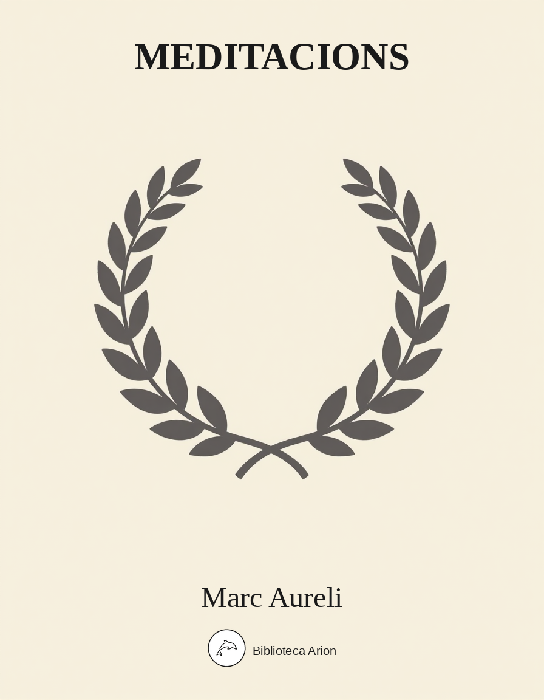

Meditacions
Τὰ εἰς ἑαυτόν
Reflexions personals de l'emperador romà Marc Aureli (121-180 dC), escrites en grec koiné durant les campanyes militars al Danubi. Dotze llibres de pensaments estoics sobre la virtut, el deure, la naturalesa, la mort i la vida examinada. Una de les obres fonamentals de la filosofia estoica i de la literatura universal.
Βιβλίον 1
1.1
Παρὰ τοῦ πάππου Οὐήρου τὸ καλόηθες καὶ ἀόργητον
1.2
Παρὰ τῆς δόξης καὶ μνήμης τῆς περὶ τοῦ γεννήσαντος τὸ αἰδῆμον καὶ ἀρρενικόν
1.3
Παρὰ τῆς μητρὸς τὸ θεοσεβὲς καὶ μεταδοτικὸν καὶ ἀφεκτικὸν οὐ μόνον τοῦ κακοποιεῖν ἀλλὰ καὶ τοῦ ἐπὶ ἐννοίας γίνεσθαι τοιαύτης ἔτι δὲ τὸ λιτὸν κατὰ τὴν δίαιταν καὶ πόρρω τῆς πλουσιακῆς διαγωγῆς
1.4
Παρὰ τοῦ προπάππου τὸ μὴ εἰς δημοσίας διατριβὰς φοιτῆσαι καὶ τὸ ἀγαθοῖς διδασκάλοις κατ̓ οἶκον χρήσασθαι καὶ τὸ γνῶναι ὅτι εἰς τὰ τοιαῦτα δεῖ ἐκτενῶς ἀναλίσκειν
1.5
Παρὰ τοῦ τροφέως τὸ μήτε Πρασιανὸς μήτε Βενετιανὸς μήτε Παλμουλάριος ἢ Σκουτάριος γενέσθαι καὶ τὸ φερέπονον καὶ ὀλιγοδεές καὶ τὸ αὐτουργικὸν καὶ ἀπολύπραγμον καὶ τὸ δυσπρόσδεκτον διαβολῆς
1.6
Παρὰ Διογνήτου τὸ ἀκενόσπουδον καὶ τὸ ἀπιστητικὸν τοῖς ὑπὸ τῶν τερατευομένων καὶ γοήτων περὶ ἐπῳδῶν καὶ περὶ δαιμόνων ἀποπομπῆς καὶ τῶν τοιούτων λεγομένοις καὶ τὸ μὴ ὀρτυγοτροφεῖν μηδὲ περὶ τὰ τοιαῦτα ἐπτοῆσθαι καὶ τὸ ἀνέχεσθαι παρρησίας καὶ τὸ οἰκειωθῆναι φιλοσοφίᾳ καὶ τὸ ἀκοῦσαι πρῶτον μὲν Βακχείου εἶτα Τανδάσιδος καὶ Μαρκιανοῦ καὶ τὸ γράψαι διαλόγους ἐν παιδί καὶ τὸ σκίμποδος καὶ δορᾶς ἐπιθυμῆσαι καὶ ὅσα τοιαῦτα τῆς Ἑλληνικῆς ἀγωγῆς ἐχόμενα
1.7
Παρὰ Ῥουστίκου τὸ λαβεῖν φαντασίαν τοῦ χρῄζειν διορθώσεως καὶ θεραπείας τοῦ ἤθους καὶ τὸ μὴ ἐκτραπῆναι εἰς ζῆλον σοφιστικόν μηδὲ τὸ συγγράφειν περὶ τῶν θεωρημάτων ἢ προτρεπτικὰ λογάρια διαλέγεσθαι ἢ φαντασιοπλήκτως τὸν ἀσκητικὸν ἢ τὸν ἐνεργητικὸν ἄνδρα ἐπιδείκνυσθαι [ ] καὶ τὸ ἀποστῆναι ῥητορικῆς καὶ ποιητικῆς καὶ ἀστειολογίας καὶ τὸ μὴ ἐν στολῇ κατ̓ οἶκον περιπατεῖν μηδὲ τὰ τοιαῦτα ποιεῖν καὶ τὸ τὰ ἐπιστόλια ἀφελῶς γράφειν οἷον τὸ ὑπ̓ αὐτοῦ τούτου ἀπὸ Σινοέσσης τῇ μητρί μου γραφέν [ ] καὶ τὸ πρὸς τοὺς χαλεπήναντας καὶ πλημμελήσαντας εὐανακλήτως καὶ εὐδιαλλάκτως ἐπειδὰν τάχιστα αὐτοὶ ἐπανελθεῖν ἐθελήσωσι διακεῖσθαι καὶ τὸ ἀκριβῶς ἀναγινώσκειν καὶ μὴ ἀρκεῖσθαι περινοοῦντα ὁλοσχερῶς μηδὲ τοῖς περιλαλοῦσι ταχέως συγκατατίθεσθαι καὶ τὸ ἐντυχεῖν τοῖς Ἐπικτητείοις ὑπομνήμασιν ὧν οἴκοθεν μετέδωκεν
1.8
Παρὰ Ἀπολλωνίου τὸ ἐλεύθερον καὶ ἀναμφιβόλως ἀκύβευτον καὶ πρὸς μηδὲν ἄλλο ἀποβλέπειν μηδὲ ἐπ̓ ὀλίγον ἢ πρὸς τὸν λόγον καὶ τὸ ἀεὶ ὅμοιον ἐν ἀλγηδόσιν ὀξείαις ἐν ἀποβολῇ τέκνου ἐν μακραῖς νόσοις καὶ τὸ ἐπὶ παραδείγματος ζῶντος ἰδεῖν ἐναργῶς ὅτι δύναται ὁ αὐτὸς σφοδρότατος εἶναι καὶ ἀνειμένος [ ] καὶ τὸ ἐν ταῖς ἐξηγήσεσι μὴ δυσχεραντικόν καὶ τὸ ἰδεῖν ἄνθρωπον σαφῶς ἐλάχιστον τῶν ἑαυτοῦ καλῶν ἡγούμενον τὴν ἐμπειρίαν καὶ τὴν ἐντρέχειαν τὴν περὶ τὸ παραδιδόναι τὰ θεωρήματα καὶ τὸ μαθεῖν πῶς δεῖ λαμβάνειν τὰς δοκούσας χάριτας παρὰ φίλων μήτε ἐξηττώμενον διὰ ταῦτα μήτε ἀναισθήτως παραπέμποντα
1.9
Παρὰ Σέξτου τὸ εὐμενές καὶ τὸ παράδειγμα τοῦ οἴκου τοῦ πατρονομουμένου καὶ τὴν ἔννοιαν τοῦ κατὰ φύσιν ζῆν καὶ τὸ σεμνὸν ἀπλάστως καὶ τὸ στοχαστικὸν τῶν φίλων κηδεμονικῶς καὶ τὸ ἀνεκτικὸν τῶν ἰδιωτῶν καὶ τὸ ἀθεώρητον οἰομένων [ ] καὶ τὸ πρὸς πάντας εὐάρμοστον ὥστε κολακείας μὲν πάσης προσηνεστέραν εἶναι τὴν ὁμιλίαν αὐτοῦ αἰδεσιμώτατον δὲ αὐτοῖς ἐκείνοις παῤ αὐτὸν ἐκεῖνον τὸν καιρὸν εἶναι καὶ τὸ καταληπτικῶς καὶ ὁδῷ ἐξευρετικόν τε καὶ τακτικὸν τῶν εἰς βίον ἀναγκαίων δογμάτων [ ] καὶ τὸ μηδὲ ἔμφασίν ποτε ὀργῆς ἢ ἄλλου τινὸς πάθους παρασχεῖν ἀλλὰ ἅμα μὲν ἀπαθέστατον εἶναι ἅμα δὲ φιλοστοργότατον καὶ τὸ εὔφημον ἀψοφητὶ καὶ τὸ πολυμαθὲς ἀνεπιφάντως
1.10
Παρὰ Ἀλεξάνδρου τοῦ γραμματικοῦ τὸ ἀνεπίπληκτον καὶ τὸ μὴ ὀνειδιστικῶς ἐπιλαμβάνεσθαι τῶν βάρβαρον ἢ σόλοικόν τι ἢ ἀπηχὲς προενεγκαμένων ἀλλ̓ ἐπιδεξίως αὐτὸ μόνον ἐκεῖνο ὃ ἔδει εἰρῆσθαι προφέρεσθαι ἐν τρόπῳ ἀποκρίσεως ἢ συνεπιμαρτυρήσεως ἢ συνδιαλήψεως περὶ αὐτοῦ τοῦ πράγματος οὐχὶ περὶ τοῦ ῥήματος ἢ δἰ ἑτέρας τινὸς τοιαύτης ἐμμελοῦς παρυπομνήσεως
1.11
Παρὰ Φρόντωνος τὸ ἐπιστῆσαι οἵα ἡ τυραννικὴ βασκανία καὶ ποικιλία καὶ ὑπόκρισις καὶ ὅτι ὡς ἐπίπαν οἱ καλούμενοι οὗτοι παῤ ἡμῖν εὐπατρίδαι ἀστοργότεροί πως εἰσί
1.12
Παρὰ Ἀλεξάνδρου τοῦ Πλατωνικοῦ τὸ μὴ πολλάκις μηδὲ χωρὶς ἀνάγκης λέγειν πρός τινα ἢ ἐν ἐπιστολῇ γράφειν ὅτι ἄσχολός εἰμι μηδὲ διὰ τούτου τοῦ τρόπου συνεχῶς παραιτεῖσθαι τὰ κατὰ τὰς πρὸς τοὺς συμβιοῦντας σχέσεις καθήκοντα προβαλλόμενον τὰ περιεστῶτα πράγματα
1.13
Παρὰ Κατούλου τὸ μὴ ὀλιγώρως ἔχειν φίλου αἰτιωμένου τι κἂν τύχῃ ἀλόγως αἰτιώμενος ἀλλὰ πειρᾶσθαι καὶ ἀποκαθιστάναι ἐπὶ τὸ σύνηθες καὶ τὸ περὶ τῶν διδασκάλων ἐκθύμως εὔφημον οἷα τὰ περὶ Δομιτίου καὶ Ἀθηνοδότου ἀπομνημονευόμενα καὶ τὸ περὶ τὰ τέκνα ἀληθινῶς ἀγαπητικόν
1.14
Παρὰ τοῦ ἀδελφοῦ μου Σεουήρου τὸ φιλοίκειον καὶ φιλάληθες καὶ φιλοδίκαιον καὶ τὸ δἰ αὐτοῦ γνῶναι Θρασέαν Ἑλβίδιον Κάτωνα Δίωνα Βροῦτον καὶ φαντασίαν λαβεῖν πολιτείας ἰσονόμου κατ̓ ἰσότητα καὶ ἰσηγορίαν διοικουμένης καὶ βασιλείας τιμώσης πάντων μάλιστα τὴν ἐλευθερίαν τῶν ἀρχομένων [ ] καὶ ἔτι παρὰ τοῦ αὐτοῦ τὸ ὁμαλὲς καὶ ὁμότονον ἐν τῇ τιμῇ τῆς καὶ τὸ εὐποιητικὸν καὶ τὸ εὐμετάδοτον ἐκτενῶς καὶ τὸ εὔελπι καὶ τὸ πιστευτικὸν περὶ τοῦ ὑπὸ τῶν φίλων φιλεῖσθαι καὶ τὸ ἀνεπίκρυπτον πρὸς τοὺς καταγνώσεως ὑπ̓ αὐτοῦ τυγχάνοντας καὶ τὸ μὴ δεῖσθαι στοχασμοῦ τοὺς φίλους αὐτοῦ περὶ τοῦ τί θέλει ἢ τί οὐ θέλει ἀλλὰ δῆλον εἶναι
1.15
Παρὰ Μαξίμου τὸ κρατεῖν ἑαυτοῦ καὶ κατὰ μηδὲν περίφορον εἷναι καὶ τὸ εὔθυμον ἔν τε ταῖς ἄλλαις περιστάσεσι καὶ ἐν ταῖς νόσοις καὶ τὸ εὔκρατον τοῦ ἤθους καὶ μειλίχιον καὶ γεραρόν καὶ τὸ οὐ σχετλίως κατεργαστικὸν τῶν προκειμένων [ ] καὶ τὸ πάντας αὐτῷ πιστεύειν περὶ ὧν λέγοι ὅτι οὕτως φρονεῖ καὶ περὶ ὧν πράττοι ὅτι οὐ κακῶς πράττει καὶ τὸ ἀθαύμαστον καὶ ἀνέκπληκτον καὶ μηδαμοῦ ἐπειγόμενον ἢ ὀκνοῦν ἢ ἀμηχανοῦν ἢ κατηφὲς ἢ προσσεσηρός [ ] ἢ πάλιν θυμούμενον ἢ ὑφορώμενον καὶ τὸ εὐεργετικὸν καὶ τὸ συγγνωμονικὸν καὶ τὸ ἀψευδές καὶ τὸ ἀδιαστρόφου μᾶλλον ἢ διορθουμένου φαντασίαν παρέχειν καὶ ὅτι οὔτε ᾠήθη ἄν ποτέ τις ὑπερορᾶσθαι ὑπ̓ αὐτοῦ οὔτε ὑπέμεινεν ἂν κρείττονα αὐτοῦ αὑτὸν ὑπολαβεῖν καὶ τὸ εὐχαριεντίζεσθαι
1.16
Παρὰ τοῦ πατρὸς τὸ ἥμερον καὶ μενετικὸν ἀσαλεύτως ἐπὶ τῶν ἐξητασμένως κριθέντων καὶ τὸ ἀκενόδοξον περὶ τὰς δοκούσας τιμάς καὶ τὸ φιλόπονον καὶ ἐνδελεχές καὶ τὸ ἀκουστικὸν τῶν ἐχόντων τι κοινωφελὲς εἰσφέρειν καὶ τὸ ἀπαρατρέπτως τοῦ κατ̓ ἀξίαν ἀπονεμητικὸν ἑκάστῳ καὶ τὸ ἔμπειρον ποῦ μὲν χρεία ἐντάσεως ποῦ δὲ ἀνέσεως [ ] καὶ τὸ παῦσαι τὰ περὶ τοὺς ἔρωτας τῶν μειρακίων καὶ ἡ κοινονοημοσύνη καὶ τὸ ἐφεῖσθαι τοῖς φίλοις μήτε συνδειπνεῖν αὐτῷ πάντως μήτε συναποδημεῖν ἐπάναγκες ἀεὶ δὲ ὅμοιον αὐτὸν καταλαμβάνεσθαι ὑπὸ τῶν διὰ χρείας τινὰς ἀπολειφθέντων καὶ τὸ ζητητικὸν ἀκριβῶς ἐν τοῖς συμβουλίοις καὶ ἐπίμονον ἀλλ̓ οὐ τὸ προαπέστη τῆς ἐρεύνης ἀρκεσθεὶς ταῖς προχείροις φαντασίαις καὶ τὸ διατηρητικὸν τῶν φίλων καὶ μηδαμοῦ ἁψίκορον μηδὲ ἐπιμανές καὶ τὸ αὔταρκες ἐν παντὶ καὶ τὸ φαιδρόν [ ] καὶ τὸ πόρρωθεν προνοητικὸν καὶ τῶν ἐλαχίστων προδιοικητικὸν ἀτραγῴδως καὶ τὸ τὰς ἐπιβοήσεις καὶ πᾶσαν κολακείαν ἐπ̓ αὐτοῦ συσταλῆναν καὶ τὸ φυλακτικὸν ἀεὶ τῶν ἀναγκαίων τῇ ἀρχῇ καὶ ταμιευτικὸν τῆς χορηγίας καὶ ὑπομενετικὸν τῆς ἐπὶ τῶν τοιούτων τινῶν καταιτιάσεως καὶ τὸ μήτε περὶ θεοὺς δεισίδαιμον μήτε περὶ ἀνθρώπους δημοκοπικὸν ἢ ἀρεσκευτικὸν ἢ ὀχλοχαρές ἀλλὰ νῆφον ἐν πᾶσι καὶ βέβαιον καὶ μηδαμοῦ ἀπειρόκαλον μηδὲ καινοτόμον [ ] καὶ τὸ τοῖς εἰς εὐμάρειαν βίου φέρουσί τι ὧν ἡ τύχη παρεῖχε δαψίλειαν χρηστικὸν ἀτύφως ἅμα καὶ ἀπροφασίστως ὥστε παρόντων μὲν ἀνεπιτηδεύτως ἅπτεσθαι ἀπόντων δὲ μὴ δεῖσθαι καὶ τὸ μηδὲ ἄν τινα εἰπεῖν μήτε ὅτι σοφιστὴς μήτε ὅτι οὐερνάκλος μήτε ὅτι σχολαστικός ἀλλ̓ ὅτι ἀνὴρ πέπειρος τέλειος ἀκολάκευτος προεστάναι δυνάμενος καὶ τῶν ἑαυτοῦ καὶ ἄλλων [ ] πρὸς τούτοις δὲ καὶ τὸ τιμητικὸν τῶν ἀληθῶς φιλοσοφούντων τοῖς δὲ ἄλλοις οὐκ ἐξονειδιστικὸν οὐδὲ μὴν εὐπαράγωγον ὑπ̓ αὐτῶν ἔτι δὲ τὸ εὐόμιλον καὶ εὔχαρι οὐ κατακόρως καὶ τὸ τοῦ ἰδίου σώματος ἐπιμελητικὸν ἐμμέτρως οὔτε ὡς ἄν τις φιλόζωος οὔτε πρὸς καλλωπισμὸν οὔτε μὴν ὀλιγώρως [ ] ἀλλ̓ ὥστε διὰ τὴν ἰδίαν προσοχὴν εἰς ὀλίγιστα ἰατρικῆς χρῄζειν ἢ φαρμάκων καὶ ἐπιθεμάτων ἐκτός μάλιστα δὲ τὸ παραχωρητικὸν ἀβασκάνως τοῖς δύναμίν τινα κεκτημένοις οἷον τὴν φραστικὴν ἢ τὴν ἐξ ἱστορίας νόμων ἢ ἐθῶν ἢ ἄλλων τινῶν πραγμάτων καὶ συσπουδαστικὸν αὐτοῖς ἵνα ἕκαστοι κατὰ τὰ ἴδια προτερήματα εὐδοκιμῶσι πάντα δὲ κατὰ τὰ πάτρια πράσσων οὐδὲ αὐτὸ τοῦτο ἐπιτηδεύων φαίνεσθαι [ ] τὸ τὰ πάτρια φυλάσσειν ἔτι δὲ τὸ μὴ εὐμετακίνητον καὶ ῥιπταστικόν ἀλλὰ καὶ τόποις καὶ πράγμασι τοῖς αὐτοῖς ἐνδιατριπτικόν καὶ τὸ μετὰ τοὺς παροξυσμοὺς τῆς κεφαλαλγίας νεαρὸν εὐθὺς καὶ ἀκμαῖον πρὸς τὰ συνήθη ἔργα καὶ τὸ μὴ εἶναι αὐτῷ πολλὰ τὰ ἀπόρρητα ἀλλ̓ ὀλίγιστα καὶ σπανιώτατα καὶ ταῦτα ὑπὲρ τῶν κοινῶν μόνων καὶ τὸ ἔμφρον καὶ μεμετρημένον ἔν τε θεωριῶν ἐπιτελέσει καὶ ἔργων κατασκευαῖς καὶ διανομαῖς καὶ τοῖς τοιούτοις ὅ ἐστιν ἀνθρώπου πρὸς αὐτὸ τὸ δέον πραχθῆναι δεδορκότος οὐ πρὸς τὴν ἐπὶ τοῖς πραχθεῖσιν εὐδοξίαν [ ] οὐκ ἀωρὶ λούστης οὐχὶ φιλοικοδόμος οὐ περὶ τὰς ἐδωδὰς ἐπινοητής οὐ περὶ ἐσθήτων ὑφὰς καὶ χρόας οὐ περὶ σωμάτων ὥρας ἡ ἀπὸ Λωρίου στολὴ ἀνάγουσα ἀπὸ τῆς κάτω ἐπαύλεως χιτὼν ἐν Λανουβίῳ τὰ πολλά τῷ φελώνῃ ἐν Τούσκλοις παραιτουμένῳ ὡς ἐχρήσατο καὶ πᾶς ὁ τοιοῦτος τρόπος [ ] οὐδὲν ἀπηνὲς οὐδὲ μὴν ἀδυσώπητον οὐδὲ λάβρον οὐδὲ ὥστ̓ ἄν τινα εἰπεῖν ποτε ἕως ἱδρῶτος ἀλλὰ πάντα διειλημμένα λελογίσθαι ὡς ἐπὶ σχολῆς ἀταράχως τεταγμένως ἐρρωμένως συμφώνως ἑαυτοῖς ἐφαρμόσειε δ̓ ἂν αὐτῷ τὸ περὶ τοῦ Σωκράτους μνημονευόμενον ὅτι καὶ ἀπέχεσθαι καὶ ἀπολαύειν ἐδύνατο τούτων ὧν οἱ πολλοὶ πρός τε τὰς ἀποχὰς ἀσθενῶς καὶ πρὸς τὰς ἀπολαύσεις ἐνδοτικῶς ἔχουσι [ ] τὸ δὲ ἰσχύειν καὶ ἐγκαρτερεῖν καὶ ἐννήφειν ἑκατέρῳ ἀνδρός ἐστιν ἄρτιον καὶ ἀήττητον ψυχὴν ἔχοντος οἷον ἐν τῇ νόσῳ τῇ Μαξίμου
1.17
Παρὰ τῶν θεῶν τὸ ἀγαθοὺς πάππους ἀγαθοὺς γονέας ἀγαθὴν ἀδελφήν ἀγαθοὺς διδασκάλους ἀγαθοὺς οἰκείους συγγενεῖς φίλους σχεδὸν ἅπαντας ἔχειν καὶ ὅτι περὶ οὐδένα αὐτῶν προέπεσον πλημμελῆσαί τι καίτοι διάθεσιν ἔχων τοιαύτην ἀφ̓ ἧς εἰ ἔτυχε κἂν ἔπραξά τι τοιοῦτο [ ] τῶν θεῶν δὲ εὐποιία τὸ μηδεμίαν συνδρομὴν πραγμάτων γενέσθαι ἥτις ἔμελλέ με ἐλέγξειν καὶ τὸ μὴ ἐπὶ πλέον τραφῆναι παρὰ τῇ παλλακῇ τοῦ πάππου καὶ τὸ τὴν ὥραν διασῶσαι καὶ τὸ μὴ πρὸ ὥρας ἀνδρωθῆναι ἀλλ̓ ἔτι καὶ ἐπιλαβεῖν τοῦ χρόνου [ ] τὸ ἄρχοντι καὶ πατρὶ ὑποταχθῆναι ὃς ἔμελλε πάντα τὸν τῦφον ἀφαιρήσειν μου καὶ εἰς ἔννοιαν ἄξειν τοῦ ὅτι δυνατόν ἐστιν ἐν αὐλῇ βιοῦντα μήτε δορυφορήσεων χρῄζειν μήτε ἐσθήτων σημειωδῶν μήτε λαμπάδων καὶ ἀνδριάντων τοιῶνδέ τινων καὶ τοῦ ὁμοίου κόμπου ἀλλ̓ ἔξεστιν ἐγγυτάτω ἰδιώτου συστέλλειν ἑαυτὸν καὶ μὴ διὰ τοῦτο ταπεινότερον ἢ ῥᾳθυμότερον ἔχειν πρὸς τὰ ὑπὲρ τῶν [ ] κοινῶν ἡγεμονικῶς πραχθῆναι δέοντα τὸ ἀδελφοῦ τοιούτου τυχεῖν δυναμένου μὲν διὰ ἤθους ἐπεγεῖραί με πρὸς ἐπιμέλειαν ἐμαυτοῦ ἅμα δὲ καὶ τιμῇ καὶ στοργῇ εὐφραίνοντός με τὸ παιδία μοι ἀφυῆ μὴ γενέσθαι μηδὲ κατὰ τὸ σωμάτιον διάστροφα τὸ μὴ ἐπὶ πλέον με προκόψαι ἐν ῥητορικῇ καὶ ποιητικῇ καὶ τοῖς ἄλλοις ἐπιτηδεύμασιν ἐν οἷς ἴσως ἂν κατεσχέθην εἰ ᾐσθόμην ἐμαυτὸν εὐόδως προιόντα [ ] τὸ φθάσαι τοὺς τροφέας ἐν ἀξιώματι καταστῆσαι οὗ δὴ ἐδόκουν μοι ἐπιθυμεῖν καὶ μὴ ἀναβαλέσθαι ἐλπίδι τοῦ με ἐπεὶ νέοι ἔτι ἦσαν ὕστερον αὐτὸ πράξειν [ ] τὸ γνῶναι Ἀπολλώνιον Ῥούστικον Μάξιμον τὸ φαντασθῆναι περὶ τοῦ κατὰ φύσιν βίου ἐναργῶς καὶ πολλάκις οἷός τίς ἐστιν ὥστε ὅσον ἐπὶ τοῖς θεοῖς καὶ ταῖς ἐκεῖθεν διαδόσεσι καὶ συλλήψεσι καὶ ἐπιπνοίαις μηδὲν κωλύειν ἤδη κατὰ φύσιν ζῆν με ἀπολείπεσθαι δὲ ἔτι τούτου παρὰ τὴν ἐμὴν αἰτίαν καὶ παρὰ τὸ μὴ διατηρεῖν τὰς ἐκ τῶν θεῶν ὑπομνήσεις καὶ μονονουχὶ διδασκαλίας [ ] τὸ ἀντισχεῖν μοι τὸ σῶμα ἐπὶ τοσοῦτον ἐν τοιούτῳ βίῳ τὸ μήτε Βενεδίκτης ἅψασθαι μήτε Θεοδότου ἀλλὰ καὶ ὕστερον ἐν ἐρωτικοῖς πάθεσι γενόμενον ὑγιᾶναι τὸ χαλεπήναντα πολλάκις Ῥουστίκῳ μηδὲν πλέον πρᾶξαι ἐφ̓ ᾧ ἂν μετέγνων τὸ μέλλουσαν νέαν τελευτᾶν τὴν τεκοῦσαν ὅμως οἰκῆσαι μετ̓ ἐμοῦ τὰ τελευταῖα ἔτη [ ] τὸ ὁσάκις ἐβουλήθην ἐπικουρῆσαί τινι πενομένῳ ἢ εἰς ἄλλο τι χρῄζοντι μηδέποτε ἀκοῦσαί με ὅτι οὐκ ἔστι μοι χρήματα ὅθεν γένηται καὶ τὸ αὐτῷ ἐμοὶ χρείαν ὁμοίαν ὡς παῤ ἑτέρου μεταλαβεῖν μὴ συμπεσεῖν τὸ τὴν γυναῖκα τοιαύτην εἶναι οὑτωσὶ μὲν πειθήνιον οὕτω δὲ φιλόστοργον οὕτω δὲ ἀφελῆ τὸ ἐπιτηδείων τροφέων εἰς τὰ παιδία εὐπορῆσαι [ ] τὸ δἰ ὀνειράτων βοηθήματα δοθῆναι ἄλλα τε καὶ ὡς μὴ πτύειν αἷμα καὶ μὴ ἰλιγγιᾶν καὶ τούτου ἐν Καιήτῃ ὥσπερ χρήσῃ τὸ ὅπως ἐπεθύμησα φιλοσοφίας μὴ ἐμπεσεῖν εἴς τινα σοφιστὴν μηδὲ ἀποκαθίσαι ἐπὶ τὸ συγγράφειν ἢ συλλογισμοὺς ἀναλύειν ἢ περὶ τὰ μετεωρολογικὰ καταγίνεσθαι πάντα γὰρ ταῦτα ῾θεῶν βοηθῶν καὶ τύχης δεῖται ᾿ Τὰ ἐν Κουάδοις πρὸς τῷ Γρανούᾳ
Βιβλίον 2
2.1
Ἕωθεν προλέγειν ἑαυτῷ συντεύξομαι περιέργῳ ἀχαρίστῳ ὑβριστῇ δολερῷ βασκάνῳ ἀκοινωνήτῳ πάντα ταῦτα συμβέβηκεν ἐκείνοις παρὰ τὴν ἄγνοιαν τῶν ἀγαθῶν καὶ κακῶν ἐγὼ δὲ τεθεωρηκὼς τὴν φύσιν τοῦ ἀγαθοῦ ὅτι καλόν καὶ τοῦ κακοῦ ὅτι αἰσχρόν καὶ τὴν αὐτοῦ τοῦ ἁμαρτάνοντος φύσιν ὅτι μοι συγγενής οὐχὶ αἵματος ἢ σπέρματος τοῦ αὐτοῦ ἀλλὰ νοῦ καὶ θείας ἀπομοίρας μέτοχος οὔτε βλαβῆναι ὑπό τινος αὐτῶν δύναμαι αἰσχρῷ γάρ με οὐδεὶς περιβαλεῖ οὔτε ὀργίζεσθαι τῷ συγγενεῖ δύναμαι οὔτε ἀπέχθεσθαι αὐτῷ γεγόναμεν γὰρ πρὸς συνεργίαν ὡς πόδες ὡς χεῖρες ὡς βλέφαρα ὡς οἱ στοῖχοι τῶν ἄνω καὶ κάτω ὀδόντων τὸ οὖν ἀντιπράσσειν ἀλλήλοις παρὰ φύσιν ἀντιπρακτικὸν δὲ τὸ ἀγανακτεῖν καὶ ἀποστρέφεσθαι
2.2
Ὅ τί ποτε τοῦτό εἰμι σαρκία ἐστὶ καὶ πνευμάτιον καὶ τὸ ἡγεμονικόν ἄφες τὰ βιβλία μηκέτι σπῶ οὐ δέδοται ἀλλ̓ ὡς ἤδη ἀποθνῄσκων τῶν μὲν σαρκίων καταφρόνησον λύθρος καὶ ὀστάρια καὶ κροκύφαντος ἐκ νεύρων φλεβίων ἀρτηριῶν πλεγμάτιον θέασαι δὲ καὶ τὸ πνεῦμα ὁποῖόν τί ἐστιν ἄνεμος οὐδὲ ἀεὶ τὸ αὐτό ἀλλὰ πάσης ὥρας ἐξεμούμενον καὶ πάλιν ῥοφούμενον τρίτον οὖν ἐστι τὸ ἡγεμονικόν ὧδε ἐπινοήθητι γέρων εἶ μηκέτι τοῦτο ἐάσῃς δουλεῦσαι μηκέτι καθ̓ ὁρμὴν ἀκοινώνητον νευροσπαστηθῆναι μηκέτι τὸ εἱμαρμένον ἢ παρὸν δυσχερᾶναι ἢ μέλλον ὑπιδέσθαι
2.3
Τὰ τῶν θεῶν προνοίας μεστά τὰ τῆς τύχης οὐκ ἄνευ φύσεως ἢ συγκλώσεως καὶ ἐπιπλοκῆς τῶν προνοίᾳ διοικουμένων πάντα ἐκεῖθεν ῥεῖ πρόσεστι δὲ τὸ ἀναγκαῖον καὶ τὸ τῷ ὅλῳ κόσμῳ συμφέρον οὗ μέρος εἶ παντὶ δὲ φύσεως μέρει ἀγαθόν ὃ φέρει ἡ τοῦ ὅλου φύσις καὶ ὃ ἐκείνης ἐστὶ σωστικόν σῴζουσι δὲ κόσμον ὥσπερ αἱ τῶν στοιχείων οὕτως καὶ αἱ τῶν συγκριμάτων μεταβολαί ταῦτά σοι ἀρκείτω καὶ δόγματα ἔστω τὴν δὲ τῶν βιβλίων δίψαν ῥῖψον ἵνα μὴ γογγύζων ἀποθάνῃς ἀλλὰ ἵλεως ἀληθῶς καὶ ἀπὸ καρδίας εὐχάριστος τοῖς θεοῖς
2.4
Μέμνησο ἐκ πόσου ταῦτα ἀναβάλλῃ καὶ ὁποσάκις προθεσμίας λαβὼν παρὰ τῶν θεῶν οὐ χρᾷ αὐταῖς δεῖ δὲ ἤδη ποτὲ αἰσθέσθαι τίνος κόσμου μέρος εἶ καὶ τίνος διοικοῦντος τὸν κόσμον ἀπόρροια ὑπέστης καὶ ὅτι ὅρος ἐστί σοι περιγεγραμμένος τοῦ χρόνου ᾧ ἐὰν εἰς τὸ ἀπαιθριάσαι μὴ χρήσῃ οἰχήσεται οἰχήσῃ καὶ αὖθις οὐκ ἐξέσται
2.5
Πάσης ὥρας φρόντιζε στιβαρῶς ὡς Ῥωμαῖος καὶ ἄρρην τὸ ἐν χερσὶ μετὰ τῆς ἀκριβοῦς καὶ ἀπλάστου σεμνότητος καὶ φιλοστοργίας καὶ ἐλευθερίας καὶ δικαιότητος πράσσειν καὶ σχολὴν σαυτῷ ἀπὸ πασῶν τῶν ἄλλων φαντασιῶν πορίζειν ποριεῖς δέ ἂν ὡς ἐσχάτην τοῦ βίου ἑκάστην πρᾶξιν ἐνεργῇς ἀπηλλαγμένος πάσης εἰκαιότητος καὶ ἐμπαθοῦς ἀποστροφῆς ἀπὸ τοῦ αἱροῦντος λόγου καὶ ὑποκρίσεως καὶ φιλαυτίας καὶ δυσαρεστήσεως πρὸς τὰ συμμεμοιραμένα ὁρᾷς πῶς ὀλίγα ἐστίν ὧν κρατήσας τις δύναται εὔρουν καὶ θεουδῆ βιῶσαι βίον καὶ γὰρ οἱ θεοὶ πλέον οὐδὲν ἀπαιτήσουσι παρὰ τοῦ ταῦτα φυλάσσοντος
2.6
Ὕβριζε ὕβριζε σεαυτήν ὦ ψυχή τοῦ δὲ τιμῆσαι σεαυτὴν οὐκέτι καιρὸν ἕξεις εἷς γὰρ ὁ βίος ἑκάστῳ οὗτος δέ σοι σχεδὸν διήνυσται μὴ αἰδουμένῃ σεαυτήν ἀλλ̓ ἐν ταῖς ἄλλων ψυχαῖς τιθεμένῃ τὴν σὴν εὐμοιρίαν
2.7
Περισπᾷ τί σε τὰ ἔξωθεν ἐμπίπτοντα καὶ σχολὴν πάρεχε σεαυτῷ τοῦ προσμανθάνειν ἀγαθόν τι καὶ παῦσαι ῥεμβόμενος ἤδη δὲ καὶ τὴν ἑτέραν περιφορὰν φυλακτέον ληροῦσι γὰρ καὶ διὰ πράξεων οἱ κεκμηκότες τῷ βίῳ καὶ μὴ ἔχοντες σκοπόν ἐφ̓ ὃν πᾶσαν ὁρμὴν καὶ καθάπαξ φαντασίαν ἀπευθύνουσιν
2.8
Παρὰ μὲν τὸ μὴ ἐφιστάνειν τί ἐν τῇ ἄλλου ψυχῇ γίνεται οὐ ῥᾳδίως τις ὤφθη κακοδαιμονῶν τοὺς δὲ τοῖς τῆς ἰδίας ψυχῆς κινήμασι μὴ παρακολουθοῦντας ἀνάγκη κακοδαιμονεῖν
2.9
Τούτων ἀεὶ δεῖ μεμνῆσθαι τίς ἡ τῶν ὅλων φύσις καὶ τίς ἡ ἐμὴ καὶ πῶς αὕτη πρὸς ἐκείνην ἔχουσα καὶ ὁποῖόν τι μέρος ὁποίου τοῦ ὅλου οὖσα καὶ ὅτι οὐδεὶς ὁ κωλύων τὰ ἀκόλουθα τῇ φύσει ἧς μέρος εἶ πράσσειν τε ἀεὶ καὶ λέγειν
2.10
Φιλοσόφως ὁ Θεόφραστος ἐν τῇ συγκρίσει τῶν ἁμαρτημάτων ὡς ἄν τις κοινότερον τὰ τοιαῦτα συγκρίνειε φησὶ βαρύτερα εἶναι τὰ κατ̓ ἐπιθυμίαν πλημμελούμενα τῶν κατὰ θυμόν ὁ γὰρ θυμούμενος μετά τινος λύπης καὶ λεληθυίας συστολῆς φαίνεται τὸν λόγον ἀποστρεφόμενος ὁ δὲ κατ̓ ἐπιθυμίαν ἁμαρτάνων ὑφ̓ ἡδονῆς ἡττώμενος ἀκολαστότερός πως φαίνεται καὶ θηλύτερος ἐν ταῖς ἁμαρτίαις ὀρθῶς οὖν καὶ φιλοσοφίας ἀξίως ἔφη μείζονος ἐγκλήματος ἔχεσθαι τὸ μεθ̓ ἡδονῆς ἁμαρτανόμενον ἤπερ τὸ μετὰ λύπης ὅλως τε ὁ μὲν προηδικημένῳ μᾶλλον ἔοικε καὶ διὰ λύπης ἠναγκασμένῳ θυμωθῆναι ὁ δὲ αὐτόθεν πρὸς τὸ ἀδικεῖν ὥρμηται φερόμενος ἐπὶ τὸ πρᾶξαί τι κατ̓ ἐπιθυμίαν
2.11
Ὡς ἤδη δυνατοῦ ὄντος ἐξιέναι τοῦ βίου οὕτως ἕκαστα ποιεῖν καὶ λέγειν καὶ διανοεῖσθαι τὸ δὲ ἐξ ἀνθρώπων ἀπελθεῖν εἰ μὲν θεοὶ εἰσίν οὐδὲν δεινόν κακῷ γάρ σε οὐκ ἂν περιβάλοιεν εἰ δὲ ἤτοι οὐκ εἰσὶν ἢ οὐ μέλει αὐτοῖς τῶν ἀνθρωπείων τί μοι ζῆν ἐν κόσμῳ κενῷ θεῶν ἢ προνοίας κενῷ [ ] ἀλλὰ καὶ εἰσὶ καὶ μέλει αὐτοῖς τῶν ἀνθρωπείων καὶ τοῖς μὲν κατ̓ ἀλήθειαν κακοῖς ἵνα μὴ περιπίπτῃ ὁ ἄνθρωπος ἐπ̓ αὐτῷ τὸ πᾶν ἔθεντο τῶν δὲ λοιπῶν εἴ τι κακὸν ἦν καὶ τοῦτο ἂν προείδοντο ἵνα ἐπὶ παντὶ ᾖ τὸ μὴ περιπίπτειν αὐτῷ ὃ δὲ χείρω μὴ ποιεῖ ἄνθρωπον πῶς ἂν τοῦτο βίον ἀνθρώπου χείρω ποιήσειεν [ ] οὔτε δὲ κατ̓ ἄγνοιαν οὔτε εἰδυῖα μέν μὴ δυναμένη δὲ προφυλάξασθαι ἢ διορθώσασθαι ταῦτα ἡ τῶν ὅλων φύσις παρεῖδεν ἄν οὔτ̓ ἂν τηλικοῦτον ἥμαρτεν ἤτοι παῤ ἀδυναμίαν ἢ παῤ ἀτεχνίαν ἵνα τὰ ἀγαθὰ καὶ τὰ κακὰ ἐπίσης τοῖς τε ἀγαθοῖς ἀνθρώποις καὶ τοῖς κακοῖς πεφυρμένως συμβαίνῃ [ ] θάνατος δέ γε καὶ ζωή δόξα καὶ ἀδοξία πόνος καὶ ἡδονή πλοῦτος καὶ πενία πάντα ταῦτα ἐπίσης συμβαίνει ἀνθρώπων τοῖς τε ἀγαθοῖς καὶ τοῖς κακοῖς οὔτε καλὰ ὄντα οὔτε αἰσχρά οὔτ̓ ἄῤ ἀγαθὰ οὔτε κακά ἐστι
2.12
Πῶς πάντα ταχέως ἐναφανίζεται τῷ μὲν κόσμῳ αὐτὰ τὰ σώματα τῷ δὲ αἰῶνι αἱ μνῆμαι αὐτῶν οἶά ἐστι τὰ αἰσθητὰ πάντα καὶ μάλιστα τὰ ἡδονῇ δελεάζοντα ἢ τῷ πόνῳ φοβοῦντα ἢ τῷ τύφῳ διαβεβοημένα πῶς εὐτελῆ καὶ εὐκαταφρόνητα καὶ ῥυπαρὰ καὶ εὔφθαρτα καὶ νεκρά νοερᾶς δυνάμεως ἐφιστάναι τί εἰσιν οὗτοι ὧν αἱ ὑπολήψεις καὶ αἱ φωναὶ τὴν εὐδοξίαν παρέχουσι τί ἐστι τὸ ἀποθανεῖν καὶ ὅτι ἐάν τις αὐτὸ μόνον ἴδῃ καὶ τῷ μερισμῷ τῆς ἐννοίας διαλύσῃ τὰ ἐμφανταζόμενα αὐτῷ οὐκέτι ἄλλο τι ὑπολήψεται αὐτὸ εἶναι ἢ φύσεως ἔργον φύσεως δὲ ἔργον εἴ τις φοβεῖται παιδίον ἐστί τοῦτο μέντοι οὐ μόνον φύσεως ἔργον ἐστίν ἀλλὰ καὶ συμφέρον αὐτῇ πῶς ἅπτεται θεοῦ ἄνθρωπος καὶ κατὰ τί ἑαυτοῦ μέρος καὶ ὅταν πῶς ἔχῃ διακέηται τὸ τοῦ ἀνθρώπου τοῦτο μόριον
2.13
Οὐδὲν ἀθλιώτερον τοῦ πάντα κύκλῳ ἐκπεριερχομένου καὶ ῾τὰ νέρθεν γᾶς ῾φησὶν̓ ἐρευνῶντος᾿ καὶ τὰ ἐν ταῖς ψυχαῖς τῶν πλησίον διὰ τεκμάρσεως ζητοῦντος μὴ αἰσθομένου δέ ὅτι ἀρκεῖ πρὸς μόνῳ τῷ ἔνδον ἑαυτοῦ δαίμονι εἶναι καὶ τοῦτον γνησίως θεραπεύειν θεραπεία δὲ αὐτοῦ καθαρὸν πάθους διατηρεῖν καὶ εἰκαιότητος καὶ δυσαρεστήσεως τῆς πρὸς τὰ ἐκ θεῶν καὶ ἀνθρώπων γινόμενα τὰ μὲν γὰρ ἐκ θεῶν αἰδέσιμα δἰ ἀρετήν τὰ δὲ ἐξ ἀνθρώπων φίλα διὰ συγγένειαν ἔστι δὲ ὅτε καὶ τρόπον τινὰ ἐλεεινὰ δἰ ἄγνοιαν ἀγαθῶν καὶ κακῶν οὐκ ἐλάττων ἡ πήρωσις αὕτη τῆς στερισκούσης τοῦ διακρίνειν τὰ λευκὰ καὶ μέλανα
2.14
Κἂν τρὶς χίλια ἔτη βιώσεσθαι μέλλῃς κἂν τοσαυτάκις μύρια ὅμως μέμνησο ὅτι οὐδεὶς ἄλλον ἀποβάλλει βίον ἢ τοῦτον ὃν ζῇ οὐδὲ ἄλλον ζῇ ἢ ὃν ἀποβάλλει εἰς ταὐτὸν οὖν καθίσταται τὸ μήκιστον τῷ βραχυτάτῳ τὸ γὰρ παρὸν πᾶσιν ἴσον καὶ τὸ ἀπολλύμενον οὖν ἴσον καὶ τὸ ἀποβαλλόμενον οὕτως ἀκαριαῖον ἀναφαίνεται οὔτε γὰρ τὸ παρῳχηκὸς οὔτε τὸ μέλλον ἀποβάλοι ἄν τις ὃ γὰρ οὐκ ἔχει πῶς ἄν τις τοῦτο αὐτοῦ ἀφέλοιτο [ ] τούτων οὖν τῶν δύο δεῖ μεμνῆσθαι ἑνὸς μέν ὅτι πάντα ἐξ ἀιδίου ὁμοειδῆ καὶ ἀνακυκλούμενα καὶ οὐδὲν διαφέρει πότερον ἐν ἑκατὸν ἔτεσιν ἢ ἐν διακοσίοις ἢ ἐν τῷ ἀπείρῳ τὰ αὐτά τις ὄψεται ἑτέρου δέ ὅτι καὶ ὁ πολυχρονιώτατος καὶ ὁ τάχιστα τεθνηξόμενος τὸ ἴσον ἀποβάλλει τὸ γὰρ παρόν ἐστι μόνον οὗ στερίσκεσθαι μέλλει εἴπερ γε ἔχει καὶ τοῦτο μόνον καὶ ὃ μὴ ἔχει τις οὐκ ἀποβάλλει
2.15
Ὅτι πᾶν ὑπόληψις δῆλα μὲν γὰρ τὰ πρὸς τὸν Κυνικὸν Μόνιμον λεγόμενα δῆλον δὲ καὶ τὸ χρήσιμον τοῦ λεγομένου ἐάν τις αὐτοῦ τὸ νόστιμον μέχρι τοῦ ἀληθοῦς δέχηται
2.16
Ὑβρίζει ἑαυτὴν ἡ τοῦ ἀνθρώπου ψυχὴ μάλιστα μέν ὅταν ἀπόστημα καὶ οἷον φῦμα τοῦ κόσμου ὅσον ἐφ̓ ἑαυτῇ γένηται τὸ γὰρ δυσχεραίνειν τινὶ τῶν γινομένων ἀπόστασίς ἐστι τῆς φύσεως ἧς ἐν μέρει αἱ ἑκάστου τῶν λοιπῶν φύσεις περιέχονται ἔπειτα δέ ὅταν ἄνθρωπόν τινα ἀποστραφῇ ἢ καὶ ἐναντία φέρηται ὡς βλάψουσα οἷαί εἰσιν αἱ τῶν ὀργιζομένων τρίτον ὑβρίζει ἑαυτήν ὅταν ἡσσᾶται ἡδονῆς ἢ πόνου τέταρτον ὅταν ὑποκρίνηται καὶ ἐπιπλάστως καὶ ἀναλήθως τι ποιῇ ἢ λέγῃ πέμπτον ὅταν πρᾶξίν τινα ἑαυτῆς καὶ ὁρμὴν ἐπ̓ οὐδένα σκοπὸν ἀφιῇ ἀλλ̓ εἰκῇ καὶ ἀπαρακολουθήτως ὁτιοῦν ἐνεργῇ δέον καὶ τὰ μικρότατα κατὰ τὴν ἐπὶ τὸ τέλος ἀναφορὰν γίνεσθαι τέλος δὲ λογικῶν ζῴων τὸ ἕπεσθαι τῷ τῆς πόλεως καὶ πολιτείας τῆς πρεσβυτάτης λόγῳ καὶ θεσμῷ
2.17
Τοῦ ἀνθρωπίνου βίου ὁ μὲν χρόνος στιγμή ἡ δὲ οὐσία ῥέουσα ἡ δὲ αἴσθησις ἀμυδρά ἡ δὲ ὅλου τοῦ σώματος σύγκρισις εὔσηπτος ἡ δὲ ψυχὴ ῥόμβος ἡ δὲ τύχη δυστέκμαρτον ἡ δὲ φήμη ἄκριτον συνελόντι δὲ εἰπεῖν πάντα τὰ μὲν τοῦ σώματος ποταμός τὰ δὲ τῆς ψυχῆς ὄνειρος καὶ τῦφος ὁ δὲ βίος πόλεμος καὶ ξένου ἐπιδημία [ ] ἡ δὲ ὑστεροφημία λήθη τί οὖν τὸ παραπέμψαι δυνάμενον ἓν καὶ μόνον φιλοσοφία τοῦτο δὲ ἐν τῷ τηρεῖν τὸν ἔνδον δαίμονα ἀνύβριστον καὶ ἀσινῆ ἡδονῶν καὶ πόνων κρείσσονα μηδὲν εἰκῇ ποιοῦντα μηδὲ διεψευσμένως καὶ μεθ̓ ὑποκρίσεως ἀνενδεῆ τοῦ ἄλλον ποιῆσαί τι ἢ μὴ ποιῆσαι ἔτι δὲ τὰ συμβαίνοντα καὶ ἀπονεμόμενα δεχόμενον ὡς ἐκεῖθέν ποθεν ἐρχόμενα ὅθεν αὐτὸς ἦλθεν ἐπὶ πᾶσι δὲ τὸν θάνατον ἵλεῳ τῇ γνώμῃ περιμένοντα ὡς οὐδὲν ἄλλο ἢ λύσιν τῶν στοιχείων ἐξ ὧν ἕκαστον ζῷον συγκρίνεται εἰ δὲ αὐτοῖς τοῖς στοιχείοις μηδὲν δεινὸν ἐν τῷ ἕκαστον διηνεκῶς εἰς ἕτερον μεταβάλλειν διὰ τί ὑπίδηταί τις τὴν πάντων μεταβολὴν καὶ διάλυσιν κατὰ φύσιν γάρ οὐδὲν δὲ κακὸν κατὰ φύσιν Τὰ ἐν Καρνούντῳ
Βιβλίον 3
3.1
Οὐχὶ τοῦτο μόνον δεῖ λογίζεσθαι ὅτι καθ̓ ἑκάστην ἡμέραν ἀπαναλίσκεται ὁ βίος καὶ μέρος ἔλαττον αὐτοῦ καταλείπεται ἀλλὰ κἀκεῖνο λογιστέον ὅτι εἰ ἐπὶ πλέον βιῴη τις ἐκεῖνό γε ἄδηλον εἰ ἐξαρκέσει ὁμοία αὖθις ἡ διάνοια πρὸς τὴν σύνεσιν τῶν πραγμάτων καὶ τῆς θεωρίας τῆς συντεινούσης εἰς τὴν ἐμπειρίαν τῶν τε θείων καὶ τῶν ἀνθρωπείων ἐὰν γὰρ παραληρεῖν ἄρξηται τὸ μὲν διαπνεῖσθαι καὶ τρέφεσθαι καὶ φαντάζεσθαι καὶ ὁρμᾶν καὶ ὅσα ἄλλα τοιαῦτα οὐκ ἐνδεήσει τὸ δὲ ἑαυτῷ χρῆσθαι καὶ τοὺς τοῦ καθήκοντος ἀριθμοὺς ἀκριβοῦν καὶ τὰ προφαινόμενα διαρθροῦν καὶ περὶ αὐτοῦ τοῦ εἰ ἤδη ἐξακτέον αὑτὸν ἐφιστάνειν καὶ ὅσα τοιαῦτα λογισμοῦ συγγεγυμνασμένου πάνυ χρῄζει προαποσβέννυται χρὴ οὖν ἐπείγεσθαι οὐ μόνον τῷ ἐγγυτέρω τοῦ θανάτου ἑκάστοτε γίνεσθαι ἀλλὰ καὶ διὰ τὸ τὴν ἐννόησιν τῶν πραγμάτων καὶ τὴν παρακολούθησιν προαπολήγειν
3.2
Χρὴ καὶ τὰ τοιαῦτα παραφυλάσσειν ὅτι καὶ τὰ ἐπιγινόμενα τοῖς φύσει γινομένοις ἔχει τι εὔχαρι καὶ ἐπαγωγόν οἷον ἄρτου ὀπτωμένου παραρρήγνυταί τινα μέρη καὶ ταῦτα οὖν τὰ διέχοντα οὕτως καὶ τρόπον τινὰ παρὰ τὸ ἐπάγγελμα τῆς ἀρτοποιίας ἔχοντα ἐπιπρέπει πως καὶ προθυμίαν πρὸς τὴν τροφὴν ἰδίως ἀνακινεῖ [ ] πάλιν τε τὰ σῦκα ὁπότε ὡραιότατά ἐστι κέχηνε καὶ ἐν ταῖς δρυπεπέσιν ἐλαίαις αὐτὸ τὸ ἐγγὺς τῇ σήψει ἴδιόν τι κάλλος τῷ καρπῷ προστίθησι καὶ οἱ στάχυες κάτω νεύοντες καὶ τὸ τοῦ λέοντος ἐπισκύνιον καὶ ὁ τῶν συῶν ἐκ τοῦ στόματος ῥέων ἀφρὸς καὶ πολλὰ ἕτερα κατ̓ ἰδίαν εἴ τις σκοποίη πόρρω ὄντα τοῦ εὐειδοῦς ὅμως διὰ τὸ τοῖς φύσει γινομένοις ἐπακολουθεῖν συνεπικοσμεῖ καὶ ψυχαγωγεῖ [ ] ὥστε εἴ τις ἔχει πάθος καὶ ἔννοιαν βαθυτέραν πρὸς τὰ ἐν τῷ ὅλῳ γινόμενα σχεδὸν οὐδὲν οὐχὶ δόξει αὐτῷ καὶ τῶν κατ̓ ἐπακολούθησιν συμβαινόντων ἡδέως πως διασυνίστασθαι οὗτος δὲ καὶ θηρίων ἀληθῆ χάσματα οὐχ ἧσσον ἡδέως ὄψεται ἢ ὅσα γραφεῖς καὶ πλάσται μιμούμενοι δεικνύουσιν καὶ γραὸς καὶ γέροντος ἀκμήν τινα καὶ ὥραν καὶ τὸ ἐν παισὶν ἐπαφρόδιτον τοῖς ἑαυτοῦ σώφροσιν ὀφθαλμοῖς ὁρᾶν δυνήσεται καὶ πολλὰ τοιαῦτα οὐ παντὶ πιθανά μόνῳ δὲ τῷ πρὸς τὴν φύσιν καὶ τὰ ταύτης ἔργα γνησίως ᾠκειωμένῳ προσπεσεῖται
3.3
Ἱπποκράτης πολλὰς νόσους ἰασάμενος αὐτὸς νοσήσας ἀπέθανεν οἱ Χαλδαῖοι πολλῶν θανάτους προηγόρευσαν εἶτα καὶ αὐτοὺς τὸ πεπρωμένον κατέλαβεν Ἀλέξανδρος καὶ Πομπήιος καὶ Γάιος Καῖσαρ ὅλας πόλεις ἄρδην τοσαυτάκις ἀνελόντες καὶ ἐν παρατάξει πολλὰς μυριάδας ἱππέων καὶ πεζῶν κατακόψαντες καὶ αὐτοί ποτε ἐξῆλθον τοῦ βίου Ἡράκλειτος περὶ τῆς τοῦ κόσμου ἐκπυρώσεως τοσαῦτα φυσιολογήσας ὕδατος τὰ ἐντὸς πληρωθείς βολβίτῳ κατακεχρισμένος ἀπέθανε Δημόκριτον δὲ οἱ φθεῖρες Σωκράτην δὲ ἄλλοι φθεῖρες ἀπέκτειναν τί ταῦτα ἐνέβης ἔπλευσας κατήχθης ἔκβηθι εἰ μὲν ἐφ̓ ἕτερον βίον οὐδὲν θεῶν κενὸν οὐδὲ ἐκεῖ εἰ δὲ ἐν ἀναισθησίᾳ παύσῃ πόνων καὶ ἡδονῶν ἀνεχόμενος καὶ λατρεύων τοσούτῳ χείρονι τῷ ἀγγείῳ ἤπερ ἐστὶ τὸ ὑπηρετοῦν τὸ μὲν γὰρ νοῦς καὶ δαίμων τὸ δὲ γῆ καὶ λύθρος
3.4
Μὴ κατατρίψῃς τὸ ὑπολειπόμενον τοῦ βίου μέρος ἐν ταῖς περὶ ἑτέρων φαντασίαις ὁπόταν μὴ τὴν ἀναφορὰν ἐπί τι κοινωφελὲς ποιῇ ῾ἤτοι γὰρ ἄλλου ἔργου στέρᾐ τουτέστι φανταζόμενος τί ὁ δεῖνα πράσσει καὶ τίνος ἕνεκεν καὶ τί λέγει καὶ τί ἐνθυμεῖται καὶ τί τεχνάζεται καὶ ὅσα τοιαῦτα ποιεῖ ἀπορρέμβεσθαι τῆς τοῦ ἰδίου ἡγεμονικοῦ παρατηρήσεως [ ] χρὴ μὲν οὖν καὶ τὸ εἰκῇ καὶ μάτην ἐν τῷ εἱρμῷ τῶν φαντασιῶν περιίστασθαι πολὺ δὲ μάλιστα τὸ περίεργον καὶ κακόηθες καὶ ἐθιστέον ἑαυτὸν μόνα φαντάζεσθαι περὶ ὧν εἴ τις ἄφνω ἐπανέροιτο τί νῦν διανοῇ μετὰ παρρησίας παραχρῆμα ἂν ἀποκρίναιο ὅτι τὸ καὶ τό ὡς ἐξ αὐτῶν εὐθὺς δῆλα εἶναι ὅτι πάντα ἁπλᾶ καὶ εὐμενῆ καὶ ζῴου κοινωνικοῦ καὶ ἀμελοῦντος ἡδονικῶν ἢ καθάπαξ ἀπολαυστικῶν φαντασμάτων ἢ φιλονεικίας τινὸς ἢ βασκανίας καὶ ὑποψίας ἢ ἄλλου τινός ἐφ̓ ᾧ ἂν ἐρυθριάσειας ἐξηγούμενος ὅτι ἐν νῷ αὐτὸ εἶχες [ ] ὁ γάρ τοι ἀνὴρ ὁ τοιοῦτος οὐκέτι ὑπερτιθέμενος τὸ ὡς ἐν ἀρίστοις ἤδη εἶναι ἱερεύς τίς ἐστι καὶ ὑπουργὸς θεῶν χρώμενος καὶ τῷ ἔνδον ἱδρυμένῳ αὐτῷ ὃ παρέχεται τὸν ἄνθρωπον ἄχραντον ἡδονῶν ἄτρωτον ὑπὸ παντὸς πόνου πάσης ὕβρεως ἀνέπαφον πάσης ἀναίσθητον πονηρίας ἀθλητὴν ἄθλου τοῦ μεγίστου τοῦ ὑπὸ μηδενὸς πάθους καταβληθῆναι δικαιοσύνῃ βεβαμμένον εἰς βάθος ἀσπαζόμενον μὲν ἐξ ὅλης τῆς ψυχῆς τὰ συμβαίνοντα καὶ ἀπονεμόμενα πάντα μὴ πολλάκις δὲ μηδὲ χωρὶς μεγάλης καὶ κοινωφελοῦς ἀνάγκης φανταζόμενον τί ποτε ἄλλος λέγει ἢ πράσσει ἢ διανοεῖται μόνα γὰρ τὰ ἑαυτοῦ πρὸς ἐνέργειαν ἔχει καὶ τὰ ἑαυτῷ ἐκ τῶν ὅλων συγκλωθόμενα διηνεκῶς ἐννοεῖ κἀκεῖνα μὲν καλὰ παρέχεται ταῦτα δὲ ἀγαθὰ εἶναι πέπεισται ἡ γὰρ ἑκάστῳ νεμομένη μοῖρα συνεμφέρεταί τε καὶ συνεμφέρει [ ] μέμνηται δὲ καὶ ὅτι συγγενὲς πᾶν τὸ λογικόν καὶ ὅτι κήδεσθαι μὲν πάντων ἀνθρώπων κατὰ τὴν τοῦ ἀνθρώπου φύσιν ἐστί δόξης δὲ οὐχὶ τῆς παρὰ πάντων ἀνθεκτέον ἀλλὰ τῶν ὁμολογουμένως τῇ φύσει βιούντων μόνων οἱ δὲ μὴ οὕτως βιοῦντες ὁποῖοί τινες οἴκοι τε καὶ ἔξω τῆς οἰκίας καὶ νύκτωρ καὶ μεθ᾽ ἡμέραν οἷοι μεθ᾽ οἵων φύρονται μεμνημένος διατελεῖ οὐ τοίνυν οὐδὲ τὸν παρὰ τῶν τοιούτων ἔπαινον ἐν λόγῳ τίθεται οἵγε οὐδὲ αὐτοὶ ἑαυτοῖς ἀρέσκονται
3.5
Μήτε ἀκούσιος ἐνέργει μήτε ἀκοινώνητος μήτε ἀνεξέταστος μήτε ἀνθελκόμενος μήτε κομψεία τὴν διάνοιάν σου καλλωπιζέτω μήτε πολυρρήμων μήτε πολυπράγμων ἔσο ἔτι δὲ ὁ ἐν σοὶ θεὸς ἔστω προστάτης ζῴου ἄρρενος καὶ πρεσβύτου καὶ πολιτικοῦ καὶ Ῥωμαίου καὶ ἄρχοντος ἀνατεταχότος ἑαυτόν οἷος ἂν εἴη τις περιμένων τὸ ἀνακλητικὸν ἐκ τοῦ βίου εὔλυτος μήτε ὅρκου δεόμενος μήτε ἀνθρώπου τινὸς μάρτυρος ἐνέστω δὲ τὸ φαιδρὸν καὶ τὸ ἀπροσδεὲς τῆς ἔξωθεν ὑπηρεσίας καὶ τὸ ἀπροσδεὲς ἡσυχίας ἣν ἄλλοι παρέχουσιν ὀρθὸν οὖν εἶναι χρή οὐχὶ ὀρθούμενον
3.6
Εἰ μὲν κρεῖττον εὑρίσκεις ἐν τῷ ἀνθρωπίνῳ βίῳ δικαιοσύνης ἀληθείας σωφροσύνης ἀνδρείας καὶ καθάπαξ τοῦ ἀρκεῖσθαι ἑαυτῇ τὴν διάνοιάν σου ἐν οἷς κατὰ τὸν λόγον τὸν ὀρθὸν πράσσοντά σε παρέχεται καὶ ἐν τῇ εἱμαρμένῃ ἐν τοῖς ἀπροαιρέτως ἀπονεμομένοις εἰ τούτου φημί κρεῖττόν τι ὁρᾷς ἐπ᾽ ἐκεῖνο ἐξ ὅλης τῆς ψυχῆς τραπόμενος τοῦ ἀρίστου εὑρισκομένου ἀπόλαυε [ ] εἰ δὲ μηδὲν κρεῖττον φαίνεται αὐτοῦ τοῦ ἐνιδρυμένου ἐν σοὶ δαίμονος τάς τε ἰδίας ὁρμὰς ὑποτεταχότος ἑαυτῷ καὶ τὰς φαντασίας ἐξετάζοντος καὶ τῶν αἰσθητικῶν πείσεων ὡς ὁ Σωκράτης ἔλεγεν ἑαυτὸν ἀφειλκυκότος καὶ τοῖς θεοῖς ὑποτεταχότος ἑαυτὸν καὶ τῶν ἀνθρώπων προκηδομένου εἰ τούτου πάντα τὰ ἄλλα μικρότερα καὶ εὐτελέστερα εὑρίσκεις μηδενὶ χώραν δίδου ἑτέρῳ πρὸς ὃ ῥέψας ἅπαξ καὶ ἀποκλίνας οὐκέτι ἀπερισπάστως τὸ ἀγαθὸν ἐκεῖνο τὸ ἴδιον καὶ τὸ σόν προτιμᾶν δυνήσῃ [ ] ἀντικαθῆσθαι γὰρ τῷ λογικῷ καὶ πολιτικῷ ἀγαθῷ οὐ θέμις οὐδ᾽ ὁτιοῦν ἑτερογενές οἷον τὸν παρὰ τῶν πολλῶν ἔπαινον ἢ ἀρχὰς ἢ πλοῦτον ἢ ἀπολαύσεις ἡδονῶν πάντα ταῦτα κἂν πρὸς ὀλίγον ἐναρμόζειν δόξῃ κατεκράτησεν ἄφνω καὶ παρήνεγκεν σὺ δέ φημί ἁπλῶς καὶ ἐλευθέρως ἑλοῦ τὸ κρεῖττον καὶ τούτου ἀντέχου κρεῖττον δὲ τὸ συμφέρον εἰ μὲν τὸ ὡς λογικῷ τοῦτο τήρει εἰ δὲ τὸ ὡς ζῴῳ ἀπόφηναι καὶ ἀτύφως φύλασσε τὴν κρίσιν μόνον ὅπως ἀσφαλῶς τὴν ἐξέτασιν ποιήσῃ
3.7
Μὴ τιμήσῃς ποτὲ ὡς συμφέρον σεαυτοῦ ὃ ἀναγκάσει σέ ποτε τὴν πίστιν παραβῆναι τὴν αἰδῶ ἐγκαταλιπεῖν μισῆσαί τινα ὑποπτεῦσαι καταράσασθαι ὑποκρίνασθαι ἐπιθυμῆσαί τινος τοίχων καὶ παραπετασμάτων δεομένου ὁ γὰρ τὸν ἑαυτοῦ νοῦν καὶ δαίμονα καὶ τὰ ὄργια τῆς τούτου ἀρετῆς προελόμενος τραγῳδίαν οὐ ποιεῖ οὐ στενάζει οὐκ ἐρημίας οὐ πολυπληθείας δεήσεται τὸ μέγιστον ζήσει μήτε διώκων μήτε φεύγων πότερον δὲ ἐπὶ πλέον διάστημα χρόνου τῷ σώματι περιεχομένῃ τῇ ψυχῇ ἢ ἐπ̓ ἔλασσον χρήσεται οὐδ̓ ὁτιοῦν αὐτῷ μέλει κἂν γὰρ ἤδη ἀπαλλάσσεσθαι δέῃ οὕτως εὐλύτως ἄπεισιν ὡς ἄλλο τι τῶν αἰδημόνως καὶ κοσμίως ἐνεργεῖσθαι δυναμένων ἐνεργήσων τοῦτο μόνον παῤ ὅλον τὸν βίον εὐλαβούμενος τὸ τὴν διάνοιαν ἔν τινι ἀνοικείῳ νοεροῦ καὶ πολιτικοῦ ζῴου τροπῇ γενέσθαι
3.8
Οὐδὲν ἂν ἐν τῇ διανοίᾳ τοῦ κεκολασμένου καὶ ἐκκεκαθαρμένου πυῶδες οὐδὲ μὴν μεμολυσμένον οὐδὲ ὕπουλον εὕροις οὐδὲ ἀσυντελῆ τὸν βίον αὐτοῦ ἡ πεπρωμένη καταλαμβάνει ὡς ἄν τις εἴποι τὸν τραγῳδὸν πρὸ τοῦ τελέσαι καὶ διαδραματίσαι ἀπαλλάσσεσθαι ἔτι δὲ οὐδὲν δοῦλον οὐδὲ κομψὸν οὐδὲ προσδεδεμένον οὐδὲ ἀπεσχισμένον οὐδὲ ὑπεύθυνον οὐδὲ ἐμφωλεῦον
3.9
Τὴν ὑποληπτικὴν δύναμιν σέβε ἐν ταύτῃ τὸ πᾶν ἵνα ὑπόληψις τῷ ἡγεμονικῷ σου μηκέτι ἐγγένηται ἀνακόλουθος τῇ φύσει καὶ τῇ τοῦ λογικοῦ ζῴου κατασκευῇ αὕτη δὲ ἐπαγγέλλεται ἀπροπτωσίαν καὶ τὴν πρὸς ἀνθρώπους οἰκείωσιν καὶ τὴν τοῖς θεοῖς ἀκολουθίαν
3.10
Πάντα οὖν ῥίψας ταῦτα μόνα τὰ ὀλίγα σύνεχε καὶ ἔτι συμμνημόνευε ὅτι μόνον ζῇ ἕκαστος τὸ παρὸν τοῦτο τὸ ἀκαριαῖον τὰ δὲ ἄλλα ἢ βεβίωται ἢ ἐν ἀδήλῳ μικρὸν μὲν οὖν ὃ ζῇ ἕκαστος μικρὸν δὲ τὸ τῆς γῆς γωνίδιον ὅπου ζῇ μικρὸν δὲ καὶ ἡ μηκίστη ὑστεροφημία καὶ αὕτη δὲ κατὰ διαδοχὴν ἀνθρωπαρίων τάχιστα τεθνηξομένων καὶ οὐκ εἰδότων οὐδὲ ἑαυτοὺς οὐδέ γε τὸν πρόπαλαι τεθνηκότα
3.11
Τοῖς δὲ εἰρημένοις παραστήμασιν ἓν ἔτι προσέστω τὸ ὅρον ἢ ὑπογραφὴν ἀεὶ ποιεῖσθαι τοῦ ὑποπίπτοντος φανταστοῦ ὥστε αὐτὸ ὁποῖόν ἐστι κατ̓ οὐσίαν γυμνόν ὅλον δἰ ὅλων διῃρημένως βλέπειν καὶ τὸ ἴδιον ὄνομα αὐτοῦ καὶ τὰ ὀνόματα ἐκείνων ἐξ ὧν συνεκρίθη καὶ εἰς ἃ ἀναλυθήσεται [ ] λέγειν παῤ ἑαυτῷ οὐδὲν γὰρ οὕτως μεγαλοφροσύνης ποιητικόν ὡς τὸ ἐλέγχειν ὁδῷ καὶ ἀληθείᾳ ἕκαστον τῶν τῷ βίῳ ὑποπιπτόντων δύνασθαι καὶ τὸ ἀεὶ οὕτως εἰς αὐτὰ ὁρᾶν ὥστε συνεπιβάλλειν ὁποίῳ τινὶ τῷ κόσμῳ ὁποίαν τινὰ τοῦτο χρείαν παρεχόμενον τίνα μὲν ἔχει ἀξίαν ὡς πρὸς τὸ ὅλον τίνα δὲ ὡς πρὸς τὸν ἄνθρωπον πολίτην ὄντα πόλεως τῆς ἀνωτάτης ἧς αἱ λοιπαὶ πόλεις ὥσπερ οἰκίαι εἰσίν τί ἐστὶ καὶ ἐκ τίνων συγκέκριται καὶ πόσον χρόνον πέφυκε παραμένειν τοῦτο τὸ τὴν φαντασίαν μοι νῦν ποιοῦν καὶ τίνος ἀρετῆς πρὸς αὐτὸ χρεία οἷον ἡμερότητος ἀνδρείας [ ] πίστεως ἀφελείας αὐταρκείας τῶν λοιπῶν διὸ δεῖ ἐφ̓ ἑκάστου λέγειν τοῦτο μὲν παρὰ θεοῦ ἥκει τοῦτο δὲ κατὰ τὴν σύλληξιν καὶ τὴν συμμηρυομένην σύγκλωσιν καὶ τὴν τοιαύτην σύντευξίν τε καὶ τύχην τοῦτο δὲ παρὰ τοῦ συμφύλου καὶ συγγενοῦς καὶ κοινωνοῦ ἀγνοοῦντος μέντοι ὅ τι αὐτῷ κατὰ φύσιν ἐστίν ἀλλ̓ ἐγὼ οὐκ ἀγνοῶ διὰ τοῦτο χρῶμαι αὐτῷ κατὰ τὸν τῆς κοινωνίας φυσικὸν νόμον εὔνως καὶ δικαίως ἅμα μέντοι τοῦ κατ̓ ἀξίαν ἐν τοῖς μέσοις συστοχάζομαι
3.12
Ἐὰν τὸ παρὸν ἐνεργῇς ἑπόμενος τῷ ὀρθῷ λόγῳ ἐσπουδασμένως ἐρρωμένως εὐμενῶς καὶ μηδὲν παρεμπόρευμα ἀλλὰ τὸν ἑαυτοῦ δαίμονα καθαρὸν ἑστῶτα τηρῇς ὡσεὶ καὶ ἤδη ἀποδοῦναι δέοι ἐὰν τοῦτο συνάπτῃς μηδὲν περιμένων μηδὲ Φεύγων ἀλλὰ τῇ παρούσῃ κατὰ Φύσιν ἐνεργείᾳ καὶ τῇ ὧν λέγεις καὶ Φθέγγῃ ἡρωικῇ ἀληθείᾳ ἀρκούμενος εὐζωήσεις ἔστι δὲ οὐδεὶς ὁ τοῦτο κωλῦσαι δυνάμενος
3.13
Ὥσπερ οἱ ἰατροὶ ἀεὶ τὰ ὄργανα καὶ σιδήρια πρόχειρα ἔχουσι πρὸς τὰ αἰφνίδια τῶν θεραπευμάτων οὕτω τὰ δόγματα σὺ ἕτοιμα ἔχε πρὸς τὸ τὰ θεῖα καὶ ἀνθρώπινα εἰδέναι καὶ πᾶν καὶ τὸ μικρότατον οὕτω ποιεῖν ὡς τῆς ἀμφοτέρων πρὸς ἄλληλα συνδέσεως μεμνημένον οὔτε γὰρ ἀνθρώπινόν τι ἄνευ τῆς ἐπὶ τὰ θεῖα συναναφορᾶς εὖ πράξεις οὔτ̓ ἔμπαλιν
3.14
Μηκέτι πλανῶ οὔτε γὰρ τὰ ὑπομνημάτιά σου μέλλεις ἀναγινώσκειν οὔτε τὰς τῶν ἀρχαίων Ῥωμαίων καὶ Ἑλλήνων πράξεις καὶ τὰς ἐκ τῶν συγγραμμάτων ἐκλογάς ἃς εἰς τὸ γῆρας σαυτῷ ἀπετίθεσο σπεῦδε οὖν εἰς τέλος καὶ τὰς κενὰς ἐλπίδας ἀφεὶς σαυτῷ βοήθει εἴ τί σοι μέλει σαυτοῦ ἕως ἔξεστιν
3.15
Οὐκ ἴσασι πόσα σημαίνει τὸ κλέπτειν τὸ σπείρειν τὸ ὠνεῖσθαι τὸ ἡσυχάζειν τὸ ὁρᾶν τὰ πρακτέα ὃ οὐκ ὀφθαλμοῖς γίνεται ἀλλ̓ ἑτέρᾳ τινὶ ὄψει
3.16
Σῶμα ψυχή νοῦς σώματος αἰσθήσεις ψυχῆς ὁρμαί νοῦ δόγματα τὸ μὲν τυποῦσθαι φανταστικῶς καὶ τῶν βοσκημάτων τὸ δὲ νευροσπαστεῖσθαι ὁρμητικῶς καὶ τῶν θηρίων καὶ τῶν ἀνδρογύνων καὶ Φαλάριδος καὶ Νέρωνος τὸ δὲ τὸν νοῦν ἡγεμόνα ἔχειν ἐπὶ τὰ φαινόμενα καθήκοντα καὶ τῶν θεοὺς μὴ νομιζόντων καὶ τῶν τὴν πατρίδα ἐγκαταλειπόντων καὶ τῶν ποιούντων ἐπειδὰν κλείσωσι τὰς θύρας [ ] εἰ οὖν τὰ λοιπὰ κοινά ἐστι πρὸς τὰ εἰρημένα λοιπὸν τὸ ἴδιόν ἐστι τοῦ ἀγαθοῦ φιλεῖν μὲν καὶ ἀσπάζεσθαι τὰ συμβαίνοντα καὶ συγκλωθόμενα αὐτῷ τὸν δὲ ἔνδον ἐν τῷ στήθει ἱδρυμένον δαίμονα μὴ φύρειν μηδὲ θορυβεῖν ὄχλῳ φαντασιῶν ἀλλὰ ἵλεων διατηρεῖν κοσμίως ἑπόμενον θεῷ μήτε φθεγγόμενόν τι παρὰ τὰ ἀληθῆ μήτε ἐνεργοῦντα παρὰ τὰ δίκαια εἰ δὲ ἀπιστοῦσιν αὐτῷ πάντες ἄνθρωποι ὅτι ἁπλῶς καὶ αἰδημόνως καὶ εὐθύμως βιοῖ οὔτε χαλεπαίνει τινὶ τούτων οὔτε παρατρέπεται τῆς ὁδοῦ τῆς ἀγούσης ἐπὶ τὸ τέλος τοῦ βίου ἐφ̓ ὃ δεῖ ἐλθεῖν καθαρόν ἡσύχιον εὔλυτον ἀβιάστως τῇ ἑαυτοῦ μοίρᾳ συνηρμοσμένον
Βιβλίον 4
4.1
Τὸ ἔνδον κυριεῦον ὅταν κατὰ φύσιν ἔχῃ οὕτως ἕστηκε πρὸς τὰ συμβαίνοντα ὥστε ἀεὶ πρὸς τὸ δυνατὸν καὶ διδόμενον μετατίθεσθαι ῥᾳδίως ὕλην γὰρ ἀποτεταγμένην οὐδεμίαν φιλεῖ ἀλλὰ ὁρμᾷ μὲν πρὸς τὰ προηγούμενα μεθ̓ ὑπεξαιρέσεως τὸ δὲ ἀντεισαγόμενον ὕλην ἑαυτῷ ποιεῖ ὥσπερ τὸ πῦρ ὅταν ἐπικρατῇ τῶν ἐπεμπιπτόντων ὑφ̓ ὧν ἂν μικρός τις λύχνος ἐσβέσθη τὸ δὲ λαμπρὸν πῦρ τάχιστα ἐξῳκείωσεν ἑαυτῷ τὰ ἐπιφορούμενα καὶ κατηνάλωσε καὶ ἐξ αὐτῶν ἐκείνων ἐπὶ μεῖζον ἤρθη
4.2
Μηδὲν ἐνέργημα εἰκῇ μηδὲ ἄλλως ἢ κατὰ θεώρημα συμπληρωτικὸν τῆς τέχνης ἐνεργείσθω
4.3
Ἀναχωρήσεις αὑτοῖς ζητοῦσιν ἀγροικίας καὶ αἰγιαλοὺς καὶ ὄρη εἴωθας δὲ καὶ σὺ τὰ τοιαῦτα μάλιστα ποθεῖν ὅλον δὲ τοῦτο ἰδιωτικώτατόν ἐστιν ἐξόν ἧς ἂν ὥρας ἐθελήσῃς ἰδιωτικώτατόν ἐστιν ἐξόν ἧς ἂν ὥρας ἐθελήσῃς εἰς ἑαυτὸν ἀναχωρεῖν οὐδαμοῦ γὰρ οὔτε ἡσυχιώτερον οὔτε ἀπραγμονέστερον ἄνθρωπος ἀναχωρεῖ ἢ εἰς τὴν ἑαυτοῦ ψυχήν μάλισθ᾽ ὅστις ἔχει ἔνδον τοιαῦτα εἰς ἃ ἐγκύψας ἐν πάσῃ εὐμαρείᾳ εὐθὺς γίνεται τὴν δὲ εὐμάρειαν οὐδὲν ἄλλο λέγω ἢ εὐκοσμίαν συνεχῶς οὖν δίδου σεαυτῷ ταύτην τὴν ἀναχώρησιν καὶ ἀνανέου σεαυτόν βραχέα δὲ ἔστω καὶ στοιχειώδη ἃ εὐθὺς ἀπαντήσαντα ἀρκέσει εἰς τὸ πᾶσαν λύπην ἀποκλύσαι καὶ ἀποπέμψαι σε μὴ δυσχεραίνοντα ἐκείνοις ἐφ᾽ [ ] ἃ ἐπανέρχῃ τίνι γὰρ δυσχερανεῖς τῇ τῶν ἀνθρώπων κακίᾳ ἀναλογισάμενος τὸ κρῖμα ὅτι τὰ λογικὰ ζῷα ἀλλήλων ἕνεκεν γέγονε καὶ ὅτι τὸ ἀνέχεσθαι μέρος τῆς δικαιοσύνης καὶ ὅτι ἄκοντες ἁμαρτάνουσι καὶ πόσοι ἤδη διεχθρεύσαντες ὑποπτεύσαντες μισήσαντες διαδορατισθέντες ἐκτέτανται τετέφρωνται παύου ποτέ ἀλλὰ καὶ τοῖς ἐκ τῶν ὅλων ἀπονεμομένοις δυσχερανεῖς ἀνανεωσάμενος τὸ διεζευγμένον τό ἤτοι πρόνοια ἢ ἄτομοι καὶ ἐξ ὅσων ἀπεδείχθη ὅτι ὁ κόσμος ὡσανεὶ πόλις ἀλλὰ τὰ σωματικά σου ἅψεται ἔτι ἐννοήσας ὅτι οὐκ ἐπιμίγνυται λείως ἢ τραχέως κινουμένῳ πνεύματι ἡ διάνοια ἐπειδὰν ἅπαξ ἑαυτὴν ἀπολάβῃ καὶ γνωρίσῃ τὴν ἰδίαν ἐξουσίαν καὶ λοιπὸν ὅσα περὶ πόνου καὶ ἡδονῆς ἀκήκοας καὶ συγκατέθου [ ] ἀλλὰ τὸ δοξάριόν σε περισπάσει ἀπιδὼν εἰς τὸ τάχος τῆς πάντων λήθης καὶ τὸ χάος τοῦ ἐφ᾽ ἑκάτερα ἀπείρου αἰῶνος καὶ τὸ κενὸν τῆς ἀπηχήσεως καὶ τὸ εὐμετάβολον καὶ ἄκριτον τῶν εὐφημεῖν δοκούντων καὶ τὸ στενὸν τοῦ τόπου ἐν ᾧ περιγράφεται ὅλη τε γὰρ ἡ γῆ στιγμὴ καὶ ταύτης πόστον γωνίδιον ἡ κατοίκησις αὕτη καὶ ἐνταῦθα πόσοι καὶ οἷοί τινες οἱ ἐπαινεσόμενοι [ ] λοιπὸν οὖν μέμνησο τῆς ὑποχωρήσεως τῆς εἰς τοῦτο τὸ ἀγρίδιον ἑαυτοῦ καὶ πρὸ παντὸς μὴ σπῶ μηδὲ κατεντείνου ἀλλὰ ἐλεύθερος ἔσο καὶ ὅρα τὰ πράγματα ὡς ἀνήρ ὡς ἄνθρωπος ὡς πολίτης ὡς θνητὸν ζῷον ἐν δὲ τοῖς προχειροτάτοις εἰς ἃ ἐγκύψεις ταῦτα ἔστω τὰ δύο ἕν μέν ὅτι τὰ πράγματα οὐχ ἅπτεται τῆς ψυχῆς ἀλλ᾽ ἔξω ἕστηκεν ἀτρεμοῦντα αἱ δὲ ὀχλήσεις ἐκ μόνης τῆς ἔνδον ὑπολήψεως ἕτερον δέ ὅτι πάντα ταῦτα ὅσα ὁρᾷς ὅσον οὐδέπω μεταβαλεῖ καὶ οὐκ ἔτι ἔσται καὶ ὅσων ἤδη μεταβολαῖς αὐτὸς παρατετύχηκας συνεχῶς διανοοῦ ὁ κόσμος ἀλλοίωσις ὁ βίος ὑπόληψις
4.4
Εἰ τὸ νοερὸν ἡμῖν κοινόν καὶ ὁ λόγος καθ᾽ ὃν λογικοί ἐσμεν κοινός εἰ τοῦτο καὶ ὁ προστακτικὸς τῶν ποιητέων ἢ μὴ λόγος κοινός εἰ τοῦτο καὶ ὁ νόμος κοινός εἰ τοῦτο πολῖταί ἐσμεν εἰ τοῦτο πολιτεύματός τινος μετέχομεν εἰ τοῦτο ὁ κόσμος ὡσανεὶ πόλις ἐστί τίνος γὰρ ἄλλου φήσει τις τὸ τῶν ἀνθρώπων πᾶν γένος κοινοῦ πολιτεύματος μετέχειν ἐκεῖθεν δέ ἐκ τῆς κοινῆς ταύτης πόλεως καὶ αὐτὸ τὸ νοερὸν καὶ λογικὸν καὶ νομικὸν ἡμῖν ἢ πόθεν ὥσπερ γὰρ τὸ γεῶδές μοι ἀπό τινος γῆς ἀπομεμέρισται καὶ τὸ ὑγρὸν ἀφ᾽ ἑτέρου στοιχείου καὶ τὸ πνευματικὸν ἀπὸ πηγῆς τινος καὶ τὸ θερμὸν καὶ πυρῶδες ἔκ τινος ἰδίας πηγῆς οὐδὲν γὰρ ἐκ τοῦ μηδενὸς ἔρχεται ὥσπερ μηδ᾽ εἰς τὸ οὐκ ὂν ἀπέρχεται οὕτω δὴ καὶ τὸ νοερὸν ἥκει ποθέν
4.5
Ὁ θάνατος τοιοῦτον οἷον γένεσις φύσεως μυστήριον σύγκρισις ἐκ τῶν αὐτῶν στοιχείων εἰς ταὐτὰ λύσις ὅλως δὲ οὐκ ἐφ᾽ ᾧ ἄν τις αἰσχυνθείη οὐ γὰρ παρὰ τὸ ἑξῆς τῷ νοερῷ ζῴῳ οὐδὲ παρὰ τὸν λόγον τῆς κατασκευῆς
4.6
Ταῦτα οὕτως ὑπὸ τῶν τοιούτων πέφυκε γίνεσθαι ἐξ ἀνάγκης ὁ δὲ τοῦτο μὴ θέλων θέλει τὴν συκῆν ὀπὸν μὴ ἔχειν ὅλως δὲ ἐκείνου μέμνησο ὅτι ἐντὸς ὀλιγίστου χρόνου καὶ σὺ καὶ οὗτος τεθνήξεσθε μετὰ βραχὺ δὲ οὐδὲ ὄνομα ὑμῶν ὑπολειφθήσεται
4.7
Ἆρον τὴν ὑπόληψιν ἦρται τὸ βέβλαμμαι ἆρον τὸ βέβλαμμαι ἦρται ἡ βλάβη
4.8
Ὃ χείρω αὐτὸν ἑαυτοῦ ἄνθρωπον οὐ ποιεῖ τοῦτο οὐδὲ τὸν βίον αὐτοῦ χείρω ποιεῖ οὐδὲ βλάπτει οὔτε ἔξωθεν οὔτε ἔνδοθεν
4.9
Ἠνάγκασται ἡ τοῦ συμφέροντος φύσις τοῦτο ποιεῖν
4.10
Ὅτι πᾶν τὸ συμβαῖνον δικαίως συμβαίνει ὃ ἐὰν ἀκριβῶς παραφυλάσσῃς εὑρήσεις οὐ λέγω μόνον κατὰ τὸ ἑξῆς ἀλλ᾽ ὅτι κατὰ τὸ δίκαιον καὶ ὡς ἂν ὑπό τινος ἀπονέμοντος τὸ κατ᾽ ἀξίαν παραφύλασσε οὖν ὡς ἤρξω καί ὅ τι ἂν ποιῇς σὺν τούτῳ ποίει σὺν τῷ ἀγαθὸς εἶναι καθὸ νενόηται ἰδίως ὁ ἀγαθός τοῦτο ἐπὶ πάσης ἐνεργείας σῷζε
4.11
Μὴ τοιαῦτα ὑπολάμβανε οἷα ὁ ὑβρίζων κρίνει ἢ οἷά σε κρίνειν βούλεται ἀλλὰ ἴδε αὐτά ὁποῖα κατ᾽ ἀλήθειάν ἐστιν
4.12
Δύο ταύτας ἑτοιμότητας ἔχειν ἀεὶ δεῖ τὴν μὲν πρὸς τὸ πρᾶξαι μόνον ὅπερ ἂν ὁ τῆς βασιλικῆς καὶ νομοθετικῆς λόγος ὑποβάλλῃ ἐπ᾽ ὠφελείᾳ ἀνθρώπων τὴν δὲ πρὸς τὸ μεταθέσθαι ἐὰν ἄρα τις παρῇ διορθῶν καὶ μετάγων ἀπό τινος οἰήσεως τὴν μέντοι μεταγωγὴν ἀεὶ ἀπό τινος πιθανότητος ὡς δικαίου ἢ κοινωφελοῦς γίνεσθαι καὶ τὰ προηγμένα τοιαῦτα μόνον εἶναι δεῖ οὐχ ὅτι ἡδὺ ἢ ἔνδοξον ἐφάνη
4.13
Λόγον ἔχεις ἔχω τί οὖν οὐ χρᾷ τούτου γὰρ τὸ ἑαυτοῦ ποιοῦντος τί ἄλλο θέλεις
4.14
Ἐνυπέστης ὡς μέρος ἐναφανισθήσῃ τῷ γεννήσαντι μᾶλλον δὲ ἀναληφθήσῃ εἰς τὸν λόγον αὐτοῦ τὸν σπερματικὸν κατὰ μεταβολήν
4.15
Πολλὰ λιβανωτοῦ βωλάρια ἐπὶ τοῦ αὐτοῦ βωμοῦ τὸ μὲν προκατέπεσεν τὸ δ᾽ ὕστερον διαφέρει δ᾽ οὐδέν
4.16
Ἐντὸς δέκα ἡμερῶν θεὸς αὐτοῖς τούτοις δόξεις οἷς νῦν θηρίον καὶ πίθηκος ἐὰν ἀνακάμψῃς ἐπὶ τὰ δόγματα καὶ τὸν σεβασμὸν τοῦ λόγου
4.17
Μὴ ὡς μύρια μέλλων ἔτη ζῆν τὸ χρεὼν ἐπήρτηται ἕως ζῇς ἕως ἔξεστιν ἀγαθὸς γενοῦ
4.18
Ὅσην εὐσχολίαν κερδαίνει ὁ μὴ βλέπων τί ὁ πλησίον εἶπεν ἢ ἔπραξεν ἢ διενοήθη ἀλλὰ μόνον τί αὐτὸς ποιεῖ ἵνα αὐτὸ τοῦτο δίκαιον ᾖ καὶ ὅσιον ἢ κατὰ τὸν ἀγαθὸν μὴ μέλαν ἦθος περιβλέπεσθαι ἀλλ᾽ ἐπὶ τῆς γραμμῆς τρέχειν ὀρθόν μὴ διερριμμένον
4.19
Ὁ περὶ τὴν ὑστεροφημίαν ἐπτοημένος οὐ φαντάζεται ὅτι ἕκαστος τῶν μεμνημένων αὐτοῦ τάχιστα καὶ αὐτὸς ἀποθανεῖται εἶτα πάλιν ὁ ἐκεῖνον διαδεξάμενος μέχρι καὶ πᾶσα ἡ μνήμη ἀποσβῇ διὰ ἁπτομένων καὶ σβεννυμένων προιοῦσα ὑπόθου δ̓ ὅτι καὶ ἀθάνατοι μὲν οἱ μεμνησόμενοι ἀθάνατος δὲ ἡ μνήμη τί οὖν τοῦτο πρὸς σέ καὶ οὐ λέγω ὅτι οὐδὲν πρὸς τὸν τεθνηκότα ἀλλὰ πρὸς τὸν ζῶντα τί ὁ ἔπαινος πλὴν ἄρα δἰ οἰκονομίαν τινά πάρες γὰρ νῦν ἀκαίρως τὴν φυσικὴν δόσιν ἄλλου τινὸς ἐχομένην λόγου λοιπόν
4.20
Πᾶν τὸ καὶ ὁπωσοῦν καλὸν ἐξ ἑαυτοῦ καλόν ἐστι καὶ ἐφ̓ ἑαυτὸ καταλήγει οὐκ ἔχον μέρος ἑαυτοῦ τὸν ἔπαινον οὔτε γοῦν χεῖρον ἣ κρεῖττον γίνεται τὸ ἐπαινούμενον τοῦτό φημι καὶ ἐπὶ τῶν κοινότερον καλῶν λεγομένων οἷον ἐπὶ τῶν ὑλικῶν καὶ ἐπὶ τῶν τεχνικῶν κατασκευασμάτων ῾τὸ γὰρ δὴ ὄντως καλὸν τίνος χρείαν ἔχει οὐ μᾶλλον ἣ νόμος οὐ μᾶλλον ἣ ἀλήθεια οὐ μᾶλλον ἢ εὔνοια ἢ αἰδώς᾿ τί τούτων διὰ τὸ ἐπαινεῖσθαι καλόν ἐστιν ἢ ψεγόμενον φθείρεται σμαράγδιον γὰρ ἑαυτοῦ χεῖρον γίνεται ἐὰν μὴ ἐπαινῆται τί δὲ χρυσός ἐλέφας πορφύρα λύρα μαχαίριον ἀνθύλλιον δενδρύφιον
4.21
Εἰ διαμένουσιν αἱ ψυχαί πῶς αὐτὰς ἐξ ἀιδίου χωρεῖ ὁ ἀήρ πῶς δὲ ἡ γῆ χωρεῖ τὰ τῶν ἐκ τοσούτου αἰῶνος θαπτομένων σώματα ὥσπερ γὰρ ἐνθάδε ἡ τούτων μετὰ ποσήν τινα ἐπιδιαμονὴν μεταβολὴ καὶ διάλυσις χώραν ἄλλοις νεκροῖς ποιεῖ οὕτως αἱ εἰς τὸν ἀέρα μεθιστάμεναι ψυχαί ἐπὶ ποσὸν συμμείνασαι μεταβάλλουσι καὶ χέονται καὶ ἐξάπτονται εἰς τὸν τῶν ὅλων σπερματικὸν λόγον ἀναλαμβανόμεναι καὶ τοῦτον τὸν τρόπον χώραν ταῖς προσσυνοικιζομέναις παρέχουσι τοῦτο δ̓ ἄν τις ἀποκρίναιτο ἐφ̓ ὑποθέσει τοῦ τὰς ψυχὰς διαμένειν [ ] χρὴ δὲ μὴ μόνον ἐνθυμεῖσθαι τὸ πλῆθος τῶν θαπτομένων οὑτωσὶ σωμάτων ἀλλὰ καὶ τὸ τῶν ἑκάστης ἡμέρας ἐσθιομένων ζῴων ὑφ̓ ἡμῶν τε καὶ τῶν ἄλλων ζῴων ὅσος γὰρ ἀριθμὸς καταναλίσκεται καὶ οὑτωσί πως θάπτεται ἐν τοῖς τῶν τρεφομένων σώμασι καὶ ὅμως δέχεται ἡ χώρα αὐτὰ διὰ τὰς ἐξαιματώσεις διὰ τὰς εἰς τὸ ἀερῶδες ἢ πυρῶδες ἀλλοιώσεις Τίς ἐπὶ τούτου ἡ ἱστορία τῆς ἀληθείας διαίρεσις εἰς τὸ ὑλικὸν καὶ εἰς τὸ αἰτιῶδες
4.22
Μὴ ἀπορρέμβεσθαι ἀλλ̓ ἐπὶ πάσης ὁρμῆς τὸ δίκαιον ἀποδιδόναι καὶ ἐπὶ πάσης φαντασίας σῴζειν τὸ καταληπτικόν
4.23
Πᾶν μοι συναρμόζει ὃ σοὶ εὐάρμοστόν ἐστιν ὦ κόσμε οὐδέν μοι πρόωρον οὐδὲ ὄψιμον ὃ σοὶ εὔκαιρον πᾶν μοι καρπὸς ὃ φέρουσιν αἱ σαὶ ὧραι ὦ φύσις ἐκ σοῦ πάντα ἐν σοὶ πάντα εἰς σὲ πάντα ἐκεῖνος μέν φησιν ῾ὦ πόλι φίλη Κέκροπος ᾿ σὺ δὲ οὐκ ἐρεῖς ῾ὦ πόλι φίλη
4.24
Διός ̓̔Ὀλίγα πρῆσσε φησίν εἰ μέλλεις εὐθυμήσειν ᾿ μήποτε ἄμεινον τἀναγκαῖα πράσσειν καὶ ὅσα ὁ τοῦ φύσει πολιτικοῦ ζῴου λόγος αἱρεῖ καὶ ὡς αἱρεῖ τοῦτο γὰρ οὐ μόνον τὴν ἀπὸ τοῦ καλῶς πράσσειν εὐθυμίαν φέρει ἀλλὰ καὶ τὴν ἀπὸ τοῦ ὀλίγα πράσσειν τὰ πλεῖστα γὰρ ὧν λέγομεν καὶ πράσσομεν οὐκ ἀναγκαῖα ὄντα ἐάν τις περιέλῃ εὐσχολώτερος καὶ ἀταρακτότερος ἔσται ὅθεν δεῖ καὶ παῤ ἕκαστα ἑαυτὸν ὑπομιμνῄσκειν μήτι τοῦτο τῶν οὐκ ἀναγκαίων δεῖ δὲ μὴ μόνον πράξεις τὰς μὴ ἀναγκαίας περιαιρεῖν ἀλλὰ καὶ φαντασίας οὕτως γὰρ οὐδὲ πράξεις παρέλκουσαι ἐπακολουθήσουσιν
4.25
Πείρασον πῶς σοι χωρεῖ καὶ ὁ τοῦ ἀγαθοῦ ἀνθρώπου βίος τοῦ ἀρεσκομένου μὲν τοῖς ἐκ τῶν ὅλων ἀπονεμομένοις ἀρκουμένου δὲ τῇ ἰδίᾳ πράξει δικαίᾳ καὶ διαθέσει εὐμενεῖ
4.26
Ἑώρακας ἐκεῖνα ἴδε καὶ ταῦτα σεαυτὸν μὴ τάρασσε ἅπλωσον σεαυτόν ἁμαρτάνει τις ἑαυτῷ ἁμαρτάνει συμβέβηκέ σοί τι καλῶς ἐκ τῶν ὅλων ἀπ̓ ἀρχῆς σοι συγκαθείμαρτο καὶ συνεκλώθετο πᾶν τὸ συμβαῖνον τὸ δ̓ ὅλον βραχὺς ὁ βίος κερδαντέον τὸ παρὸν σὺν εὐλογιστίᾳ καὶ δίκῃ νῆφε ἀνειμένως
4.27
Ἤτοι κόσμος διατεταγμένος ἢ κυκεὼν συμπεφυρμένος ἀλλὰ μὴν κόσμος ἢ ἐν σοὶ μέν τις κόσμος ὑφίστασθαι δύναται ἐν δὲ τῷ παντὶ ἀκοσμία καὶ ταῦτα οὕτως πάντων διακεκριμένων καὶ διακεχυμένων καὶ συμπαθῶν
4.28
Μέλαν ἦθος θῆλυ ἦθος περισκελὲς ἦθος θηριῶδες βοσκηματῶδες παιδαριῶδες βλακικόν κίβδηλον βωμολόχον καπηλικόν τυραννικόν
4.29
Εἰ ξένος κόσμου ὁ μὴ γνωρίζων τὰ ἐν αὐτῷ ὄντα οὐχ ἧττον ξένος καὶ ὁ μὴ γνωρίζων τὰ γινόμενα φυγὰς ὁ φεύγων τὸν πολιτικὸν λόγον τυφλὸς ὁ καταμύων τῷ νοερῷ ὄμματι πτωχὸς ὁ ἐνδεὴς ἑτέρου καὶ μὴ πάντα ἔχων παῤ ἑαυτοῦ τὰ εἰς τὸν βίον χρήσιμα ἀπόστημα κόσμου ὁ ἀφιστάμενος καὶ χωρίζων ἑαυτὸν τοῦ τῆς κοινῆς φύσεως λόγου διὰ τοῦ δυσαρεστεῖν τοῖς συμβαίνουσιν ἐκείνη γὰρ φέρει τοῦτο ἣ καὶ σὲ ἤνεγκεν ἀπόσχισμα πόλεως ὁ τὴν ἰδίαν ψυχὴν τῆς τῶν λογικῶν ἀποσχίζων μιᾶς οὔσης
4.30
Ὁ μὲν χωρὶς χιτῶνος φιλοσοφεῖ ὁ δὲ χωρὶς βιβλίου ἄλλος οὗτος ἡμίγυμνος ἄρτους οὐκ ἔχω φησί καὶ ἐμμένω τῷ λόγῳ ἐγὼ δὲ τροφὰς τὰς ἐκ τῶν μαθημάτων οὐκ ἔχω καὶ ἐμμένω
4.31
Τὸ τεχνίον ὃ ἔμαθες φίλει τούτῳ προσαναπαύου τὸ δὲ ὑπόλοιπον τοῦ βίου διέξελθε ὡς θεοῖς μὲν ἐπιτετροφὼς τὰ σεαυτοῦ πάντα ἐξ ὅλης τῆς ψυχῆς ἀνθρώπων δὲ μηδενὸς μήτε τύραννον μήτε δοῦλον σεαυτὸν καθιστάς
4.32
Ἐπινόησον λόγου χάριν τοὺς ἐπὶ Οὐεσπασιανοῦ καιρούς ὄψει τὰ αὐτὰ πάντα γαμοῦντας παιδοτροφοῦντας νοσοῦντας ἀποθνῄσκοντας πολεμοῦντας ἑορτάζοντας ἐμπορευομένους γεωργοῦντας κολακεύοντας αὐθαδιζομένους ὑποπτεύοντας ἐπιβουλεύοντας ἀποθανεῖν τινας εὐχομένους γογγύζοντας ἐπὶ τοῖς παροῦσιν ἐρῶντας θησαυρίζοντας ὑπατείας βασιλείας ἐπιθυμοῦντας οὐκοῦν ἐκεῖνος μὲν ὁ τούτων βίος οὐκέτι οὐδαμοῦ [ ] πάλιν ἐπὶ τοὺς καιροὺς τοὺς Τραιανοῦ μετάβηθι πάλιν τὰ αὐτὰ πάντα τέθνηκε κἀκεῖνος ὁ βίος ὁμοίως καὶ τὰς ἄλλας ἐπιγραφὰς χρόνων καὶ ὅλων ἐθνῶν ἐπιθεώρει καὶ βλέπε πόσοι κατενταθέντες μετὰ μικρὸν ἔπεσον καὶ ἀνελύθησαν εἰς τὰ στοιχεῖα μάλιστα δὲ ἀναπολητέον ἐκείνους οὓς αὐτὸς ἔγνως κενὰ σπωμένους ἀφέντας ποιεῖν τὸ κατὰ τὴν ἰδίαν κατασκευὴν καὶ τούτου ἀπρὶξ ἔχεσθαι καὶ τούτῳ ἀρκεῖσθαι ἀναγκαῖον δὲ ὧδε τὸ μεμνῆσθαι ὅτι καὶ ἡ ἐπιστροφὴ καθ̓ ἑκάστην πρᾶξιν ἰδίαν ἀξίαν ἔχει καὶ συμμετρίαν οὕτως γὰρ οὐκ ἀποδυσπετήσεις ἐὰν μὴ ἐπὶ πλέον ἢ προσῆκε περὶ τὰ ἐλάσσω καταγίνῃ
4.33
Αἱ πάλαι συνήθεις λέξεις νῦν γλωσσήματα οὕτως οὖν καὶ τὰ ὀνόματα τῶν πάλαι πολυυμνήτων νῦν τρόπον τινὰ γλωσσήματά ἐστι Κάμιλλος Καίσων Οὐόλεσος Δέντατος κατ̓ ὀλίγον δὲ καὶ Σκιπίων καὶ Κάτων εἶτα καὶ Αὔγουστος εἶτα καὶ Ἁδριανὸς καὶ Ἁντωνῖνος ἐξίτηλα γὰρ πάντα καὶ μυθώδη ταχὺ γίνεται ταχὺ δὲ καὶ παντελὴς λήθη κατέχωσεν καὶ ταῦτα λέγω ἐπὶ τῶν θαυμαστῶς πως λαμψάντων οἱ γὰρ λοιποὶ ἅμα τῷ ἐκπνεῦσαι ῾ ἄιστοι ἄπυστοἰ τί δὲ καὶ ἔστιν ὅλως τὸ ἀείμνηστον ὅλον κενόν τί οὖν ἐστι περὶ ὃ δεῖ σπουδὴν εἰσφέρεσθαι ἓν τοῦτο διάνοια δικαία καὶ πράξεις κοινωνικαὶ καὶ λόγος οἷος μήποτε διαψεύσασθαι καὶ διάθεσις ἀσπαζομένη πᾶν τὸ συμβαῖνον ὡς ἀναγκαῖον ὡς γνώριμον ὡς ἀπ̓ ἀρχῆς τοιαύτης καὶ πηγῆς ῥέον
4.34
Ἑκὼν σεαυτὸν τῇ Κλωθοῖ συνεπιδίδου παρέχων συννῆσαι οἷστισί ποτε πράγμασι βούλεται
4.35
Πᾶν ἐφήμερον καὶ τὸ μνημονεῦον καὶ τὸ μνημονευόμενον
4.36
Θεώρει διηνεκῶς πάντα κατὰ μεταβολὴν γινόμενα καὶ ἐθίζου ἐννοεῖν ὅτι οὐδὲν οὕτως φιλεῖ ἡ τῶν ὅλων φύσις ὡς τὸ τὰ ὄντα μεταβάλλειν καὶ ποιεῖν νέα ὅμοια σπέρμα γὰρ τρόπον τινὰ πᾶν τὸ ὃν τοῦ ἐξ αὐτοῦ ἐσομένου σὺ δὲ μόνα σπέρματα φαντάζῃ τὰ εἰς γῆν ἣ μήτραν καταβαλλόμενα τοῦτο δὲ λίαν ἰδιωτικόν
4.37
Ἤδη τεθνήξῃ καὶ οὔπω οὔτε ἁπλοῦς οὔτε ἀτάραχος οὔτε ἀνύποπτος τοῦ βλαβῆναι ἃν ἔξωθεν οὔτε ἵλεως πρὸς πάντας οὔτε τὸ φρονεῖν ἐν μόνῳ τῷ δικαιοπραγεῖν τιθέμενος
4.38
Τὰ ἡγεμονικὰ αὐτῶν διάβλεπε καὶ τοὺς φρονίμους οἷα μὲν φεύγουσιν οἷα δὲ διώκουσιν
4.39
Ἐν ἀλλοτρίῳ ἡγεμονικῷ κακὸν σὸν οὐχ ὑφίσταται οὐδὲ μὴν ἔν τινι τροπῇ καὶ ἑτεροιώσει τοῦ περιέχοντος ποῦ οὖν ὅπου τὸ περὶ κακῶν ὑπολαμβάνον σοί ἐστι τοῦτο οὖν μὴ ὑπολαμβανέτω καὶ πάντα εὖ ἔχει κἂν τὸ ἐγγυτάτω αὐτοῦ τὸ σωμάτιον τέμνηται καίηται διαπυίσκηται σήπηται ὅμως τὸ ὑπολαμβάνον περὶ τούτων μόριον ἡσυχαζέτω τουτέστι κρινέτω μήτε κακόν τι εἶναι μήτε ἀγαθόν ὃ ἐπίσης δύναται κακῷ ἀνδρὶ καὶ ἀγαθῷ συμβαίνειν ὃ γὰρ καὶ τῷ παρὰ φύσιν καὶ τῷ κατὰ φύσιν βιοῦντι ἐπίσης συμβαίνει τοῦτο οὔτε κατὰ φύσιν ἐστὶν οὔτε παρὰ φύσιν
4.40
Ὡς ἓν ζῷον τὸν κόσμον μίαν οὐσίαν καὶ ψυχὴν μίαν ἐπέχον συνεχῶς ἐπινοεῖν καὶ πῶς εἰς αἴσθησιν μίαν τὴν τούτου πάντα ἀναδίδοται καὶ πῶς ὁρμῇ μιᾷ πάντα πράσσει καὶ πῶς πάντα πάντων τῶν γινομένων συναίτια καὶ οἵα τις ἡ σύννησις καὶ συμμήρυσις
4.41
Ψυχάριον εἶ βαστάζον νεκρόν ὡς Ἐπίκτητος ἔλεγεν
4.42
Οὐδέν ἐστι κακὸν τοῖς ἐν μεταβολῇ γινομένοις ὡς οὐδὲ ἀγαθὸν τοῖς ἐκ μεταβολῆς ὑφισταμένοις
4.43
Ποταμός τίς ἐστι τῶν γινομένων καὶ ῥεῦμα βίαιον ὁ αἰών ἅμα τε γὰρ ὤφθη ἕκαστον καὶ παρενήνεκται καὶ ἄλλο παραφέρεται τὸ δὲ ἐνεχθήσεται
4.44
Πᾶν τὸ συμβαῖνον οὕτως σύνηθες καὶ γνώριμον ὡς τὸ ῥόδον ἐν τῷ ἔαρι καὶ ὀπώρα ἐν τῷ θέρει τοιοῦτον γὰρ καὶ νόσος καὶ θάνατος καὶ βλασφημία καὶ ἐπιβουλὴ καὶ ὅσα τοὺς μωροὺς εὐφραίνει ἣ λυπεῖ
4.45
Τὰ ἑξῆς ἀεὶ τοῖς προηγησαμένοις οἰκείως ἐπιγίνεται οὐ γὰρ οἷον καταρίθμησίς τίς ἐστιν ἀπηρτημένως καὶ μόνον τὸ κατηναγκασμένον ἔχουσα ἀλλὰ συνάφεια εὔλογος καὶ ὥσπερ συντέτακται συνηρμοσμένως τὰ ὄντα οὕτως τὰ γινόμενα οὐ διαδοχὴν ψιλήν ἀλλὰ θαυμαστήν τινα οἰκειότητα ἐμφαίνει
4.46
Ἀεὶ τοῦ Ἡρακλειτείου μεμνῆσθαι ὅτι γῆς θάνατος ὕδωρ γενέσθαι καὶ ὕδατος θάνατος ἀέρα γενέσθαι καὶ ἀέρος πῦρ καὶ ἔμπαλιν μεμνῆσθαι δὲ καὶ τοῦ ἐπιλανθανομένου ᾗ ἡ ὁδὸς ἄγει καὶ ὅτι ᾧ μάλιστα διηνεκῶς ὁμιλοῦσι λόγῳ τῷ τὰ ὅλα διοικοῦντι τούτῳ διαφέρονται καὶ οἷς καθ̓ ἡμέραν ἐγκυροῦσι ταῦτα αὐτοῖς ξένα φαίνεται καὶ ὅτι οὐ δεῖ ὥσπερ καθεύδοντας ποιεῖν καὶ λέγειν καὶ γὰρ καὶ τότε δοκοῦμεν ποιεῖν καὶ λέγειν καὶ ὅτι οὐ δεῖ ὡς παῖδας τοκεώνων τουτέστι κατὰ ψιλόν καθότι παρειλήφαμεν
4.47
Ὥσπερ εἴ τίς σοι θεῶν εἶπεν ὅτι αὔριον τεθνήξῃ ἢ πάντως γε εἰς τρίτην οὐκέτ̓ ἂν παρὰ μέγα ἐποιοῦ τὸ εἰς τρίτην μᾶλλον ἢ αὔριον εἴ γε μὴ ἐσχάτως ἀγεννὴς εἶ πόσον γάρ ἐστι τὸ μεταξύ οὕτως καὶ τὸ εἰς πολλοστὸν ἔτος μᾶλλον ἢ αὔριον μηδὲν μέγα εἶναι νόμιζε
4.48
Ἐννοεῖν συνεχῶς πόσοι μὲν ἰατροὶ ἀποτεθνήκασι πολλάκις τὰς ὀφρῦς ὑπὲρ τῶν ἀρρώστων συσπάσαντες πόσοι δὲ μαθηματικοί ἄλλων θανάτους ὥς τι μέγα προειπόντες πόσοι δὲ φιλόσοφοι περὶ θανάτου ἢ ἀθανασίας μυρία διατεινάμενοι πόσοι δὲ ἀριστεῖς πολλοὺς ἀποκτείναντες πόσοι δὲ τύραννοι ἐξουσίᾳ ψυχῶν μετὰ δεινοῦ φρυάγματος ὡς ἀθάνατοι κεχρημένοι πόσαι δὲ πόλεις ὅλαι ἵν̓ οὕτως εἴπω τεθνήκασιν Ἑλίκη καὶ Πομπήιοι καὶ Ἡρκλᾶνον καὶ ἄλλαι ἀναρίθμητοι [ ] ἔπιθι δὲ καὶ ὅσους οἶδας ἄλλον ἐπ̓ ἄλλῳ ὁ μὲν τοῦτον κηδεύσας εἶτα ἐξετάθη ὁ δὲ ἐκεῖνον πάντα δὲ ἐν βραχεῖ τὸ γὰρ ὅλον κατιδεῖν ἀεὶ τὰ ἀνθρώπινα ὡς ἐφήμερα καὶ εὐτελῆ καὶ ἐχθὲς μὲν μυξάριον αὔριον δὲ τάριχος ἢ τέφρα τὸ ἀκαριαῖον οὖν τοῦτο τοῦ χρόνου κατὰ φύσιν διελθεῖν καὶ ἵλεων καταλῦσαι ὡς ἂν εἰ ἐλαία πέπειρος γενομένη ἔπιπτεν εὐφημοῦσα τὴν ἐνεγκοῦσαν καὶ χάριν εἰδυῖα τῷ φύσαντι δένδρῳ
4.49
Ὅμοιον εἶναι τῇ ἄκρᾳ ᾗ διηνεκῶς τὰ κύματα προσρήσσεται ἡ δὲ ἕστηκε καὶ περὶ αὐτὴν κοιμίζεται τὰ φλεγμήναντα τοῦ ὕδατος Ἀτυχὴς ἐγώ ὅτι τοῦτό μοι συνέβη οὐμενοῦν ἀλλ̓ εὐτυχὴς ἐγώ ὅτι τούτου μοι συμβεβηκότος ἄλυπος διατελῶ οὔτε ὑπὸ παρόντος θραυόμενος οὔτε ἐπιὸν φοβούμενος συμβῆναι μὲν γὰρ τὸ τοιοῦτο παντὶ ἐδύνατο ἄλυπος δὲ οὐ πᾶς ἐπὶ τούτῳ ἂν διετέλεσε διὰ τί οὖν ἐκεῖνο μᾶλλον ἀτύχημα ἢ τοῦτο εὐτύχημα λέγεις δὲ ὅλως ἀτύχημα ἀνθρώπου ὃ οὐκ ἔστιν ἀπότευγμα τῆς φύσεως τοῦ ἀνθρώπου ἀπότευγμα δὲ τῆς φύσεως τοῦ ἀνθρώπου εἶναι δοκεῖ σοι [ ] ὃ μὴ παρὰ τὸ βούλημα τῆς φύσεως αὐτοῦ ἐστι τί οὖν τὸ βούλημα μεμάθηκας μήτι οὖν τὸ συμβεβηκὸς τοῦτο κωλύει σε δίκαιον εἶναι μεγαλόψυχον σώφρονα ἔμφρονα ἀπρόπτωτον ἀδιάψευστον αἰδήμονα ἐλεύθερον τἄλλα ὧν συμπαρόντων ἡ φύσις ἡ τοῦ ἀνθρώπου ἀπέχει τὰ ἴδια μέμνησο λοιπὸν ἐπὶ παντὸς τοῦ εἰς λύπην σε προαγομένου τούτῳ χρῆσθαι τῷ δόγματι οὐχ ὅτι τοῦτο ἀτύχημα ἀλλὰ τὸ φέρειν αὐτὸ γενναίως εὐτύχημα
4.50
Ἰδιωτικὸν μέν ὅμως δὲ ἀνυστικὸν βοήθημα πρὸς θανάτου καταφρόνησιν ἡ ἀναπόλησις τῶν γλίσχρως ἐνδιατριψάντων τῷ ζῆν τί οὖν αὐτοῖς πλέον ἢ τοῖς ἀώροις πάντως πού ποτε κεῖνται Καδικιανός Φάβιος Ἰουλιανός Λέπιδος ἢ εἴ τις τοιοῦτος οἳ πολλοὺς ἐξήνεγκαν εἶτα ἐξηνέχθησαν ὅλον μικρόν ἐστι τὸ διάστημα καὶ τοῦτο δἰ ὅσων καὶ μεθ̓ οἵων ἐξαντλούμενον καὶ ἐν οἵῳ σωματίῳ μὴ οὖν ὡς πρᾶγμα βλέπε γὰρ ὀπίσω τὸ ἀχανὲς τοῦ αἰῶνος καὶ τὸ πρόσω ἄλλο ἄπειρον ἐν δὴ τούτῳ τί διαφέρει ὁ τριήμερος τοῦ τριγερηνίου
4.51
Ἐπὶ τὴν σύντομον ἀεὶ τρέχε σύντομος δὲ ἡ κατὰ φύσιν ὥστε κατὰ τὸ ὑγιέστατον πᾶν λέγειν καὶ πράσσειν ἀπαλλάσσει γὰρ ἡ τοιαύτη πρόθεσις κόπων καὶ στραγγείας καὶ πάσης οἰκονομίας καὶ κομψείας
Βιβλίον 5
5.1
Ὄρθρου ὅταν δυσόκνως ἐξεγείρῃ πρόχειρον ἔστω ὅτι ἐπὶ ἀνθρώπου ἔργον ἐγείρομαι τί οὖν δυσκολαίνω εἰ πορεύομαι ἐπὶ τὸ ποιεῖν ὧν ἕνεκεν γέγονα καὶ ὧν χάριν προῆγμαι εἰς τὸν κόσμον ἢ ἐπὶ τοῦτο κατεσκεύασμαι ἵνα κατακείμενος ἐν στρωματίοις ἐμαυτὸν θάλπω ἀλλὰ τοῦτο ἥδιον πρὸς τὸ ἥδεσθαι οὖν γέγονας ὅλως δὲ σὺ πρὸς πεῖσιν ἢ πρὸς ἐνέργειαν οὐ βλέπεις τὰ φυτάρια τὰ στρουθάρια τοὺς μύρμηκας τοὺς ἀράχνας τὰς μελίσσας τὸ ἴδιον ποιούσας τὸ καθ̓ αὑτὰς συγκροτούσας κόσμον ἔπειτα σὺ οὐ θέλεις τὰ ἀνθρωπικὰ ποιεῖν οὐ τρέχεις ἐπὶ τὸ κατὰ τὴν σὴν φύσιν [ ] ἀλλὰ δεῖ καὶ ἀναπαύεσθαι φημὶ κἀγώ ἔδωκε μέντοι καὶ τούτου μέτρα ἡ φύσις ἔδωκε μέντοι καὶ τοῦ ἐσθίειν καὶ πίνειν καὶ ὅμως σὺ ὑπὲρ τὰ μέτρα ὑπὲρ τὰ ἀρκοῦντα προχωρεῖς ἐν δὲ ταῖς πράξεσιν οὐκέτι ἀλλ̓ ἐντὸς τοῦ δυνατοῦ οὐ γὰρ φιλεῖς σεαυτόν ἐπεί τοι καὶ τὴν φύσιν ἄν σου καὶ τὸ βούλημα ταύτης ἐφίλεις [ ] ἀλλ̓ οἵ γε τὰς τέχνας ἑαυτῶν φιλοῦντες συγκατατήκονται τοῖς κατ̓ αὐτὰς ἔργοις ἄλουτοι καὶ ἄσιτοι σὺ τὴν φύσιν τὴν σαυτοῦ ἔλασσον τιμᾷς ἢ ὁ τορευτὴς τὴν τορευτικὴν ἢ ὁ ὀρχηστὴς τὴν ὀρχηστικὴν ἢ ὁ φιλάργυρος τὸ ἀργύριον ἢ ὁ κενόδοξος τὸ δοξάριον καὶ οὗτοι ὅταν προσπαθῶσιν οὔτε φαγεῖν οὔτε κοιμηθῆναι θέλουσι μᾶλλον ἢ ταῦτα συναύξειν πρὸς ἃ διαφέρονται σοὶ δὲ αἱ κοινωνικαὶ πράξεις εὐτελέστεραι φαίνονται καὶ ἥσσονος σπουδῆς ἄξιαι
5.2
Ὡς εὔκολον ἀπώσασθαι καὶ ἀπαλεῖψαι πᾶσαν φαντασίαν τὴν ὀχληρὰν ἢ ἀνοίκειον καὶ εὐθὺς ἐν πάσῃ γαλήνῃ εἶναι
5.3
Ἄξιον ἑαυτὸν κρῖνε παντὸς λόγου καὶ ἔργου τοῦ κατὰ φύσιν καὶ μή σε περισπάτω ἡ ἐπακολουθοῦσά τινων μέμψις ἢ λόγος ἀλλά εἰ καλὸν πεπρᾶχθαι ἢ εἰρῆσθαι μὴ σεαυτὸν ἀπαξίου ἐκεῖνοι μὲν γὰρ ἴδιον ἡγεμονικὸν ἔχουσι καὶ ἰδίᾳ ὁρμῇ χρῶνται ἃ σὺ μὴ περιβλέπου ἀλλ̓ εὐθεῖαν πέραινε ἀκολουθῶν τῇ φύσει τῇ ἰδίᾳ καὶ τῇ κοινῇ μία δὲ ἀμφοτέρων τούτων ἡ ὁδός
5.4
Πορεύομαι διὰ τῶν κατὰ φύσιν μέχρι πεσὼν ἀναπαύσομαι ἐναποπνεύσας μὲν τούτῳ ἐξ οὖ καθ̓ ἡμέραν ἀναπνέω πεσὼν δὲ ἐπὶ τούτῳ ἐξ οὗ καὶ τὸ σπερμάτιον ὁ πατήρ μου συνέλεξε καὶ τὸ αἱμάτιον ἡ μήτηρ καὶ τὸ γαλάκτιον ἡ τροφός ἐξ οὗ καθ̓ ἡμέραν τοσούτοις ἔτεσι βόσκομαι καὶ ἀρδεύομαι ὃ φέρει με πατοῦντα καὶ εἰς τοσαῦτα ἀποχρώμενον αὐτῷ
5.5
Δριμύτητά σου οὐκ ἔχουσι θαυμάσαι ἔστω ἀλλὰ ἕτερα πολλά ἐφ̓ ὧν οὐκ ἔχεις εἰπεῖν οὐ γὰρ πέφυκα ἐκεῖνα οὖν παρέχου ἅπερ ὅλα ἐστὶν ἐπὶ σοί τὸ ἀκίβδηλον τὸ σεμνόν τὸ φερέπονον τὸ ἀφιλήδονον τὸ ἀμεμψίμοιρον τὸ ὀλιγοδεές τὸ εὐμενές τὸ ἐλεύθερον τὸ ἀπέρισσον τὸ ἀφλύαρον τὸ μεγαλεῖον οὐκ αἰσθάνῃ πόσα ἤδη παρέχεσθαι δυνάμενος ἐφ̓ ὧν οὐδεμία ἀφυίας καὶ ἀνεπιτηδειότητος πρόφασις ὅμως ἔτι κάτω μένεις ἑκών ἢ καὶ γογγύζειν καὶ γλισχρεύεσθαι καὶ κολακεύειν καὶ τὸ σωμάτιον καταιτιᾶσθαι καὶ ἀρεσκεύεσθαι καὶ περπερεύεσθαι καὶ τοσαῦτα ῥιπτάζεσθαι τῇ ψυχῇ διὰ τὸ ἀφυῶς κατεσκευάσθαι ἀναγκάζῃ οὐ μὰ τοὺς θεούς ἀλλὰ τούτων μὲν πάλαι ἀπηλλάχθαι ἐδύνασο μόνον δέ εἰ ἄρα ὡς βραδύτερος καὶ δυσπαρακολουθητότερος καταγινώσκεσθαι καὶ τοῦτο δὲ ἀσκητέον μὴ παρενθυμουμένῳ μηδὲ ἐμφιληδονοῦντι τῇ νωθείᾳ
5.6
Ὁ μέν τίς ἐστιν ὅταν τι δεξιὸν περί τινα πράξῃ πρόχειρος καὶ λογίσασθαι αὐτῷ τὴν χάριν ὁ δὲ πρὸς μὲν τοῦτο οὐ πρόχειρος ἄλλως μέντοι παῤ ἑαυτῷ ὡς περὶ χρεώστου διανοεῖται καὶ οἶδεν ὃ πεποίηκεν ὁ δέ τις τρόπον τινὰ οὐδὲ οἶδεν ὃ πεποίηκεν ἀλλὰ ὅμοιός ἐστιν ἀμπέλῳ βότρυν ἐνεγκούσῃ καὶ μηδὲν ἄλλο προσεπιζητούσῃ μετὰ τὸ ἅπαξ τὸν ἴδιον καρπὸν ἐνηνοχέναι [ ] ἵππος δραμών κύων ἰχνεύσας μέλισσα μέλι ποιήσασα ἄνθρωπος δ̓ εὖ ποιήσας οὐκ ἐπιβοᾶται ἀλλὰ μεταβαίνει ἐφ̓ ἕτερον ὡς ἄμπελος ἐπὶ τὸ πάλιν ἐν τῇ ὥρᾳ τὸν βότρυν ἐνεγκεῖν ἐν τούτοις οὗν δεῖ εἶναι τοῖς τρόπον τινὰ ἀπαρακολουθήτως αὐτὸ ποιοῦσι ναί ἀλλ̓ αὐτὸ τοῦτο δεῖ παρακολουθεῖν ἴδιον γάρ φησί τοῦ κοινωνικοῦ τὸ αἰσθάνεσθαι ὅτι κοινωνικῶς ἐνεργεῖ καὶ νὴ Δία βούλεσθαι καὶ τὸν κοινωνὸν αἰσθέσθαι ἀληθὲς μέν ἐστιν ὃ λέγεις τὸ δὲ νῦν λεγόμενον παρεκδέχῃ διὰ τοῦτο ἔσῃ εἶς ἐκείνων ὦν πρότερον ἐπεμνήσθην καὶ γὰρ ἐκεῖνοι λογικῇ τινι πιθανότητι παράγονται ἐὰν δὲ θελήσῃς συνεῖναι τί ποτέ ἐστι τὸ λεγόμενον μὴ φοβοῦ μὴ παρὰ τοῦτο παραλίπῃς τι ἔργον κοινωνικόν
5.7
Εὐχὴ Ἀθηναίων ὗσον ὗσον ὦ φίλε Ζεῦ κατὰ τῆς ἀρούρας τῆς Ἀθηναίων καὶ τῶν πεδίων ἤτοι οὐ δεῖ εὔχεσθαι ἢ οὕτως ἁπλῶς καὶ ἐλευθέρως
5.8
Ὁποῖόν τί ἐστι τὸ λεγόμενον ὅτι συνέταξεν ὁ Ἀσκληπιὸς τούτῳ ἱππασίαν ἢ ψυχρολουσίαν ἢ ἀνυποδησίαν τοιοῦτόν ἐστι καὶ τό συνέταξε τούτῳ ἡ τῶν ὅλων φύσις νόσον ἢ πήρωσιν ἢ ἀποβολὴν ἢ ἄλλο τι τῶν τοιούτων καὶ γὰρ ἐκεῖ τὸ συνέταξε τοιοῦτόν τι σημαίνει ἔταξε τούτῳ τοῦτο ὡς κατάλληλον πρὸς ὑγίειαν καὶ ἐνταῦθα τὸ συμβαῖνον ἑκάστῳ τέτακταί πως αὐτῷ ῾ὡς᾿ κατάλληλον πρὸς τὴν εἱμαρμένην [ ] οὕτως γὰρ καὶ συμβαίνειν αὐτὰ ἡμῖν λέγομεν ὡς καὶ τοὺς τετραγώνους λίθους ἐν τοῖς τείχεσιν ἤ ἐν ταῖς πυραμίσι συμβαίνειν οἱ τεχνῖται λέγουσι συναρμόζοντας ἀλλήλοις τῇ ποιᾷ συνθέσει ὅλως γὰρ ἁρμονία ἐστὶ μία καὶ ὥσπερ ἐκ πάντων τῶν σωμάτων ὁ κόσμος τοιοῦτον σῶμα συμπληροῦται οὕτως ἐκ πάντων τῶν αἰτίων ἡ εἱμαρμένη τοιαύτη αἰτία συμπληροῦται [ ] νοοῦσι δὲ ὃ λέγω καὶ οἱ τέλεον ἰδιῶται φασὶ γάρ τοῦτο ἔφερεν αὐτῷ οὐκοῦν τοῦτο τούτῳ ἐφέρετο καὶ τοῦτο τούτῳ συνετάττετο δεχώμεθα οὖν αὐτὰ ὡς ἐκεῖνα ἃ ὁ Ἀσκληπιὸς συντάττει πολλὰ γοῦν καὶ ἐν ἐκείνοις ἐστὶ τραχέα ἀλλὰ ἀσπαζόμεθα τῇ ἐλπίδι τῆς ὑγιείας [ ] τοιοῦτόν τί σοι δοκείτω ἄνυσις καὶ συντέλεια τῶν τῇ κοινῇ φύσει δοκούντων οἷον ἡ σὴ ὑγίεια καὶ οὕτως ἀσπάζου πᾶν τὸ γινόμενον κἂν ἀπηνέστερον δοκῇ διὰ τὸ ἐκεῖ σε ἄγειν ἐπὶ τὴν τοῦ κόσμου ὑγίειαν καὶ τὴν τοῦ Διὸς εὐοδίαν καὶ εὐπραγίαν οὐ γὰρ ἂν τοῦτό τινι ἔφερεν εἰ μὴ τῷ ὅλῳ συνέφερεν οὐδὲ γὰρ ἡ τυχοῦσα φύσις φέρει τι ὃ μὴ τῷ διοικουμένῳ ὑπ̓ αὐτῆς κατάλληλόν ἐστιν [ ] οὐκοῦν κατὰ δύο λόγους στέργειν χρὴ τὸ συμβαῖνόν σοι καθ̓ ἕνα μέν ὅτι σοὶ ἐγίνετο καὶ σοὶ συνετάττετο καὶ πρὸς σέ πως εἶχεν ἄνωθεν ἐκ τῶν πρεσβυτάτων αἰτίων συγκλωθόμενον καθ̓ ἕτερον δέ ὅτι τῷ τὸ ὅλον διοικοῦντι τῆς εὐοδίας καὶ τῆς συντελείας καὶ νὴ Δία τῆς συμμονῆς αὐτῆς καὶ τὸ ἰδίᾳ εἰς ἕκαστον ἧκον αἴτιόν ἐστι πηροῦται γὰρ τὸ ὁλόκληρον ἐὰν καὶ ὁτιοῦν διακόψῃς τῆς συναφείας καὶ συνεχείας ὥσπερ τῶν μορίων οὕτω δὴ καὶ τῶν αἰτίων διακόπτεις δέ ὅσον ἐπὶ σοί ὅταν δυσαρεστῇς καὶ τρόπον τινὰ ἀναιρεῖς
5.9
Μὴ σικχαίνειν μηδὲ ἀπαυδᾶν μηδὲ ἀποδυσπετεῖν εἰ μὴ καταπυκνοῦταί σοι τὸ ἀπὸ δογμάτων ὀρθῶν ἕκαστα πράσσειν ἀλλὰ ἐκκρουσθέντα πάλιν ἐπανιέναι καὶ ἀσμενίζειν εἰ τὰ πλείω ἀνθρωπικώτερα καὶ φιλεῖν τοῦτο ἐφ̓ ὃ ἐπανέρχῃ καὶ μὴ ὡς πρὸς παιδαγωγὸν τὴν φιλοσοφίαν ἐπανιέναι ἀλλ̓ ὡς οἱ ὀφθαλμιῶντες πρὸς τὸ σπογγάριον καὶ τὸ ᾠόν ὡς ἄλλος πρὸς κατάπλασμα ὡς πρὸς καταιόνησιν οὕτως γὰρ οὐδὲν ἐπιδείξῃ τὸ πειθαρχεῖν τῷ λόγῳ ἀλλὰ προσαναπαύσῃ αὐτῷ μέμνησο δὲ ὅτι φιλοσοφία μόνα θέλει ἃ ἡ φύσις σου θέλει σὺ δὲ ἄλλο ἤθελες οὐ κατὰ φύσιν τί γὰρ τούτων προσηνέστερον ἡ γὰρ ἡδονὴ οὐχὶ διὰ τοῦτο σφάλλει ἀλλὰ θέασαι εἰ προσηνέστερον μεγαλοψυχία ἐλευθερία ἁπλότης εὐγνωμοσύνη ὁσιότης αὐτῆς γὰρ φρονήσεως τί προσηνέστερον ὅταν τὸ ἄπταιστον καὶ εὔρουν ἐν πᾶσι τῆς παρακολουθητικῆς καὶ ἐπιστημονικῆς δυνάμεως ἐνθυμηθῇς
5.10
Τὰ μὲν πράγματα ἐν τοιαύτῃ τρόπον τινὰ ἐγκαλύψει ἐστίν ὥστε φιλοσόφοις οὐκ ὀλίγοις οὐδὲ τοῖς τυχοῦσιν ἔδοξε παντάπασιν ἀκατάληπτα εἶναι πλὴν αὐτοῖς γε τοῖς Στωικοῖς δυσκατάληπτα δοκεῖ καὶ πᾶσα ἡ ἡμετέρα συγκατάθεσις μεταπτώτη ποῦ γὰρ ὁ ἀμετάπτωτος μέτιθι τοίνυν ἐπ̓ αὐτὰ τὰ ὑποκείμενα ὡς ὀλιγοχρόνια καὶ εὐτελῆ καὶ δυνάμενα ἐν κτήσει κιναίδου ἢ πόρνης ἢ λῃστοῦ εἶναι μετὰ τοῦτο ἔπιθι ἐπὶ τὰ τῶν συμβιούντων ἤθη ὧν μόλις ἐστὶ καὶ τοῦ χαριεστάτου ἀνασχέσθαι ἵνα μὴ λέγω ὅτι καὶ ἑαυτόν τις μόγις ὑπομένει [ ] ἐν τοιούτῳ οὖν ζόφῳ καὶ ῥύπῳ καὶ τοσαύτῃ ῥύσει τῆς τε οὐσίας καὶ τοῦ χρόνου καὶ τῆς κινήσεως καὶ τῶν κινουμένων τί ποτέ ἐστι τὸ ἐκτιμηθῆναι ἢ τὸ ὅλως σπουδασθῆναι δυνάμενον οὐδ̓ ἐπινοῶ τοὐναντίον γὰρ δεῖ παραμυθούμενον ἑαυτὸν περιμένειν τὴν φυσικὴν λύσιν καὶ μὴ ἀσχάλλειν τῇ διατριβῇ ἀλλὰ τούτοις μόνοις προσαναπαύεσθαι ἑνὶ μὲν τῷ ὅτι οὐδὲν συμβήσεταί μοι ὃ οὐχὶ κατὰ τὴν τῶν ὅλων φύσιν ἐστίν ἑτέρῳ δέ ὅτι ἔξεστί μοι μηδὲν πράσσειν παρὰ τὸν ἐμὸν θεὸν καὶ δαίμονα οὐδεὶς γὰρ ὁ ἀναγκάσων τοῦτον παραβῆναι
5.11
Πρὸς τί ποτε ἄρα νῦν χρῶμαι τῇ ἐμαυτοῦ ψυχῇ παῤ ἕκαστα τοῦτο ἐπανερωτᾶν ἑαυτὸν καὶ ἐξετάζειν τί μοί ἐστι νῦν ἐν τούτῳ τῷ μορίῳ ὃ δὴ ἡγεμονικὸν καλοῦσι καὶ τίνος ἄρα νῦν ἔχω ψυχήν μήτι παιδίου μήτι μειρακίου μήτι γυναικαρίου μήτι τυράννου μήτι κτήνους μήτι θηρίου
5.12
Ὁποῖά τινά ἐστι τὰ τοῖς πολλοῖς δοκοῦντα ἀγαθά κἂν ἐντεῦθεν λάβοις εἰ γάρ τις ἐπινοήσειεν ὑπάρχοντά τινα ὡς ἀληθῶς ἀγαθά οἷον φρόνησιν σωφροσύνην δικαιοσύνην ἀνδρείαν οὐκ ἂν ταῦτα προεπινοήσας ἐπακοῦσαι δυνηθείη τό ῾ ὑπὸ τῶν ἀγαθῶν ᾿ οὐ γὰρ ἐφαρμόσει τὰ δέ γε τοῖς πολλοῖς φαινόμενα ἀγαθὰ προεπινοήσας τις ἐπακούσεται καὶ ῥᾳδίως δέξεται ὡς οἰκείως ἐπιλεγόμενον τὸ ὑπὸ τοῦ κωμικοῦ εἰρημένον οὕτως καὶ οἱ πολλοὶ φαντάζονται τὴν διαφοράν οὐ γὰρ ἂν τοῦτο μὲν οὐ προσέκοπτε καὶ ἀπηξιοῦτο τὸ δὲ ἐπὶ τοῦ πλούτου καὶ τῶν πρὸς τρυφὴν ἢ δόξαν εὐκληρημάτων παρεδεχόμεθα ὡς ἱκνουμένως καὶ ἀστείως εἰρημένον πρόιθι οὖν καὶ ἐρώτα εἰ τιμητέον καὶ ἀγαθὰ ὑποληπτέον τὰ τοιαῦτα ὧν προεπινοηθέντων οἰκείως ἂν ἐπιφέροιτο τὸ τὸν κεκτημένον αὐτὰ ὑπὸ τῆς εὐπορίας ῾ οὐκ ἔχειν ὅποι χέσᾐ
5.13
Ἐξ αἰτιώδους καὶ ὑλικοῦ συνέστηκα οὐδέτερον δὲ τούτων εἰς τὸ μὴ ὂν φθαρήσεται ὥσπερ οὐδὲ ἐκ τοῦ μὴ ὄντος ὑπέστη οὐκοῦν καταταχθήσεται πᾶν μέρος ἐμὸν κατὰ μεταβολὴν εἰς μέρος τι τοῦ κόσμου καὶ πάλιν ἐκεῖνο εἰς ἕτερον μέρος τι τοῦ κόσμου μεταβαλεῖ καὶ ἤδη εἰς ἄπειρον κατὰ τοιαύτην δὲ μεταβολὴν κἀγὼ ὑπέστην καὶ οἱ ἐμὲ γεννήσαντες καὶ ἐπανιόντι εἰς ἄλλο ἄπειρον οὐδὲν γὰρ κωλύει οὕτως φάναι κἂν κατὰ περιόδους πεπερασμένας ὁ κόσμος διοικῆται
5.14
Ὁ λόγος καὶ ἡ λογικὴ τέχνη δυνάμεις εἰσὶν ἑαυταῖς ἀρκούμεναι καὶ τοῖς καθ̓ ἑαυτὰς ἔργοις ὁρμῶνται μὲν οὖν ἀπὸ τῆς οἰκείας ἀρχῆς ὁδεύουσι δὲ εἰς τὸ προκείμενον τέλος καθὸ κατορθώσεις αἱ τοιαῦται πράξεις ὀνομάζονται τὴν ὀρθότητα τῆς ὁδοῦ σημαίνουσαι
5.15
Οὐδὲν τούτων ῥητέον ἀνθρώπου ἃ ἀνθρώπῳ καθὸ ἄνθρωπός ἐστιν οὐκ ἐπιβάλλει οὐκ ἔστιν ἀπαιτήματα ἀνθρώπου οὐδὲ ἐπαγγέλλεται αὐτὰ ἡ τοῦ ἀνθρώπου φύσις οὐδὲ τελειότητές εἰσι τῆς τοῦ ἀνθρώπου φύσεως οὐ τοίνυν οὐδὲ τὸ τέλος ἐν αὐτοῖς ἐστι τῷ ἀνθρώπῳ κείμενον οὐδέ γε τὸ συμπληρωτικὸν τοῦ τέλους τὸ ἀγαθόν ἐπεὶ εἴ τι τούτων ἦν ἐπιβάλλον τῷ ἀνθρώπῳ οὐκ ἂν τὸ ὑπερφρονεῖν αὐτῶν καὶ κατεξανίστασθαι ἐπιβάλλον ἦν οὐδὲ ἐπαινετὸς ἦν ὁ ἀπροσδεῆ τούτων ἑαυτὸν παρεχόμενος οὐδ̓ ἂν ὁ ἐλαττωτικὸς ἑαυτοῦ ἔν τινι τούτων ἀγαθὸς ἦν εἴπερ ταῦτα ἀγαθὰ ἦν νῦν δ̓ ὅσῳπερ πλείω τις ἀφαιρῶν ἑαυτοῦ τούτων ἢ τοιούτων ἑτέρων ἢ καὶ ἀφαιρούμενός τι τούτων ἀνέχηται τοσῷδε μᾶλλον ἀγαθός ἐστιν
5.16
Οἷα ἂν πολλάκις φαντασθῇς τοιαύτη σοι ἔσται ἡ διάνοια βάπτεται γὰρ ὑπὸ τῶν φαντασιῶν ἡ ψυχή βάπτε οὐν αὐτὴν τῇ συνεχείᾳ τῶν τοιούτων φαντασιῶν οἷον ὅτι ὅπου ζῆν ἐστιν ἐκεῖ καὶ εὖ ζῆν ἐν αὐλῇ δὲ ζῆν ἐστιν ἔστιν ἄρα καὶ εὖ ζῆν ἐν αὐλῇ καὶ πάλιν ὅτι οὗπερ ἕνεκεν ἕκαστον κατεσκεύασται πρὸς τοῦτο φέρεται πρὸς ὃ φέρεται δέ ἐν τούτῳ τὸ τέλος αὐτοῦ ὅπου δὲ τὸ τέλος ἐκεῖ καὶ τὸ συμφέρον καὶ τὸ ἀγαθὸν ἑκάστου τὸ ἄρα ἀγαθὸν τοῦ λογικοῦ ζῴου κοινωνία ὅτι γὰρ πρὸς κοινωνίαν γεγόναμεν πάλαι δέδεικται ἢ οὐκ ἦν ἐναργὲς ὅτι τὰ χείρω τῶν κρειττόνων ἕνεκεν τὰ δὲ κρείττω ἀλλήλων κρείττω δὲ τῶν μὲν ἀψύχων τὰ ἔμψυχα τῶν δὲ ἐμψύχων τὰ λογικά
5.17
Τὸ τὰ ἀδύνατα διώκειν μανικόν ἀδύνατον δὲ τὸ τοὺς φαύλους μὴ τοιαῦτά τινα ποιεῖν
5.18
Οὐδὲν οὐδενὶ συμβαίνει ὃ οὐχὶ πέφυκε φέρειν ἄλλῳ τὰ αὐτὰ συμβαίνει καὶ ἤτοι ἀγνοῶν ὅτι συμβέβηκεν ἢ ἐπιδεικνύμενος μεγαλοφροσύνην εὐσταθεῖ καὶ ἀκάκωτος μένει δεινὸν οὖν ἄγνοιαν καὶ ἀρέσκειαν ἰσχυροτέρας εἶναι φρονήσεως
5.19
Τὰ πράγματα αὐτὰ οὐδ̓ ὁπωστιοῦν ψυχῆς ἅπτεται οὐδὲ ἔχει εἴσοδον πρὸς ψυχὴν οὐδὲ τρέψαι οὐδὲ κινῆσαι ψυχὴν δύναται τρέπει δὲ καὶ κινεῖ αὐτὴ ἑαυτὴν μόνη καὶ οἵων ἂν κριμάτων καταξιώσῃ ἑαυτήν τοιαῦτα ἑαυτῇ ποιεῖ τὰ προσυφεστῶτα
5.20
Καθ̓ ἕτερον μὲν λόγον ἡμῖν ἐστιν οἰκειότατον ἄνθρωπος καθ̓ ὅσον εὖ ποιητέον αὐτοὺς καὶ ἀνεκτέον καθ̓ ὅσον δὲ ἐνίστανταί τινες εἰς τὰ οἰκεῖα ἔργα ἕν τι τῶν ἀδιαφόρων μοι γίνεται ὁ ἄνθρωπος οὐχ ἧσσον ἢ ἥλιος ἢ ἄνεμος ἢ θηρίον ὑπὸ τούτων δὲ ἐνέργεια μέν τις ἐμποδισθείη ἄν ὁρμῆς δὲ καὶ διαθέσεως οὐ γίνεται ἐμπόδια διὰ τὴν ὑπεξαίρεσιν καὶ τὴν περιτροπήν περιτρέπει γὰρ καὶ μεθίστησι πᾶν τὸ τῆς ἐνεργείας κώλυμα ἡ διάνοια εἰς τὸ προηγούμενον καὶ πρὸ ἔργου γίνεται τὸ τοῦ ἔργου τούτου ἐφεκτικὸν καὶ πρὸ ὁδοῦ τὸ τῆς ὁδοῦ ταύτης ἐνστατικόν
5.21
Τῶν ἐν τῷ κόσμῳ τὸ κράτιστον τίμα ἔστι δὲ τοῦτο τὸ πᾶσι χρώμενον καὶ πάντα διέπον ὁμοίως δὲ καὶ τῶν ἐν σοὶ τὸ κράτιστον τίμα ἔστι δὲ τοῦτο τὸ ἐκείνῳ ὁμογενές καὶ γὰρ ἐπὶ σοῦ τὸ τοῖς ἄλλοις χρώμενον τοῦτό ἐστι καὶ ὁ σὸς βίος ὑπὸ τούτου διοικεῖται
5.22
Ὃ τῇ πόλει οὐκ ἔστι βλαβερόν οὐδὲ τὸν πολίτην βλάπτει ἐπὶ πάσης τῆς τοῦ βεβλάφθαι φαντασίας τοῦτον ἔπαγε τὸν κανόνα εἰ ἡ πόλις ὑπὸ τούτου μὴ βλάπτεται οὐδὲ ἐγὼ βέβλαμμαι εἰ δὲ ἡ πόλις βλάπτεται οὐκ ὀργιστέον ἀλλὰ δεικτέον τῷ βλάπτοντι τὴν πόλιν τί τὸ παρορώμενον
5.23
Πολλάκις ἐνθυμοῦ τὸ τάχος τῆς παραφορᾶς καὶ ὑπεξαγωγῆς τῶν ὄντων καὶ γινομένων ἤ τε γὰρ οὐσία οἷον ποταμὸς ἐν διηνεκεῖ ῥύσει καὶ αἱ ἐνέργειαι ἐν συνεχέσι μεταβολαῖς καὶ τὰ αἴτια ἐν μυρίαις τροπαῖς καὶ σχεδὸν οὐδὲν ἑστὼς καὶ τὸ πάρεγγυς τὸ δὲ ἄπειρον τοῦ τε παρῳχηκότος καὶ μέλλοντος ἀχανές ᾧ πάντα ἐναφανίζεται πῶς οὖν οὐ μωρὸς ὁ ἐν τούτοις φυσώμενος ἢ σπώμενος ἢ σχετλιάζων ὡς ἔν τινι χρόνῳ καὶ ἐπὶ μακρὸν ἐνοχλήσαντι
5.24
Μέμνησο τῆς συμπάσης οὐσίας ἧς ὀλίγιστον μετέχεις καὶ τοῦ σύμπαντος αἰῶνος οὗ βραχὺ καὶ ἀκαριαῖόν σοι διάστημα ἀφώρισται καὶ τῆς εἱμαρμένης ἧς πόστον εἶ μέρος
5.25
Ἄλλος ἁμαρτάνει τι εἰς ἐμέ ὄψεται ἰδίαν ἔχει διάθεσιν ἰδίαν ἐνέργειαν ἐγὼ νῦν ἔχω ὅ με θέλει νῦν ἔχειν ἡ κοινὴ φύσις καὶ πράσσω ὅ με νῦν πράσσειν θέλει ἡ ἐμὴ φύσις
5.26
Τὸ ἡγεμονικὸν καὶ κυριεῦον τῆς ψυχῆς σου μέρος ἄτρεπτον ἔστω ὑπὸ τῆς ἐν τῇ σαρκὶ λείας ἢ τραχείας κινήσεως καὶ μὴ συγκρινέσθω ἀλλὰ περιγραφέτω αὑτὸ καὶ περιοριζέτω τὰς πείσεις ἐκείνας ἐν τοῖς μορίοις ὄταν δὲ ἀναδιδῶνται κατὰ τὴν ἑτέραν συμπάθειαν εἰς τὴν διάνοιαν ὡς ἐν σώματι ἡνωμένῳ τότε πρὸς μὲν τὴν αἴσθησιν φυσικὴν οὖσαν οὐ πειρατέον ἀντιβαίνειν τὴν δὲ ὑπόληψιν τὴν ὡς περὶ ἀγαθοῦ ἢ κακοῦ μὴ προστιθέτω τὸ ἡγεμονικὸν ἐξ ἑαυτοῦ
5.27
῾ Συζῆν θεοῖς ᾿ συζῇ δὲ θεοῖς ὁ συνεχῶς δεικνὺς αὐτοῖς τὴν ἑαυτοῦ ψυχὴν ἀρεσκομένην μὲν τοῖς ἀπονεμομένοις ποιοῦσαν δὲ ὅσα βούλεται ὁ δαίμων ὃν ἑκάστῳ προστάτην καὶ ἡγεμόνα ὁ Ζεὺς ἔδωκεν ἀπόσπασμα ἑαυτοῦ οὗτος δέ ἐστιν ὁ ἑκάστου νοῦς καὶ λόγος
5.28
Τῷ γράσωνι μήτι ὀργίζῃ μήτι τῷ ὀζοστόμῳ ὀργίζῃ τί σοι ποιήσει τοιοῦτον στόμα ἔχει τοιαύτας μάλας ἔχει ἀνάγκη τοιαύτην ἀποφορὰν ἀπὸ τοιούτων γίνεσθαι ἀλλ̓ ὁ ἄνθρωπος λόγον ἔχει φησί καὶ δύναται συννοεῖν ἐφιστάνων τί πλημμελεῖ εὖ σοι γένοιτο τοιγαροῦν καὶ σὺ λόγον ἔχεις κίνησον λογικῇ διαθέσει λογικὴν διάθεσιν δεῖξον ὑπόμνησον εἰ γὰρ ἐπαίει θεραπεύσεις καὶ οὐ χρεία ὀργῆς Οὔτε τραγῳδὸς οὔτε πόρνη
5.29
Ὡς ἐξελθὼν ζῆν διανοῇ οὕτως ἐνταῦθα ζῆν ἔξεστιν ἐὰν δὲ μὴ ἐπιτρέπωσι τότε καὶ τοῦ ζῆν ἔξιθι οὕτως μέντοι ὡς μηδὲν κακὸν πάσχων καπνὸς καὶ ἀπέρχομαι τί αὐτὸ πρᾶγμα δοκεῖς μέχρι δέ με τοιοῦτον οὐδὲν ἐξάγει μένω ἐλεύθερος καὶ οὐδείς με κωλύσει ποιεῖν ἃ θέλω θέλω δὲ κατὰ φύσιν τοῦ λογικοῦ καὶ κοινωνικοῦ ζῴου
5.30
Ὁ τοῦ ὅλου νοῦς κοινωνικός πεποίηκε γοῦν τὰ χείρω τῶν κρειττόνων ἕνεκεν καὶ τὰ κρείττω ἀλλήλοις συνήρμοσεν ὁρᾷς πῶς ὑπέταξε συνέταξε καὶ τὸ κατ̓ ἀξίαν ἀπένειμεν ἑκάστοις καὶ τὰ κρατιστεύοντα εἰς ὁμόνοιαν ἀλλήλων συνήγαγεν
5.31
Πῶς προσενήνεξαι μέχρι νῦν θεοῖς γονεῦσιν ἀδελφοῖς γυναικί τέκνοις διδασκάλοις τροφεῦσι φίλοις οἰκείοις οἰκέταις εἰ πρὸς πάντας σοι μέχρι νῦν ἐστι τό μήτε τινὰ ῥέξαι ἐξαίσιον μήτε τι εἰπεῖν ἀναμιμνῄσκου δὲ καὶ δἰ οἴων διελήλυθας καὶ οἷα ἤρκεσας ὑπομεῖναι καὶ ὅτι πλήρης ἤδη σοι ἡ ἱστορία τοῦ βίου καὶ τελεία ἡ λειτουργία καὶ πόσα ὦπται καλὰ καὶ πόσων μὲν ἡδονῶν καὶ πόνων ὑπερεῖδες πόσα δὲ ἔνδοξα παρεῖδες εἰς ὅσους δὲ ἀγνώμονας εὐγνώμων ἐγένου
5.32
Διὰ τί συγχέουσιν ἄτεχνοι καὶ ἀμαθεῖς ψυχαὶ ἔντεχνον καὶ ἐπιστήμονα τίς οὖν ψυχὴ ἔντεχνος καὶ ἐπιστήμων ἡ εἰδυῖα ἀρχὴν καὶ τέλος καὶ τὸν δἰ ὅλης τῆς οὐσίας διήκοντα λόγον καὶ διὰ παντὸς τοῦ αἰῶνος κατὰ περιόδους τεταγμένας οἰκονομοῦντα τὸ πᾶν
5.33
Ὅσον οὐδέπω σποδὸς ἢ σκελετὸς καὶ ἤτοι ὄνομα ἢ οὐδὲ ὄνομα τὸ δὲ ὄνομα ψόφος καὶ ἀπήχημα τὰ δὲ ἐν τῷ βίῳ πολυτίμητα κενὰ καὶ σαπρὰ καὶ μικρὰ καὶ κυνίδια διαδακνόμενα καὶ παιδία φιλόνεικα γελῶντα εἶτα εὐθὺς κλαίοντα πίστις δὲ καὶ αἰδὼς καὶ δίκη καὶ ἀλήθεια πρὸς Ὄλυμπον ἀπὸ χθονὸς εὐρυοδείης τί οὖν ἔτι τὸ ἐνταῦθα κατέχον εἴ γε τὰ μὲν αἰσθητὰ εὐμετάβλητα καὶ οὐχ ἑστῶτα τὰ δὲ αἰσθητήρια ἀμυδρὰ καὶ εὐπαρατύπωτα αὐτὸ δὲ τὸ ψυχάριον ἀναθυμίασις ἀφ̓ αἵματος τὸ δὲ εὐδοκιμεῖν παρὰ τοιούτοις κενόν τί οὖν περιμένεις ἵλεως τὴν εἴτε σβέσιν εἴτε μετάστασιν ἕως δὲ ἐκείνης ὁ καιρὸς ἐφίσταται τί ἀρκεῖ τί δὲ ἄλλο ἢ θεοὺς μὲν σέβειν καὶ εὐφημεῖν ἀνθρώπους δὲ εὖ ποιεῖν καὶ ἀνέχεσθαι αὐτῶν καὶ ἀπέχεσθαι ὅσα δὲ ἐντὸς ὅρων τοῦ κρεᾳδίου καὶ τοῦ πνευματίου ταῦτα μεμνῆσθαι μήτε σὰ ὄντα μήτε ἐπὶ σοί
5.34
Δύνασαι ἀεὶ εὐροεῖν εἴ γε καὶ εὐοδεῖν εἴ γε καὶ ὁδῷ ὑπολαμβάνειν καὶ πράσσειν δύο ταῦτα κοινὰ τῇ τε τοῦ θεοῦ καὶ τῇ τοῦ ἀνθρώπου καὶ παντὸς λογικοῦ ζῴου ψυχῇ τὸ μὴ ἐμποδίζεσθαι ὑπ̓ ἄλλου καὶ τὸ ἐν τῇ δικαικῇ διαθέσει καὶ πράξει ἔχειν τὸ ἀγαθὸν καὶ ἐνταῦθα τὴν ὄρεξιν ἀπολήγειν
5.35
Εἰ μήτε κακία ἐστὶ τοῦτο ἐμὴ μήτε ἐνέργεια κατὰ κακίαν ἐμὴν μήτε τὸ κοινὸν βλάπτεται τί ὑπὲρ αὐτοῦ διαφέρομαι τίς δὲ βλάβη τοῦ κοινοῦ
5.36
Μὴ ὁλοσχερῶς τῇ φαντασίᾳ συναρπάζεσθαι ἀλλὰ βοηθεῖν μὲν κατὰ δύναμιν καὶ κατ̓ ἀξίαν κἂν εἰς τὰ μέσα ἐλαττῶνται μὴ μέντοι βλάβην αὐτὸ φαντάζεσθαι κακὸν γὰρ ἔθος ἀλλ̓ ὡς ὁ γέρων ἀπελθὼν τὸν τοῦ θρεπτοῦ ῥόμβον ἀπῄτει μεμνημένος ὅτι ῥόμβος οὕτως οὖν καὶ ὧδε ἐπεί τοι γίνῃ καλῶν ἐπὶ τῶν ἐμβόλων ἄνθρωπε ἐπελάθου τί ταῦτα ἦν ναί ἀλλὰ τούτοις περισπούδαστα διὰ τοῦτ̓ οὖν καὶ σὺ μωρὸς γένῃ Ἐγενόμην ποτέ ὁπουδήποτε καταληφθείς εὔμοιρος ἄνθρωπος τὸ δὲ εὔμοιρος ἀγαθὴν μοῖραν σεαυτῷ ἀπονείμας ἀγαθαὶ δὲ μοῖραι ἀγαθαὶ τροπαὶ ψυχῆς ἀγαθαὶ ὁρμαί ἀγαθαὶ πράξεις
Βιβλίον 6
6.1
Ἡ τῶν ὅλων οὐσία εὐπειθὴς καὶ εὐτρεπής ὁ δὲ ταύτην διοικῶν λόγος οὐδεμίαν ἐν ἑαυτῷ αἰτίαν ἔχει τοῦ κακοποιεῖν κακίαν γὰρ οὐκ ἔχει οὐδέ τι κακῶς ποιεῖ οὐδὲ βλάπτεταί τι ὑπ̓ ἐκείνου πάντα δὲ κατ̓ ἐκεῖνον γίνεται καὶ περαίνεται
6.2
Μὴ διαφέρου πότερον ῥιγῶν ἢ θαλπόμενος τὸ πρέπον ποιεῖς καὶ πότερον νυστάζων ἢ ἱκανῶς ὕπνου ἔχων καὶ πότερον κακῶς ἀκούων ἢ εὐφημούμενος καὶ πότερον ἀποθνῄσκων ἢ πράττων τι ἀλλοῖον μία γὰρ τῶν βιωτικῶν πράξεων καὶ αὕτη ἐστί καθ̓ ἣν ἀποθνῄσκομεν ἀρκεῖ οὖν καὶ ἐπὶ ταύτης τὸ παρὸν εὖ θέσθαι
6.3
Ἔσω βλέπε μηδενὸς πράγματος μήτε ἡ ἰδία ποιότης μήτε ἡ ἀξία παρατρεχέτω σε
6.4
Πάντα τὰ ὑποκείμενα τάχιστα μεταβαλεῖ καὶ ἤτοι ἐκθυμιαθήσεται εἴπερ ἥνωται ἡ οὐσία ἢ σκεδασθήσεται
6.5
Ὁ διοικῶν λόγος οἶδε πῶς διακείμενος καὶ τί ποιεῖ καὶ ἐπὶ τίνος ὕλης
6.6
Ἄριστος τρόπος τοῦ ἀμύνεσθαι τὸ μὴ ἐξομοιοῦσθαι
6.7
Ἑνὶ τέρπου καὶ προσαναπαύου τῷ ἀπὸ πράξεως κοινωνικῆς μεταβαίνειν ἐπὶ πρᾶξιν κοινωνικὴν σὺν μνήμῃ θεοῦ
6.8
Τὸ ἡγεμονικόν ἐστι τὸ ἑαυτὸ ἐγεῖρον καὶ τρέπον καὶ ποιοῦν μὲν ἑαυτὸ οἷον ἂν καὶ θέλῃ ποιοῦν δὲ ἑαυτῷ φαίνεσθαι πᾶν τὸ συμβαῖνον οἷον αὐτὸ θέλει
6.9
Κατὰ τὴν τῶν ὅλων φύσιν ἕκαστα περαίνεται οὐ γὰρ κατ̓ ἄλλην γέ τινα φύσιν ἤτοι ἔξωθεν περιέχουσαν ἢ ἐμπεριεχομένην ἔνδον ἢ ἔξω ἀπηρτημένην
6.10
Ἤτοι κυκεὼν καὶ ἀντεμπλοκὴ καὶ σκεδασμὸς ἢ ἕνωσις καὶ τάξις καὶ πρόνοια εἰ μὲν οὗν τὰ πρότερα τί καὶ ἐπιθυμῶ εἰκαίῳ συγκρίματι καὶ φυρμῷ τοιούτῳ ἐνδιατρίβειν τί δέ μοι καὶ μέλει ἄλλου τινὸς ἢ τοῦ ὅπως ποτὲ ῾ αἶα γίνεσθαἰ τί δὲ καὶ ταράσσομαι ἥξει γὰρ ἐπ̓ ἐμὲ ὁ σκεδασμός ὅ τι ἂν ποιῶ εἰ δὲ θάτερά ἐστι σέβω καὶ εὐσταθῶ καὶ θαρρῶ τῷ διοικοῦντι
6.11
Ὅταν ἀναγκασθῇς ὑπὸ τῶν περιεστηκότων οἱονεὶ διαταραχθῆναι ταχέως ἐπάνιθι εἰς σεαυτὸν καὶ μὴ ὑπὲρ τὰ ἀναγκαῖα ἐξίστασο τοῦ ῥυθμοῦ ἔσῃ γὰρ ἐγκρατέστερος τῆς ἁρμονίας τῷ συνεχῶς εἰς αὐτὴν ἐπανέρχεσθαι
6.12
Εἰ μητρυιάν τε ἅμα εἶχες καὶ μητέρα ἐκείνην τ̓ ἂν ἐθεράπευες καὶ ὅμως ἡ ἐπάνοδός σοι πρὸς τὴν μητέρα συνεχὴς ἐγίνετο τοῦτό σοι νῦν ἐστιν ἡ αὐλὴ καὶ ἡ φιλοσοφία ὧδε πολλάκις ἐπάνιθι καὶ προσαναπαύου ταύτῃ δἰ ἣν καὶ τὰ ἐκεῖ σοι ἀνεκτὰ φαίνεται καὶ σὺ ἐν αὐτοῖς ἀνεκτός
6.13
Οἷον δὴ τὸ φαντασίαν λαμβάνειν ἐπὶ τῶν ὄψων καὶ τῶν τοιούτων ἐδωδίμων ὅτι νεκρὸς οὗτος ἰχθύος οὗτος δὲ νεκρὸς ὄρνιθος ἢ χοίρου καὶ πάλιν ὅτι ὁ Φάλερνος χυλάριόν ἐστι σταφυλίου καὶ ἡ περιπόρφυρος τριχία προβατίου αἱματίῳ κόγχης δεδευμένα καὶ ἐπὶ τῶν κατὰ τὴν συνουσίαν ἐντερίου παράτριψις καὶ μετά τινος σπασμοῦ μυξαρίου ἔκκρισις οἷαι δὴ αὗταί εἰσιν αἱ φαντασίαι καθικνούμεναι αὐτῶν τῶν πραγμάτων καὶ διεξιοῦσαι δἰ αὐτῶν ὥστε ὁρᾶν οἷά τινά ποτέ ἐστιν οὕτως δεῖ παῤ ὅλον τὸν βίον ποιεῖν καὶ ὅπου λίαν ἀξιόπιστα τὰ πράγματα φαντάζεται ἀπογυμνοῦν αὐτὰ καὶ τὴν εὐτέλειαν αὐτῶν καθορᾶν καὶ τὴν ἱστορίαν ἐφ̓ ᾗ σεμνύνεται περιαιρεῖν δεινὸς γὰρ ὁ τῦφος παραλογιστὴς καὶ ὅτε δοκεῖς μάλιστα περὶ τὰ σπουδαῖα καταγίνεσθαι τότε μάλιστα καταγοητεύῃ ὅρα γοῦν ὁ Κράτης τί περὶ αὐτοῦ τοῦ Ξενοκράτους λέγει
6.14
Τὰ πλεῖστα ὦν ἡ πληθὺς θαυμάζει εἰς γενικώτατα ἀνάγεται τὰ ὑπὸ ἕξεως ἣ φύσεως συνεχόμενα λίθους ξύλα συκᾶς ἀμπέλους ἐλαίας τὰ δὲ ὑπὸ τῶν ὀλίγῳ μετριωτέρων εἰς τὰ ὑπὸ ψυχῆς οἶον ποίμνας ἀγέλας τὰ δὲ ὑπὸ τῶν ἔτι χαριεστέρων εἰς τὰ ὑπὸ λογικῆς ψυχῆς οὐ μέντοι καθολικῆς ἀλλὰ καθὸ τεχνικὴ ἢ ἄλλως πως ἐντρεχής ἢ κατὰ ψιλὸν τὸ πλῆθος ἀνδραπόδων κεκτῆσθαι ὁ δὲ ψυχὴν λογικὴν καθολικὴν καὶ πολιτικὴν τιμῶν οὐδὲν ἔτι τῶν ἄλλων ἐπιστρέφεται πρὸ ἁπάντων δὲ τὴν ἑαυτοῦ ψυχὴν λογικῶς καὶ κοινωνικῶς ἔχουσαν καὶ κινουμένην διασῴζει καὶ τῷ ὁμογενεῖ εἰς τοῦτο συνεργεῖ
6.15
Τὰ μὲν σπεύδει γίνεσθαι τὰ δὲ σπεύδει γεγονέναι καὶ τοῦ γινομένου δὲ ἤδη τι ἀπέσβη ῥύσεις καὶ ἀλλοιώσεις ἀνανεοῦσι τὸν κόσμον διηνεκῶς ὥσπερ τὸν ἄπειρον αἰῶνα ἡ τοῦ χρόνου ἀδιάλειπτος φορὰ νέον ἀεὶ παρέχεται ἐν δὴ τούτῳ τῷ ποταμῷ τί ἄν τις τούτων τῶν παραθεόντων ἐκτιμήσειεν ἐφ̓ οὗ στῆναι οὐκ ἔξεστιν ὥσπερ εἴ τίς τι τῶν παραπετομένων στρουθαρίων φιλεῖν ἄρχοιτο τὸ δ̓ ἤδη ἐξ ὀφθαλμῶν ἀπελήλυθεν τοιοῦτον δή τι καὶ αὐτὴ ἡ ζωὴ ἑκάστου οἷον ἡ ἀφ̓ αἵματος ἀναθυμίασις καὶ ἡ ἐκ τοῦ ἀέρος ἀνάπνευσις ὁποῖον γάρ ἐστι τὸ ἅπαξ ἑλκύσαι τὸν ἀέρα καὶ ἀποδοῦναι ὅπερ παρέκαστον ποιοῦμεν τοιοῦτόν ἐστι καὶ τὸ τὴν πᾶσαν ἀναπνευστικὴν δύναμιν ἣν χθὲς καὶ πρῴην ἀποτεχθεὶς ἐκτήσω ἀποδοῦναι ἐκεῖ ὅθεν τὸ πρῶτον ἔσπασας
6.16
Οὔτε τὸ διαπνεῖσθαι ὡς τὰ φυτὰ τίμιον οὔτε τὸ ἀναπνεῖν ὡς τὰ βοσκήματα καὶ τὰ θηρία οὔτε τὸ τυποῦσθαι κατὰ φαντασίαν οὔτε τὸ νευροσπαστεῖσθαι καθ̓ ὁρμὴν οὔτε τὸ συναγελάζεσθαι οὔτε τὸ τρέφεσθαι τοῦτο γὰρ ὅμοιον τῷ ἀποκρίνειν τὰ περιττώματα τῆς τροφῆς [ ] τί οὖν τίμιον τὸ κροτεῖσθαι οὐχί οὐκοῦν οὐδὲ τὸ ὑπὸ γλωσσῶν κροτεῖσθαι αἱ γὰρ παρὰ τῶν πολλῶν εὐφημίαι κρότος γλωσσῶν ἀφῆκας οὖν καὶ τὸ δοξάριον τί καταλείπεται τίμιον δοκῶ μὲν τὸ κατὰ τὴν ἰδίαν κατασκευὴν κινεῖσθαι καὶ ἴσχεσθαι ἐφ̓ ὅ καὶ αἱ ἐπιμέλειαι ἄγουσι καὶ αἱ τέχναι [ ] ἥ τε γὰρ τέχνη πᾶσα τούτου στοχάζεται ἵνα τὸ κατασκευασθὲν ἐπιτηδείως ἔχῃ πρὸς τὸ ἔργον πρὸς ὅ κατεσκεύασται ὅ τε φυτουργὸς καὶ ὁ ἐπιμελούμενος τῆς ἀμπέλου καὶ ὁ πωλοδάμνης καὶ ὁ τοῦ κυνὸς ἐπιμελούμενος τοῦτο ζητεῖ αἱ δὲ παιδαγωγίαι [ ] αἱ δὲ διδασκαλίαι ἐπὶ τί σπεύδουσιν ὧδε οὖν τὸ τίμιον καὶ τοῦτο μὲν ἂν εὖ ἔχῃ οὐδὲν τῶν ἄλλων περιποιήσεις σεαυτῷ οὐ παύσῃ καὶ ἄλλα πολλὰ τιμῶν οὔτ̓ οὖν ἐλεύθερος ἔσῃ οὔτε αὐτάρκης οὔτε ἀπαθής ἀνάγκη γὰρ φθονεῖν ζηλοτυπεῖν ὑφορᾶσθαι τοὺς ἀφελέσθαι ἐκεῖνα δυναμένους ἐπιβουλεύειν τοῖς ἔχουσι τὸ τιμώμενον ὑπὸ σοῦ ὅλως πεφύρθαι ἀνάγκη τὸν ἐκείνων τινὸς ἐνδεῆ προσέτι δὲ πολλὰ καὶ τοῖς θεοῖς μέμφεσθαι [ ] ἡ δὲ τῆς ἰδίας διανοίας αἰδὼς καὶ τιμὴ σεαυτῷ τε ἀρεστόν σε ποιήσει καὶ τοῖς κοινωνοῖς εὐάρμοστον καὶ τοῖς θεοῖς σύμφωνον τουτέστιν ἐπαινοῦντα ὅσα ἐκεῖνοι διανέμουσι καὶ διατετάχασιν
6.17
Ἄνω κάτω κύκλῳ φοραὶ τῶν στοιχείων ἡ δὲ τῆς ἀρετῆς κίνησις ἐν οὐδεμιᾷ τούτων ἀλλὰ θειότερόν τι καὶ ὁδῷ δυσεπινοήτῳ προιοῦσα εὐοδεῖ
6.18
Οἷόν ἐστιν ὃ ποιοῦσι τοὺς μὲν ἐπὶ τοῦ αὐτοῦ χρόνου καὶ μεθ̓ ἑαυτῶν ζῶντας ἀνθρώπους εὐφημεῖν οὐ θέλουσιν αὐτοὶ δὲ ὑπὸ τῶν μεταγενεστέρων εὐφημηθῆναι οὓς οὔτε εἶδόν ποτε οὔτε ὄψονται περὶ πολλοῦ ποιοῦνται τοῦτο δὲ ἐγγύς ἐστι τῷ λυπηθῆναι ἄν ὅτι οὐχὶ καὶ οἱ προγενέστεροι περὶ σοῦ λόγους εὐφήμους ἐποιοῦντο
6.19
Μή εἴ τι αὐτῷ σοὶ δυσκαταπόνητον τοῦτο ἀνθρώπῳ ἀδύνατον ὑπολαμβάνειν ἀλλ̓ εἴ τι ἀνθρώπῳ δυνατὸν καὶ οἰκεῖον τοῦτο καὶ σεαυτῷ ἐφικτὸν νόμιζε
6.20
Ἐν τοῖς γυμνασίοις καὶ ὄνυξι κατέδρυψέ τις καὶ τῇ κεφαλῇ ἐρραγεὶς πληγὴν ἐποίησεν ἀλλ̓ οὔτε ἐπισημαινόμεθα οὔτε προσκόπτομεν οὔτε ὑφορώμεθα ὕστερον ὡς ἐπίβουλον καίτοι φυλαττόμεθα οὐ μέντοι ὡς ἐχθρὸν οὐδὲ μεθ̓ ὑποψίας ἀλλ̓ ἐκκλίσεως εὐμενοῦς τοιοῦτόν τι γινέσθω καὶ ἐν τοῖς λοιποῖς μέρεσι τοῦ βίου πολλὰ παρενθυμώμεθα τῶν οἷον προσγυμναζομένων ἔξεστι γάρ ὡς ἔφην ἐκκλίνειν καὶ μήτε ὑποπτεύειν μήτε ἀπέχθεσθαι
6.21
Εἴ τίς με ἐλέγξαι καὶ παραστῆσαί μοι ὅτι οὐκ ὀρθῶς ὑπολαμβάνω ἢ πράσσω δύναται χαίρων μεταθήσομαι ζητῶ γὰρ τὴν ἀλήθειαν ὑφ̓ ἧς οὐδεὶς πώποτε ἐβλάβη βλάπτεται δὲ ὁ ἐπιμένων ἐπὶ τῆς ἑαυτοῦ ἀπάτης καὶ ἀγνοίας
6.22
Ἐγὼ τὸ ἐμαυτοῦ καθῆκον ποιῶ τὰ ἄλλα με οὐ περισπᾷ ἤτοι γὰρ ἄψυχα ἢ ἄλογα ἢ πεπλανημένα καὶ τὴν ὁδὸν ἀγνοοῦντα
6.23
Τοῖς μὲν ἀλόγοις ζῴοις καὶ καθόλου πράγμασι καὶ ὑποκειμένοις ὡς λόγον ἔχων λόγον μὴ ἔχουσι χρῶ μεγαλοφρόνως καὶ ἐλευθέρως τοῖς δὲ ἀνθρώποις ὡς λόγον ἔχουσι χρῶ κοινωνικῶς ἐφ̓ ἅπασι δὲ θεοὺς ἐπικαλοῦ καὶ μὴ διαφέρου πρὸς τὸ πόσῳ χρόνῳ ταῦτα πράξεις ἀρκοῦσι γὰρ καὶ τρεῖς ὧραι τοιαῦται
6.24
Ἀλέξανδρος ὁ Μακεδὼν καὶ ὁ ὀρεωκόμος αὐτοῦ ἀποθανόντες εἰς ταὐτὸ κατέστησαν ἤτοι γὰρ ἀνελήφθησαν εἰς τοὺς αὐτοὺς τοῦ κόσμου σπερματικοὺς λόγους ἢ διεσκεδάσθησαν ὁμοίως εἰς τὰς ἀτόμους
6.25
Ἐνθυμήθητι πόσα κατὰ τὸν αὐτὸν ἀκαριαῖον χρόνον ἐν ἑκάστῳ ἡμῶν ἅμα γίνεται σωματικὰ ὁμοῦ καὶ ψυχικά καὶ οὕτως οὐ θαυμάσεις εἰ πολὺ πλείω μᾶλλον δὲ πάντα τὰ γινόμενα ἐν τῷ ἑνί τε καὶ σύμπαντι ὃ δὴ κόσμον ὀνομάζομεν ἅμα ἐνυφίσταται
6.26
Ἐάν τίς σοι προβάλῃ πῶς γράφεται τὸ Ἀντωνίνου ὄνομα μήτι κατεντεινόμενος προοίσῃ ἕκαστον τῶν στοιχείων τί οὖν ἐὰν ὀργίζωνται μήτι ἀντοργιῇ μήτι οὐκ ἐξαριθμήσῃ πρᾴως προιὼν ἕκαστον τῶν γραμμάτων οὕτως οὖν καὶ ἐνθάδε μέμνησο ὅτι πᾶν καθῆκον ἐξ ἀριθμῶν τινῶν συμπληροῦται τούτους δεῖ τηροῦντα καὶ μὴ θορυβούμενον μηδὲ τοῖς δυσχεραίνουσιν ἀντιδυσχεραίνοντα περαίνειν ὁδῷ τὸ προκείμενον
6.27
Πῶς ὠμόν ἐστι μὴ ἐπιτρέπειν τοῖς ἀνθρώποις ὁρμᾶν ἐπὶ τὰ φαινόμενα αὐτοῖς οἰκεῖα καὶ συμφέροντα καίτοι τρόπον τινὰ οὐ συγχωρεῖς αὐτοῖς τοῦτο ποιεῖν ὅταν ἀγανακτῇς ὅτι ἁμαρτάνουσι φέρονται γὰρ πάντως ὡς ἐπὶ οἰκεῖα καὶ συμφέροντα αὐτοῖς ἀλλ̓ οὐκ ἔχει οὕτως οὐκοῦν δίδασκε καὶ δείκνυε μὴ ἀγανακτῶν
6.28
Θάνατος ἀνάπαυλα αἰσθητικῆς ἀντιτυπίας καὶ ὁρμητικῆς νευροσπαστίας καὶ διανοητικῆς διεξόδου καὶ τῆς πρὸς τὴν σάρκα λειτουργίας
6.29
Αἰσχρόν ἐστιν ἐν ᾧ βίῳ τὸ σῶμά σοι μὴ ἀπαυδᾷ ἐν τούτῳ τὴν ψυχὴν προαπαυδᾶν
6.30
Ὅρα μὴ ἀποκαισαρωθῇς μὴ βαφῇς γίνεται γάρ τήρησον οὖν σεαυτὸν ἁπλοῦν ἀγαθόν ἀκέραιον σεμνόν ἄκομψον τοῦ δικαίου φίλον θεοσεβῆ εὐμενῆ φιλόστοργον ἐρρωμένον πρὸς τὰ πρέποντα ἔργα ἀγώνισαι ἵνα τοιοῦτος συμμείνῃς οἷόν σε ἠθέλησε ποιῆσαι φιλοσοφία αἰδοῦ θεούς σῷζε ἀνθρώπους βραχὺς ὁ βίος εἶς καρπὸς τῆς ἐπιγείου ζωῆς διάθεσις ὁσία καὶ πράξεις κοινωνικαί [ ] πάντα ὡς Ἀντωνίνου μαθητής τὸ ὑπὲρ τῶν κατὰ λόγον πρασσομένων εὔτονον ἐκείνου καὶ τὸ ὁμαλὲς πανταχοῦ καὶ τὸ ὅσιον καὶ τὸ εὔδιον τοῦ προσώπου καὶ τὸ μειλίχιον καὶ τὸ ἀκενόδοξον καὶ τὸ περὶ τὴν κατάληψιν τῶν πραγμάτων φιλότιμον [ ] καὶ ὡς ἐκεῖνος οὐκ ἄν τι ὅλως παρῆκε μὴ πρότερον εὖ μάλα κατιδὼν καὶ σαφῶς νοήσας καὶ ὡς ἔφερεν ἐκεῖνος τοὺς ἀδίκως αὐτὸν μεμφομένους μὴ ἀντιμεμφόμενος καὶ ὡς ἐπ̓ οὐδὲν ἔσπευδεν καὶ ὠς διαβολὰς οὐκ ἐδέχετο καὶ ὡς ἀκριβὴς ἦν ἐξεταστὴς ἠθῶν καὶ πράξεων καὶ οὐκ ὀνειδιστής οὐ ψοφοδεής οὐχ ὑπόπτης οὐ σοφιστής καὶ ὡς ὀλίγοις ἀρκούμενος οἷον οἰκήσει στρωμνῇ ἐσθῆτι [ ] τροφῇ ὑπηρεσίᾳ καὶ ὡς φιλόπονος καὶ μακρόθυμος καὶ οἷος μένειν ἐν τῷ αὐτῷ μέχρι ἑσπέρας διὰ τὴν λιτὴν δίαιταν μηδὲ τοῦ ἀποκρίνειν τὰ περιττώματα παρὰ τὴν συνήθη ὥραν χρῄζων καὶ τὸ βέβαιον καὶ ὅμοιον ἐν ταῖς φιλίαις αὐτοῦ καὶ τὸ ἀνέχεσθαι τῶν ἀντιβαινόντων παρρησιαστικῶς ταῖς γνώμαις αὐτοῦ καὶ χαίρειν εἴ τίς τι δεικνύοι κρεῖττον καὶ ὡς θεοσεβὴς χωρὶς δεισιδαιμονίας ἵν̓ οὕτως εὐσυνειδήτῳ σοι ἐπιστῇ ἠ τελευταία ὥρα ὡς ἐκείνῳ
6.31
Ἀνάνηφε καὶ ἀνακαλοῦ σεαυτὸν καὶ ἐξυπνισθεὶς πάλιν καὶ ἐννοήσας ὅτι ὄνειροί σοι ἠνώχλουν πάλιν ἐγρηγορὼς βλέπε ταῦτα ὡς ἐκεῖνα ἔβλεπες
6.32
Ἐκ σωματίου εἰμὶ καὶ ψυχῆς τῷ μὲν οὖν σωματίῳ πάντα ἀδιάφορα οὐδὲ γὰρ δύναται διαφέρεσθαι τῇ δὲ διανοίᾳ ἀδιάφορα ὅσα μή ἐστιν αὐτῆς ἐνεργήματα ὅσα δέ γε αὐτῆς ἐστιν ἐνεργήματα ταῦτα πάντα ἐπ̓ αὐτῇ ἐστιν καὶ τούτων μέντοι περὶ μόνον τὸ παρὸν πραγματεύεται τὰ γὰρ μέλλοντα καὶ παρῳχηκότα ἐνεργήματα αὐτῆς καὶ αὐτὰ ἤδη ἀδιάφορα
6.33
Οὐκ ἔστιν ὁ πόνος τῇ χειρὶ οὐδὲ τῷ ποδὶ παρὰ φύσιν μέχρις ἂν ποιῇ ὁ ποῦς τὰ τοῦ ποδὸς καὶ ἡ χεὶρ τὰ τῆς χειρός οὕτως οὗν οὐδὲ ἀνθρώπῳ ὡς ἀνθρώπῳ παρὰ φύσιν ἐστὶν ὁ πόνος μέχρις ἂν ποιῇ τὰ τοῦ ἀνθρώπου εἰ δὲ παρὰ φύσιν αὐτῷ οὐκ ἔστιν οὐδὲ κακόν ἐστιν αὐτῷ
6.34
Ἡλίκας ἡδονὰς ἥσθησαν λῃσταί κίναιδοι πατραλοῖαι τύραννοι
6.35
Οὐχ ὁρᾷς πῶς οἱ βάναυσοι τεχνῖται ἁρμόζονται μὲν μέχρι τινὸς πρὸς τοὺς ἰδιώτας οὐδὲν ἧσσον μέντοι ἀντέχονται τοῦ λόγου τῆς τέχνης καὶ τούτου ἀποστῆναι οὐχ ὑπομένουσιν οὐ δεινὸν εἰ ὁ ἀρχιτέκτων καὶ ὁ ἰατρὸς μᾶλλον αἰδέσονται τὸν τῆς ἰδίας τέχνης λόγον ἢ ὁ ἄνθρωπος τὸν ἑαυτοῦ ὃς αὐτῷ κοινός ἐστι πρὸς τοὺς θεούς
6.36
Ἡ Ἀσία ἡ Εὐρώπη γωνίαι τοῦ κόσμου πᾶν πέλαγος σταγὼν τοῦ κόσμου Ἄθως βωλάριον τοῦ κόσμου πᾶν τὸ ἐνεστὼς τοῦ χρόνου στιγμὴ τοῦ αἰῶνος πάντα μικρά εὔτρεπτα ἐναφανιζόμενα Πάντα ἐκεῖθεν ἔρχεται ἀπ̓ ἐκείνου τοῦ κοινοῦ ἡγεμονικοῦ ὁρμήσαντα ἣ κατ̓ ἐπακολούθησιν καὶ τὸ χάσμα οὖν τοῦ λέοντος καὶ τὸ δηλητήριον καὶ πᾶσα κακουργία ὡς ἄκανθα ὡς βόρβορος ἐκείνων ἐπιγεννήματα τῶν σεμνῶν καὶ καλῶν μὴ οὖν αὐτὰ ἀλλότρια τούτου οὗ σέβεις φαντάζου ἀλλὰ τὴν πάντων πηγὴν ἐπιλογίζου
6.37
Ὁ τὰ νῦν ἰδὼν πάντα ἑώρακεν ὅσα τε ἐξ ἀιδίου ἐγένετο καὶ ὅσα εἰς τὸ ἄπειρον ἔσται πάντα γὰρ ὁμογενῆ καὶ ὁμοειδῆ
6.38
Πολλάκις ἐνθυμοῦ τὴν ἐπισύνδεσιν πάντων τῶν ἐν τῷ κόσμῳ καὶ σχέσιν πρὸς ἄλληλα τρόπον γάρ τινα πάντα ἀλλήλοις ἐπιπέπλεκται καὶ πάντα κατὰ τοῦτο φίλα ἀλλήλοις ἐστί καὶ γὰρ ἄλλῳ ἑξῆς ἐστι τοῦτο διὰ τὴν τονικὴν κίνησιν καὶ σύμπνοιαν καὶ τὴν ἕνωσιν τῆς οὐσίας
6.39
Οἷς συγκεκλήρωσαι πράγμασι τούτοις συνάρμοζε σεαυτὸν καὶ οἷς συνείληχας ἀνθρώποις τούτους φίλει ἀλλ̓ ἀληθινῶς
6.40
Ὄργανον ἐργαλεῖον σκεῦος πᾶν εἰ πρὸς ὃ κατεσκεύασται ποιεῖ εὖ ἔχει καίτοι ἐκεῖ ὁ κατασκευάσας ἐκποδών ἐπὶ δὲ τῶν ὑπὸ φύσεως συνεχομένων ἔνδον ἐστὶ καὶ παραμένει ἡ κατασκευάσοσα δύναμις καθὸ καὶ μᾶλλον αἰδεῖσθαι αὐτὴν δεῖ καὶ νομίζειν ἐὰν κατὰ τὸ βούλημα ταύτης ἔχῃς καὶ διεξάγῃς ἔχειν σοι πάντα κατὰ νοῦν ἔχει δὲ οὕτως καὶ τῷ παντὶ κατὰ νοῦν τὰ ἑαυτοῦ
6.41
Ὅ τι ἂν τῶν ἀπροαιρέτων ὑποστήσῃ σαυτῷ ἀγαθὸν ἢ κακόν ἀνάγκη κατὰ τὴν περίπτωσιν τοῦ τοιούτου κακοῦ ἢ τὴν ἀπότευξιν τοῦ τοιούτου ἀγαθοῦ μέμψασθαί σε θεοῖς καὶ ἀνθρώπους δὲ μισῆσαι τοὺς αἰτίους ὄντας ἢ ὑποπτευομένους ἔσεσθαι τῆς ἀποτεύξεως ἢ τῆς περιπτώσεως καὶ ἀδικοῦμεν δὴ πολλὰ διὰ τὴν πρὸς ταῦτα διαφοράν ἐὰν δὲ μόνα τὰ ἐφ̓ ἡμῖν ἀγαθὰ καὶ κακὰ κρίνωμεν οὐδεμία αἰτία καταλείπεται οὔτε θεῷ ἐγκαλέσαι οὔτε πρὸς ἄνθρωπον στῆναι στάσιν πολεμίου
6.42
Πάντες εἰς ἓν ἀποτέλεσμα συνεργοῦμεν οἱ μὲν εἰδότως καὶ παρακολουθητικῶς οἱ δὲ ἀνεπιστάτως ὥσπερ καὶ τοὺς καθεύδοντας οἶμαι ὁ Ἡράκλειτος ἐργάτας εἷναι λέγει καὶ συνεργοὺς τῶν ἐν τῷ κόσμῳ γινομένων ἄλλος δὲ κατ̓ ἄλλο συνεργεῖ ἐκ περιουσίας δὲ καὶ ὁ μεμφόμενος καὶ ὁ ἀντιβαίνειν πειρώμενος καὶ ἀναιρεῖν τὰ γινόμενα καὶ γὰρ τοῦ τοιούτου ἔχρῃζεν ὁ κόσμος λοιπὸν οὖν σύνες εἰς τίνας σεαυτὸν κατατάσσεις ἐκεῖνος μὲν γὰρ πάντως σοι καλῶς χρήσεται ὁ τὰ ὅλα διοικῶν καὶ παραδέξεταί σε ὡς μέρος τι τῶν συνεργῶν καὶ συνεργητικῶν ἀλλὰ σὺ μὴ τοιοῦτο μέρος γένῃ οἷος ὁ εὐτελὴς καὶ γελοῖος στίχος ἐν τῷ δράματι οὗ Χρύσιππος μέμνηται
6.43
Μήτι ὁ ἥλιος τὰ τοῦ ὑετοῦ ἀξιοῖ ποιεῖν μήτι ὁ Ἀσκληπιὸς τὰ τῆς Καρποφόρου τί δὲ τῶν ἄστρων ἕκαστον οὐχὶ διάφορα μέν συνεργὰ δὲ πρὸς ταὐτόν
6.44
Εἰ μὲν οὖν ἐβουλεύσαντο περὶ ἐμοῦ καὶ τῶν ἐμοὶ συμβῆναι ὀφειλόντων οἱ θεοί καλῶς ἐβουλεύσαντο ἄβουλον γὰρ θεὸν οὐδὲ ἐπινοῆσαι ῥᾴδιον κακοποιῆσαι δέ με διὰ τίνα αἰτίαν ἔμελλον ὁρμᾶν τί γὰρ αὐτοῖς ἢ τῷ κοινῷ οὗ μάλιστα προνοοῦνται ἐκ τούτου περιεγένετο εἰ δὲ μὴ ἐβουλεύσαντο κατ̓ ἰδίαν περὶ ἐμοῦ περί γε τῶν κοινῶν πάντως ἐβουλεύσαντο οἷς κατ̓ ἐπακολούθησιν καὶ ταῦτα συμβαίνοντα ἀσπάζεσθαι καὶ στέργειν ὀφείλω [ ] εἰ δ̓ ἄρα περὶ μηδενὸς βουλεύονται ῾πιστεύειν μὲν οὐχ ὅσιον ἢ μηδὲ θύωμεν μηδὲ εὐχώμεθα μηδὲ ὀμνύωμεν μηδὲ τὰ ἄλλα πράσσωμεν ἃ παῤ ἕκαστα ὡς πρὸς παρόντας καὶ συμβιοῦντας τοὺς θεοὺς πράσσομεν̓ εἰ δ̓ ἄρα περὶ μηδενὸς τῶν καθ̓ ἡμᾶς βουλεύονται ἐμοὶ μὲν ἔξεστι περὶ ἐμαυτοῦ βουλεύεσθαι ἐμοὶ δέ ἐστι σκέψις περὶ τοῦ συμφέροντος συμφέρει δὲ ἑκάστῳ τὸ κατὰ τὴν ἑαυτοῦ κατασκευὴν καὶ φύσιν ἡ δὲ ἐμὴ φύσις λογικὴ καὶ πολιτική Πόλις καὶ πατρὶς ὡς μὲν Ἀντωνίνῳ μοι ἡ Ῥώμη ὡς δὲ ἀνθρώπῳ ὁ κόσμος τὰ ταῖς πόλεσιν οὖν ταύταις ὠφέλιμα μόνα ἐστί μοι ἀγαθά
6.45
Ὅσα ἑκάστῳ συμβαίνει ταῦτα τῷ ὅλῳ συμφέρει ἤρκει τοῦτο ἀλλ̓ ἔτι ἐκεῖνο ὡς ἐπίπαν ὄψει παραφυλάξας ὅσα ἀνθρώπῳ καὶ ἑτέροις ἀνθρώποις κοινότερον δὲ νῦν τὸ συμφέρον ἐπὶ τῶν μέσων λαμβανέσθω
6.46
Ὥσπερ προσίσταταί σοι τὰ ἐν τῷ ἀμφιθεάτρῳ καὶ τοῖς τοιούτοις χωρίοις ὡς ἀεὶ τὰ αὐτὰ ὁρώμενα καὶ τὸ ὁμοειδὲς προσκορῆ τὴν θέαν ποιεῖ τοῦτο καὶ ἐπὶ ὅλου τοῦ βίου πάσχειν πάντα γὰρ ἄνω κάτω τὰ αὐτὰ καὶ ἐκ τῶν αὐτῶν μέχρι τίνος οὖν
6.47
Ἐννόει συνεχῶς παντοίους ἀνθρώπους καὶ παντοίων μὲν ἐπιτηδευμάτων παντοδαπῶν δὲ ἐθνῶν τεθνεῶτας ὥστε κατιέναι τοῦτο μέχρι Φιλιστίωνος καὶ Φοίβου καὶ Ὀριγανίωνος μέτιθι νῦν ἐπὶ τὰ ἄλλα φῦλα ἐκεῖ δὴ μεταβαλεῖν ἡμᾶς δεῖ ὅπου τοσοῦτοι μὲν δεινοὶ ῥήτορες τοσοῦτοι δὲ σεμνοὶ φιλόσοφοι Ἡράκλειτος Πυθαγόρας Σωκράτης τοσοῦτοι δὲ ἥρωες πρότερον τοσοῦτοι δὲ ὕστερον στρατηγοί τύραννοι ἐπὶ τούτοις δὲ Εὔδοξος Ἵππαρχος Ἀρχιμήδης ἄλλαι φύσεις ὀξεῖαι μεγαλόφρονες φιλόπονοι πανοῦργοι αὐθάδεις αὐτῆς τῆς ἐπικήρου καὶ ἐφημέρου τῶν ἀνθρώπων ζωῆς χλευασταί οἷον Μένιππος καὶ ὅσοι τοιοῦτοι περὶ πάντων τούτων ἐννόει ὅτι πάλαι κεῖνται τί οὖν τοῦτο δεινὸν αὐτοῖς τί δαὶ τοῖς μηδ̓ ὀνομαζομένοις ὅλως ἓν ὧδε πολλοῦ ἄξιον τὸ μετ̓ ἀληθείας καὶ δικαιοσύνης εὐμενῆ τοῖς ψεύσταις καὶ ἀδίκοις διαβιοῦν
6.48
Ὅταν εὐφρᾶναι σεαυτὸν θέλῃς ἐνθυμοῦ τὰ προτερήματα τῶν συμβιούντων οἷον τοῦ μὲν τὸ δραστήριον τοῦ δὲ τὸ αἰδῆμον τοῦ δὲ τὸ εὐμετάδοτον ἄλλου δὲ ἄλλο τι οὐδὲν γὰρ οὕτως εὐφραίνει ὡς τὰ ὁμοιώματα τῶν ἀρετῶν ἐμφαινόμενα τοῖς ἤθεσι τῶν συζώντων καὶ ἀθρόα ὡς οἷόν τε συμπίπτοντα διὸ καὶ πρόχειρα αὐτὰ ἑκτέον
6.49
Μήτι δυσχεραίνεις ὅτι τοσῶνδέ τινων λιτρῶν εἶ καὶ οὐ τριακοσίων οὕτω δὴ καὶ ὅτι μέχρι τοσῶνδε ἐτῶν βιωτέον σοι καὶ οὐ μέχρι πλείονος ὥσπερ γὰρ τῆς οὐσίας ὅσον ἀφώρισταί σοι στέργεις οὕτως καὶ ἐπὶ τοῦ χρόνου
6.50
Πειρῶ μὲν πείθειν αὐτούς πρᾶττε δὲ καὶ ἀκόντων ὅταν τῆς δικαιοσύνης ὁ λόγος οὕτως ἄγῃ ἐὰν μέντοι βίᾳ τις προσχρώμενος ἐνίστηται μετάβαινε ἐπὶ τὸ εὐάρεστον καὶ ἄλυπον καὶ συγχρῶ εἰς ἄλλην ἀρετὴν τῇ κωλύσει καὶ μέμνησο ὅτι μεθ̓ ὑπεξαιρέσεως ὥρμας καὶ ὅτι τῶν ἀδυνάτων οὐκ ὠρέγου τίνος οὖν τῆς τοιᾶσδέ τινος ὁρμῆς τούτου δὲ τυγχάνεις ἐφ̓ οἷς προήχθημεν ταῦτα γίνεται
6.51
Ὁ μὲν φιλόδοξος ἀλλοτρίαν ἐνέργειαν ἴδιον ἀγαθὸν ὑπολαμβάνει ὁ δὲ φιλήδονος ἰδίαν πεῖσιν ὁ δὲ νοῦν ἔχων ἰδίαν πρᾶξιν
6.52
Ἔξεστι περὶ τούτου μηδὲν ὑπολαμβάνειν καὶ μὴ ὀχλεῖσθαι τῇ ψυχῇ αὐτὰ γὰρ τὰ πράγματα οὐκ ἔχει φύσιν ποιητικὴν τῶν ἡμετέρων κρίσεων
6.53
Ἔθισον σεαυτὸν πρὸς τῷ ὑφ̓ ἑτέρου λεγομένῳ γίνεσθαι ἀπαρενθυμήτως καὶ ὡς οἷόν τε ἐν τῇ ψυχῇ τοῦ λέγοντος γίνου
6.54
Τὸ τῷ σμήνει μὴ συμφέρον οὐδὲ τῇ μελίσσῃ συμφέρει
6.55
Εἰ κυβερνῶντα οἱ ναῦται ἢ ἰατρεύοντα οἱ κάμνοντες κακῶς ἔλεγον ἄλλῳ τινὶ ἂν προσεῖχον ἢ πῶς αὐτὸς ἐνεργοίην τὸ τοῖς ἐμπλέουσι σωτήριον ἢ τὸ τοῖς θεραπευομένοις ὑγιεινόν
6.56
Πόσοι μεθ̓ ὧν εἰσῆλθον εἰς τὸν κόσμον ἤδη ἀπεληλύθασιν
6.57
Ἰκτεριῶσι τὸ μέλι πικρὸν φαίνεται καὶ λυσσοδήκτοις τὸ ὕδωρ φοβερὸν καὶ παιδίοις τὸ σφαιρίον καλόν τί οὖν ὀργίζομαι ἢ δοκεῖ σοι ἔλασσον ἰσχύειν τὸ διεψευσμένον ἢ τὸ χόλιον τῷ ἰκτεριῶντι καὶ ὁ ἰὸς τῷ λυσσοδήκτῳ
6.58
Κατὰ τὸν λόγον τῆς σῆς φύσεως βιοῦν σε οὐδεὶς κωλύσει παρὰ τὸν λόγον τῆς κοινῆς φύσεως οὐδέν σοι συμβήσεται
6.59
Οἷοί εἰσιν οἷς θέλουσιν ἀρέσκειν καὶ δἰ οἷα περιγινόμενα καὶ δἰ οἵων ἐνεργειῶν ὡς ταχέως ὁ αἰὼν πάντα καλύψει καὶ ὅσα ἐκάλυψεν ἤδη
Βιβλίον 7
7.1
Τί ἐστι κακία τοῦτ̓ ἔστιν ὃ πολλάκις εἶδες καὶ ἐπὶ παντὸς δὲ τοῦ συμβαίνοντος πρόχειρον ἔχε ὅτι τοῦτό ἐστιν ὃ πολλάκις εἶδες ὅλως ἄνω κάτω τὰ αὐτὰ εὑρήσεις ὧν μεσταὶ αἱ ἱστορίαι αἱ παλαιαί αἱ μέσαι αἱ ὑπόγυιοι ὧν νῦν μεσταὶ αἱ πόλεις καὶ αἱ οἰκίαι οὐδὲν καινόν πάντα καὶ συνήθη καὶ ὀλιγοχρόνια
7.2
Τὰ δόγματα πῶς ἄλλως δύναται νεκρωθῆναι ἐὰν μὴ αἱ κατάλληλοι αὐτοῖς φαντασίαι σβεσθῶσιν ἃς διηνεκῶς ἀναζωπυρεῖν ἐπὶ σοί ἐστι δύναμαι περὶ τούτου ὃ δεῖ ὑπολαμβάνειν εἰ δύναμαι τί ταράσσομαι τὰ ἔξω τῆς ἐμῆς διανοίας οὐδὲν ὅλως πρὸς τὴν ἐμὴν διάνοιαν τοῦτο μάθε καὶ ὀρθὸς εἶ Ἀναβιῶναί σοι ἔξεστιν ἴδε πάλιν τὰ πράγματα ὡς ἑώρας ἐν τούτῳ γὰρ τὸ ἀναβιῶναι
7.3
Πομπῆς κενοσπουδία ἐπὶ σκηνῆς δράματα ποίμνια ἀγέλαι διαδορατισμοί κυνιδίοις ὀστάριον ἐρριμμένον ψωμίον εἰς τὰς τῶν ἰχθύων δεξαμενάς μυρμήκων ταλαιπωρίαι καὶ ἀχθοφορίαι μυιδίων ἐπτοημένων διαδρομαί σιγιλλάρια νευροσπαστούμενα χρὴ οὖν ἐν τούτοις εὐμενῶς μὲν καὶ μὴ καταφρυαττόμενον ἑστάναι παρακολουθεῖν μέντοι ὅτι τοσούτου ἄξιος ἕκαστός ἐστιν ὅσου ἄξιά ἐστι ταῦτα περὶ ἃ ἐσπούδακεν
7.4
Δεῖ κατὰ λέξιν παρακολουθεῖν τοῖς λεγομένοις καὶ καθ̓ ἑκάστην ὁρμὴν τοῖς γινομένοις καὶ ἐπὶ μὲν τοῦ ἑτέρου εὐθὺς ὁρᾶν ἐπὶ τίνα σκοπὸν ἡ ἀναφορά ἐπὶ δὲ τοῦ ἑτέρου παραφυλάσσειν τί τὸ σημαινόμενον
7.5
Πότερον ἐξαρκεῖ ἡ διάνοιά μου πρὸς τοῦτο ἢ οὔ εἰ μὲν ἐξαρκεῖ χρῶμαι αὐτῇ πρὸς τὸ ἔργον ὡς ὀργάνῳ παρὰ τῆς τῶν ὅλων φύσεως δοθέντι εἰ δὲ μὴ ἐξαρκεῖ ἤτοι παραχωρῶ τοῦ ἔργου τῷ δυναμένῳ κρεῖττον ἐπιτελέσαι ἐὰν ἄλλως τοῦτο μὴ καθήκῃ ἢ πράσσω ὡς δύναμαι προσπαραλαβὼν τὸν δυνάμενον κατὰ πρόσχρησιν τοῦ ἐμοῦ ἡγεμονικοῦ ποιῆσαι τὸ εἰς τὴν κοινωνίαν νῦν καίριον καὶ χρήσιμον ὅ τι γὰρ ἂν δἰ ἐμαυτοῦ ἢ σὺν ἄλλῳ ποιῶ ὧδε μόνον χρὴ συντείνειν εἰς τὸ κοινῇ χρήσιμον καὶ εὐάρμοστον
7.6
Ὅσοι μὲν πολυύμνητοι γενόμενοι ἤδη λήθῃ παραδέδονται ὅσοι δὲ τούτους ὑμνήσαντες πάλαι ἐκποδών
7.7
Μὴ αἰσχύνου βοηθούμενος πρόκειται γάρ σοι ἐνεργεῖν τὸ ἐπιβάλλον ὡς στρατιώτῃ ἐν τειχομαχίᾳ τί οὖν ἐὰν σὺ μὲν χωλαίνων ἐπὶ τὴν ἔπαλξιν ἀναβῆναι μόνος μὴ δύνῃ σὺν ἄλλῳ δὲ δυνατὸν ᾖ τοῦτο
7.8
Τὰ μέλλοντα μὴ ταρασσέτω ἥξεις γὰρ ἐπ̓ αὐτά ἐὰν δεήσῃ φέρων τὸν αὐτὸν λόγον ᾧ νῦν πρὸς τὰ παρόντα χρᾷ
7.9
Πάντα ἀλλήλοις ἐπιπλέκεται καὶ ἡ σύνὸεσις ἱερά καὶ σχεδόν τι οὐδὲν ἀλλότριον ἄλλο ἄλλῳ συγκατατέτακται γὰρ καὶ συγκοσμεῖ τὸν αὐτὸν κόσμον κόσμος τε γὰρ εἷς ἐξ ἁπάντων καὶ θεὸς εἷς δἰ ἁπάντων καὶ οὐσία μία καὶ νόμος εἷς λόγος κοινὸς πάντων τῶν νοερῶν ζῴων καὶ ἀλήθεια μία εἴγε καὶ τελειότης μία τῶν ὁμογενῶν καὶ τοῦ αὐτοῦ λόγου μετεχόντων ζῴων
7.10
Πᾶν τὸ ἔνυλον ἐναφανίζεται τάχιστα τῇ τῶν ὅλων οὐσίᾳ καὶ πᾶν αἴτιον εἰς τὸν τῶν ὅλων λόγον τάχιστα ἀναλαμβάνεται καὶ παντὸς μνήμη τάχιστα ἐγκαταχώννυται τῷ αἰῶνι
7.11
Τῷ λογικῶ ζῴῳ ἡ αὐτὴ πρᾶξις κατὰ φύσιν ἐστὶ καὶ κατὰ λόγον
7.12
Ὀρθός μὴ ὀρθούμενος
7.13
Οἷόν ἐστιν ἐν ἡνωμένοις τὰ μέλη τοῦ σώματος τοῦτον ἔχει τὸν λόγον ἐν διεστῶσι τὰ λογικά πρὸς μίαν τινὰ συνεργίαν κατεσκευασμένα μᾶλλον δέ σοι ἡ τούτου νόησις προσπεσεῖται ἐὰν πρὸς ἑαυτὸν πολλάκις λέγῃς ὅτι μέλος εἰμὶ τοῦ ἐκ τῶν λογικῶν συστήματος ἐὰν δὲ διὰ τοῦ ῥῶ στοιχείου μέρος εἶναι ἑαυτὸν λέγῃς οὔπω ἀπὸ καρδίας φιλεῖς τοὺς ἀνθρώπους οὔπω σε καταληκτικῶς εὐφραίνει τὸ εὐεργετεῖν ἔτι ὡς πρέπον αὐτὸ ψιλὸν ποιεῖς οὔπω ὡς ἑαυτὸν εὖ ποιῶν
7.14
Ὃ θέλει ἔξωθεν προσπιπτέτω τοῖς παθεῖν ἐκ τῆς προσπτώσεως ταύτης δυναμένοις ἐκεῖνα γάρ ἐὰν θελήσῃ μέμψεται τὰ παθόντα ἐγὼ δέ ἐὰν μὴ ὑπολάβω ὅτι κακὸν τὸ συμβεβηκός οὔπω βέβλαμμαι ἔξεστι δέ μοι μὴ ὑπολαβεῖν
7.15
Ὅ τι ἄν τις ποιῇ ἢ λέγῃ ἐμὲ δεῖ ἀγαθὸν εἶναι ὡς ἂν εἰ ὁ χρυσὸς ἢ ὁ σμάραγδος ἢ ἡ πορφύρα τοῦτο ἀεὶ ἔλεγεν ὅ τι ἄν τις ποιῇ ἢ λέγῃ ἐμὲ δεῖ σμάραγδον εἶναι καὶ τὸ ἐμαυτοῦ χρῶμα ἔχειν
7.16
Τὸ ἡγεμονικὸν αὐτὸ ἑαυτῷ οὐκ ἐνοχλεῖ οἷον λέγω οὐ φοβεῖ ἑαυτὸ εἰς ἐπιθυμίαν εἰ δέ τις ἄλλος αὐτὸ φοβῆσαι ἢ λυπῆσαι δύναται ποιείτω αὐτὸ γὰρ ἑαυτὸ ὑποληπτικῶς οὐ τρέψει εἰς τοιαύτας τροπάς τὸ σωμάτιον μὴ πάθῃ τι αὐτὸ μεριμνάτω εἰ δύναται καὶ λεγέτω εἴ τι πάσχει τὸ δὲ ψυχάριον τὸ φοβούμενον τὸ λυπούμενον τὸ περὶ τούτων ὅλως ὑπολαμβάνον οὐδὲν μὴ πάθῃ οὐ γὰρ ἄξεις αὐτὸ εἰς κρίσιν τοιαύτην ἀπροσδεές ἐστιν ὅσον ἐφ̓ ἑαυτῷ τὸ ἡγεμονικόν ἐὰν μὴ ἑαυτῷ ἔνδειαν ποιῇ κατὰ ταὐτὰ δὲ καὶ ἀτάραχον καὶ ἀνεμπόδιστον ἐὰν μὴ ἑαυτὸ ταράσσῃ καὶ ἐμποδίζῃ
7.17
Εὐδαιμονία ἐστὶ δαίμων ἀγαθὸς ἢ ἡγεμονικὸν ἀγαθόν τί οὖν ὧδε ποιεῖς ὦ φαντασία ἀπέρχου τοὺς θεούς σοι ὡς ἦλθες οὐ γὰρ χρῄζω σου ἐλήλυθας δὲ κατὰ τὸ ἀρχαῖον ἔθος οὐκ ὀργίζομαί σοι μόνον ἄπιθι
7.18
Φοβεῖταί τις μεταβολήν τί γὰρ δύναται χωρὶς μεταβολῆς γενέσθαι τί δὲ φίλτερον ἢ οἰκειότερον τῇ τῶν ὅλων φύσει σὺ δὲ αὐτὸς λούσασθαι δύνασαι ἐὰν μὴ τὰ ξύλα μεταβάλῃ τραφῆναι δὲ δύνασαι ἐὰν μὴ τὰ ἐδώδιμα μεταβάλῃ ἄλλο δέ τι τῶν χρησίμων δύναται συντελεσθῆναι χωρὶς μεταβολῆς οὐχ ὁρᾷς οὖν ὅτι καὶ αὐτὸ τὸ σὲ μεταβαλεῖν ὅμοιόν ἐστι καὶ ὁμοίως ἀναγκαῖον τῇ τῶν ὅλων φύσει
7.19
Διὰ τῆς τῶν ὅλων οὐσίας ὡς διὰ χειμάρρου διεκπορεύεται πάντα τὰ σώματα τῷ ὅλῳ συμφυῆ καὶ συνεργὰ ὡς τὰ ἡμέτερα μέλη ἀλλήλοις πόσους ἤδη ὁ αἰὼν Χρυσίππους πόσους Σωκράτεις πόσους Ἐπικτήτους καταπέπωκε τὸ δ̓ αὐτὸ καὶ ἐπὶ παντὸς οὑτινοσοῦν σοι ἀνθρώπου τε καὶ πράγματος προσπιπτέτω
7.20
Ἐμὲ ἓν μόνον περισπᾷ μή τι αὐτὸς ποιήσω ὃ ἡ κατασκευὴ τοῦ ἀνθρώπου οὐ θέλει ἢ ὡς οὐ θέλει ἢ ὃ νῦν οὐ θέλει
7.21
Ἐγγὺς μὲν ἡ σὴ περὶ πάντων λήθη ἐγγὺς δὲ ἡ πάντων περὶ σοῦ λήθη
7.22
Ἴδιον ἀνθρώπου φιλεῖν καὶ τοὺς πταίοντας τοῦτο δὲ γίνεται ἐὰν συμπροσπίπτῃ σοι ὅτι καὶ συγγενεῖς καὶ δἰ ἄγνοιαν καὶ ἄκοντες ἁμαρτάνουσι καὶ ὡς μετ̓ ὀλίγον ἀμφότεροι τεθνήξεσθε καὶ πρὸ πάντων ὅτι οὐκ ἔβλαψέ σε οὐ γὰρ τὸ ἡγεμονικόν σου χεῖρον ἐποίησεν ἢ πρόσθεν ἦν
7.23
Ἡ τῶν ὅλων φύσις ἐκ τῆς ὅλης οὐσίας ὡς κηροῦ νῦν μὲν ἱππάριον ἔπλασε συγχέασα δὲ τοῦτο εἰς δενδρύφιον συνεχρήσατο τῇ ὕλῃ αὐτοῦ εἶτα εἰς ἀνθρωπάριον εἶτα εἰς ἄλλο τι ἕκαστον δὲ τούτων πρὸς ὀλίγιστον ὑπέστη δεινὸν δὲ οὐδὲν τὸ διαλυθῆναι τῷ κιβωτίῳ ὥσπερ οὐδὲ τὸ συμπαγῆναι ἀγαθόν
7.24
Τὸ ἐπίκοτον τοῦ προσώπου λίαν παρὰ φύσιν ὅταν πολλάκις ἐναποθνῄσκειν ᾖ πρόσχημα ἢ τὸ τελευταῖον ἀπεσβέσθη ὥστε ὅλως ἐξαφθῆναι μὴ δύνασθαι αὐτῷ γε τούτῳ παρακολουθεῖν πειρῶ ὅτι παρὰ τὸν λόγον εἰ γὰρ καὶ ἡ συναίσθησις τοῦ ἁμαρτάνειν οἰχήσεται τίς ἔτι τοῦ ζῆν αἰτία
7.25
Πάντα ὅσα ὁρᾷς ὅσον οὔπω μεταβαλεῖ ἡ τὰ ὅλα διοικοῦσα φύσις καὶ ἄλλα ἐκ τῆς οὐσίας αὐτῶν ποιήσει καὶ πάλιν ἄλλα ἐκ τῆς ἐκείνων οὐσίας ἵνα ἀεὶ νεαρὸς ᾖ ὁ κόσμος
7.26
Ὅταν τις ἁμάρτῃ τι εἰς σέ εὐθὺς ἐνθυμοῦ τί ἀγαθὸν ἢ κακὸν ὑπολαβὼν ἥμαρτε τοῦτο γὰρ ἰδὼν ἐλεήσεις αὐτὸν καὶ οὔτε θαυμάσεις οὔτε ὀργισθήσῃ ἤτοι γὰρ καὶ αὐτὸς τὸ αὐτὸ ἐκείνῳ ἀγαθὸν ἔτι ὑπολαμβάνεις ἢ ἄλλο ὁμοειδές δεῖ οὖν συγγινώσκειν εἰ δὲ μηκέτι ὑπολαμβάνεις τὰ τοιαῦτα ἀγαθὰ καὶ κακά ῥᾷον εὐμενὴς ἔσῃ τῷ παρορῶντι
7.27
Μὴ τὰ ἀπόντα ἐννοεῖν ὡς ἤδη ὄντα ἀλλὰ τῶν παρόντων τὰ δεξιώτατα ἐκλογίζεσθαι καὶ τούτων χάριν ὑπομιμνῄσκεσθαι πῶς ἂν ἐπεζητεῖτο εἰ μὴ παρῆν ἅμα μέντοι φυλάσσου μὴ διὰ τοῦ οὕτως ἀσμενίζειν αὐτοῖς ἐθίσῃς ἐκτιμᾶν αὐτά ὥστε ἐάν ποτε μὴ παρῇ ταραχθήσεσθαι
7.28
Εἰς σαυτὸν συνειλοῦ φύσιν ἔχει τὸ λογικὸν ἡγεμονικὸν ἑαυτῷ ἀρκεῖσθαι δικαιοπραγοῦντι καὶ παῤ αὐτὸ τοῦτο γαλήνην ἔχοντι
7.29
Ἐξάλειψον τὴν φαντασίαν στῆσον τὴν νευροσπαστίαν περίγραψον τὸ ἐνεστὼς τοῦ χρόνου γνώρισον τὸ συμβαῖνον ἢ σοὶ ἢ ἄλλῳ δίελε καὶ μέρισον τὸ ὑποκείμενον εἰς τὸ αἰτιῶδες καὶ ὑλικόν ἐννόησον τὴν ἐσχάτην ὥραν τὸ ἐκείνῳ ἁμαρτηθὲν ἐκεῖ κατάλιπε ὅπου ἡ ἁμαρτία ὑπέστη
7.30
Συμπαρεκτείνειν τὴν νόησιν τοῖς λεγομένοις εἰσδύεσθαι τὸν νοῦν εἰς τὰ γινόμενα καὶ ποιοῦντα
7.31
Φαίδρυνον σεαυτὸν ἁπλότητι καὶ αἰδοῖ καὶ τῇ πρὸς τὸ ἀνὰ μέσον ἀρετῆς καὶ κακίας ἀδιαφορίᾳ φίλησον τὸ ἀνθρώπινον γένος ἀκολούθησον θεῷ ἐκεῖνος μέν φησιν ὅτι ῾ πάντα νομιστί ἐτεῇ δὲ μόνα τὰ στοιχεῖἀ ἀρκεῖ δὲ μεμνῆσθαι ὅτι τὰ πάντα νομιστὶ ἔχει ἤδη λίαν ὀλίγα
7.32
Περὶ θανάτου ἢ σκεδασμός εἰ ἄτομοι εἰ δ̓ ἕνωσις ἤτοι σβέσις ἢ μετάστασις
7.33
Περὶ πόνου τὸ μὲν ἀφόρητον ἐξάγει τὸ δὲ χρονίζον φορητόν καὶ ἡ διάνοια τὴν ἑαυτῆς γαλήνην κατὰ ἀπόληψιν διατηρεῖ καὶ οὐ χεῖρον τὸ ἡγεμονικὸν γέγονε τὰ δὲ κακούμενα μέρη ὑπὸ τοῦ πόνου εἴ τι δύναται περὶ αὐτοῦ ἀποφηνάσθω
7.34
Περὶ δόξης ἴδε τὰς διανοίας αὐτῶν οἷαι καὶ οἷα μὲν φεύγουσαι οἷα δὲ διώκουσαι καὶ ὅτι ὡς αἱ θῖνες ἄλλαι ἐπ̓ ἄλλαις ἐπιφορούμεναι κρύπτουσι τὰς προτέρας οὕτως ἐν τῷ βίῳ τὰ πρότερα ὑπὸ τῶν ἐπενεχθέντων τάχιστα ἐκαλύφθη
7.35
῾Ἧι οὖν ὑπάρχει διανοίᾳ μεγαλοπρέπεια καὶ θεωρία παντὸς μὲν χρόνου πάσης δὲ οὐσίας ἆρα οἴει τούτῳ μέγα τι δοκεῖν εἷναι τὸν ἀνθρώπινον βίον ἀδύνατον ἦ δ̓ ὅς οὐκοῦν καὶ θάνατον οὐ δεινόν τι ἡγήσεται ὁ τοιοῦτος ἥκιστά γε ᾿
7.36
῾ Βασιλικὸν εὖ μὲν πράττειν κακῶς δὲ ἀκούειν ᾿
7.37
Αἰσχρόν ἐστι τὸ μὲν πρόσωπον ὑπήκοον εἷναι καὶ σχηματίζεσθαι καὶ κατακοσμεῖσθαι ὡς κελεύει ἡ διάνοια αὐτὴν δ̓ ὑφ̓ ἑαυτῆς μὴ σχηματίζεσθαι καὶ κατακοσμεῖσθαι
7.38
Τοῖς πράγμασιν γὰρ οὐχὶ θυμοῦσθαι χρεών μέλει γὰρ αὐτοῖς οὐδέν
7.39
Ἀθανάτοις τε θεοῖς καὶ ἡμῖν χάρματα δοίης
7.40
Βίον θερίζειν ὥστε κάρπιμον στάχυν καὶ τὸν μὲν εἶναι τὸν δὲ μή
7.41
Εἰ δ̓ ἠμελήθην ἐκ θεῶν καὶ παῖδ̓ ἐμώ ἔχει λόγον καὶ τοῦτο
7.42
Τὸ γὰρ εὖ μετ̓ ἐμοῦ καὶ τὸ δίκαιον
7.43
Μὴ συνεπιθρηνεῖν μὴ σφύζειν
7.44
῾ Ἐγὼ δὲ τούτῳ δίκαιον ἂν λόγον ἀντείποιμι ὅτι οὐ καλῶς λέγεις ὦ ἄνθρωπε εἰ οἴει δεῖν κίνδυνον ὑπολογίζεσθαι τοῦ ζῆν ἢ τεθνάναι ἄνδρα ὅτου τι καὶ σμικρὸν ὄφελος ἀλλ̓ οὐκ ἐκεῖνο μόνον σκοπεῖν ὅταν πράττῃ πότερον δίκαια ἢ ἄδικα πράττει καὶ ἀνδρὸς ἀγαθοῦ ἔργα ἢ κακοῦ ᾿
7.45
Ὁὕτω γὰρ ἔχει ὦ ἄνδρες Ἀθηναῖοι τῇ ἀληθείᾳ οὗ ἄν τις αὑτὸν τάξῃ ἡγησάμενος βέλτιστον εἶναι ἢ ὑπ̓ ἄρχοντος ταχθῇ ἐνταῦθα δεῖ ὡς ἐμοὶ δοκεῖ μένοντα κινδυνεύειν μηδὲν ὑπολογιζόμενον μήτε θάνατον μήτε ἄλλο μηδὲν πρὸ τοῦ αἰσχροῦ ᾿
7.46
῾Ἀλλ̓ ὦ μακάριε ὅρα μὴ ἄλλο τι τὸ γενναῖον καὶ τὸ ἀγαθὸν ᾖ τοῦ σῴζειν τε καὶ σῴζεσθαι μὴ γὰρ τοῦτο μέν τὸ ζῆν ὁποσονδὴ χρόνον τόν γε ὡς ἀληθῶς ἄνδρα ἐατέον ἐστὶ καὶ οὐ φιλοψυχητέον ἀλλ̓ ἐπιτρέψαντα περὶ τούτων τῷ θεῷ καὶ πιστεύσαντα ταῖς γυναιξίν ὅτι τὴν εἱμαρμένην οὐδ̓ ἂν εἶς ἐκφύγοι τὸ ἐπὶ τούτῳ σκεπτέον τίνα ἂν τρόπον τοῦτον ὃν μέλλει χρόνον βιῶναι ὡς ἄριστα βιῴη ᾿
7.47
Περισκοπεῖν ἄστρων δρόμους ὥσπερ συμπεριθέοντα καὶ τὰς τῶν στοιχείων εἰς ἄλληλα μεταβολὰς συνεχῶς ἐννοεῖν ἀποκαθαίρουσι γὰρ αἱ τούτων φαντασίαι τὸν ῥύπον τοῦ χαμαὶ βίου
7.48
Καλὸν τὸ τοῦ Πλάτωνος καὶ δὴ περὶ ἀνθρώπων τοὺς λόγους ποιούμενον ἐπισκοπεῖν δεῖ καὶ τὰ ἐπίγεια ὥσπερ ποθὲν ἄνωθεν κάτω ἀγέλας στρατεύματα γεώργια γάμους διαλύσεις γενέσεις θανάτους δικαστηρίων θόρυβον ἐρήμους χώρας βαρβάρων ἔθνη ποικίλα ἑορτάς θρήνους ἀγοράς τὸ παμμιγὲς καὶ τὸ ἐκ τῶν ἐναντίων συγκοσμούμενον
7.49
Τὰ προγεγονότα ἀναθεωρεῖν τὰς τοσαύτας τῶν ἡγεμονιῶν μεταβολάς ἔξεστι καὶ τὰ ἐσόμενα προεφορᾶν ὁμοειδῆ γὰρ πάντως ἔσται καὶ οὐχ οἷόν τε ἐκβῆναι τοῦ ῥυθμοῦ τῶν νῦν γινομένων ὅθεν καὶ ἴσον τὸ τεσσαράκοντα ἔτεσιν ἱστορῆσαι τὸν ἀνθρώπινον βίον τῷ ἐπὶ ἔτη μύρια τί γὰρ πλέον ὄψει
7.50
Καὶ τὰ μὲν ἐκ γαίας φύντ̓ εἰς γαῖαν τὰ δ̓ ἀπ̓ αἰθερίου βλάστοντα γονῆς εἰς οὐράνιον πάλιν ἦλθε πόλον Ἢ τοῦτο διάλυσις τῶν ἐν ταῖς ἀτόμοις ἀντεμπλοκῶν καὶ τοιοῦτός τις σκορπισμὸς τῶν ἀπαθῶν στοιχείων
7.51
Καὶ σίτοισι καὶ ποτοῖσι καὶ μαγεύμασι παρεκτρέποντες ὀχετὸν ὥστε μὴ θανεῖν θεόθεν δὲ πνέοντ̓ οὖρον ἀνάγκη τλῆναι καμάτοις ἀνοδύρτοις
7.52
Καββαλικώτερος ἀλλ̓ οὐχὶ κοινωνικώτερος οὐδὲ αἰδημονέστερος οὐδ̓ εὐτακτότερος ἐπὶ τοῖς συμβαίνουσιν οὐδὲ εὐμενέστερος πρὸς τὰ τῶν πλησίον παροράματα
7.53
Ὅπου ἔργον ἐπιτελεῖσθαι δύναται κατὰ τὸν κοινὸν θεοῖς καὶ ἀνθρώποις λόγον ἐκεῖ οὐδὲν δεινόν ὅπου γὰρ ὠφελείας τυχεῖν ἔξεστι διὰ τῆς εὐοδούσης καὶ κατὰ τὴν κατασκευὴν προιούσης ἐνεργείας ἐκεῖ οὐδεμίαν βλάβην ὑφορατέον
7.54
Πανταχοῦ καὶ διηνεκῶς ἐπὶ σοί ἐστι καὶ τῇ παρούσῃ συμβάσει θεοσεβῶς εὐαρεστεῖν καὶ τοῖς παροῦσιν ἀνθρώποις κατὰ δικαιοσύνην προσφέρεσθαι καὶ τῇ παρούσῃ φαντασίᾳ ἐμφιλοτεχνεῖν ἵνα μή τι ἀκατάληπτον παρεισρυῇ
7.55
Μὴ περιβλέπου ἀλλότρια ἡγεμονικά ἀλλ̓ ἐκεῖ βλέπε κατ̓ εὐθὺ ἐπὶ τί σε ἡ φύσις ὁδηγεῖ ἥ τε τοῦ ὅλου διὰ τῶν συμβαινόντων σοι καὶ ἡ σὴ διὰ τῶν πρακτέων ὑπὸ σοῦ πρακτέον δὲ ἑκάστῳ τὸ ἑξῆς τῇ κατασκευῇ κατεσκεύασται δὲ τὰ μὲν λοιπὰ τῶν λογικῶν ἕνεκεν ὥσπερ καὶ ἐπὶ παντὸς ἄλλου τὰ χείρω τῶν κρειττόνων ἕνεκεν τὰ δὲ λογικὰ ἀλλήλων ἕνεκεν τὸ μὲν οὖν προηγούμενον ἐν τῇ τοῦ ἀνθρώπου κατασκευῇ τὸ κοινωνικόν ἐστι δεύτερον δὲ τὸ ἀνένδοτον πρὸς τὰς σωματικὰς πείσεις λογικῆς γὰρ καὶ νοερᾶς κινήσεως ἴδιον περιορίζειν ἑαυτὴν καὶ μήποτε ἡττᾶσθαι μήτε αἰσθητικῆς μήτε ὁρμητικῆς κινήσεως ζῳώδεις γὰρ ἑκάτεραι ἡ δὲ νοερὰ ἐθέλει πρωτιστεύειν καὶ μὴ κατακρατεῖσθαι ὑπ̓ ἐκείνων δικαίως γε πέφυκε γὰρ χρηστικὴ πᾶσιν ἐκείνοις τρίτον ἐν τῇ λογικῇ κατασκευῇ τὸ ἀπρόπτωτον καὶ ἀνεξαπάτητον τούτων οὖν ἐχόμενον τὸ ἡγεμονικὸν εὐθεῖαν περαινέτω καὶ ἔχει τὰ ἑαυτοῦ
7.56
Ὡς ἀποτεθνηκότα δεῖ καὶ μέχρι νῦν βεβιωκότα τὸ λοιπὸν ἐκ τοῦ περιόντος ζῆσαι κατὰ τὴν φύσιν
7.57
Μόνως φιλεῖν τὸ ἑαυτῷ συμβαῖνον καὶ συγκλωθόμενον τί γὰρ ἁρμοδιώτερον
7.58
Ἐφ̓ ἑκάστου συμβάματος ἐκείνους πρὸ ὀμμάτων ἔχειν οἷς τὰ αὐτὰ συνέβαινεν ἔπειτα ἤχθοντο ἐξενίζοντο ἐμέμφοντο νῦν οὗν ἐκεῖνοι ποῦ οὐδαμοῦ τί οὖν καὶ σὺ θέλεις ὁμοίως οὐχὶ δὲ τὰς μὲν ἀλλοτρίας τροπὰς καταλιπεῖν τοῖς τρέπουσι καὶ τρεπομένοις αὐτὸς δὲ περὶ τὸ πῶς χρῆσθαι αὐτοῖς ὅλος γίνεσθαι χρήσῃ γὰρ καλῶς καὶ ὕλη σοι ἔσται μόνον πρόσεχε καὶ θέλε σεαυτῷ καλὸς εἶναι ἐπὶ παντός οὖ πράσσεις καὶ μέμνησο ἀμφοτέρων ὅτι καὶ διάφορον ἐφ̓ οὗ ἡ πρᾶξις
7.59
Ἔνδον σκάπτε ἔνδον ἡ πηγὴ τοῦ ἀγαθοῦ καὶ ἀεὶ ἀναβλύειν δυναμένη ἐὰν ἀεὶ σκάπτῃς
7.60
Δεῖ καὶ τὸ σῶμα πεπηγέναι καὶ μὴ διερρῖφθαι μήτε ἐν κινήσει μήτε ἐν σχέσει οἷον γάρ τι ἐπὶ τοῦ προσώπου παρέχεται ἡ διάνοια συνεστὼς αὐτὸ καὶ εὔσχημον συντηροῦσα τοιοῦτο καὶ ἐπὶ ὅλου τοῦ σώματος ἀπαιτητέον πάντα δὲ ταῦτα σὺν τῷ ἀνεπιτηδεύτῳ φυλακτέα
7.61
Ἡ βιωτικὴ τῇ παλαιστικῇ ὁμοιοτέρα ἤπερ τῇ ὀρχηστικῇ κατὰ τὸ πρὸς τὰ ἐμπίπτοντα καὶ οὐ προεγνωσμενα ἕτοιμος καὶ ἀπτὼς ἑστάναι
7.62
Συνεχῶς ἐφιστάναι τίνες εἰσὶν οὗτοι ὑφ̓ ὧν μαρτυρεῖσθαι θέλεις καὶ τίνα ἡγεμονικὰ ἔχουσιν οὔτε γὰρ μέμψῃ τοῖς ἀκουσίως πταίουσιν οὔτε ἐπιμαρτυρήσεως δεήσῃ ἐμβλέπων εἰς τὰς πηγὰς τῆς ὑπολήψεως καὶ ὁρμῆς αὐτῶν
7.63
῾Πᾶσα ψυχή φησίν ἄκουσα στέρεται ἀληθείας ᾿ οὕτως οὖν καὶ δικαιοσύνης καὶ σωφροσύνης καὶ εὐμενείας καὶ παντὸς τοῦ τοιούτου ἀναγκαιότατον δὲ τὸ διηνεκῶς τούτου μεμνῆσθαι ἔσῃ γὰρ πρὸς πάντας πρᾳότερος
7.64
Ἐπὶ μὲν παντὸς πόνου πρόχειρον ἔστω ὅτι οὐκ αἰσχρὸν οὐδὲ τὴν διάνοιαν τὴν κυβερνῶσαν χείρω ποιεῖ οὔτε γὰρ καθὸ λογική ἐστιν οὔτε καθὸ κοινωνικὴ διαφθείρει αὐτήν ἐπὶ μέντοι τῶν πλείστων πόνων καὶ τὸ τοῦ Ἐπικούρου σοι βοηθείτω ὅτι οὔτε ἀφόρητον οὔτε αἰώνιον ἐὰν τῶν ὅρων μνημονεύῃς καὶ μὴ προσδοξάζῃς κἀκείνου δὲ μέμνησο ὅτι πολλὰ πόνῳ τὰ αὐτὰ ὄντα λανθάνει δυσχεραινόμενα οἷον τὸ νυστάζειν καὶ τὸ καυματίζεσθαι καὶ τὸ ἀνορεκτεῖν ὅταν οὖν τινι τούτων δυσαρεστῇς λέγε ἑαυτῷ ὅτι πόνῳ ἐνδίδως
7.65
Ὅρα μήποτέ τι τοιοῦτον πάθῃς πρὸς τοὺς ἀπανθρώπους οἷον οἱ ἀπάνθρωποι πρὸς τοὺς ἀνθρώπους
7.66
Πόθεν ἴσμεν εἰ μὴ Τηλαύγης Σωκράτους τὴν διάθεσιν κρείσσων ἦν οὐ γὰρ ἀρκεῖ εἰ Σωκράτης ἐνδοξότερον ἀπέθανε καὶ ἐντρεχέστερον τοῖς σοφισταῖς διελέγετο καὶ καρτερικώτερον ἐν τῷ πάγῳ διενυκτέρευε καὶ τὸν Σαλαμίνιον κελευσθεὶς ἄγειν γεννικώτερον ἔδοξεν ἀντιβῆναι καὶ ῾ἐν ταῖς ὁδοῖς ἐβρενθύετὀ περὶ οὗ καὶ μάλιστ̓ ἄν τις ἐπιστήσειεν εἴπερ ἀληθὲς ἦν ἀλλ̓ ἐκεῖνο δεῖ σκοπεῖν ποίαν τινὰ τὴν ψυχὴν εἶχε Σωκράτης καὶ εἰ ἐδύνατο ἀρκεῖσθαι τῷ δίκαιος εἷναι τὰ πρὸς ἀνθρώπους καὶ ὅσιος τὰ πρὸς θεούς μήτε εἰκῇ πρὸς τὴν κακίαν ἀγανακτῶν μηδὲ μὴν δουλεύων τινὸς ἀγνοίᾳ μήτε τῶν ἀπονεμομένων ἐκ τοῦ ὅλου ὡς ξένον τι δεχόμενος ἢ ὡς ἀφόρητον ὑπομένων μήτε τοῖς τοῦ σαρκιδίου πάθεσιν ἐμπαρέχων συμπαθῆ τὸν νοῦν
7.67
Ἡ φύσις οὐχ οὕτως συνεκέρασε τῷ συγκρίματι ὡς μὴ ἐφεῖσθαι περιορίζειν ἑαυτὸν καὶ τὰ ἑαυτοῦ ὑφ̓ ἑαυτῷ ποιεῖσθαι λίαν γὰρ ἐνδέχεται θεῖον ἄνδρα γενέσθαι καὶ ὑπὸ μηδενὸς γνωρισθῆναι τούτου μέμνησο ἀεὶ καὶ ἔτι ἐκείνου ὅτι ἐν ὀλιγίστοις κεῖται τὸ εὐδαιμόνως βιῶσαι καὶ μή ὅτι ἀπήλπισας διαλεκτικὸς καὶ φυσικὸς ἔσεσθαι διὰ τοῦτο ἀπογνῷς καὶ ἐλεύθερος καὶ αἰδήμων καὶ κοινωνικὸς καὶ εὐπειθὴς θεῷ
7.68
Ἀβιάστως διαζῆσαι ἐν πλείστῃ θυμηδίᾳ κἂν πάντες καταβοῶσιν ἅτινα βούλονται κἂν τὰ θηρία διασπᾷ τὰ μελύδρια τοῦ περιτεθραμμένου τούτου φυράματος τί γὰρ κωλύει ἐν πᾶσι τούτοις τὴν διάνοιαν σῴζειν ἑαυτὴν ἐν γαλήνῃ καὶ κρίσει τῇ περὶ τῶν περιεστηκότων ἀληθεῖ καὶ χρήσει τῶν ὑποβεβλημένων ἑτοίμῃ ὥστε τὴν μὲν κρίσιν λέγειν τῷ προσπίπτοντι τοῦτο ὑπάρχεις κατ̓ οὐσίαν κἂν κατὰ δόξαν ἀλλοῖον φαίνῃ τὴν δὲ χρῆσιν λέγειν τῷ ὑποπίπτοντι σὲ ἐζήτουν ἀεὶ γάρ μοι τὸ παρὸν ὕλη ἀρετῆς λογικῆς καὶ πολιτικῆς καὶ τὸ σύνολον τέχνης ἀνθρώπου ἢ θεοῦ πᾶν γὰρ τὸ συμβαῖνον θεῷ ἢ ἀνθρώπῳ ἐξοικειοῦται καὶ οὔτε καινὸν οὔτε δυσμεταχείριστον ἀλλὰ γνώριμον καὶ εὐεργές
7.69
Τοῦτο ἔχει ἡ τελειότης τοῦ ἤθους τὸ πᾶσαν ἡμέραν ὡς τελευταίαν διεξάγειν καὶ μήτε σφύζειν μήτε ναρκᾶν μήτε ὑποκρίνεσθαι
7.70
Οἱ θεοί ἀθάνατοι ὄντες οὐ δυσχεραίνουσιν ὅτι ἐν τοσούτῳ αἰῶνι δεήσει αὐτοὺς πάντως ἀεὶ τοιούτων ὄντων καὶ τοσούτων φαύλων ἀνέχεσθαι προσέτι δὲ καὶ κήδονται αὐτῶν παντοίως σὺ δέ ὅσον οὐδέπω λήγειν μέλλων ἀπαυδᾷς καὶ ταῦτα εἶς ὢν τῶν φαύλων
7.71
Γελοῖόν ἐστι τὴν μὲν ἰδίαν κακίαν μὴ φεύγειν ὃ καὶ δυνατόν ἐστι τὴν δὲ τῶν ἄλλων φεύγειν ὅπερ ἀδύνατον
7.72
Ὃ ἂν ἡ λογικὴ καὶ πολιτικὴ δύναμις εὑρίσκῃ μήτε νοερὸν μήτε κοινωνικόν εὐλόγως καταδεέστερον ἑαυτῆς κρίνει
7.73
Ὅταν σὺ εὖ πεποιηκὼς ᾖς καὶ ἄλλος εὖ πεπονθώς τί ἐπιζητεῖς τρίτον παρὰ ταῦτα ὥσπερ οἱ μωροί τὸ καὶ δόξαι εὖ πεποιηκέναι ἢ τὸ ἀμοιβῆς τυχεῖν
7.74
Οὐδεὶς κάμνει ὠφελούμενος ὠφέλεια δὲ πρᾶξις κατὰ φύσιν μὴ οὖν κάμνε ὠφελούμενος ἐν ᾧ ὠφελεῖς
7.75
Ἡ τοῦ ὅλου φύσις ἐπὶ τὴν κοσμοποιίαν ὥρμησε νῦν δὲ ἤτοι πᾶν τὸ γινόμενον κατ̓ ἐπακολούθησιν γίνεται ἢ ἀλόγιστα καὶ τὰ κυριώτατά ἐστιν ἐφ̓ ἃ ποιεῖται ἰδίαν ὁρμὴν τὸ τοῦ κόσμου ἡγεμονικόν εἰς πολλά σε γαληνότερον ποιήσει τοῦτο μνημονευόμενον
Βιβλίον 8
8.1
Καὶ τοῦτο πρὸς τὸ ἀκενόδοξον φέρει ὅτι οὐκέτι δύνασαι τὸν βίον ὅλον ἢ τόν γε ἀπὸ νεότητος φιλόσοφον βεβιωκέναι ἀλλὰ πολλοῖς τε ἄλλοις καὶ αὐτὸς σεαυτῷ δῆλος γέγονας πόρρω φιλοσοφίας ὤν πέφυρσαι οὖν ὥστε τὴν μὲν δόξαν τὴν τοῦ φιλοσόφου κτήσασθαι οὐκέτι σοι ῥᾴδιον ἀνταγωνίζεται δὲ καὶ ἡ ὑπόθεσις εἴπερ οὖν ἀληθῶς ἑώρακας ποῦ κεῖται τὸ πρᾶγμα τὸ μὲν τί δόξεις ἄφες ἀρκέσθητι δέ εἰ κἂν τὸ λοιπὸν τοῦ βίου ὅσον δήποτε ὡς ἡ σὴ φύσις θέλει βιώσῃ κατανόησον οὖν τί θέλει καὶ ἄλλο μηδέν σε περισπάτω πεπείρασαι γὰρ περὶ πόσα πλανηθεὶς οὐδαμοῦ εὗρες τὸ εὖ ζῆν οὐκ ἐν συλλογισμοῖς οὐκ ἐν πλούτῳ οὐκ ἐν δόξῃ οὐκ ἐν ἀπολαύσει οὐδαμοῦ ποῦ οὖν ἐστιν ἐν τῷ ποιεῖν ἃ ἐπιζητεῖ ἡ τοῦ ἀνθρώπου φύσις πῶς οὖν ταῦτα ποιήσεις ἐὰν δόγματα ἔχῃς ἀφ̓ ὧν αἱ ὁρμαὶ καὶ αἱ πράξεις τίνα δόγματα περὶ ἀγαθῶν καὶ κακῶν ὡς οὐδενὸς μὲν ἀγαθοῦ ὄντος ἀνθρώπῳ ὃ οὐχὶ ποιεῖ δίκαιον σώφρονα ἀνδρεῖον ἐλεύθερον οὐδενὸς δὲ κακοῦ ὃ οὐχὶ ποιεῖ τἀναντία τοῖς εἰρημένοις
8.2
Καθ̓ ἑκάστην πρᾶξιν ἐρώτα σεαυτόν πῶς μοι αὕτη ἔχει μὴ μετανοήσω ἐπ̓ αὐτῇ μικρὸν καὶ τέθνηκα καὶ πάντ̓ ἐκ μέσου τί πλέον ἐπιζητῶ εἰ τὸ παρὸν ἔργον ζῴου νοεροῦ καὶ κοινωνικοῦ καὶ ἰσονόμου θεῷ
8.3
Ἀλέξανδρος δὲ καὶ Γάιος καὶ Πομπήιος τί πρὸς Διογένη καὶ Ἡράκλειτον καὶ Σωκράτην οἱ μὲν γὰρ εἶδον τὰ πράγματα καὶ τὰς αἰτίας καὶ τὰς ὕλας καὶ τὰ ἡγεμονικὰ ἦν αὐτῶν ταὐτά ἐκεῖ δὲ ὅσων πρόνοια καὶ δουλεία πόσων
8.4
Ὅτι οὐδὲν ἦττον τὰ αὐτὰ ποιήσουσι κἂν σὺ διαρραγῇς
8.5
Τὸ πρῶτον μὴ ταράσσου πάντα γὰρ κατὰ τὴν τοῦ ὅλου φύσιν καὶ ὀλίγου χρόνου οὐδεὶς οὐδαμοῦ ἔσῃ ὥσπερ οὐδὲ Ἁδριανὸς οὐδὲ Αὔγουστος ἔπειτα ἀτενίσας εἰς τὸ πρᾶγμα ἴδε αὐτὸ καὶ συμμνημονεύσας ὅτι ἀγαθόν σε ἄνθρωπον εἶναι δεῖ καὶ τί τοῦ ἀνθρώπου ἡ φύσις ἀπαιτεῖ πρᾶξον τοῦτο ἀμεταστρεπτὶ καὶ εἰπέ ὡς δικαιότατον φαίνεταί σοι μόνον εὐμενῶς καὶ αἰδημόνως καὶ ἀνυποκρίτως
8.6
Ἡ τῶν ὅλων φύσις τοῦτο ἔργον ἔχει τὰ ὧδε ὄντα ἐκεῖ μετατιθέναι μεταβάλλειν αἴρειν ἔνθεν καὶ ἐκεῖ φέρειν πάντα τροπαί οὐχ ὥστε φοβηθῆναι μή τι καινόν πάντα συνήθη ἀλλὰ καὶ ἴσαι αἱ ἀπονεμήσεις
8.7
Ἀρκεῖται πᾶσα φύσις ἑαυτῇ εὐοδούσῃ φύσις δὲ λογικὴ εὐοδεῖ ἐν μὲν φαντασίαις μήτε ψευδεῖ μήτε ἀδήλῳ συγκατατιθεμένη τὰς ὁρμὰς δὲ ἐπὶ τὰ κοινωνικὰ ἔργα μόνα ἀπευθύνουσα τὰς ὀρέξεις δὲ καὶ τὰς ἐκκλίσεις τῶν ἐφ̓ ἡμῖν μόνων πεποιημένη τὸ δὲ ὑπὸ τῆς κοινῆς φύσεως ἀπονεμόμενον πᾶν ἀσπαζομένη μέρος γὰρ αὐτῆς ἐστιν ὡς ἡ τοῦ φύλλου φύσις τῆς τοῦ φυτοῦ φύσεως πλὴν ὅτι ἐκεῖ μὲν ἡ τοῦ φύλλου φύσις μέρος ἐστὶ φύσεως καὶ ἀναισθήτου καὶ ἀλόγου καὶ ἐμποδίζεσθαι δυναμένης ἡ δὲ τοῦ ἀνθρώπου φύσις μέρος ἐστὶν ἀνεμποδίστου φύσεως καὶ νοερᾶς καὶ δικαίας εἴγε ἴσους καὶ κατ̓ ἀξίαν τοὺς μερισμοὺς χρόνων οὐσίας αἰτίου ἐνεργείας συμβάσεως ἑκάστοις ποιεῖται σκόπει δέ μὴ εἰ τὸ ἓν πρὸς τὸ ἓν ἴσον εὑρήσεις ἐπὶ παντός ἀλλὰ εἰ συλλήβδην τὰ πάντα τοῦδε πρὸς ἀθρόα τὰ τοῦ ἑτέρου
8.8
Ἀναγινώσκειν οὐκ ἔξεστιν ἀλλὰ ὕβριν ἀνείργειν ἔξεστιν ἀλλὰ ἡδονῶν καὶ πόνων καθυπερτερεῖν ἔξεστιν ἀλλὰ τοῦ δοξαρίου ὑπεράνω εἶναι ἔξεστιν ἀλλὰ ἀναισθήτοις καὶ ἀχαρίστοις μὴ θυμοῦσθαι προσέτι κήδεσθαι αὐτῶν ἔξεστιν
8.9
Μηκέτι σου μηδεὶς ἀκούσῃ καταμεμφομένου τὸν ἐν αὐλῇ βίον μηδὲ σὺ σεαυτοῦ
8.10
Ἡ μετάνοιά ἐστιν ἐπίληψίς τις ἑαυτοῦ ὡς χρήσιμόν τι παρεικότος τὸ δὲ χρήσιμον ἀγαθόν τι δεῖ εἶναι καὶ ἐπιμελητέον αὐτοῦ τῷ καλῷ καὶ ἀγαθῷ ἀνδρί οὐδεὶς δ̓ ἂν καλὸς καὶ ἀγαθὸς ἀνὴρ μετανοήσειεν ἐπὶ τῷ ἡδονήν τινα παρεικέναι οὔτε ἄρα χρήσιμον οὔτε ἀγαθὸν ἡδονή
8.11
Τοῦτο τί ἐστιν αὐτὸ καθ̓ αὑτὸ τῇ ἰδίᾳ κατασκευῇ τί μὲν τὸ οὐσιῶδες αὐτοῦ καὶ ὑλικόν τί δὲ τὸ αἰτιῶδες τί δὲ ποιεῖ ἐν τῷ κόσμῳ πόσον δὲ χρόνον ὑφίσταται
8.12
Ὅταν ἐξ ὕπνου δυσχερῶς ἐγείρῃ ἀναμιμνῄσκου ὅτι κατὰ τὴν κατασκευήν σου ἐστὶ καὶ κατὰ τὴν ἀνθρωπικὴν φύσιν τὸ πράξεις κοινωνικὰς ἀποδιδόναι τὸ δὲ καθεύδειν κοινὸν καὶ τῶν ἀλόγων ζῴων ὃ δὲ κατὰ φύσιν ἑκάστῳ τοῦτο οἰκειότερον καὶ προσφυέστερον καὶ δὴ καὶ προσηνέστερον
8.13
Διηνεκῶς καὶ ἐπὶ πάσης εἰ οἶόν τε φαντασίας φυσιολογεῖν παθολογεῖν διαλεκτικεύεσθαι
8.14
Ὧι ἂν ἐντυγχάνῃς εὐθὺς σαυτῷ πρόλεγε οὖτος τίνα δόγματα ἔχει περὶ ἀγαθῶν καὶ κακῶν εἰ γὰρ περὶ ἡδονῆς καὶ πόνου καὶ τῶν ποιητικῶν ἑκατέρου καὶ περὶ δόξης ἀδοξίας θανάτου ζωῆς τοιάδε τινὰ δόγματα ἔχει οὐδὲν θαυμαστὸν ἢ ξένον μοι δόξει ἐὰν τάδε τινὰ ποιῇ καὶ μεμνήσομαι ὅτι ἀναγκάζεται οὕτως ποιεῖν
8.15
Μέμνησο ὅτι ὥσπερ αἰσχρόν ἐστι ξενίζεσθαι εἰ ἡ συκῆ σῦκα φέρει οὕτως εἰ ὁ κόσμος τάδε τινὰ φέρει ὧν ἐστι φορός καὶ ἰατρῷ δὲ καὶ κυβερνήτῃ αἰσχρὸν ξενίζεσθαι εἰ πεπύρεχεν οὗτος ἢ εἰ ἀντίπνοια γέγονεν
8.16
Μέμνησο ὅτι καὶ τὸ μετατίθεσθαι καὶ ἕπεσθαι τῷ διορθοῦντι ὁμοίως ἐλεύθερόν ἐστι σὴ γὰρ ἐνέργεια κατὰ τὴν σὴν ὁρμὴν καὶ κρίσιν καὶ δὴ καὶ κατὰ νοῦν τὸν σὸν περαινομένη
8.17
Εἰ μὲν ἐπὶ σοί τί αὐτὸ ποιεῖς εἰ δὲ ἐπ̓ ἄλλῳ τίνι μέμφῃ ταῖς ἀτόμοις ἢ τοῖς θεοῖς ἀμφότερα μανιώδη Οὐδενὶ μεμπτέον εἰ μὲν γὰρ δύνασαι διόρθωσον εἰ δὲ τοῦτο μὴ δύνασαι τό γε πρᾶγμα αὐτό εἰ δὲ μηδὲ τοῦτο πρὸς τί ἔτι σοι φέρει τὸ μέμψασθαι εἰκῇ γὰρ οὐδὲν ποιητέον
8.18
Ἔξω τοῦ κόσμου τὸ ἀποθανὸν οὐ πίπτει εἰ ὧδε μένει καὶ μεταβάλλει ὧδε καὶ διαλύεται εἰς τὰ ἴδια ἃ στοιχεῖά ἐστι τοῦ κόσμου καὶ σά καὶ αὐτὰ δὲ μεταβάλλει καὶ οὐ γογγύζει
8.19
Ἕκαστον πρός τι γέγονεν ἵππος ἄμπελος τί θαυμάζεις καὶ ὁ Ἥλιος ἐρεῖ πρός τι ἔργου γέγονα καὶ οἱ λοιποὶ θεοί σὺ οὖν πρὸς τί τὸ ἥδεσθαι ἴδε εἰ ἀνέχεται ἡ ἔννοια
8.20
Ἡ φύσις ἐστόχασται ἑκάστου οὐδέν τι ἔλασσον τῆς ἀπολήξεως ἢ τῆς ἀρχῆς τε καὶ διεξαγωγῆς ὡς ὁ ἀναβάλλων τὴν σφαῖραν τί οὖν ἀγαθὸν τῷ σφαιρίῳ ἀναφερομένῳ ἢ κακὸν καταφερομένῳ ἢ καὶ πεπτωκότι τί δὲ ἀγαθὸν τῇ πομφόλυγι συνεστώσῃ ἢ κακὸν διαλυθείσῃ τὰ ὅμοια δὲ καὶ ἐπὶ λύχνου
8.21
Ἔκστρεψον καὶ θέασαι οἷόν ἐστι γηρᾶσαν δὲ οἷον γίνεται νοσῆσαν δέ πορνεῦσαν Βραχύβιον καὶ ὁ ἐπαινῶν καὶ ὁ ἐπαινούμενος καὶ ὁ μνημονεύων καὶ ὁ μνημονευόμενος προσέτι δὲ καὶ ἐν γωνίᾳ τούτου τοῦ κλίματος καὶ οὐδὲ ἐνταῦθα πάντες συμφωνοῦσι καὶ οὐδὲ αὐτός τις ἑαυτῷ καὶ ὅλη δὲ ἡ γῆ στιγμή
8.22
Πρόσεχε τῷ ὑποκειμένῳ ἢ τῷ δόγματι ἢ τῇ ἐνεργείᾳ ἢ τῷ σημαινομένῳ Δικαίως ταῦτα πάσχεις μᾶλλον δὲ θέλεις ἀγαθὸς αὔριον γενέσθαι ἢ σήμερον εἶναι
8.23
Πράσσω τι πράσσω ἐπ̓ ἀνθρώπων εὐποιίαν ἀναφέρων συμβαίνει τί μοι δέχομαι ἐπὶ τοὺς θεοὺς ἀναφέρων καὶ τὴν πάντων πηγήν ἀφ̓ ἧς πάντα τὰ γινόμενα συμμηρύεται
8.24
Ὁποῖόν σοι φαίνεται τὸ λούεσθαι ἔλαιον ἱδρώς ῥύπος ὕδωρ γλοιῶδες πάντα σικχαντά τοιοῦτον πᾶν μέρος τοῦ βίου καὶ πᾶν ὑποκείμενον
8.25
Λούκιλλα Οὐῆρον εἶτα Λούκιλλα Σέκουνδα Μάξιμον εἶτα Σέκουνδα Ἐπιτύγχανος Διότιμον εἶτα Ἐπιτύγχανος Φαυστῖναν Ἀντωνῖνος εἶτα Ἀντωνῖνος τοιαῦτα πάντα Κέλερ Ἁδριανόν εἶτα Κέλερ οἱ δὲ δριμεῖς ἐκεῖνοι ἢ προγνωστικοὶ ἢ τετυφωμένοι ποῦ οἷον δριμεῖς μὲν Χάραξ καὶ Δημήτριος ὁ Πλατωνικὸς καὶ Εὐδαίμων καὶ εἴ τις τοιοῦτος πάντα ἐφήμερα τεθνηκότα πάλαι ἔνιοι μὲν οὐδὲ ἐπ̓ ὀλίγον μνημονευθέντες οἱ δὲ εἰς μύθους μεταβαλόντες οἱ δὲ ἤδη καὶ ἐκ μύθων ἐξίτηλοι τούτων οὖν μεμνῆσθαι ὅτι δεήσει ἤτοι σκεδασθῆναι τὸ συγκριμάτιόν σου ἢ σβεσθῆναι τὸ πνευμάτιον ἢ μεταστῆναι καὶ ἀλλαχοῦ καταταχθῆναι
8.26
Εὐφροσύνη ἀνθρώπου ποιεῖν τὰ ἴδια ἀνθρώπου ἴδιον δὲ ἀνθρώπου εὔνοια πρὸς τὸ ὁμόφυλον ὑπερόρασις τῶν αἰσθητικῶν κινήσεων διάκρισις τῶν πιθανῶν φαντασιῶν ἐπιθεώρησις τῆς τῶν ὅλων φύσεως καὶ τῶν κατ̓ αὐτὴν γινομένων
8.27
Τρεῖς σχέσεις ἡ μὲν πρὸς τὸ ἀγγεῖον τὸ περικείμενον ἡ δὲ πρὸς τὴν θείαν αἰτίαν ἀφ̓ ἧς συμβαίνει πᾶσι πάντα ἡ δὲ πρὸς τοὺς συμβιοῦντας
8.28
Ὁ πόνος ἤτοι τῷ σώματι κακόν οὐκοῦν ἀποφαινέσθω ἢ τῇ ψυχῇ ἀλλ̓ ἔξεστιν αὐτῇ τὴν ἰδίαν αἰθρίαν καὶ γαλήνην διαφυλάσσειν καὶ μὴ ὑπολαμβάνειν ὅτι κακόν πᾶσα γὰρ κρίσις καὶ ὁρμὴ καὶ ὄρεξις καὶ ἔκκλισις ἔνδον καὶ οὐδὲν ὧδε ἀναβαίνει
8.29
Ἐξάλειφε τὰς φαντασίας συνεχῶς σεαυτῷ λέγων νῦν ἐπ̓ ἐμοί ἐστιν ἵνα ἐν ταύτῃ τῇ ψυχῇ μηδεμία πονηρία ᾖ μηδὲ ἐπιθυμία μηδὲ ὅλως ταραχή τις ἀλλὰ βλέπων πάντα ὁποῖά ἐστι χρῶμαι ἑκάστῳ κατ̓ ἀξίαν μέμνησο ταύτης τῆς ἐξουσίας κατὰ φύσιν
8.30
Λαλεῖν καὶ ἐν συγκλήτῳ καὶ πρὸς πάνθ̓ ὁντινοῦν κοσμίως μὴ περιτράνως ὑγιεῖ λόγῳ χρῆσθαι
8.31
Αὐλὴ Αὐγούστου γυνή θυγάτηρ ἔγγονοι πρόγονοι ἀδελφή Ἀγρίππας συγγενεῖς οἰκεῖοι φίλοι Ἄρειος Μαικήνας ἰατροί θύται ὅλης αὐλῆς θάνατος εἶτα ἔπιθι τὰς ἄλλας μὴ καθ̓ ἑνὸς ἀνθρώπου θάνατον οἷον Πομπηίων κἀκεῖνο δὲ τὸ ἐπιγραφόμενον τοῖς μνήμασιν ἔσχατος τοῦ ἰδίου γένους ἐπιλογίζεσθαι πόσα ἐσπάσθησαν οἱ πρὸ αὐτῶν ἵνα διάδοχόν τινα καταλίπωσιν εἶτα ἀνάγκη ἔσχατόν τινα γενέσθαι πάλιν ὧδε ὅλου γένους θάνατον
8.32
Συντιθέναι δεῖ τὸν βίον κατὰ μίαν πρᾶξιν καὶ εἰ ἑκάστη τὸ ἑαυτῆς παρέχει ὡς οἷόν τε ἀρκεῖσθαι ἵνα δὲ τὸ ἑαυτῆς παρέχῃ οὐδὲ εἷς σε κωλῦσαι δύναται ἀλλ̓ ἐνστήσεταί τι ἔξωθεν οὐδὲν εἴς γε τὸ δικαίως καὶ σωφρόνως καὶ εὐλογίστως ἄλλο δέ τι ἴσως ἐνεργητικὸν κωλυθήσεται ἀλλὰ τῇ πρὸς αὐτὸ τὸ κώλυμα εὐαρεστήσει καὶ τῇ ἐπὶ τὸ διδόμενον εὐγνώμονι μεταβάσει εὐθὺς ἄλλη πρᾶξις ἀντικαθίσταται ἐναρμόσουσα εἰς τὴν σύνθεσιν περὶ ἧς ὁ λόγος
8.33
Ἀτύφως μὲν λαβεῖν εὐλύτως δὲ ἀφεῖναι
8.34
Εἴ ποτε εἶδες χεῖρα ἀποκεκομμένην ἢ πόδα ἢ κεφαλὴν ἀποτετμημένην χωρίς πού ποτε ἀπὸ τοῦ λοιποῦ σώματος κειμένην τοιοῦτον ἑαυτὸν ποιεῖ ὅσον ἐφ̓ ἑαυτῷ ὁ μὴ θέλων τὸ συμβαῖνον καὶ ἀποσχίζων ἑαυτὸν ἢ ὁ ἀκοινώνητόν τι πράσσων ἀπέρριψαί πού ποτε ἀπὸ τῆς κατὰ φύσιν ἑνώσεως ἐπεφύκεις γὰρ μέρος νῦν δὲ σεαυτὸν ἀπέκοψας ἀλλ̓ ὧδε κομψὸν ἐκεῖνο ὅτι ἔξεστί σοι πάλιν ἑνῶσαι σεαυτόν τοῦτο ἄλλῳ μέρει οὐδενὶ θεὸς ἐπέτρεψεν χωρισθέντι καὶ διακοπέντι πάλιν συνελθεῖν ἀλλὰ σκέψαι τὴν χρηστότητα ᾗ τετίμηκε τὸν ἄνθρωπον καὶ γὰρ ἵνα τὴν ἀρχὴν μὴ ἀπορραγῇ ἀπὸ τοῦ ὅλου ἐπ̓ αὐτῷ ἐποίησε καὶ ἀπορραγέντι πάλιν ἐπανελθεῖν καὶ συμφῦναι καὶ τὴν τοῦ μέρους τάξιν ἀπολαβεῖν ἐποίησεν
8.35
Ὥσπερ τὰς ἄλλας δυνάμεις ἑκάστῳ τῶν λογικῶν σχεδὸν ὅσον ἡ τῶν λογικῶν φύσις οὕτως καὶ ταύτην παῤ αὐτῆς εἰλήφαμεν ὃν τρόπον γὰρ ἐκείνη πᾶν τὸ ἐνιστάμενον καὶ ἀντιβαῖνον ἐπιπεριτρέπει καὶ κατατάσσει εἰς τὴν εἱμαρμένην καὶ μέρος ἑαυτῆς ποιεῖ οὕτως καὶ τὸ λογικὸν ζῷον δύναται πᾶν κώλυμα ὕλην ἑαυτοῦ ποιεῖν καὶ χρῆσθαι αὐτῷ ἐφ̓ οἷον ἂν καὶ ὥρμησεν
8.36
Μή σε συγχείτω ἡ τοῦ ὅλου βίου φαντασία μὴ συμπερινόει ἐπίπονα οἷα καὶ ὅσα πιθανὸν ἐπιγεγενῆσθαι ἀλλὰ καθ̓ ἕκαστον τῶν παρόντων ἐπερώτα σεαυτόν τί τοῦ ἔργου τὸ ἀφόρητον καὶ ἀνύποιστον αἰσχυνθήσῃ γὰρ ὁμολογῆσαι ἔπειτα ἀναμίμνῃσκε σεαυτὸν ὅτι οὔτε τὸ μέλλον οὔτε τὸ παρῳχηκὸς βαρεῖ σε ἀλλ̓ ἀεὶ τὸ παρόν τοῦτο δὲ κατασμικρύνεται ἐὰν αὐτὸ μόνον περιορίσῃς καὶ ἀπελέγχῃς τὴν διάνοιαν εἰ πρὸς τοῦτο ψιλὸν ἀντέχειν μὴ δύναται
8.37
Μήτι νῦν παρακάθηται τῇ Οὐήρου σορῷ Πάνθεια ἢ Πέργαμος τί δέ τῇ Ἁδριανοῦ Χαβρίας ἢ Διότιμος γελοῖον τί δέ εἰ παρεκάθηντο ἔμελλον αἰσθάνεσθαι τί δέ εἰ ᾐσθάνοντο ἔμελλον ἡσθήσεσθαι τί δέ εἰ ἥδοντο ἔμελλον οὗτοι ἀθάνατοι εἶναι οὐχὶ καὶ τούτους πρῶτον μὲν γραίας καὶ γέροντας γενέσθαι οὕτως εἵμαρτο εἶτα ἀποθανεῖν τί οὖν ὕστερον ἔμελλον ἐκεῖνοι ποιεῖν τούτων ἀποθανόντων γράσος πᾶν τοῦτο καὶ λύθρος ἐν θυλάκῳ
8.38
Εἰ δύνασαι ὀξὺ βλέπειν βλέπε κρίνων φησί σοφωτάτοις
8.39
Δικαιοσύνης κατεξαναστατικὴν ἀρετὴν οὐχ ὁρῶ ἐν τῇ τοῦ λογικοῦ ζῴου κατασκευῇ ἡδονῆς δὲ ὁρῶ τὴν ἐγκράτειαν
8.40
Ἐὰν ἀφέλῃς τὴν σὴν ὑπόληψιν περὶ τοῦ λυπεῖν σε δοκοῦντος αὐτὸς ἐν τῷ ἀσφαλεστάτῳ ἕστηκας τίς αὐτός ὁ λόγος ἀλλ̓ οὐκ εἰμὶ λόγος ἔστω οὐκοῦν ὁ μὲν λόγος αὐτὸς ἑαυτὸν μὴ λυπείτω εἰ δέ τι ἄλλο σοι κακῶς ἔχει ὑπολαβέτω αὐτὸ περὶ αὑτοῦ
8.41
Ἐμποδισμὸς αἰσθήσεως κακὸν ζωτικῆς φύσεως ἐμποδισμὸς ὁρμῆς ὁμοίως κακὸν ζωτικῆς φύσεως ἔστι δέ τι ἄλλο ὁμοίως ἐμποδιστικὸν καὶ κακὸν τῆς φυτικῆς κατασκευῆς οὕτως τοίνυν ἐμποδισμὸς νοῦ κακὸν νοερᾶς φύσεως πάντα δὴ ταῦτα ἐπὶ σεαυτὸν μετάφερε πόνος ἡδονὴ ἅπτεταί σου ὄψεται ἡ αἴσθησις ὁρμήσαντι ἔνστημα ἐγένετο εἰ μὲν ἀνυπεξαιρέτως ὥρμας ἤδη ὡς λογικοῦ κακόν εἰ δὲ τὸ κοινὸν λαμβάνεις οὔπω βέβλαψαι οὐδὲ ἐμπεπόδισαι τὰ μέντοι τοῦ νοῦ ἴδια οὐδεὶς ἄλλος εἴωθεν ἐμποδίζειν τούτου γὰρ οὐ πῦρ οὐ σίδηρος οὐ τύραννος οὐ βλασφημία οὐχ ὁτιοῦν ἅπτεται ὅταν γένηται ῾ σφαῖρος κυκλοτερὴς μονίᾐ
8.42
Οὐκ εἰμὶ ἄξιος ἐμαυτὸν λυπεῖν οὐδὲ γὰρ ἄλλον πώποτε ἑκὼν ἐλύπησα
8.43
Εὐφραίνει ἄλλον ἄλλο ἐμὲ δέ ἐὰν ὑγιὲς ἔχω τὸ ἡγεμονικόν μὴ ἀποστρεφόμενον μήτε ἄνθρωπόν τινα μήτε τι τῶν ἀνθρώποις συμβαινόντων ἀλλὰ πᾶν εὐμενέσιν ὀφθαλμοῖς ὁρῶν τε καὶ δεχόμενον καὶ χρώμενον ἑκάστῳ κατ̓ ἀξίαν
8.44
Τοῦτον ἰδοὺ τὸν χρόνον σεαυτῷ χάρισαι οἱ τὴν ὑστεροφημίαν μᾶλλον διώκοντες οὐ λογίζονται ὅτι ἄλλοι τοιοῦτοι μέλλουσιν ἐκεῖνοι εἶναι οἷοί εἰσιν οὗτοι οὓς βαροῦνται κἀκεῖνοι δὲ θνητοί τί δὲ ὅλως πρὸς σέ ἂν ἐκεῖνοι φωναῖς τοιαύταις ἀπηχῶσιν ἢ ὑπόληψιν τοιαύτην περὶ σοῦ ἔχωσιν
8.45
Ἆρόν με καὶ βάλε ὅπου θέλεις κἀκεῖ γὰρ ἕξω τὸν ἐμὸν δαίμονα ἵλεων τουτέστιν ἀρκούμενον εἰ ἔχοι καὶ ἐνεργοίη κατὰ τὸ ἑξῆς τῇ ἰδίᾳ κατασκευῇ Ἆρα τοῦτο ἄξιον ἵνα δἰ αὐτὸ κακῶς μοι ἔχῃ ἡ ψυχὴ καὶ χείρων ἑαυτῆς ᾖ ταπεινουμένη ὀρεγομένη συνδυομένη πτυρομένη καὶ τί εὑρήσεις τούτου ἄξιον
8.46
Ἀνθρώπῳ οὐδενὶ συμβαίνειν τι δύναται ὃ οὐκ ἔστιν ἀνθρωπικὸν σύμπτωμα οὐδὲ βοὶ ὃ οὐκ ἔστι βοικόν οὐδὲ ἀμπέλῳ ὃ οὐκ ἔστιν ἀμπελικόν οὐδὲ λίθῳ ὃ οὐκ ἔστι λίθου ἴδιον εἰ οὖν ἑκάστῳ συμβαίνει ὃ καὶ εἴωθε καὶ πέφυκε τί ἂν δυσχεραίνοις οὐ γὰρ ἀφόρητόν σοι ἔφερεν ἡ κοινὴ φύσις
8.47
Εἰ μὲν διά τι τῶν ἐκτὸς λυπῇ οὐκ ἐκεῖνό σοι ἐνοχλεῖ ἀλλὰ τὸ σὸν περὶ αὐτοῦ κρῖμα τοῦτο δὲ ἤδη ἐξαλεῖψαι ἐπὶ σοί ἐστιν εἰ δὲ λυπεῖ σέ τι τῶν ἐν τῇ σῇ διαθέσει τίς ὁ κωλύων διορθῶσαι τὸ δόγμα ὁμοίως δὲ καὶ εἰ λυπῇ ὅτι οὐχὶ τόδε τι ἐνεργεῖς ὑγιές σοι φαινόμενον τί οὐχὶ μᾶλλον ἐνεργεῖς ἢ λυπῇ ἀλλὰ ἰσχυρότερόν τι ἐνίσταται μὴ οὖν λυποῦ οὐ γὰρ παρὰ σὲ ἡ αἰτία τοῦ μὴ ἐνεργεῖσθαι ἀλλὰ οὐκ ἄξιον ζῆν μὴ ἐνεργουμένου τούτου ἄπιθι οὖν ἐκ τοῦ ζῆν εὐμενής ᾗ καὶ ὁ ἐνεργῶν ἀποθνῄσκει ἅμα ἵλεως τοῖς ἐνισταμένοις
8.48
Μέμνησο ὅτι ἀκαταμάχητον γίνεται τὸ ἡγεμονικόν ὅταν εἰς ἑαυτὸ συστραφὲν ἀρκεσθῇ ἑαυτῷ μὴ ποιοῦν τι ὃ μὴ θέλει κἂν ἀλόγως παρατάξηται τί οὖν ὅταν καὶ μετὰ λόγου καὶ περιεσκεμμένως κρίνῃ περί τινος διὰ τοῦτο ἀκρόπολίς ἐστιν ἡ ἐλευθέρα παθῶν διάνοια οὐδὲν γὰρ ὀχυρώτερον ἔχει ἄνθρωπος ἐφ̓ ὃ καταφυγὼν ἀνάλωτος λοιπὸν ἂν εἴη ὁ μὲν οὖν μὴ ἑωρακὼς τοῦτο ἀμαθής ὁ δὲ ἑωρακὼς καὶ μὴ καταφεύγων ἀτυχής
8.49
Μηδὲν πλέον σαυτῷ λέγε ὧν αἱ προηγούμεναι φαντασίαι ἀναγγέλλουσιν ἤγγελται ὅτι ὁ δεῖνά σε κακῶς λέγει ἤγγελται τοῦτο τὸ δέ ὅτι βέβλαψαι οὐκ ἤγγελται βλέπω ὅτι νοσεῖ τὸ παιδίον βλέπω ὅτι δὲ κινδυνεύει οὐ βλέπω οὕτως οὖν μένε ἀεὶ ἐπὶ τῶν πρώτων φαντασιῶν καὶ μηδὲν αὐτὸς ἔνδοθεν ἐπίλεγε καὶ οὐδέν σοι γίνεται μᾶλλον δὲ ἐπίλεγε ὡς γνωρίζων ἕκαστα τῶν ἐν τῷ κόσμῳ συμβαινόντων
8.50
Σίκυος πικρός ἄφες βάτοι ἐν τῇ ὁδῷ ἔκκλινον ἀρκεῖ μὴ προσεπείπῃς τί δὲ καὶ ἐγένετο ταῦτα ἐν τῷ κόσμῳ ἐπεὶ καταγελασθήσῃ ὑπὸ ἀνθρώπου φυσιολόγου ὡς ἂν καὶ ὑπὸ τέκτονος καὶ σκυτέως γελασθείης καταγινώσκων ὅτι ἐν τῷ ἐργαστηρίῳ ξέσματα καὶ περιτμήματα τῶν κατασκευαζομένων ὁρᾷς καίτοι ἐκεῖνοί γε ἔχουσι ποῦ αὐτὰ ῥίψωσιν ἡ δὲ τῶν ὅλων φύσις ἔξω οὐδὲν ἔχει ἀλλὰ τὸ θαυμαστὸν τῆς τέχνης ταύτης ἐστὶν ὅτι περιορίσασα ἑαυτὴν πᾶν τὸ ἔνδον διαφθείρεσθαι καὶ γηράσκειν καὶ ἄχρηστον εἶναι δοκοῦν εἰς ἑαυτὴν μεταβάλλει καὶ ὅτι πάλιν ἄλλα νεαρὰ ἐκ τούτων αὐτῶν ποιεῖ ἵνα μήτε οὐσίας ἔξωθεν χρῄζῃ μήτε ὅπου ἐκβάλῃ τὰ σαπρότερα προσδέηται ἀρκεῖται οὖν καὶ χώρᾳ τῇ ἑαυτῆς καὶ ὕλῃ τῇ ἑαυτῆς καὶ τέχνῃ τῇ ἰδίᾳ
8.51
Μήτε ἐν ταῖς πράξεσιν ἐπισύρειν μήτε ἐν ταῖς ὁμιλίαις φύρειν μήτε ἐν ταῖς φαντασίαις ἀλᾶσθαι μήτε τῇ ψυχῇ καθάπαξ συνέλκεσθαι ἢ ἐκθόρνυσθαι μήτε ἐν τῷ βίῳ ἀσχολεῖσθαι Κτείνουσι κρεανομοῦσι κατάραις ἐλαύνουσι τί οὖν ταῦτα πρὸς τὸ τὴν διάνοιαν μένειν καθαράν φρενήρη σώφρονα δικαίαν οἷον εἴ τις παραστὰς πηγῇ διαυγεῖ καὶ γλυκείᾳ βλασφημοίη αὐτήν ἡ δὲ οὐ παύεται πότιμον ἀναβλύζουσα κἂν πηλὸν ἐμβάλῃ κἂν κοπρίαν τάχιστα διασκεδάσει αὐτὰ καὶ ἐκκλύσει καὶ οὐδαμῶς βαφήσεται πῶς οὖν πηγὴν ἀέναον ἕξεις καὶ μὴ φρέαρ ἂν φυλάσσῃς σεαυτὸν πάσης ὥρας εἰς ἐλευθερίαν μετὰ τοῦ εὐμενῶς καὶ ἁπλῶς καὶ αἰδημόνως
8.52
Ὁ μὲν μὴ εἰδὼς ὅ τι ἐστὶ κόσμος οὐκ οἶδεν ὅπου ἐστίν ὁ δὲ μὴ εἰδὼς πρὸς ὅ τι πέφυκεν οὐκ οἶδεν ὅστις ἐστὶν οὐδὲ τί ἐστι κόσμος ὁ δὲ ἕν τι τούτων ἀπολιπὼν οὐδὲ πρὸς ὅ τι αὐτὸς πέφυκεν εἴποι τίς οὖν φαίνεταί σοι ὁ τὸν τῶν κροτούντων ἔπαινον φεύγων ἢ διώκων οἳ οὔθ̓ ὅπου εἰσὶν οὔτε οἵτινές εἰσι γινώσκουσιν
8.53
Ἐπαινεῖσθαι θέλεις ὑπὸ ἀνθρώπου τρὶς τῆς ὥρας ἑαυτῷ καταρωμένου ἀρέσκειν θέλεις ἀνθρώπῳ ὃς οὐκ ἀρέσκει ἑαυτῷ ἀρέσκει ἑαυτῷ ὁ μετανοῶν ἐφ̓ ἅπασι σχεδὸν οἷς πράσσει
8.54
Μηκέτι μόνον συμπνεῖν τῷ περιέχοντι ἀέρι ἀλλ̓ ἤδη καὶ συμφρονεῖν τῷ περιέχοντι πάντα νοερῷ οὐ γὰρ ἧττον ἡ νοερὰ δύναμις πάντῃ κέχυται καὶ διαπεφοίτηκε τῷ σπάσαι δυναμένῳ ἤπερ ἡ ἀερώδης τῷ ἀναπνεῦσαι δυναμένῳ
8.55
Γενικῶς μὲν ἡ κακία οὐδὲν βλάπτει τὸν κόσμον ἡ δὲ κατὰ μέρος οὐδὲν βλάπτει τὸν ἕτερον μόνῳ δὲ βλαβερά ἐστι τούτῳ ᾧ ἐπιτέτραπται καὶ ἀπηλλάχθαι αὐτῆς ὁπόταν πρῶτον οὕτως θελήσῃ
8.56
Τῷ ἐμῷ προαιρετικῷ τὸ τοῦ πλησίον προαιρετικὸν ἐπίσης ἀδιάφορόν ἐστιν ὡς καὶ τὸ πνευμάτιον αὐτοῦ καὶ τὸ σαρκίδιον καὶ γὰρ εἰ ὅτι μάλιστα ἀλλήλων ἕνεκεν γεγόναμεν ὅμως τὰ ἡγεμονικὰ ἡμῶν ἕκαστον τὴν ἰδίαν κυρίαν ἔχει ἐπεί τοι ἔμελλεν ἡ τοῦ πλησίον κακία ἐμοῦ κακὸν εἶναι ὅπερ οὐκ ἔδοξε τῷ θεῷ ἵνα μὴ ἐπ̓ ἄλλῳ ᾖ τὸ ἐμὲ ἀτυχεῖν
8.57
Ὁ ἥλιος κατακεχύσθαι δοκεῖ καὶ πάντῃ γε κέχυται οὐ μὴν ἐκκέχυται ἡ γὰρ χύσις αὕτη τάσις ἐστίν ἀκτῖνες γοῦν αἱ αὐγαὶ αὐτοῦ ἀπὸ τοῦ ἐκτείνεσθαι λέγονται ὁποῖον δέ τι ἐστὶν ἀκτίς ἴδοις ἄν εἰ διά τινος στενοῦ εἰς ἐσκιασμένον οἶκον τὸ ἀφ̓ ἡλίου φῶς εἰσδυόμενον θεάσαιο τείνεται γὰρ κατ̓ εὐθὺ καὶ ὥσπερ διερείδεται πρὸς τὸ στερέμνιον ὅ τι ἂν ἀπαντήσῃ διεῖργον τὸν ἐπέκεινα ἀέρα ἐνταῦθα δὲ ἔστη καὶ οὐ κατώλισθεν οὐδὲ ἔπεσε τοιαύτην οὖν τὴν χύσιν καὶ διάχυσιν τῆς διανοίας εἶναι χρή μηδαμῶς ἔκχυσιν ἀλλὰ τάσιν καὶ πρὸς τὰ ἀπαντῶντα κωλύματα μὴ βίαιον μηδὲ ῥαγδαίαν τὴν ἐπέρεισιν ποιεῖσθαι μηδὲ μὴν καταπίπτειν ἀλλὰ ἵστασθαι καὶ ἐπιλάμπειν τὸ δεχόμενον αὐτὸ γὰρ ἑαυτὸ στερήσει τῆς αὐγῆς τὸ μὴ παραπέμπον αὐτήν
8.58
Ὁ τὸν θάνατον φοβούμενος ἤτοι ἀναισθησίαν φοβεῖται ἢ αἴσθησιν ἑτεροίαν ἀλλ̓ εἴτε οὐκέτι αἴσθησιν οὐδὲ κακοῦ τινος αἰσθήσῃ εἴτε ἀλλοιοτέραν αἴσθησιν κτήσῃ ἀλλοῖον ζῷον ἔσῃ καὶ τοῦ ζῆν οὐ παύσῃ
8.59
Οἱ ἄνθρωποι γεγόνασιν ἀλλήλων ἕνεκεν ἢ δίδασκε οὖν ἢ φέρε
8.60
Ἄλλως βέλος ἄλλως νοῦς φέρεται ὁ μέντοι νοῦς καὶ ὅταν εὐλαβῆται καὶ ὅταν περὶ τὴν σκέψιν στρέφηται φέρεται κατ̓ εὐθὺ οὐδὲν ἧττον καὶ ἐπὶ τὸ προκείμενον
8.61
Εἰσιέναι εἰς τὸ ἡγεμονικὸν ἑκάστου παρέχειν δὲ καὶ ἑτέρῳ παντὶ εἰσιέναι εἰς τὸ ἑαυτοῦ ἡγεμονικόν
Βιβλίον 9
9.1
Ὁ ἀδικῶν ἀσεβεῖ τῆς γὰρ τῶν ὅλων φύσεως κατεσκευακυίας τὰ λογικὰ ζῷα ἕνεκεν ἀλλήλων ὥστε ὠφελεῖν μὲν ἄλληλα κατ̓ ἀξίαν βλάπτειν δὲ μηδαμῶς ὁ τὸ βούλημα ταύτης παραβαίνων ἀσεβεῖ δηλονότι εἰς τὴν πρεσβυτάτην τῶν θεῶν καὶ ὁ ψευδόμενος δὲ ἀσεβεῖ περὶ τὴν αὐτὴν θεόν ἡ γὰρ τῶν ὅλων φύσις ὄντων ἐστὶ φύσις τὰ δέ γε ὄντα πρὸς τὰ ὑπάρχοντα πάντα οἰκείως ἔχει ἔτι δὲ καὶ ἀλήθεια αὕτη ὀνομάζεται καὶ τῶν ἀληθῶν ἁπάντων πρώτη αἰτία ἐστίν [ ] ὁ μὲν οὖν ἑκὼν ψευδόμενος ἀσεβεῖ καθόσον ἐξαπατῶν ἀδικεῖ ὁ δὲ ἄκων καθόσον διαφωνεῖ τῇ τῶν ὅλων φύσει καὶ καθόσον ἀκοσμεῖ μαχόμενος τῇ τοῦ κόσμου φύσει μάχεται γὰρ ὁ ἐπὶ τἀναντία τοῖς ἀληθέσι φερόμενος παῤ ἑαυτόν ἀφορμὰς γὰρ προειλήφει παρὰ τῆς φύσεως ὧν ἀμελήσας οὐχ οἷός τέ ἐστι νῦν διακρίνειν τὰ ψευδῆ ἀπὸ τῶν ἀληθῶν καὶ μὴν ὁ τὰς ἡδονὰς ὡς ἀγαθὰ διώκων τοὺς δὲ πόνους ὡς κακὰ φεύγων ἀσεβεῖ ἀνάγκη γὰρ τὸν τοιοῦτον μέμφεσθαι πολλάκις τῇ κοινῇ φύσει ὡς παῤ ἀξίαν τι ἀπονεμούσῃ τοῖς φαύλοις καὶ τοῖς σπουδαίοις διὰ τὸ πολλάκις τοὺς μὲν φαύλους ἐν ἡδοναῖς εἶναι καὶ τὰ ποιητικὰ τούτων κτᾶσθαι τοὺς δὲ σπουδαίους πόνῳ καὶ τοῖς ποιητικοῖς τούτου περιπίπτειν [ ] ἔτι δὲ ὁ φοβούμενος τοὺς πόνους φοβηθήσεταί ποτε καὶ τῶν ἐσομένων τι ἐν τῷ κόσμῳ τοῦτο δὲ ἤδη ἀσεβές ὅ τε διώκων τὰς ἡδονὰς οὐκ ἀφέξεται τοῦ ἀδικεῖν τοῦτο δὲ ἐναργῶς ἀσεβές χρὴ δὲ πρὸς ἃ ἡ κοινὴ φύσις ἐπίσης ἔχει ῾οὐ γὰρ ἀμφότερα ἃν ἐποίει εἰ μὴ πρὸς ἀμφότερα ἐπίσης εἶχἐ πρὸς ταῦτα καὶ τοὺς τῇ φύσει βουλομένους ἕπεσθαι ὁμογνώμονας ὄντας ἐπίσης διακεῖσθαι ὅστις οὖν πρὸς πόνον καὶ ἡδονὴν ἢ θάνατον καὶ ζωὴν ἢ δόξαν καὶ ἀδοξίαν οἷς ἐπίσης ἡ τῶν ὅλων φύσις χρῆται αὐτὸς οὐκ ἐπίσης ἔχει δῆλον ὡς ἀσεβεῖ [ ] λέγω δὲ τὸ χρῆσθαι τούτοις ἐπίσης τὴν κοινὴν φύσιν ἀντὶ τοῦ συμβαίνειν ἐπίσης κατὰ τὸ ἑξῆς τοῖς γινομένοις καὶ ἐπιγινομένοις ὁρμῇ τινι ἀρχαίᾳ τῆς προνοίας καθ̓ ἣν ἀπό τινος ἀρχῆς ὥρμησεν ἐπὶ τήνδε τὴν διακόσμησιν συλλαβοῦσά τινας λόγους τῶν ἐσομένων καὶ δυνάμεις γονίμους ἀφορίσασα ὑποστάσεών τε καὶ μεταβολῶν καὶ διαδοχῶν τοιούτων
9.2
Χαριεστέρου μὲν ἦν ἀνδρός ἄγευστον ψευδολογίας καὶ πάσης ὑποκρίσεως καὶ τρυφῆς καὶ τύφου γενόμενον ἐξ ἀνθρώπων ἀπελθεῖν τὸ δ̓ οὖν κορεσθέντα γε τούτων ἀποπνεῦσαι δεύτερος πλοῦς ἢ προῄρησαι προσκαθῆσθαι τῇ κακίᾳ καὶ οὔπω σε οὐδὲ ἡ πεῖρα πείθει φεύγειν ἐκ τοῦ λοιμοῦ λοιμὸς γὰρ διαφθορὰ διανοίας πολλῷ γε μᾶλλον ἤπερ ἡ τοῦ περικεχυμένου τούτου πνεύματος τοιάδε τις δυσκρασία καὶ τροπή αὕτη μὲν γὰρ ζῴων λοιμός καθὸ ζῷά ἐστιν ἐκείνη δὲ ἀνθρώπων καθὸ ἄνθρωποί εἰσιν
9.3
Μὴ καταφρόνει θανάτου ἀλλὰ εὐαρέστει αὐτῷ ὡς καὶ τούτου ἑνὸς ὄντος ὧν ἡ φύσις ἐθέλει οἷον γάρ ἐστι τὸ νεάσαι καὶ τὸ γηρᾶσαι καὶ τὸ αὐξῆσαι καὶ τὸ ἀκμάσαι καὶ ὀδόντας καὶ γένειον καὶ πολιὰς ἐνεγκεῖν καὶ σπεῖραι καὶ κυοφορῆσαι καὶ ἀποκυῆσαι καὶ τὰ ἄλλα φυσικὰ ἐνεργήματα ὅσα αἱ τοῦ βίου ὧραι φέρουσι τοιοῦτο καὶ τὸ διαλυθῆναι τοῦτο μὲν οὖν κατὰ ἄνθρωπόν ἐστι λελογισμένον μὴ ὁλοσχερῶς μηδὲ ὠστικῶς μηδὲ ὑπερηφάνως πρὸς τὸν θάνατον ἔχειν ἀλλὰ περιμένειν ὡς μίαν τῶν φυσικῶν ἐνεργειῶν καὶ ὡς νῦν περιμένεις πότε ἔμβρυον ἐκ τῆς γαστρὸς τῆς γυναικός σου ἐξέλθῃ οὕτως ἐκδέχεσθαι τὴν ὥραν ἐν ᾗ τὸ ψυχάριόν σου τοῦ ἐλύτρου τούτου ἐκπεσεῖται [ ] εἰ δὲ καὶ ἰδιωτικὸν παράπηγμα ἁψικάρδιον θέλεις μάλιστά σε εὔκολον πρὸς τὸν θάνατον ποιήσει ἡ ἐπίστασις ἡ ἐπὶ τὰ ὑποκείμενα ὧν μέλλεις ἀφίστασθαι καὶ μεθ̓ ἠθῶν οὐκέτι ἔσται ἡ ἐμπεφυρμένη προσκόπτεσθαι μὲν γὰρ αὐτοῖς ἥκιστα δεῖ ἀλλὰ καὶ κήδεσθαι καὶ πρᾴως φέρειν μεμνῆσθαι μέντοι ὅτι οὐκ ἀπ̓ ἀνθρώπων ὁμοδογματούντων σοι ἡ ἀπαλλαγὴ ἔσται τοῦτο γὰρ μόνον εἴπερ ἄρα ἀνθεῖλκεν ἂν καὶ κατεῖχεν ἐν τῷ ζῆν εἰ συζῆν ἐφεῖτο τοῖς τὰ αὐτὰ δόγματα περιπεποιημένοις νῦν δ̓ ὁρᾷς ὅσος ὁ κόπος ἐν τῇ διαφωνίᾳ τῆς συμβιώσεως ὥστε εἰπεῖν θᾶττον ἔλθοις ὦ θάνατε μή που καὶ αὐτὸς ἐπιλάθωμαι ἐμαυτοῦ
9.4
Ὁ ἁμαρτάνων ἑαυτῷ ἁμαρτάνει ὁ ἀδικῶν ἑαυτὸν ἀδικεῖ ἑαυτὸν ἑαυτὸν κακὸν ποιῶν
9.5
Ἀδικεῖ πολλάκις ὁ μὴ ποιῶν τι οὐ μόνον ὁ ποιῶν τι
9.6
Ἀρκεῖ ἡ παροῦσα ὑπόληψις καταληπτικὴ καὶ ἡ παροῦσα πρᾶξις κοινωνικὴ καὶ ἡ παροῦσα διάθεσις εὐαρεστικὴ πρὸς πᾶν τὸ παρὰ τῆς ἐκτὸς αἰτίας συμβαῖνον
9.7
Ἐξαλεῖψαι φαντασίαν στῆσαι ὁρμήν σβέσαι ὄρεξιν ἐφ̓ ἑαυτῷ ἔχειν τὸ ἡγεμονικόν
9.8
Εἰς μὲν τὰ ἄλογα ζῷα μία ψυχὴ διῄρηται εἰς δὲ τὰ λογικὰ μία νοερὰ ψυχὴ μεμέρισται ὥσπερ καὶ μία γῆ ἐστιν ἁπάντων τῶν γεωδῶν καὶ ἑνὶ φωτὶ ὁρῶμεν καὶ ἕνα ἀέρα ἀναπνέομεν ὅσα ὁρατικὰ καὶ ἔμψυχα
9.9
Πάντα ὅσα κοινοῦ τινος μετέχει πρὸς τὸ ὁμογενὲς σπεύδει τὸ γεῶδες πᾶν ῥέπει ἐπὶ γῆν τὸ ὑγρὸν πᾶν σύρρουν τὸ ἀερῶδες ὁμοίως ὥστε χρῄζειν τῶν διειργόντων καὶ βίας τὸ πῦρ ἀνωφερὲς μὲν διὰ τὸ στοιχειῶδες πῦρ παντὶ δὲ πυρὶ ἐνταῦθα πρὸς τὸ συνεξάπτεσθαι ἕτοιμον οὕτως ὥστε καὶ πᾶν τὸ ὑλικὸν τὸ ὀλίγῳ ξηρότερον εὐέξαπτον εἶναι διὰ τὸ ἔλαττον ἐγκεκρᾶσθαι αὐτῷ τὸ κωλυτικὸν πρὸς ἔξαψιν καὶ τοίνυν πᾶν τὸ κοινῆς νοερᾶς φύσεως μέτοχον πρὸς τὸ συγγενὲς ὁμοίως σπεύδει ἢ καὶ μᾶλλον ὅσῳ γάρ ἐστι κρεῖττον παρὰ τὰ ἄλλα τοσούτῳ καὶ πρὸς τὸ συγκιρνᾶσθαι τῷ οἰκείῳ καὶ συγχεῖσθαι ἑτοιμότερον [ ] εὐθὺς γοῦν ἐπὶ μὲν τῶν ἀλόγων εὑρέθη σμήνη καὶ ἀγέλαι καὶ νεοσσοτροφίαι καὶ οἷον ἔρωτες ψυχαὶ γὰρ ἤδη ἦσαν ἐνταῦθα καὶ τὸ συναγωγὸν ἐν τῷ κρείττονι ἐπιτεινόμενον εὑρίσκετο οἷον οὔτε ἐπὶ φυτῶν ἦν οὔτε ἐπὶ λίθων ἢ ξύλων ἐπὶ δὲ τῶν λογικῶν ζῴων πολιτεῖαι καὶ φιλίαι καὶ οἶκοι καὶ σύλλογοι καὶ ἐν πολέμοις συνθῆκαι καὶ ἀνοχαί ἐπὶ δὲ τῶν ἔτι κρειττόνων καὶ ἐκ διεστηκότων τρόπον τινὰ ἕνωσις ὑπέστη οἵα ἐπὶ τῶν ἄστρων οὕτως ἡ ἐπὶ τὸ κρεῖττον ἐπανάβασις συμπάθειαν καὶ ἐν διεστῶσιν ἐργάσασθαι ἐδύνατο [ ] ὅρα οὖν τὸ νῦν γινόμενον μόνα γὰρ τὰ νοερὰ νῦν ἐπιλέλησται τῆς πρὸς ἄλληλα σπουδῆς καὶ συννεύσεως καὶ τὸ σύρρουν ὧδε μόνον οὐ βλέπεται ἀλλ̓ ὅμως καίτοι φεύγοντες περικαταλαμβάνονται κρατεῖ γὰρ ἡ φύσις ὄψει δὲ ὃ λέγω παραφυλάσσων θᾶσσον γοῦν εὕροι τις ἂν γεῶδές τι μηδενὸς γεώδους προσαπτόμενον ἤπερ ἄνθρωπον ἀνθρώπου ἀπεσχισμένον
9.10
Φέρει καρπὸν καὶ ἄνθρωπος καὶ θεὸς καὶ ὁ κόσμος ἐν ταῖς οἰκείαις ὥραις ἕκαστα φέρει εἰ δὲ ἡ συνήθεια κυρίως τέτριφεν ἐπὶ ἀμπέλου καὶ τῶν ὁμοίων οὐδὲν τοῦτο ὁ λόγος δὲ καὶ κοινὸν καὶ ἴδιον καρπὸν ἔχει καὶ γίνεται ἐξ αὐτοῦ τοιαῦθ̓ ἕτερα ὁποῖόν τι αὐτός ἐστιν ὁ λόγος
9.11
Εἰ μὲν δύνασαι μεταδίδασκε εἰ δὲ μή μέμνησο ὅτι πρὸς τοῦτο ἡ εὐμένειά σοι δέδοται καὶ οἱ θεοὶ δὲ εὐμενεῖς τοῖς τοιούτοις εἰσίν εἰς ἔνια δὲ καὶ συνεργοῦσιν εἰς ὑγίειαν εἰς πλοῦτον εἰς δόξαν οὕτως εἰσὶ χρηστοί ἔξεστι δὲ καὶ σοί ἢ εἰπέ τίς ὁ κωλύων
9.12
Πόνει μὴ ὡς ἄθλιος μηδὲ ὡς ἐλεεῖσθαι ἢ θαυμάζεσθαι θέλων ἀλλὰ μόνον ἓν θέλε κινεῖσθαι καὶ ἴσχεσθαι ὡς ὁ πολιτικὸς λόγος ἀξιοῖ
9.13
Σήμερον ἐξῆλθον πάσης περιστάσεως μᾶλλον δὲ ἐξέβαλον πᾶσαν περίστασιν ἔξω γὰρ οὐκ ἦν ἀλλὰ ἔνδον ἐν ταῖς ὑπολήψεσιν
9.14
Πάντα ταῦτα συνήθη μὲν τῇ πείρᾳ ἐφήμερα δὲ τῷ χρόνῳ ῥυπαρὰ δὲ τῇ ὕλῃ πάντα νῦν οἷα ἐπ̓ ἐκείνων οὓς κατεθάψαμεν
9.15
Τὰ πράγματα ἔξω θυρῶν ἕστηκεν αὐτὰ ἐφ̓ ἑαυτῶν μηδὲν μήτε εἰδότα περὶ αὑτῶν μήτε ἀποφαινόμενα τί οὖν ἀποφαίνεται περὶ αὐτῶν τὸ ἡγεμονικόν
9.16
Οὐκ ἐν πείσει ἀλλ̓ ἐνεργείᾳ τὸ τοῦ λογικοῦ καὶ πολιτικοῦ ζῴου κακὸν καὶ ἀγαθόν ὥσπερ οὐδὲ ἡ ἀρετὴ καὶ κακία αὐτοῦ ἐν πείσει ἀλλὰ ἐνεργείᾳ
9.17
Τῷ ἀναρριφέντι λίθῳ οὐδὲν κακὸν τὸ κατενεχθῆναι οὐδὲ ἀγαθὸν τὸ ἀνενεχθῆναι
9.18
Δίελθε ἔσω ἔσω εἰς τὰ ἡγεμονικὰ αὐτῶν καὶ ὄψει τίνας κριτὰς φοβῇ οἵους καὶ περὶ αὑτῶν ὄντας κριτάς
9.19
Πάντα ἐν μεταβολῇ καὶ αὐτὸς σὺ ἐν διηνεκεῖ ἀλλοιώσει καὶ κατά τι φθορᾷ καὶ ὁ κόσμος δὲ ὅλος
9.20
Τὸ ἄλλου ἁμάρτημα ἐκεῖ δεῖ καταλιπεῖν
9.21
Ἐνεργείας ἀπόληξις ὁρμῆς ὑπολήψεως παῦλα καὶ οἷον θάνατος οὐδὲν κακόν μέτιθι νῦν ἐπὶ ἡλικίαν οἷον τὴν παιδικήν τὴν τοῦ μειρακίου τὴν νεότητα τὸ γῆρας καὶ γὰρ τούτων πᾶσα μεταβολή θάνατος μήτι δεινόν μέτιθι νῦν ἐπὶ βίον τὸν ὑπὸ τῷ πάππῳ εἶτα τὸν ὑπὸ τῇ μητρί εἶτα τὸν ὑπὸ τῷ πατρί καὶ ἄλλας δὲ πολλὰς διαφθορὰς καὶ μεταβολὰς καὶ ἀπολήξεις εὑρίσκων ἐπερώτα σεαυτόν μήτι δεινόν οὕτως τοίνυν οὐδὲ ἡ τοῦ ὅλου σου βίου λῆξις καὶ παῦλα καὶ μεταβολή
9.22
Τρέχε ἐπὶ τὸ σεαυτοῦ ἡγεμονικὸν καὶ τὸ τοῦ ὅλου καὶ τὸ τούτου τὸ μὲν σεαυτοῦ ἵνα νοῦν δικαικὸν αὐτὸ ποιήσῃς τὸ δὲ τοῦ ὅλου ἵνα συμμνημονεύσῃς τίνος μέρος εἶ τὸ δὲ τούτου ἵνα ἐπιστήσῃς πότερον ἄγνοια ἢ γνώμη καὶ ἅμα λογίσῃ ὅτι συγγενές
9.23
Ὥσπερ αὐτὸς σὺ πολιτικοῦ συστήματος συμπληρωτικὸς εἶ οὕτως καὶ πᾶσα πρᾶξίς σου συμπληρωτικὴ ἔστω ζωῆς πολιτικῆς ἥτις ἐὰν οὖν πρᾶξίς σου μὴ ἔχῃ τὴν ἀναφοράν εἴτε προσεχῶς εἴτε πόρρωθεν ἐπὶ τὸ κοινωνικὸν τέλος αὕτη διασπᾷ τὸν βίον καὶ οὐκ ἐᾷ ἕνα εἶναι καὶ στασιώδης ἐστίν ὥσπερ ἐν δήμῳ ὁ τὸ καθ̓ αὑτὸν μέρος διιστάμενος ἀπὸ τῆς τοιαύτης συμφωνίας
9.24
Παιδίων ὀργαὶ καὶ παίγνια καὶ ῾ πνευμάτια νεκροὺς βαστάζοντἀ ὥστε ἐναργέστερον προσπεσεῖν τὸ τῆς Νεκυίας
9.25
Ἴθι ἐπὶ τὴν ποιότητα τοῦ αἰτίου καὶ ἀπὸ τοῦ ὑλικοῦ αὐτὸ περιγράψας θέασαι εἶτα καὶ τὸν χρόνον περιόρισον ὅσον πλεῖστον ὑφίστασθαι πέφυκε τοῦτο τὸ ἰδίως ποιόν
9.26
Ἀνέτλης μύρια διὰ τὸ μὴ ἀρκεῖσθαι τῷ σῷ ἡγεμονικῷ ποιοῦντι ταῦτα οἷα κατεσκεύασται ἀλλὰ ἅλις
9.27
Ὅταν ἄλλος ψέγῃ σε ἢ μισῇ ἢ τοιαῦτά τινα ἐκφωνῶσιν ἔρχου ἐπὶ τὰ ψυχάρια αὐτῶν δίελθε ἔσω καὶ ἴδε ποῖοί τινές εἰσιν ὄψει ὅτι οὐ δεῖ σε σπᾶσθαι ἵνα τούτοις τί ποτε περὶ σοῦ δοκῇ εὐνοεῖν μέντοι αὐτοῖς δεῖ φύσει γὰρ φίλοι καὶ οἱ θεοὶ δὲ παντοίως αὐτοῖς βοηθοῦσι δἰ ὀνείρων διὰ μαντειῶν πρὸς ταῦτα μέντοι πρὸς ἃ ἐκεῖνοι διαφέρονται
9.28
Ταὐτά ἐστι τὰ τοῦ κόσμου ἐγκύκλια ἄνω κάτω ἐξ αἰῶνος εἰς αἰῶνα καὶ ἤτοι ἐφ̓ ἕκαστον ὁρμᾷ ἡ τοῦ ὅλου διάνοια ὅπερ εἰ ἔστιν ἀποδέχου τὸ ἐκείνης ὁρμητόν ἢ ἅπαξ ὥρμησε τὰ δὲ λοιπὰ κατ̓ ἐπακολούθησιν καὶ τί ἐντείνῃ τρόπον γάρ τινα ἄτομοι ἢ ἀμερῆ τὸ δ̓ ὅλον εἴτε θεός εὗ ἔχει πάντα εἴτε τὸ εἰκῇ μὴ καὶ σὺ εἰκῇ Ἤδη πάντας ἡμᾶς γῆ καλύψει ἔπειτα καὶ αὐτὴ μεταβαλεῖ κἀκεῖνα εἰς ἄπειρον μεταβαλεῖ καὶ πάλιν ἐκεῖνα εἰς ἄπειρον τὰς γὰρ ἐπικυματώσεις τῶν μεταβολῶν καὶ ἀλλοιώσεων ἐνθυμούμενός τις καὶ τὸ τάχος παντὸς θνητοῦ καταφρονήσει
9.29
Χειμάρρους ἡ τῶν ὅλων οὐσία πάντα φέρει ὡς εὐτελῆ δὲ καὶ τὰ πολιτικὰ ταῦτα καί ὡς οἴεται φιλοσόφως πρακτικὰ ἀνθρώπια μυξῶν μεστά ἄνθρωπε τί ποτε ποίησον ὃ νῦν ἡ φύσις ἀπαιτεῖ ὅρμησον ἐὰν διδῶται καὶ μὴ περιβλέπου εἴ τις εἴσεται μὴ τὴν Πλάτωνος πολιτείαν ἔλπιζε ἀλλὰ ἀρκοῦ εἰ τὸ βραχύτατον πρόεισι καὶ τούτου αὐτοῦ τὴν ἔκβασιν ὡς μικρόν τί ἐστι διανοοῦ δόγμα γὰρ αὐτῶν τίς μεταβαλεῖ χωρὶς δὲ δογμάτων μεταβολῆς τί ἄλλο ἢ δουλεία στενόντων καὶ πείθεσθαι προσποιουμένων ὕπαγε νῦν καὶ Ἀλέξανδρον καὶ Φίλιππον καὶ Δημήτριον τὸν Φαληρέα μοι λέγε ὄψονται εἰ εἶδον τί ἡ κοινὴ φύσις ἤθελε καὶ ἑαυτοὺς ἐπαιδαγώγησαν εἰ δὲ ἐτραγῴδησαν οὐδείς με κατακέκρικε μιμεῖσθαι ἁπλοῦν ἐστι καὶ αἰδῆμον τὸ φιλοσοφίας ἔργον μή με ἄπαγε ἐπὶ σεμνοτυφίαν
9.30
Ἄνωθεν ἐπιθεωρεῖν ἀγέλας μυρίας καὶ τελετὰς μυρίας καὶ πλοῦν παντοῖον ἐν χειμῶσι καὶ γαλήναις καὶ διαφορὰς γινομένων συγγινομένων ἀπογινομένων ἐπινόει δὲ καὶ τὸν ὑπ̓ ἄλλων πάλαι βεβιωμένον βίον καὶ τὸν μετὰ σὲ βιωθησόμενον καὶ τὸν νῦν ἐν τοῖς βαρβάροις ἔθνεσι βιούμενον καὶ ὅσοι μὲν οὐδὲ ὄνομά σου γινώσκουσιν ὅσοι δὲ τάχιστα ἐπιλήσονται ὅσοι δ̓ ἐπαινοῦντες ἴσως νῦν σε τάχιστα ψέξουσι καὶ ὡς οὔτε ἡ μνήμη ἀξιόλογόν γε οὔτε ἡ δόξα οὔτε ἄλλο τι τὸ σύμπαν
9.31
Ἀταραξία μὲν περὶ τὰ ἀπὸ τῆς ἐκτὸς αἰτίας συμβαίνοντα δικαιότης δὲ ἐν τοῖς παρὰ τὴν ἐκ σοῦ αἰτίαν ἐνεργουμένοις τουτέστιν ὁρμὴ καὶ πρᾶξις καταλήγουσα ἐπ̓ αὐτὸ τὸ κοινωνικῶς πρᾶξαι ὡς τοῦτό σοι κατὰ φύσιν ὄν
9.32
Πολλὰ περισσὰ περιελεῖν τῶν ἐνοχλούντων σοι δύνασαι ὅλα ἐπὶ τῇ ὑπολήψει σου κείμενα καὶ πολλὴν εὐρυχωρίαν περιποιήσεις ἤδη σεαυτῷ τῷ τὸν ὅλον κόσμον περιειληφέναι τῇ γνώμῃ καὶ τὸν ἀίδιον αἰῶνα περινοεῖν καὶ τὴν τῶν κατὰ μέρος ἑκάστου πράγματος ταχεῖαν μεταβολὴν ἐπινοεῖν ὡς βραχὺ μὲν τὸ ἀπὸ γενέσεως μέχρι διαλύσεως ἀχανὲς δὲ τὸ πρὸ τῆς γενέσεως ὡς καὶ τὸ μετὰ τὴν διάλυσιν ὁμοίως ἄπειρον
9.33
Πάντα ὅσα ὁρᾷς τάχιστα φθαρήσεται καὶ οἱ φθειρόμενα αὐτὰ ἐπιδόντες τάχιστα καὶ αὐτοὶ φθαρήσονται καὶ ὁ ἐσχατόγηρως ἀποθανὼν εἰς ἴσον καταστήσεται τῷ προώρῳ
9.34
Τίνα τὰ ἡγεμονικὰ τούτων καὶ περὶ οἷα ἐσπουδάκασι καὶ δἰ οἷα φιλοῦσι καὶ τιμῶσι γυμνὰ νόμιζε βλέπειν τὰ ψυχάρια αὐτῶν ὅτε δοκοῦσι βλάπτειν ψέγοντες ἢ ὠφελεῖν ἐξυμνοῦντες ὅση οἴησις
9.35
Ἡ ἀποβολὴ οὐδὲν ἄλλο ἐστὶν ἢ μεταβολή τούτῳ δὲ χαίρει ἡ τῶν ὅλων φύσις καθ̓ ἢν πάντα καλῶς γίνεται καὶ ἐξ αἰῶνος ὁμοειδῶς ἐγίνετο καὶ εἰς ἄπειρον τοιαῦθ̓ ἕτερα ἔσται τί οὖν λέγεις ὅτι ἐγίνετό τε πάντα κακῶς καὶ πάντα ἀεὶ κακῶς ἔσται καὶ οὐδεμία ἄρα δύναμις ἐν τοσούτοις θεοῖς ἐξευρέθη ποτὲ ἡ διορθώσουσα ταῦτα ἀλλὰ κατακέκριται ὁ κόσμος ἐν ἀδιαλείπτοις κακοῖς συνέχεσθαι
9.36
Τὸ σαπρὸν τῆς ἑκάστῳ ὑποκειμένης ὕλης ὕδωρ κόνις ὀστάρια γράσος ἢ πάλιν πῶροι γῆς τὰ μάρμαρα καὶ ὑποστάθμαι ὁ χρυσός ὁ ἄργυρος καὶ τριχία ἡ ἐσθὴς καὶ αἷμα ἡ πορφύρα καὶ τὰ ἄλλα πάντα τοιαῦτα καὶ τὸ πνευμάτιον δὲ ἄλλο τοιοῦτον καὶ ἐκ τούτων εἰς ταῦτα μεταβάλλον
9.37
Ἅλις τοῦ ἀθλίου βίου καὶ γογγυσμοῦ καὶ πιθηκισμοῦ τί ταράσσῃ τί τούτων καινόν τί σε ἐξίστησι τὸ αἴτιον ἴδε αὐτό ἀλλ̓ ἡ ὕλη ἴδε αὐτήν ἔξω δὲ τούτων οὐδέν ἐστιν ἀλλὰ καὶ πρὸς τοὺς θεοὺς ἤδη ποτὲ ἁπλούστερος καὶ χρηστότερος γενοῦ Ἴσον τὸ ἑκατὸν ἔτεσι καὶ τὸ τρισὶ ταῦτα ἱστορῆσαι
9.38
Εἰ μὲν ἥμαρτεν ἐκεῖ τὸ κακόν τάχα δ̓ οὐχ ἥμαρτεν
9.39
Ἤτοι ἀπὸ μιᾶς πηγῆς νοερᾶς πάντα ὡς ἑνὶ σώματι ἐπισυμβαίνει καὶ οὐ δεῖ τὸ μέρος τοῖς ὑπὲρ τοῦ ὅλου γινομένοις μέμφεσθαι ἢ ἄτομοι καὶ οὐδὲν ἄλλο ἢ κυκεὼν καὶ σκεδασμός τί οὖν ταράσσῃ τῷ ἡγεμονικῷ λέγεις τέθνηκας ἔφθαρσαι τεθηρίωσαι ὑποκρίνῃ συναγελάζῃ βόσκῃ
9.40
Ἤτοι οὐδὲν δύνανται οἱ θεοὶ ἢ δύνανται εἰ μὲν οὖν μὴ δύνανται τί εὔχῃ εἰ δὲ δύνανται διὰ τί οὐχὶ μᾶλλον εὔχῃ διδόναι αὐτοὺς τὸ μήτε φοβεῖσθαί τι τούτων μήτε ἐπιθυμεῖν τινος τούτων μήτε λυπεῖσθαι ἐπί τινι τούτων μᾶλλον ἤπερ τὸ μὴ παρεῖναί τι τούτων ἢ τὸ παρεῖναι πάντως γάρ εἰ δύνανται συνεργεῖν ἀνθρώποις καὶ εἰς ταῦτα δύνανται συνεργεῖν ἀλλὰ ἴσως ἐρεῖς ὅτι ἐπ̓ ἐμοὶ αὐτὰ οἱ θεοὶ ἐποίησαν εἶτα οὐ κρεῖσσον χρῆσθαι τοῖς ἐπὶ σοὶ μετ̓ ἐλευθερίας ἣ διαφέρεσθαι πρὸς τὰ μὴ ἐπὶ σοὶ μετὰ δουλείας καὶ ταπεινότητος τίς δέ σοι εἶπεν ὅτι οὐχὶ καὶ εἰς τὰ ἐφ̓ ἡμῖν οἱ θεοὶ συλλαμβάνουσιν ἄρξαι γοῦν περὶ τούτων εὔχεσθαι καὶ ὄψει οὗτος εὔχεται πῶς κοιμηθῶ μετ̓ ἐκείνης σύ πῶς μὴ ἐπιθυμήσω τοῦ κοιμηθῆναι μετ̓ ἐκείνης ἄλλος πῶς στερηθῶ ἐκείνου σύ πῶς μὴ χρῄζω τοῦ στερηθῆναι ἄλλος πῶς μὴ ἀποβάλω τὸ τεκνίον σύ πῶς μὴ φοβηθῶ ἀποβαλεῖν ὅλως ὧδε ἐπίστρεψον τὰς εὐχὰς καὶ θεώρει τί γίνεται
9.41
Ὁ Ἐπίκουρος λέγει ὅτι ῾ ἐν τῇ νόσῳ οὐκ ἦσάν μοι αἱ ὁμιλίαι περὶ τῶν τοῦ σωματίου παθῶν οὐδὲ πρὸς τοὺς εἰσιόντας τοιαῦτά τινα φησίν ἐλάλουν ἀλλὰ τὰ προηγούμενα φυσιολογῶν διετέλουν καὶ πρὸς αὐτῷ τούτῳ ὤν πῶς ἡ διάνοια συμμεταλαμβάνουσα τῶν ἐν τῷ σαρκιδίῳ τοιούτων κινήσεων ἀταρακτεῖ τὸ ἴδιον ἀγαθὸν τηροῦσα οὐδὲ τοῖς ἰατροῖς ἐμπαρεῖχον φησί καταφρυάττεσθαι ὥς τι ποιοῦσιν ἀλλ̓ ὁ βίος ἤγετο εὖ καὶ καλῶς ᾿ ταὐτὰ οὖν ἐκείνῳ ἐν νόσῳ ἐὰν νοσῇς καὶ ἐν ἄλλῃ τινὶ περιστάσει τὸ γὰρ μὴ ἀφίστασθαι φιλοσοφίας ἐν οἷς δήποτε τοῖς προσπίπτουσι μηδὲ ἰδιώτῃ καὶ ἀφυσιολόγῳ συμφλυαρεῖν πάσης αἱρέσεως κοινόν πρὸς μόνῳ τῷ νῦν πρασσομένῳ εἶναι καὶ τῷ ὀργάνῳ δἰ οὗ πράσσεις
9.42
Ὅταν τινὸς ἀναισχυντίᾳ προσκόπτῃς εὐθὺς πυνθάνου σεαυτοῦ δύνανται οὖν ἐν τῷ κόσμῳ ἀναίσχυντοι μὴ εἶναι οὐ δύνανται μὴ οὖν ἀπαίτει τὸ ἀδύνατον εἷς γὰρ καὶ οὗτός ἐστιν ἐκείνων τῶν ἀναισχύντων οὓς ἀνάγκη ἐν τῷ κόσμῳ εἶναι τὸ δ̓ αὐτὸ καὶ ἐπὶ τοῦ πανούργου καὶ ἐπὶ τοῦ ἀπίστου καὶ παντὸς τοῦ ὁτιοῦν ἁμαρτάνοντος ἔστω σοι πρόχειρον ἅμα γὰρ τῷ ὑπομνησθῆναι ὅτι τὸ γένος τῶν τοιούτων ἀδύνατόν ἐστι μὴ ὑπάρχειν εὐμενέστερος ἔσῃ πρὸς τοὺς καθ̓ ἕνα [ ] εὔχρηστον δὲ κἀκεῖνο εὐθὺς ἐννοεῖν τίνα ἔδωκεν ἡ φύσις τῷ ἀνθρώπῳ ἀρετὴν πρὸς τοῦτο τὸ ἁμάρτημα ἔδωκε γὰρ ὡς ἀντιφάρμακον πρὸς μὲν τὸν ἀγνώμονα τὴν πρᾳότητα πρὸς δὲ ἄλλον ἄλλην τινὰ δύναμιν ὅλως δὲ ἔξεστί σοι μεταδιδάσκειν τὸν πεπλανημένον πᾶς γὰρ ὁ ἁμαρτάνων ἀφαμαρτάνει τοῦ προκειμένου καὶ πεπλάνηται τί δὲ καὶ βέβλαψαι εὑρήσεις γὰρ μηδένα τούτων πρὸς οὓς παροξύνῃ πεποιηκότα τι τοιοῦτον ἐξ οὗ ἡ διάνοιά σου χείρων ἔμελλε γενήσεσθαι [ ] τὸ δὲ κακόν σου καὶ τὸ βλαβερὸν ἐνταῦθα πᾶσαν τὴν ὑπόστασιν ἔχει τί δὲ καινὸν ἢ ξένον γέγονεν εἰ ὁ ἀπαίδευτος τὰ τοῦ ἀπαιδεύτου πράσσει ὅρα μὴ σεαυτῷ μᾶλλον ἐγκαλεῖν ὀφείλῃς ὅτι οὐ προσεδόκησας τοῦτον τοῦτο ἁμαρτήσεσθαι σὺ γὰρ καὶ ἀφορμὰς ἐκ τοῦ λόγου εἶχες πρὸς τὸ ἐνθυμηθῆναι ὅτι εἰκός ἐστι τοῦτον τοῦτο ἁμαρτήσεσθαι καὶ ὅμως ἐπιλαθόμενος θαυμάζεις εἰ ἡμάρτηκε [ ] μάλιστα δέ ὅταν ὡς ἀπίστῳ ἢ ἀχαρίστῳ μέμφῃ εἰς σεαυτὸν ἐπιστρέφου προδήλως γὰρ σὸν τὸ ἁμάρτημα εἴτε περὶ τοῦ τοιαύτην τὴν διάθεσιν ἔχοντος ἐπίστευσας ὅτι τὴν πίστιν φυλάξει εἴτε τὴν χάριν διδοὺς μὴ καταληκτικῶς ἔδωκας μηδὲ ὥστε ἐξ αὐτῆς τῆς πράξεως εὐθὺς ἀπειληφέναι πάντα τὸν καρπόν τί γὰρ πλέον θέλεις εὖ ποιήσας ἄνθρωπον οὐκ ἀρκεῖ τοῦτο ὅτι κατὰ φύσιν τὴν σήν τι ἔπραξας ἀλλὰ τούτου μισθὸν ζητεῖς ὡσεὶ ὁ ὀφθαλμὸς ἀμοιβὴν ἀπῄτει ὅτι βλέπει ἢ οἱ πόδες ὅτι βαδίζουσιν ὥσπερ γὰρ ταῦτα πρὸς τόδε τι γέγονεν ὅπερ κατὰ τὴν ἰδίαν κατασκευὴν ἐνεργοῦντα ἀπέχει τὸ ἴδιον οὕτως καὶ ὁ ἄνθρωπος εὐεργετικὸς πεφυκώς ὁπόταν τι εὐεργετικὸν ἢ ἄλλως εἰς τὰ μέσα συνεργητικὸν πράξῃ πεποίηκε πρὸς ὃ κατεσκεύασται καὶ ἔχει τὸ ἑαυτοῦ
Βιβλίον 10
10.1
Ἔσῃ ποτὲ ἆρα ὦ ψυχή ἀγαθὴ καὶ ἁπλῆ καὶ μία καὶ γυμνή φανερωτέρα τοῦ περικειμένου σοι σώματος γεύσῃ ποτὲ ἆρα τῆς φιλητικῆς καὶ στερκτικῆς διαθέσεως ἔσῃ ποτὲ ἆρα πλήρης καὶ ἀνενδεὴς καὶ οὐδὲν ἐπιποθοῦσα οὐδὲ ἐπιθυμοῦσα οὐδενὸς οὔτε ἐμψύχου οὔτε ἀψύχου πρὸς ἡδονῶν ἀπολαύσεις οὐδὲ χρόνου ἐν ᾧ ἐπὶ μακρότερον ἀπολαύσεις οὐδὲ τόπου ἢ χώρας ἢ ἀέρων εὐκρασίας οὐδὲ ἀνθρώπων εὐαρμοστίας ἀλλὰ ἀρκεσθήσῃ τῇ παρούσῃ καταστάσει καὶ ἡσθήσῃ τοῖς παροῦσι πᾶσι καὶ συμπείσεις σεαυτὴν ὅτι πάντα σοι παρὰ τῶν θεῶν πάρεστι πάντα σοι εὖ ἔχει καὶ εὖ ἕξει ὅσα φίλον αὐτοῖς καὶ ὅσα μέλλουσι δώσειν ἐπὶ σωτηρίᾳ τοῦ τελείου ζῴου τοῦ ἀγαθοῦ καὶ δικαίου καὶ καλοῦ καὶ γεννῶντος πάντα καὶ συνέχοντος καὶ περιέχοντος καὶ περιλαμβάνοντος διαλυόμενα εἰς γένεσιν ἑτέρων ὁμοίων ἔσῃ ποτὲ ἆρα τοιαύτη οἵα θεοῖς τε καὶ ἀνθρώποις οὕτως συμπολιτεύεσθαι ὡς μήτε μέμφεσθαί τι αὐτοῖς μήτε καταγινώσκεσθαι ὑπ̓ αὐτῶν
10.2
Παρατήρει τί σου ἡ φύσις ἐπιζητεῖ ὡς ὑπὸ φύσεως μόνον διοικουμένου εἶτα ποίει αὐτὸ καὶ προσίεσο εἰ μὴ χεῖρον μέλλει διατίθεσθαί σου ἡ ὡς ζῴου φύσις ἑξῆς δὲ παρατηρητέον τί ἐπιζητεῖ σου ἡ ὡς ζῴου φύσις καὶ πᾶν τοῦτο παραληπτέον εἰ μὴ χεῖρον μέλλει διατίθεσθαι ἡ ὡς ζῴου λογικοῦ φύσις ἔστι δὲ τὸ λογικὸν εὐθὺς καὶ πολιτικόν τούτοις δὴ κανόσι χρώμενος μηδὲν περιεργάζου
10.3
Πᾶν τὸ συμβαῖνον ἤτοι οὕτω συμβαίνει ὡς πέφυκας αὐτὸ φέρειν ἢ ὡς οὐ πέφυκας αὐτὸ φέρειν εἰ μὲν οὖν συμβαίνει σοι ὡς πέφυκας φέρειν μὴ δυσχέραινε ἀλλ̓ ὡς πέφυκας φέρε εἰ δὲ ὡς μὴ πέφυκας φέρειν μὴ δυσχέραινε φθαρήσεται γάρ σε ἀπαναλῶσαν μέμνησο μέντοι ὅτι πέφυκας φέρειν πᾶν περὶ οὗ ἐπὶ τῇ ὑπολήψει ἐστὶ τῇ σῇ φορητὸν καὶ ἀνεκτὸν αὐτὸ ποιῆσαι κατὰ φαντασίαν τοῦ συμφέρειν ἢ καθήκειν σεαυτῷ τοῦτο ποιεῖν
10.4
Εἰ μὲν σφάλλεται διδάσκειν εὐμενῶς καὶ τὸ παρορώμενον δεικνύναι εἰ δὲ ἀδυνατεῖς σεαυτὸν αἰτιᾶσθαι ἢ μηδὲ σεαυτόν
10.5
Ὅ τι ἄν σοι συμβαίνῃ τοῦτό σοι ἐξ αἰῶνος προκατεσκευάζετο καὶ ἡ ἐπιπλοκὴ τῶν αἰτίων συνέκλωθε τήν τε σὴν ὑπόστασιν ἐξ ἀιδίου καὶ τὴν τούτου σύμβασιν
10.6
Εἴτε ἄτομοι εἴτε φύσις πρῶτον κείσθω ὅτι μέρος εἰμὶ τοῦ ὅλου ὑπὸ φύσεως διοικουμένου ἔπειτα ὅτι ἔχω πως οἰκείως πρὸς τὰ ὁμογενῆ μέρη τούτων γὰρ μεμνημένος καθότι μὲν μέρος εἰμί οὐδενὶ δυσαρεστήσω τῶν ἐκ τοῦ ὅλου ἀπονεμομένων οὐδὲν γὰρ βλαβερὸν τῷ μέρει ὃ τῷ ὅλῳ συμφέρει οὐ γὰρ ἔχει τι τὸ ὅλον ὃ μὴ συμφέρει ἑαυτῷ πασῶν μὲν φύσεων κοινὸν ἐχουσῶν τοῦτο τῆς δὲ τοῦ κόσμου προσειληφυίας τὸ μηδὲ ὑπό τινος ἔξωθεν αἰτίας ἀναγκάζεσθαι βλαβερόν τι ἑαυτῇ γεννᾶν [ ] κατὰ μὲν δὴ τὸ μεμνῆσθαι ὅτι μέρος εἰμὶ ὅλου τοῦ τοιούτου εὐαρεστήσω παντὶ τῷ ἀποβαίνοντι καθόσον δὲ ἔχω πως οἰκείως πρὸς τὰ ὁμογενῆ μέρη οὐδὲν πράξω ἀκοινώνητον μᾶλλον δὲ στοχάσομαι τῶν ὁμογενῶν καὶ πρὸς τὸ κοινῇ συμφέρον πᾶσαν ὁρμὴν ἐμαυτοῦ ἄξω καὶ ἀπὸ τοὐναντίου ἀπάξω τούτων δὲ οὕτως περαινομένων ἀνάγκη τὸν βίον εὐροεῖν ὡς ἂν καὶ πολίτου βίον εὔρουν ἐπινοήσειας προιόντος διὰ πράξεων τοῖς πολίταις λυσιτελῶν καὶ ὅπερ ἂν ἡ πόλις ἀπονέμῃ τοῦτο ἀσπαζομένου
10.7
Τοῖς μέρεσι τοῦ ὅλου ὅσα φύσει περιέχεται ὑπὸ τοῦ κόσμου ἀνάγκη φθείρεσθαι λεγέσθω δὲ τοῦτο σημαντικῶς τοῦ ἀλλοιοῦσθαι εἰ δὲ φύσει κακόν τε καὶ ἀναγκαῖόν ἐστι τοῦτο αὐτοῖς οὐκ ἂν τὸ ὅλον καλῶς διεξάγοιτο τῶν μερῶν εἰς ἀλλοίωσιν ἰόντων καὶ πρὸς τὸ φθείρεσθαι διαφόρως κατεσκευασμένων πότερον γὰρ ἐπεχείρησεν ἡ φύσις αὐτὴ τὰ ἑαυτῆς μέρη κακοῦν καὶ περιπτωτικὰ τῷ κακῷ καὶ ἐξ ἀνάγκης ἔμπτωτα εἰς τὸ κακὸν ποιεῖν ἢ ἔλαθεν αὐτὴν τοιάδε τινὰ γινόμενα ἀμφότερα γὰρ ἀπίθανα [ ] εἰ δέ τις καὶ ἀφέμενος τῆς φύσεως κατὰ τὸ πεφυκέναι ταῦτα ἐξηγοῖτο καὶ ὣς γελοῖον ἅμα μὲν φάναι πεφυκέναι τὰ μέρη τοῦ ὅλου μεταβάλλειν ἅμα δὲ ὡς ἐπί τινι τῶν παρὰ φύσιν συμβαίνοντι θαυμάζειν ἣ δυσχεραίνειν ἄλλως τε καὶ τῆς διαλύσεως εἰς ταῦτα γινομένης ἐξ ὧν ἕκαστον συνίσταται ἤτοι γὰρ σκεδασμὸς στοιχείων ἐξ ὧν συνεκρίθη ἢ τροπὴ τοῦ μὲν στερεμνίου εἰς τὸ γεῶδες τοῦ δὲ πνευματικοῦ εἰς τὸ ἀερῶδες ὥστε καὶ ταῦτα ἀναληφθῆναι εἰς τὸν τοῦ ὅλου λόγον [ ] εἴτε κατὰ περίοδον ἐκπυρουμένου εἴτε ἀιδίοις ἀμοιβαῖς ἀνανεουμένου καὶ τὸ στερέμνιον δὲ καὶ τὸ πνευματικὸν μὴ φαντάζου τὸ ἀπὸ τῆς πρώτης γενέσεως πᾶν γὰρ τοῦτο ἐχθὲς καὶ τρίτην ἡμέραν ἐκ τῶν σιτίων καὶ τοῦ ἑλκομένου ἀέρος τὴν ἐπιρροὴν ἔλαβεν τοῦτο οὖν ὃ ἔλαβε μεταβάλλει οὐχ ὃ ἡ μήτηρ ἔτεκεν ὑπόθου δ̓ ὅτι ἐκείνῳ σε λίαν προσπλέκει τῷ ἰδίως ποιῷ οὐδὲν ὄντι οἶμαι πρὸς τὸ νῦν λεγόμενον
10.8
Ὀνόματα θέμενος σαυτῷ ταῦτα ἀγαθός αἰδήμων ἀληθής ἔμφρων σύμφρων ὑπέρφρων πρόσεχε μήποτε μετονομάζῃ κἂν ἀπολλύῃς ταῦτα τὰ ὀνόματα καὶ ταχέως ἐπάνιθι ἐπ̓ αὐτά μέμνησο δὲ ὅτι τὸ μὲν ἔμφρων ἐβούλετό σοι σημαίνειν τὴν ἐφ̓ ἕκαστα διαληπτικὴν ἐπίστασιν καὶ τὸ ἀπαρενθύμητον τὸ δὲ σύμφρων τὴν ἑκούσιον ἀπόδεξιν τῶν ὑπὸ τῆς κοινῆς φύσεως ἀπονεμομένων τὸ δὲ ὑπέρφρων τὴν ὑπέρτασιν τοῦ φρονοῦντος μορίου ὑπὲρ λείαν ἣ τραχεῖαν κίνησιν τῆς σαρκὸς καὶ τὸ δοξάριον καὶ τὸν θάνατον καὶ ὅσα τοιαῦτα [ ] ἐὰν οὖν διατηρῇς σεαυτὸν ὲν τούτοις τοῖς ὀνόμασι μὴ γλιχόμενος τοῦ ὑπ̓ ἄλλων κατὰ ταῦτα ὀνομάζεσθαι ἔσῃ ἕτερος καὶ εἰς βίον εἰσελεύσῃ ἕτερον τὸ γὰρ ἔτι τοιοῦτον εἶναι οἷος μέχρι νῦν γέγονας καὶ ἐν βίῳ τοιούτῳ σπαράσσεσθαι καὶ μολύνεσθαι λίαν ἐστὶν ἀναισθήτου καὶ φιλοψύχου καὶ ὁμοίου τοῖς ἡμιβρώτοις θηριομάχοις οἵτινες μεστοὶ τραυμάτων καὶ λύθρου παρακαλοῦσιν ὅμως εἰς τὴν αὔριον φυλαχθῆναι παραβληθησόμενοι τοιοῦτοι τοῖς αὐτοῖς ὄνυξι καὶ δήγμασιν [ ] ἐμβίβασον οὖν σαυτὸν εἰς τὰ ὀλίγα ταῦτα ὀνόματα κἂν μὲν ἐπ̓ αὐτῶν μένειν δύνῃ μένε ὥσπερ εἰς μακάρων τινὰς νήσους μετῳκισμένος ἐὰν δὲ αἴσθῃ ὅτι ἐκπίπτεις καὶ οὐ περικρατεῖς ἄπιθι θαρρῶν εἰς γωνίαν τινά ὅπου κρατήσεις ἢ καὶ παντάπασιν ἔξιθι τοῦ βίου μὴ ὀργιζόμενος ἀλλὰ ἁπλῶς καὶ ἐλευθέρως καὶ αἰδημόνως ἕν γε τοῦτο μόνον πράξας ἐν τῷ βίῳ τὸ οὕτως ἐξελθεῖν [ ] πρὸς μέντοι τὸ μεμνῆσθαι τῶν ὀνομάτων μεγάλως συλλήψεταί σοι τὸ μεμνῆσθαι θεῶν καὶ ὅτιπερ οὐ κολακεύεσθαι οὗτοι θέλουσιν ἀλλὰ ἐξομοιοῦσθαι ἑαυτοῖς τὰ λογικὰ πάντα καὶ εἶναι τὴν μὲν συκῆν τὰ συκῆς ποιοῦσαν τὸν δὲ κύνα τὰ κυνός τὴν δὲ μέλισσαν τὰ μελίσσης τὸν δὲ ἄνθρωπον τὰ ἀνθρώπου
10.9
Μῖμος πόλεμος πτοία νάρκα δουλεία καθ̓ ἡμέραν ἀπαλείψεταί σου τὰ ἱερὰ ἐκεῖνα δόγματα ὁπόσα ἀφυσιολογήτως φαντάζῃ καὶ παραπέμπεις δεῖ δὲ πᾶν οὕτω βλέπειν καὶ πράσσειν ὥστε καὶ τὸ πρακτικὸν ἅμα συντελεῖσθαι καὶ ἅμα τὸ θεωρητικὸν ἐνεργεῖσθαι καὶ τὸ ἐκ τῆς περὶ ἑκάστων ἐπιστήμης αὔθαδες σῴζεσθαι λανθάνον οὐχὶ κρυπτόμενον πότε γὰρ ἁπλότητος ἀπολαύσεις πότε δὲ σεμνότητος πότε δὲ τῆς ἐφ̓ ἑκάστου γνωρίσεως τί τε ἐστὶ κατ̓ οὐσίαν καὶ τίνα χώραν ἔχει ἐν τῷ κόσμῳ καὶ ἐπὶ πόσον πέφυκεν ὑφίστασθαι καὶ ἐκ τίνων συγκέκριται καὶ τίσι δύναται ὑπάρχειν καὶ τίνες δύνανται αὐτὸ διδόναι τε καὶ ἀφαιρεῖσθαι
10.10
Ἀράχνιον μυῖαν θηρᾶσαν μέγα φρονεῖ ἄλλος δὲ λαγίδιον ἄλλος δὲ ὑποχῇ ἀφύην ἄλλος δὲ συίδια ἄλλος δὲ ἄρκτους ἄλλος Σαρμάτας οὗτοι γὰρ οὐ λῃσταί ἐὰν τὰ δόγματα ἐξετάζῃς
10.11
Πῶς εἰς ἄλληλα πάντα μεταβάλλει θεωρητικὴν μέθοδον κτῆσαι καὶ διηνεκῶς πρόσεχε καὶ συγγυμνάσθητι περὶ τοῦτο τὸ μέρος οὐδὲν γὰρ οὕτως μεγαλοφροσύνης ποιητικόν ἐξεδύσατο τὸ σῶμα καὶ ἐννοήσας ὅτι ὅσον οὐδέπω πάντα ταῦτα καταλιπεῖν ἀπιόντα ἐξ ἀνθρώπων δεήσει ἀνῆκεν ὅλον ἑαυτὸν δικαιοσύνῃ μὲν εἰς τὰ ὑφ̓ ἑαυτοῦ ἐνεργούμενα ἐν δὲ τοῖς ἄλλοις συμβαίνουσι τῇ τῶν ὅλων φύσει τί δ̓ ἐρεῖ τις ἢ ὑπολήψεται περὶ αὐτοῦ ἢ πράξει κατ̓ αὐτοῦ οὐδ̓ εἰς νοῦν βάλλεται δύο τούτοις ἀρκούμενος εἰ αὐτὸς δικαιοπραγεῖ τὸ νῦν πρασσόμενον καὶ φιλεῖ τὸ νῦν ἀπονεμόμενον ἑαυτῷ ἀσχολίας δὲ πάσας καὶ σπουδὰς ἀφῆκε καὶ οὐδὲν ἄλλο βούλεται ἢ εὐθεῖαν περαίνειν διὰ τοῦ νόμου καὶ εὐθεῖαν περαίνοντι ἕπεσθαι τῷ θεῷ
10.12
Τίς ὑπονοίας χρεία παρὸν σκοπεῖν τί δεῖ πραχθῆναι κἂν μὲν συνορᾷς εὐμενῶς ἀμεταστρεπτὶ ταύτῃ χωρεῖν ἐὰν δὲ μὴ συνορᾷς ἐπέχειν καὶ συμβούλοις τοῖς ἀρίστοις χρῆσθαι ἐὰν δὲ ἕτερά τινα πρὸς ταῦτα ἀντιβαίνῃ προιέναι κατὰ τὰς παρούσας ἀφορμὰς λελογισμένως ἐχόμενον τοῦ φαινομένου δικαίου ἄριστον γὰρ κατατυγχάνειν τούτου ἐπεί τοι ἥ γε ἀπόπτωσις ἀπὸ τούτου ἐστίν σχολαῖόν τι καὶ ἅμα εὐκίνητόν ἐστι καὶ φαιδρὸν ἅμα καὶ συνεστηκὸς ὁ τῷ λόγῳ κατὰ πᾶν ἑπόμενος
10.13
Πυνθάνεσθαι ἑαυτοῦ εὐθὺς ἐξ ὕπνου γενόμενον μήτι διοίσει σοι ἐὰν ὑπὸ ἄλλου ψέγηται τὰ δίκαια καὶ καλῶς ἔχοντα οὐ διοίσει μήτι ἐπιλέλησαι ὅτι οὗτοι οἱ ἐν τοῖς περὶ ἄλλων ἐπαίνοις καὶ ψόγοις φρυαττόμενοι τοιοῦτοι μὲν ἐπὶ τῆς κλίνης εἰσί τοιοῦτοι δὲ ἐπὶ τῆς τραπέζης οἷα δὲ ποιοῦσιν οἷα δὲ φεύγουσιν οἷα δὲ διώκουσιν οἷα δὲ κλέπτουσιν οἷα δὲ ἁρπάζουσιν οὐ χερσὶ καὶ ποσίν ἀλλὰ τῷ τιμιωτάτῳ ἑαυτῶν μέρει ὃ γίνεται ὅταν θέλῃ πίστις αἰδώς ἀλήθεια νόμος ἀγαθὸς δαίμων
10.14
Τῇ πάντα διδούσῃ καὶ ἀπολαμβανούσῃ φύσει ὁ πεπαιδευμένος καὶ αἰδήμων λέγει δὸς ὃ θέλεις ἀπόλαβε ὃ θέλεις λέγει δὲ τοῦτο οὐ καταθρασυνόμενος ἀλλὰ πειθαρχῶν μόνον καὶ εὐνοῶν αὐτῇ
10.15
Ὀλίγον ἐστὶ τὸ ὑπολειπόμενον τοῦτο ζῆσον ὡς ἐν ὄρει οὐδὲν γὰρ διαφέρει ἐκεῖ ἢ ὧδε ἐάν τις πανταχοῦ ὡς ἐν πόλει τῷ κόσμῳ ἰδέτωσαν ἱστορησάτωσαν οἱ ἄνθρωποι ἄνθρωπον ἀληθινὸν κατὰ φύσιν ζῶντα εἰ μὴ φέρουσιν ἀποκτεινάτωσαν κρεῖττον γὰρ ἢ οὕτως ζῆν
10.16
Μηκέθ̓ ὅλως περὶ τοῦ οἷόν τινα εἶναι τὸν ἀγαθὸν ἄνδρα διαλέγεσθαι ἀλλὰ εἶναι τοιοῦτον
10.17
Τοῦ ὅλου αἰῶνος καὶ τῆς ὅλης οὐσίας συνεχῶς φαντασία καὶ ὅτι πάντα τὰ κατὰ μέρος ὡς μὲν πρὸς οὐσίαν κεγχραμίς ὡς δὲ πρὸς χρόνον τρυπάνου περιστροφή
10.18
Εἰς ἕκαστον τῶν ὑποκειμένων ἐφιστάντα ἐπινοεῖν αὐτὸ ἤδη διαλυόμενον καὶ ἐν μεταβολῇ καὶ οἷον σήψει ἢ σκεδάσει γινόμενον ἢ καθότι ἕκαστον πέφυκεν ὥσπερ θνῄσκειν
10.19
Οἷοί εἰσιν ἐσθίοντες καθεύδοντες ὀχεύοντες ἀποπατοῦντες τὰ ἄλλα εἶτα οἷοι ἀνδρονομούμενοι καὶ γαυρούμενοι ἢ χαλεπαίνοντες καὶ ἐξ ὑπεροχῆς ἐπιπλήττοντες πρὸ ὀλίγου δὲ ἐδούλευον πόσοις καὶ δἰ οἷα καὶ μετ̓ ὀλίγον ἐν τοιούτοις ἔσονται
10.20
Συμφέρει ἑκάστῳ ὃ φέρει ἑκάστῳ ἡ τῶν ὅλων φύσις καὶ τότε συμφέρει ὅτε ἐκείνη φέρει
10.21
῾Ἐρᾷ μὲν ὄμβρου γαῖα ἐρᾷ δὲ ὁ σεμνὸς αἰθήρ ᾿ ἐρᾷ δὲ ὁ κόσμος ποιῆσαι ὃ ἂν μέλλῃ γίνεσθαι λέγω οὖν τῷ κόσμῳ ὅτι σοὶ συνερῶ μήτι δὲ οὕτω κἀκεῖνο λέγεται ὅτι φιλεῖ τοῦτο γίνεσθαι
10.22
Ἤτοι ἐνταῦθα ζῇς καὶ ἤδη εἴθικας ἢ ἔξω ὑπάγεις καὶ τοῦτο ἤθελες ἢ ἀποθνῄσκεις καὶ ἀπελειτούργησας παρὰ δὲ ταῦτα οὐδέν οὐκοῦν εὐθύμει
10.23
Ἐναργὲς ἔστω ἀεὶ τὸ ὅτι τοιοῦτο ἐκεῖνο ὁ ἀγρός ἐστι καὶ πῶς πάντα ἐστὶ τὰ αὐτὰ ἐνθάδε τοῖς ἐν ἄκρῳ τῷ ὄρει ἢ ἐπὶ τοῦ αἰγιαλοῦ ἢ ὅπου θέλεις ἄντικρυς γὰρ εὑρήσεις τὰ τοῦ Πλάτωνος ῾σηκὸν ἐν ὄρει φησί περιβαλλόμενος καὶ βδάλλων βληχήματα ᾿
10.24
Τί ἐστί μοι τὸ ἡγεμονικόν μου καὶ ποῖόν τι αὐτὸ ἐγὼ ποιῶ νῦν καὶ πρὸς τί ποτε αὐτῷ νῦν χρῶμαι μήτι κενὸν νοῦ ἐστι μήτι ἀπόλυτον καὶ ἀπεσπασμένον κοινωνίας μήτι προστετηκὸς καὶ ἀνακεκραμένον τῷ σαρκιδίῳ ὥστε τούτῳ συντρέπεσθαι
10.25
Ὁ τὸν κύριον φεύγων δραπέτης κύριος δὲ ὁ νόμος καὶ ὁ παρανομῶν οὖν δραπέτης ἀλλὰ καὶ ὁ λυπούμενος ἢ ὀργιζόμενος ἢ φοβούμενος οὐ βούλεταί τι γεγονέναι ἢ γίνεσθαι ἢ γενήσεσθαι τῶν ὑπὸ τοῦ τὰ πάντα διοικοῦντος τεταγμένων ὅς ἐστι νόμος νέμων ὅσα ἑκάστῳ ἐπιβάλλει ὁ ἄρα φοβούμενος ἢ λυπούμενος ἢ ὀργιζόμενος δραπέτης
10.26
Σπέρμα εἰς μήτραν ἀφεὶς ἀπεχώρησε καὶ λοιπὸν ἄλλη αἰτία παραλαβοῦσα ἐργάζεται καὶ ἀποτελεῖ βρέφος ἐξ οἵου οἷον πάλιν τροφὴν διὰ φάρυγγος ἀφῆκε καὶ λοιπὸν ἄλλη αἰτία παραλαβοῦσα αἴσθησιν καὶ ὁρμὴν καὶ τὸ ὅλον ζωὴν καὶ ῥώμην καὶ ἄλλα ῾ὅσα καὶ οἷα ᾿ ποιεῖ ταῦτα οὖν ἐν τοιαύτῃ ἐγκαλύψει γινόμενα θεωρεῖν καὶ τὴν δύναμιν οὕτως ὁρᾶν ὡς καὶ τὴν βρίθουσαν καὶ τὴν ἀνωφερῆ ὁρῶμεν οὐχὶ τοῖς ὀφθαλμοῖς ἀλλ̓ οὐχ ἧττον ἐναργῶς
10.27
Συνεχῶς ἐπινοεῖν πῶς πάντα τοιαῦτα ὁποῖα νῦν γίνεται καὶ πρόσθεν ἐγίνετο καὶ ἐπινοεῖν γενησόμενα καὶ ὅλα δράματα καὶ σκηνὰς ὁμοειδεῖς ὅσα ἐκ πείρας τῆς σῆς ἢ τῆς πρεσβυτέρας ἱστορίας ἔγνως πρὸ ὀμμάτων τίθεσθαι οἷον αὐλὴν ὅλην Ἁδριανοῦ καὶ αὐλὴν ὅλην Ἀντωνίνου καὶ αὐλὴν ὅλην Φιλίππου Ἀλεξάνδρου Κροίσου πάντα γὰρ ἐκεῖνα τοιαῦτα ἦν μόνον δἰ ἑτέρων
10.28
Φαντάζου πάντα τὸν ἐφ̓ ᾡτινιοῦν λυπούμενον ἢ δυσαρεστοῦντα ὅμοιον τῷ θυομένῳ χοιριδίῳ καὶ ἀπολακτίζοντι καὶ κεκραγότι ὅμοιος καὶ ὁ οἰμώζων ἐπὶ τοῦ κλινιδίου μόνος σιωπῇ τὴν ἔνδεσιν ἡμῶν καὶ ὅτι μόνῳ τῷ λογικῷ ζῴῳ δέδοται τὸ ἑκουσίως ἕπεσθαι τοῖς γινομένοις τὸ δὲ ἕπεσθαι ψιλὸν πᾶσιν ἀναγκαῖον
10.29
Κατὰ μέρος ἐφ̓ ἑκάστου ὧν ποιεῖς ἐφιστάνων ἐπερώτα σεαυτὸν εἰ ὁ θάνατος δεινὸν διὰ τὸ τούτου στέρεσθαι
10.30
Ὅταν προσκόπτῃς ἐπί τινος ἁμαρτίᾳ εὐθὺς μεταβὰς ἐπιλογίζου τί παρόμοιον ἁμαρτάνεις οἷον ἀργύριον ἀγαθὸν εἶναι κρίνων ἢ τὴν ἡδονὴν ἢ τὸ δοξάριον καὶ κατ̓ εἶδος τούτῳ γὰρ ἐπιβάλλων ταχέως ἐπιλήσῃ τῆς ὀργῆς συμπροσπίπτοντος τοῦ ὅτι βιάζεται τί γὰρ ποιήσει ἤ εἰ δύνασαι ἄφελε αὐτοῦ τὸ βιαζόμενον
10.31
Σατυρίωνα ἰδὼν Σωκρατικὸν φαντάζου ἢ Εὐτύχην ἢ Ὑμένα καὶ Εὐφράτην ἰδὼν Εὐτυχίωνα ἢ Σιλουανὸν φαντάζου καὶ Ἀλκίφρονα Τροπαιοφόρον φαντάζου καὶ Σευῆρον ἰδὼν Κρίτωνα ἢ Ξενοφῶντα φαντάζου καὶ εἰς σεαυτὸν ἀπιδὼν τῶν Καισάρων τινὰ φαντάζου καὶ ἐφ̓ ἑκάστου τὸ ἀνάλογον εἶτα συμπροσπιπτέτω σοι ποῦ οὖν ἐκεῖνοι οὐδαμοῦ ἢ ὁπουδή οὕτως γὰρ συνεχῶς θεάσῃ τὰ ἀνθρώπινα καπνὸν καὶ τὸ μηδέν μάλιστα ἐὰν συμμνημονεύσῃς ὅτι τὸ ἅπαξ μεταβαλὸν οὐκέτι ἔσται ἐν τῷ ἀπείρῳ χρόνῳ τί οὖν ἐντείνῃ τί δ̓ οὐκ ἀρκεῖ σοι τὸ βραχὺ τοῦτο κοσμίως διαπερᾶσαι Οἵαν ὕλην καὶ ὑπόθεσιν φεύγεις τί γάρ ἐστι πάντα ταῦτα ἄλλο πλὴν γυμνάσματα λόγου ἑωρακότος ἀκριβῶς καὶ φυσιολόγως τὰ ἐν τῷ βίῳ μένε οὖν μέχρι ἐξοικειώσῃς σεαυτῷ καὶ ταῦτα ὡς ὁ ἐρρωμένος στόμαχος πάντα ἐξοικειοῖ ὡς τὸ λαμπρὸν πῦρ ὅ τι ἂν ἐμβάλῃς φλόγα ἐξ αὐτοῦ καὶ αὐγὴν ποιεῖ
10.32
Μηδενὶ ἐξέστω εἰπεῖν ἀληθεύοντι περὶ σοῦ ὅτι οὐχ ἁπλοῦς ἢ ὅτι οὐκ ἀγαθός ἀλλὰ ψευδέσθω ὅστις τούτων τι περὶ σοῦ ὑπολήψεται πᾶν δὲ τοῦτο ἐπὶ σοί τίς γὰρ ὁ κωλύων ἀγαθὸν εἶναί σε καὶ ἁπλοῦν σὺ μόνον κρῖνον μηκέτι ζῆν εἰ μὴ τοιοῦτος ἔσῃ οὐδὲ γὰρ αἱρεῖ λόγος μὴ τοιοῦτον ὄντα
10.33
Τί ἐστι τὸ ἐπὶ ταύτης τῆς ὕλης δυνάμενον κατὰ τὸ ὑγιέστατον πραχθῆναι ἢ ῥηθῆναι ὅ τι γὰρ ἂν τοῦτο ᾖ ἔξεστιν αὐτὸ πρᾶξαι ἢ εἰπεῖν καὶ μὴ προφασίζου ὡς κωλυόμενος Οὐ πρότερον παύσῃ στένων πρὶν ἢ τοῦτο πάθῃς ὅτι οἷόν ἐστι τοῖς ἡδυπαθοῦσιν ἡ τρυφή τοιοῦτό σοι τὸ ἐπὶ τῆς ὑποβαλλομένης καὶ ὑποπιπτούσης ὕλης ποιεῖν τὰ οἰκεῖα τῇ τοῦ ἀνθρώπου κατασκευῇ ἀπόλαυσιν γὰρ δεῖ ὑπολαμβάνειν πᾶν ὃ ἔξεστι κατὰ τὴν ἰδίαν φύσιν ἐνεργεῖν [ ] πανταχοῦ δὲ ἔξεστι τῷ μὲν οὖν κυλίνδρῳ οὐ πανταχοῦ δίδοται φέρεσθαι τὴν ἰδίαν κίνησιν οὐδὲ τῷ ὕδατι οὐδὲ πυρὶ οὐδὲ τοῖς ἄλλοις ὅσα ὑπὸ φύσεως ἢ ψυχῆς ἀλόγου διοικεῖται τὰ γὰρ διείργοντα καὶ ἐνιστάμενα πολλά νοῦς δὲ καὶ λόγος διὰ παντὸς τοῦ ἀντιπίπτοντος οὕτως πορεύεσθαι δύναται ὡς πέφυκε καὶ ὡς θέλει [ ] ταύτην τὴν ῥᾳστώνην πρὸ ὀμμάτων τιθέμενος καθ̓ ἣν ἐνεχθήσεται ὁ λόγος διὰ πάντων ὡς πῦρ ἄνω ὡς λίθος κάτω ὡς κύλινδρος κατὰ πρανοῦς μηκέτι μηδὲν ἐπιζήτει τὰ γὰρ λοιπὰ ἐγκόμματα ἤτοι τοῦ σωματίου ἐστὶ τοῦ νεκροῦ ἢ χωρὶς ὑπολήψεως καὶ τῆς αὐτοῦ τοῦ λόγου ἐνδόσεως οὐ θραύει οὐδὲ ποιεῖ κακὸν οὐδ̓ ὁτιοῦν [ ] ἐπεί τοι καὶ ὁ πάσχων αὐτὸς κακὸς ἂν εὐθὺς ἐγίνετο ἐπὶ γοῦν τῶν ἄλλων κατασκευασμάτων πάντων ὅ τι ἂν κακόν τινι αὐτῶν συμβῇ παρὰ τοῦτο χεῖρον γίνεται αὐτὸ τὸ πάσχον ἐνταῦθα δέ εἰ δεῖ εἰπεῖν καὶ κρείττων γίνεται ὁ ἄνθρωπος καὶ ἐπαινετώτερος ὀρθῶς χρώμενος τοῖς προσπίπτουσιν ὅλως δὲ μέμνησο ὅτι τὸν φύσει πολίτην οὐδὲν βλάπτει ὃ πόλιν οὐ βλάπτει οὐδέ γε πόλιν βλάπτει ὃ νόμον οὐ βλάπτει τούτων δὲ τῶν καλουμένων ἀκληρημάτων οὐδὲν βλάπτει νόμον ὃ τοίνυν νόμον οὐ βλάπτει οὔτε πόλιν οὔτε πολίτην
10.34
Τῷ δεδευμένῳ ὑπὸ τῶν ἀληθῶν δογμάτων ἀρκεῖ καὶ τὸ βραχύτατον καὶ ἐν μέσῳ κείμενον εἰς ὑπόμνησιν ἀλυπίας καὶ ἀφοβίας οἷον ῾φύλλα τὰ μέν τ̓ ἄνεμος χαμάδις χέει ὣς ἀνδρῶν γενεή ᾿ φυλλάρια δὲ καὶ τὰ τεκνία σου φυλλάρια δὲ καὶ ταῦτα τὰ ἐπιβοῶντα ἀξιοπίστως καὶ ἐπευφημοῦντα ἢ ἐκ τῶν ἐναντίων καταρώμενα ἢ ἡσυχῇ ψέγοντα καὶ χλευάζοντα φυλλάρια δὲ ὁμοίως καὶ τὰ διαδεξόμενα τὴν ὑστεροφημίαν πάντα γὰρ ταῦτα ῾ἔαρος ἐπιγίγνεται ὥρᾐ εἶτα ἄνεμος καταβέβληκεν ἔπειθ̓ ὕλη ἕτερα ἀντὶ τούτων φύει τὸ δὲ ὀλιγοχρόνιον κοινὸν πᾶσιν ἀλλὰ σὺ πάντα ὡς αἰώνια ἐσόμενα φεύγεις καὶ διώκεις μικρὸν καὶ καταμύσεις τὸν δὲ ἐξενεγκόντα σε ἤδη ἄλλος θρηνήσει
10.35
Τὸν ὑγιαίνοντα ὀφθαλμὸν πάντα ὁρᾶν δεῖ τὰ ὁρατὰ καὶ μὴ λέγειν τὰ χλωρὰ θέλω τοῦτο γὰρ ὀφθαλμιῶντός ἐστι καὶ τὴν ὑγιαίνουσαν ἀκοὴν καὶ ὄσφρησιν εἰς πάντα δεῖ τὰ ἀκουστὰ καὶ ὀσφραντὰ ἑτοίμην εἶναι καὶ τὸν ὑγιαίνοντα στόμαχον πρὸς πάντα τὰ τρόφιμα ὁμοίως ἔχειν ὡς μύλην πρὸς πάντα ὅσα ἀλέσουσα κατεσκεύασται καὶ τοίνυν τὴν ὑγιαίνουσαν διάνοιαν πρὸς πάντα δεῖ τὰ συμβαίνοντα ἑτοίμην εἶναι ἡ δὲ λέγουσα τὰ τεκνία σῳζέσθω καί πάντες ὅ τι ἂν πράξω ἐπαινείτωσαν ὀφθαλμός ἐστι τὰ χλωρὰ ζητῶν ἢ ὀδόντες τὰ ἁπαλά
10.36
Οὐδείς ἐστιν οὕτως εὔποτμος ᾧ ἀποθνῄσκοντι οὐ παρεστήξονταί τινες ἀσπαζόμενοι τὸ συμβαῖνον κακόν σπουδαῖος καὶ σοφὸς ἦν μὴ τὸ πανύστατον ἔσται τις ὁ καθ̓ αὑτὸν λέγων ἀναπνεύσομέν ποτε ἀπὸ τούτου τοῦ παιδαγωγοῦ χαλεπὸς μὲν οὐδενὶ ἡμῶν ἦν ἀλλὰ ᾐσθανόμην ὅτι ἡσυχῇ καταγινώσκει ἡμῶν ταῦτα μὲν οὖν ἐπὶ τοῦ σπουδαίου ἐφ̓ ἡμῶν δὲ πόσα ἄλλα ἐστί δἰ ἃ πολὺς ὁ ἀπαλλακτιῶν ἡμῶν τοῦτο οὖν ἐννοήσεις ἀποθνῄσκων καὶ εὐκολώτερον ἐξελεύσῃ λογιζόμενος ἐκ τοιούτου βίου ἀπέρχομαι ἐν ᾧ αὐτοὶ οἱ κοινωνοί ὑπὲρ ὧν τὰ τοσαῦτα ἠγωνισάμην ηὐξάμην ἐφρόντισα αὐτοὶ ἐκεῖνοι θέλουσί με ὑπάγειν ἄλλην τινὰ τυχὸν ἐκ τούτου ῥᾳστώνην ἐλπίζοντες τί ἂν οὖν τις ἀντέχοιτο τῆς ἐνταῦθα μακροτέρας διατριβῆς μὴ μέντοι διὰ τοῦτο ἔλαττον εὐμενὴς αὐτοῖς ἄπιθι ἀλλὰ τὸ ἴδιον ἔθος διασῴζων φίλος καὶ εὔνους καὶ ἵλεως καὶ μὴ πάλιν ὡς ἀποσπώμενος ἀλλ̓ ὥσπερ ἐπὶ τοῦ εὐθανατοῦντος εὐκόλως τὸ ψυχάριον ἀπὸ τοῦ σώματος ἐξειλεῖται τοιαύτην καὶ τὴν ἀπὸ τούτων ἀποχώρησιν δεῖ γίνεσθαι καὶ γὰρ τούτοις ἡ φύσις συνῆψε καὶ συνέκρινεν ἀλλὰ νῦν διαλύει διαλύομαι ὡς ἀπὸ οἰκείων μέν οὐ μὴν ἀνθελκόμενος ἀλλ̓ ἀβιάστως ἓν γὰρ καὶ τοῦτο τῶν κατὰ φύσιν
10.37
Ἔθισον ἐπὶ παντός ὡς οἷόν τε τοῦ πρασσομένου ὑπό τινος ἐπιζητεῖν κατὰ σαυτόν οὗτος τοῦτο ἐπὶ τί ἀναφέρει ἄρχου δὲ ἀπὸ σαυτοῦ καὶ σαυτὸν πρῶτον ἐξέταζε
10.38
Μέμνησο ὅτι τὸ νευροσπαστοῦν ἐστιν ἐκεῖνο τὸ ἔνδον ἐγκεκρυμμένον ἐκεῖνο ῥητορεία ἐκεῖνο ζωή ἐκεῖνο εἰ δεῖ εἰπεῖν ἄνθρωπος μηδέποτε συμπεριφαντάζου τὸ περικείμενον ἀγγειῶδες καὶ τὰ ὀργάνια ταῦτα τὰ περιπεπλασμένα ὅμοια γάρ ἐστι σκεπάρνῳ μόνον διαφέροντα καθότι προσφυῆ ἐστιν ἐπεί τοι οὐ μᾶλλόν τι τούτων ὄφελός ἐστι τῶν μορίων χωρὶς τῆς κινούσης καὶ ἰσχούσης αὐτὰ αἰτίας ἢ τῆς κερκίδος τῇ ὑφαντρίᾳ καὶ τοῦ καλάμου τῷ γράφοντι καὶ τοῦ μαστιγίου τῷ ἡνιόχῳ
Βιβλίον 11
11.1
Τὰ ἴδια τῆς λογικῆς ψυχῆς ἑαυτὴν ὁρᾷ ἑαυτὴν διαρθροῖ ἑαυτὴν ὁποίαν ἂν βούληται ποιεῖ τὸν καρπὸν ὃν φέρει αὐτὴ καρποῦται ῾τοὺς γὰρ τῶν φυτῶν καρποὺς καὶ τὸ ἀνάλογον ἐπὶ τῶν ζῴων ἄλλοι καρποῦνταἰ τοῦ ἰδίου τέλους τυγχάνει ὅπου ἂν τὸ τοῦ βίου πέρας ἐπιστῇ οὐχ ὥσπερ ἐπὶ ὀρχήσεως καὶ ὑποκρίσεως καὶ τῶν τοιούτων ἀτελὴς γίνεται ἡ ὅλη πρᾶξις ἐάν τι ἐγκόψῃ ἀλλ̓ ἐπὶ παντὸς μέρους καὶ ὅπου ἂν καταληφθῇ πλῆρες καὶ ἀπροσδεὲς ἑαυτῇ τὸ προτεθὲν ποιεῖ ὥστε εἰπεῖν ἐγὼ ἀπέχω τὰ ἐμά [ ] ἔτι δὲ περιέρχεται τὸν ὅλον κόσμον καὶ τὸ περὶ αὐτὸν κενὸν καὶ τὸ σχῆμα αὐτοῦ καὶ εἰς τὴν ἀπειρίαν τοῦ αἰῶνος ἐκτείνεται καὶ τὴν περιοδικὴν παλιγγενεσίαν τῶν ὅλων ἐμπεριλαμβάνει καὶ περινοεῖ καὶ θεωρεῖ ὅτι οὐδὲν νεώτερον ὄψονται οἱ μεθ̓ ἡμᾶς οὐδὲ περιττότερον εἶδον οἱ πρὸ ἡμῶν ἀλλὰ τρόπον τινὰ ὁ τεσσαρακοντούτης ἐὰν νοῦν ὁποσονοῦν ἔχῃ πάντα τὰ γεγονότα καὶ τὰ ἐσόμενα ἑώρακε κατὰ τὸ ὁμοειδές ἴδιον δὲ λογικῆς ψυχῆς καὶ τὸ φιλεῖν τοὺς πλησίον καὶ ἀλήθεια καὶ αἰδὼς καὶ τὸ μηδὲν ἑαυτῆς προτιμᾶν ὅπερ ἴδιον καὶ νόμου οὕτως ἄῤ οὐδὲν διήνεγκε λόγος ὀρθὸς καὶ λόγος δικαιοσύνης
11.2
Ὠιδῆς ἐπιτερποῦς καὶ ὀρχήσεως καὶ παγκρατίου καταφρονήσεις ἐὰν τὴν μὲν ἐμμελῆ φωνὴν καταμερίσῃς εἰς ἕκαστον τῶν φθόγγων καὶ καθ̓ ἕνα πύθῃ σεαυτοῦ εἰ τούτου ἥττων εἶ διατραπήσῃ γάρ ἐπὶ δὲ ὀρχήσεως τὸ ἀνάλογον ποιήσας καθ̓ ἑκάστην κίνησιν ἢ σχέσιν τὸ δ̓ αὐτὸ καὶ ἐπὶ τοῦ παγκρατίου ὅλως οὖν χωρὶς ἀρετῆς καὶ τῶν ἀπ̓ ἀρετῆς μέμνησο ἐπὶ τὰ κατὰ μέρος τρέχειν καὶ τῇ διαιρέσει αὐτῶν εἰς καταφρόνησιν ἰέναι τὸ δ̓ αὐτὸ καὶ ἐπὶ τὸν βίον ὅλον μετάφερε
11.3
Οἵα ἐστὶν ἡ ψυχὴ ἡ ἕτοιμος ἐὰν ἤδη ἀπολυθῆναι δέῃ τοῦ σώματος καὶ ἤτοι σβεσθῆναι ἢ σκεδασθῆναι ἢ συμμεῖναι τὸ δὲ ἕτοιμον τοῦτο ἵνα ἀπὸ ἰδικῆς κρίσεως ἔρχηται μὴ κατὰ ψιλὴν παράταξιν ὡς οἱ Χριστιανοί ἀλλὰ λελογισμένως καὶ σεμνῶς καὶ ὥστε καὶ ἄλλον πεῖσαι ἀτραγῴδως
11.4
Πεποίηκά τι κοινωνικῶς οὐκοῦν ὠφέλημαι τοῦτο ἵνα ἀεὶ πρόχειρον ἀπαντᾷ καὶ μηδαμοῦ παύου
11.5
Τίς σου ἡ τέχνη ἀγαθὸν εἶναι τοῦτο δὲ πῶς καλῶς γίνεται ὴ ἐκ θεωρημάτων τῶν μὲν περὶ τῆς τοῦ ὅλου φύσεως τῶν δὲ περὶ τῆς ἰδίας τοῦ ἀνθρώπου κατασκευῆς
11.6
Πρῶτον αἱ τραγῳδίαι παρήχθησαν ὑπομνηστικαὶ τῶν συμβαινόντων καὶ ὅτι ταῦτα οὕτως πέφυκε γίνεσθαι καὶ ὅτι οἷς ἐπὶ τῆς σκηνῆς ψυχαγωγεῖσθε τούτοις μὴ ἄχθεσθε ἐπὶ τῆς μείζονος σκηνῆς ὁρᾶτε γὰρ ὅτι οὕτως δεῖ ταῦτα περαίνεσθαι καὶ ὅτι φέρουσιν αὐτὰ καὶ οἱ κεκραγότες ῾ἰὼ Κιθαιρών ᾿ καὶ λέγεται δέ τινα ὑπὸ τῶν τὰ δράματα ποιούντων χρησίμως οἷόν ἐστιν ἐκεῖνο μάλιστα εἰ δ̓ ἠμελήθην ἐκ θεῶν καὶ παῖδ̓ ἐμώ ἔχει λόγον καὶ τοῦτο καὶ πάλιν τοῖς πράγμασιν γὰρ οὐχὶ θυμοῦσθαι καί βίον θερίζειν ὥστε κάρπιμον στάχυν [ ] καὶ ὅσα τοιαῦτα μετὰ δὲ τὴν τραγῳδίαν ἡ ἀρχαία κωμῳδία παρήχθη παιδαγωγικὴν παρρησίαν ἔχουσα καὶ τῆς ἀτυφίας οὐκ ἀχρήστως δἰ αὐτῆς τῆς εὐθυρρημοσύνης ὑπομιμνῄσκουσα πρὸς οἷόν τι καὶ Διογένης ταυτὶ παρελάμβανε μετὰ ταύτην ἡ μέση κωμῳδία καὶ λοιπὸν ἡ νέα πρὸς τί ποτε παρείληπται ἣ κατ̓ ὀλίγον ἐπὶ τὴν ἐκ μιμήσεως φιλοτεχνίαν ὑπερρύη ἐπίστησον ὅτι μὲν γὰρ λέγεται καὶ ὑπὸ τούτων τινὰ χρήσιμα οὐκ ἀγνοεῖται ἀλλὰ ἡ ὅλη ἐπιβολὴ τῆς τοιαύτης ποιήσεως καὶ δραματουργίας πρὸς τίνα ποτὲ σκοπὸν ἀπέβλεψεν
11.7
Πῶς ἐναργὲς προσπίπτει τὸ μὴ εἶναι ἄλλην βίου ὑπόθεσιν εἰς τὸ φιλοσοφεῖν οὕτως ἐπιτήδειον ὡς ταύτην ἐν ᾗ νῦν ὢν τυγχάνεις
11.8
Κλάδος τοῦ προσεχοῦς κλάδου ἀποκοπεὶς οὐ δύναται μὴ καὶ τοῦ ὅλου φυτοῦ ἀποκεκόφθαι οὕτω δὴ καὶ ἄνθρωπος ἑνὸς ἀνθρώπου ἀποσχισθεὶς ὅλης τῆς κοινωνίας ἀποπέπτωκε κλάδον μὲν οὖν ἄλλος ἀποκόπτει ἄνθρωπος δὲ αὐτὸς ἑαυτὸν τοῦ πλησίον χωρίζει μισήσας καὶ ἀποστραφείς ἀγνοεῖ δὲ ὅτι καὶ τοῦ ὅλου πολιτεύματος ἅμα ἀποτέτμηκεν ἑαυτόν πλὴν ἐκεῖνό γε δῶρον τοῦ συστησαμένου τὴν κοινωνίαν Διός ἔξεστι γὰρ ἡμῖν πάλιν συμφῦναι τῷ προσεχεῖ καὶ πάλιν τοῦ ὅλου συμπληρωτικοῖς γενέσθαι πλεονάκις μέντοι γινόμενον τὸ κατὰ τὴν τοιαύτην διαίρεσιν δυσένωτον καὶ δυσαποκατάστατον τὸ ἀποχωροῦν ποιεῖ ὅλως τε οὐχ ὅμοιος ὁ κλάδος ὁ ἀπ̓ ἀρχῆς συμβλαστήσας καὶ σύμπνους συμμείνας τῷ μετὰ τὴν ἀποκοπὴν αὖθις ἐγκεντρισθέντι ὅ τι ποτὲ λέγουσιν οἱ φυτουργοί Ὁμοθαμνεῖν μέν μὴ ὁμοδογματεῖν δέ
11.9
Οἱ ἐνιστάμενοι προιόντι σοι κατὰ τὸν ὀρθὸν λόγον ὥσπερ ἀπὸ τῆς ὑγιοῦς πράξεως ἀποτρέψαι σε οὐ δυνήσονται οὕτως μηδὲ τῆς πρὸς αὐτοὺς εὐμενείας ἐκκρουέτωσαν ἀλλὰ φύλασσε σεαυτὸν ἐπ̓ ἀμφοτέρων ὁμοίως μὴ μόνον ἐπὶ τῆς εὐσταθοῦς κρίσεως καὶ πράξεως ἀλλὰ καὶ ἐπὶ τῆς πρὸς τοὺς κωλύειν ἐπιχειροῦντας ἢ ἄλλως δυσχεραίνοντας πρᾳότητος καὶ γὰρ τοῦτο ἀσθενές τὸ χαλεπαίνειν αὐτοῖς ὥσπερ τὸ ἀποστῆναι τῆς πράξεως καὶ ἐνδοῦναι καταπλαγέντα ἀμφότεροι γὰρ ἐπίσης λειποτάκται ὁ μὲν ὑποτρέσας ὁ δὲ ἀλλοτριωθεὶς πρὸς τὸν φύσει συγγενῆ καὶ φίλον
11.10
῾ Οὐκ ἔστι χείρων οὐδεμία φύσις τέχνης᾿ καὶ γὰρ αἱ τέχναι τὰς φύσεις μιμοῦνται εἰ δὲ τοῦτο ἡ πασῶν τῶν ἄλλων τελεωτάτη καὶ περιληπτικωτάτη φύσις οὐκ ἂν ἀπολείποιτο τῆς τεχνικῆς εὐμηχανίας πᾶσαι δέ γε τέχναι τῶν κρειττόνων ἕνεκεν τὰ χείρω ποιοῦσιν οὐκοῦν καὶ ἡ κοινὴ φύσις καὶ δὴ ἔνθεν μὲν γένεσις δικαιοσύνης ἀπὸ δὲ ταύτης αἱ λοιπαὶ ἀρεταὶ ὑφίστανται οὐ γὰρ τηρηθήσεται τὸ δίκαιον ἐὰν ἤτοι διαφερώμεθα πρὸς τὰ μέσα ἢ εὐεξαπάτητοι καὶ προπτωτικοὶ καὶ μεταπτωτικοὶ ὦμεν
11.11
Εἰ μὲν Οὐκ ἔρχεται ἐπὶ σὲ τὰ πράγματα ὧν αἱ διώξεις καὶ φυγαὶ θορυβοῦσί σε ἀλλὰ τρόπον τινὰ αὐτὸς ἐπ̓ ἐκεῖνα ἔρχῃ τὸ γοῦν κρῖμα τὸ περὶ αὐτῶν ἡσυχαζέτω κἀκεῖνα μενεῖ ἀτρεμοῦντα καὶ οὔτε διώκων οὔτε φεύγων ὀφθήσῃ
11.12
Σφαῖρα ψυχῆς αὐτοειδής ὅταν μήτε ἐκτείνηται ἐπί τι μήτε ἔσω συντρέχῃ μήτε σπειρᾶται μήτε συνιζάνῃ ἀλλὰ φωτὶ λάμπηται ᾧ τὴν ἀλήθειαν ὁρᾷ τὴν πάντων καὶ τὴν ἐν αὑτῇ
11.13
Καταφρονήσει μού τις ὄψεται ἐγὼ δὲ ὄψομαι ἵνα μή τι καταφρονήσεως ἄξιον πράσσων ἣ λέγων εὑρίσκωμαι μισήσει ὄψεται ἀλλὰ ἐγὼ εὐμενὴς καὶ εὔνους παντὶ καὶ τούτῳ αὐτῷ ἕτοιμος τὸ παρορώμενον δεῖξαι οὐκ ὀνειδιστικῶς οὐδὲ ὡς κατεπιδεικνύμενος ὅτι ἀνέχομαι ἀλλὰ γνησίως καὶ χρηστῶς οἷος ὁ Φωκίων ἐκεῖνος εἴ γε μὴ προσεποιεῖτο τὰ ἔσω γὰρ δεῖ τοιαῦτα εἶναι καὶ ὑπὸ τῶν θεῶν βλέπεσθαι ἄνθρωπον πρὸς μηδὲν ἀγανακτικῶς διατιθέμενον μηδὲ δεινοπαθοῦντα τί γάρ σοι κακόν εἰ αὐτὸς νῦν ποιεῖς τὸ τῇ φύσει σου οἰκεῖον καὶ δέχῃ τὸ νῦν τῇ τῶν ὅλων φύσει εὔκαιρον ἄνθρωπος τεταμένος πρὸς τὸ γίνεσθαι δἰ ὅτου δὴ τὸ κοινῇ συμφέρον
11.14
Ἀλλήλων καταφρονοῦντες ἀλλήλοις ἀρεσκεύονται καὶ ἀλλήλων ὑπερέχειν θέλοντες ἀλλήλοις ὑποκατακλίνονται
11.15
Ὡς σαπρὸς καὶ κίβδηλος ὁ λέγων ἐγὼ προῄρημαι ἁπλῶς σοι προσφέρεσθαι τί ποιεῖς ἄνθρωπε τοῦτο οὐ δεῖ προλέγειν αὐτὸ φανήσεται ἐπὶ τοῦ μετώπου γεγράφθαι ὀφείλει εὐθὺς ἡ φωνὴ τοιοῦτον ἠχεῖ εὐθὺς ἐν τοῖς ὄμμασιν ἐξέχει ὡς τῶν ἐραστῶν ἐν τῷ βλέμματι πάντα εὐθὺς γνωρίζει ὁ ἐρώμενος τοιοῦτον ὅλως δεῖ τὸν ἁπλοῦν καὶ ἀγαθὸν εἶναι οἶον γράσωνα ἵνα ὁ παραστὰς ἅμα τῷ προσελθεῖν θέλει οὐ θέλει αἴσθηται ἐπιτήδευσις δὲ ἁπλότητος σκάλμη ἐστίν οὐδέν ἐστιν αἴσχιον λυκοφιλίας πάντων μάλιστα τοῦτο φεῦγε ὁ ἀγαθὸς καὶ ἁπλοῦς καὶ εὐμενὴς ἐν τοῖς ὄμμασιν ἔχουσι ταῦτα καὶ οὐ λανθάνει
11.16
Κάλλιστα διαζῆν δύναμις αὕτη ἐν τῇ ψυχῇ ἐὰν πρὸς τὰ ἀδιάφορά τις ἀδιαφορῇ ἀδιαφορήσει δέ ἐὰν ἕκαστον αὐτῶν θεωρῇ διῃρημένως καὶ ὁλικῶς καὶ μεμνημένος ὅτι οὐδὲν αὐτῶν ὑπόληψιν περὶ αὐτοῦ ἡμῖν ἐμποιεῖ οὐδὲ ἔρχεται ἐφ̓ ἡμᾶς ἀλλὰ τὰ μὲν ἀτρεμεῖ ἡμεῖς δέ ἐσμεν οἱ τὰς περὶ αὐτῶν κρίσεις γεννῶντες καὶ οἷον γράφοντες ἐν ἑαυτοῖς ἐξὸν μὲν μὴ γράφειν ἐξὸν δέ κἄν που λάθῃ εὐθὺς ἐξαλεῖψαι ὅτι ὀλίγου χρόνου ἔσται ἡ τοιαύτη προσοχὴ καὶ λοιπὸν πεπαύσεται ὁ βίος τί μέντοι δύσκολον ἄλλως ἔχειν ταῦτα εἰ μὲν γὰρ κατὰ φύσιν ἐστί χαῖρε αὐτοῖς καὶ ῥᾴδια ἔστω σοι εἰ δὲ παρὰ φύσιν ζήτει τί ἐστί σοι κατὰ τὴν σὴν φύσιν καὶ ἐπὶ τοῦτο σπεῦδε κἂν ἄδοξον ᾖ παντὶ γὰρ συγγνώμη τὸ ἴδιον ἀγαθὸν ζητοῦντι
11.17
Πόθεν ἐλήλυθεν ἕκαστον καὶ ἐκ τίνων ἕκαστον ὑποκειμένων καὶ εἰς τί μεταβάλλει καὶ οἷον ἔσται μεταβαλὸν καὶ ὡς οὐδὲν κακὸν πείσεται
11.18
Καὶ Πρῶτον τίς ἡ πρὸς αὐτούς μοι σχέσις καὶ ὅτι ἀλλήλων ἕνεκεν γεγόναμεν καὶ καθ̓ ἕτερον λόγον προστησόμενος αὐτῶν γέγονα ὡς κριὸς ποίμνης ἢ ταῦρος ἀγέλης ἄνωθεν δὲ ἔπιθι ἀπὸ τοῦ εἰ μὴ ἄτομοι φύσις ἡ τὰ ὅλα διοικοῦσα εἰ τοῦτο τὰ χείρονα τῶν κρειττόνων ἕνεκεν ταῦτα δὲ ἀλλήλων Δεύτερον δέ ὁποῖοί τινές εἰσιν ἐπὶ τῆς τραπέζης ὲν τῷ κλιναρίῳ τἄλλα μάλιστα δέ οἵας ἀνάγκας δογμάτων κειμένας ἔχουσι καὶ αὐτὰ δὲ ταῦτα μεθ̓ οἵου τύφου ποιοῦσιν [ ] Τρίτον ὅτι εἰ μὲν ὀρθῶς ταῦτα ποιοῦσιν οὐ δεῖ δυσχεραίνειν εἰ ὀ οὐκ ὀρθῶς δηλονότι ἄκοντες καὶ ἀγνοοῦντες πᾶσα γὰρ ψυχὴ ἄκουσα στέρεται ὥσπερ τοῦ ἀληθοῦς οὕτως καὶ τοῦ κατ̓ ἀξίαν ἑκάστῳ προσφέρεσθαι ἄχθονται γοῦν ἀκούοντες ἄδικοι καὶ ἀγνώμονες καὶ πλεονέκται καὶ καθάπαξ ἁμαρτητικοὶ περὶ τοὺς πλησίον Τέταρτον ὅτι καὶ αὐτὸς πολλὰ ἁμαρτάνεις καὶ ἄλλος τοιοῦτος εἷ καὶ εἴ τινων δὲ ἁμαρτημάτων ἀπέχῃ ἀλλὰ τήν γε ἕξιν ἐποιστικὴν ἔχεις εἰ καὶ διὰ δειλίαν ἢ δοξοκοπίαν ἢ τοιοῦτό τι κακὸν ἀπέχῃ τῶν ὁμοίων ἁμαρτημάτων [ ] Πέμπτον ὅτι οὐδὲ εἰ ἁμαρτάνουσι κατείληφας πολλὰ γὰρ κατ̓ οἰκονομίαν γίνεται καὶ ὅλως πολλὰ δεῖ πρότερον μαθεῖν ἵνα τις περὶ ἀλλοτρίας πράξεως καταληπτικῶς τι ἀποφήνηται Ἕκτον ὅτι ὅταν λίαν ἀγανακτῇς ἢ καὶ δυσπαθῇς ἀκαριαῖος ὁ ἀνθρώπειος βίος καὶ μετ̓ ὀλίγον πάντες ἐξετάθημεν Ἕβδομον ὅτι οὐχ αἱ πράξεις αὐτῶν ἐνοχλοῦσιν ἡμῖν ἐκεῖναι γάρ εἰσιν ἐν τοῖς ἐκείνων ἡγεμονικοῖς ἀλλὰ αἱ ἡμέτεραι ὑπολήψεις ἆρον γοῦν καὶ θέλησον ἀφεῖναι τὴν ὡς περὶ δεινοῦ κρίσιν καὶ ἀπῆλθεν ἡ ὀργή πῶς οὖν ἀρεῖς λογισάμενος ὅτι οὐκ αἰσχρόν ἐὰν γὰρ μὴ μόνον ᾖ τὸ αἰσχρὸν κακόν ἀνάγκη καὶ σὲ πολλὰ ἁμαρτάνειν καὶ λῃστὴν καὶ παντοῖον γενέσθαι [ ] Ὄγδοον ὅσῳ χαλεπώτερα ἐπιφέρουσιν αἱ ὀργαὶ καὶ λῦπαι αἱ ἐπὶ τοῖς τοιούτοις ἤπερ αὐτά ἐστιν ἐφ̓ οἷς ὀργιζόμεθα καὶ λυπούμεθα Ἔνατον ὅτι τὸ εὐμενὲς ἀνίκητον ἐὰν γνήσιον ᾖ καὶ μὴ σεσηρὸς μηδὲ ὑπόκρισις τί γάρ σοι ποιήσει ὁ ὑβριστικώτατος ἐὰν διατελῇς εὐμενὴς αὐτῷ καί εἰ οὕτως ἔτυχε πρᾴως παραινῇς καὶ μεταδιδάσκῃς εὐσχολῶν παῤ αὐτὸν ἐκεῖνον τὸν καιρὸν ὅτε κακοποιεῖν σε ἐπιχειρεῖ ῾μή τέκνον πρὸς ἄλλο πεφύκαμεν ἐγὼ μὲν οὐ μὴ βλαβῶ σὺ δὲ βλάπτῃ τέκνον ᾿ καὶ δεικνύναι εὐαφῶς καὶ ὁλικῶς ὅτι τοῦτο οὕτως ἔχει ὅτι οὐδὲ μέλισσαι αὐτὸ ποιοῦσιν οὐδ̓ ὅσα συναγελαστικὰ πέφυκε δεῖ δὲ μήτε εἰρωνικῶς αὐτὸ ποιεῖν μήτε ὀνειδιστικῶς ἀλλὰ φιλοστόργως καὶ ἀδήκτως τῇ ψυχῇ καὶ μὴ ὡς ἐν σχολῇ μηδὲ ἵνα ἄλλος παραστὰς θαυμάσῃ ἀλλ̓ ἤτοι πρὸς μόνον καὶ ἐὰν ἄλλοι τινὲς περιεστήκωσι [ ] Τούτων τῶν ἐννέα κεφαλαίων μέμνησο ὡς παρὰ τῶν Μουσῶν δῶρα εἰληφὼς καὶ ἄρξαι ποτὲ ἄνθρωπος εἶναι ἕως ζῇς φυλακτέον δὲ ἐπίσης τῷ ὀργίζεσθαι αὐτοῖς τὸ κολακεύειν αὐτούς ἀμφότερα γὰρ ἀκοινώνητα καὶ πρὸς βλάβην φέρει πρόχειρον δὲ ἐν ταῖς ὀργαῖς ὅτι οὐχὶ τὸ θυμοῦσθαι ἀνδρικόν ἀλλὰ τὸ πρᾷον καὶ ἥμερον ὥσπερ ἀνθρωπικώτερον οὕτως καὶ ἀρρενικώτερον καὶ ἰσχύος καὶ νεύρων καὶ ἀνδρείας τούτῳ μέτεστιν οὐχὶ τῷ ἀγανακτοῦντι καὶ δυσαρεστοῦντι ὅσῳ γὰρ ἀπαθείᾳ τοῦτο οἰκειότερον τοσούτῳ καὶ δυνάμει ὥσπερ τε ἡ λύπη ἀσθενοῦς οὕτως καὶ ἡ ὀργή ἀμφότεροι γὰρ τέτρωνται καὶ ἐνδεδώκασιν [ ] Εἰ δὲ βούλει καὶ δέκατον παρὰ τοῦ Μουσηγέτου δῶρον λάβε ὅτι τὸ μὴ ἀξιοῦν ἁμαρτάνειν τοὺς φαύλους μανικόν ἀδυνάτου γὰρ ἐφίεται τὸ δὲ συγχωρεῖν ἄλλοις μὲν εἶναι τοιούτους ἀξιοῦν δὲ μὴ εἰς σὲ ἁμαρτάνειν ἄγνωμον καὶ τυραννικόν
11.19
Τέσσαρας μάλιστα τροπὰς τοῦ ἡγεμονικοῦ παραφυλακτέον διηνεκῶς καὶ ἐπειδὰν φωράσῃς ἀπαλειπτέον ἐπιλέγοντα ἐφ̓ ἑκάστου οὕτως τοῦτο τὸ φάντασμα οὐκ ἀναγκαῖον τοῦτο λυτικὸν κοινωνίας τοῦτο οὐκ ἀπὸ σαυτοῦ μέλλεις λέγειν τὸ γὰρ μὴ ἀφ̓ ἑαυτοῦ λέγειν ἐν τοῖς ἀτοπωτάτοις νόμιζε τέταρτον δέ ἐστι καθὸ σεαυτῷ ὀνειδιεῖς ὅτι τοῦτο ἡττωμένου ἐστὶ καὶ ὑποκατακλινομένου τοῦ ἐν σοὶ θειοτέρου μέρους τῇ ἀτιμοτέρᾳ καὶ θνητῇ μοίρᾳ τῇ τοῦ σώματος καὶ ταῖς τούτου τραχείαις ἢ λείαις κινήσεσιν
11.20
Τὸ μὲν πνευμάτιόν σου καὶ τὸ πυρῶδες πᾶν ὅσον ἐγκέκραται καίτοι φύσει ἀνωφερῆ ὄντα ὅμως πειθόμενα τῇ τῶν ὅλων διατάξει παρακρατεῖται ἐνταῦθα ἐπὶ τοῦ συγκρίματος καὶ τὸ γεῶδες δὲ τὸ ἐν σοὶ πᾶν καὶ τὸ ὑγρόν καίτοι κατωφερῆ ὄντα ὅμως ἐγήγερται καὶ ἕστηκε τὴν οὐχ ἑαυτῶν φυσικὴν στάσιν οὕτως ἄρα καὶ τὰ στοιχεῖα ὑπακούει τοῖς ὅλοις [ ] ἐπειδάν που καταταχθῇ σὺν βίᾳ μένοντα μέχρις ἂν ἐκεῖθεν πάλιν τὸ ἐνδόσιμον τῆς διαλύσεως σημήνῃ οὐ δεινὸν οὖν μόνον τὸ νοερόν σου μέρος ἀπειθὲς εἶναι καὶ ἀγανακτεῖν τῇ ἑαυτοῦ χώρᾳ καίτοι οὐδέν γε βίαιον τούτῳ ἐπιτάσσεται ἀλλὰ μόνα ὅσα κατὰ φύσιν ἐστὶν αὐτῷ οὐ μέντοι ἀνέχεται ἀλλὰ τὴν ἐναντίαν φέρεται ἡ γὰρ ἐπὶ τὰ ἀδικήματα καὶ τὰ ἀκολαστήματα καὶ τὰς ὀργὰς καὶ τὰς λύπας καὶ τοὺς φόβους κίνησις οὐδὲν ἄλλο ἐστὶν ἢ ἀφισταμένου τῆς φύσεως καὶ ὅταν δέ τινι τῶν συμβαινόντων δυσχεραίνῃ τὸ ἡγεμονικόν καταλείπει καὶ τότε τὴν ἑαυτοῦ χώραν πρὸς ὁσιότητα γὰρ καὶ θεοσέβειαν κατεσκεύασται οὐχ ἧττον ἢ πρὸς δικαιοσύνην καὶ γὰρ ταῦτα ἐν εἴδει ἐστὶ τῆς εὐκοινωνησίας μᾶλλον δὲ πρεσβύτερα τῶν δικαιοπραγημάτων
11.21
῾Ὧι μὴ εἶς καὶ ὁ αὐτός ἐστιν ἀεὶ τοῦ βίου σκοπός οὗτος εἷς καὶ ὁ αὐτὸς δἰ ὅλου τοῦ βίου εἶναι οὐ δύναται ᾿ οὐκ ἀρκεῖ τὸ εἰρημένον ἐὰν μὴ κἀκεῖνο προσθῇς ὁποῖον εἶναι δεῖ τοῦτον τὸν σκοπόν ὥσπερ γὰρ οὐχ ἡ πάντων τῶν ὁπωσοῦν τοῖς πλείοσι δοκούντων ἀγαθῶν ὑπόληψις ὁμοία ἐστίν ἀλλ̓ ἡ τῶν τοιῶνδέ τινων τουτέστι τῶν κοινῶν οὕτω καὶ τὸν σκοπὸν δεῖ τὸν κοινωνικὸν καὶ πολιτικὸν ὑποστήσασθαι ὁ γὰρ εἰς τοῦτον πάσας τὰς ἰδίας ὁρμὰς ἀπευθύνων πάσας τὰς πράξεις ὁμοίας ἀποδώσει καὶ κατὰ τοῦτο ἀεὶ ὁ αὐτὸς ἔσται
11.22
Τὸν μῦν τὸν ὀρεινὸν καὶ τὸν κατοικίδιον καὶ τὴν πτοίαν τούτου καὶ διασόβησιν
11.23
Σωκράτης καὶ τὰ τῶν πολλῶν δόγματα Λαμίας ἐκάλει παιδίων δείματα
11.24
Λακεδαιμόνιοι τοῖς μὲν ξένοις ἐν ταῖς θεωρίαις ὑπὸ τῇ σκιᾷ τὰ βάθρα ἐτίθεσαν αὐτοὶ δὲ οὗ ἔτυχεν ἐκαθέζοντο
11.25
Τῷ Περδίκκᾳ ὁ Σωκράτης περὶ τοῦ μὴ ἔρχεσθαι παῤ αὐτόν ῾ἵνα ἔφη μὴ τῷ κακίστῳ ὀλέθρῳ ἀπόλωμαι ᾿ τουτέστι μὴ εὖ παθῶν οὐ δυνηθῶ ἀντευποιῆσαι
11.26
Ἐν τοῖς τῶν Ἐπικουρείων γράμμασι παράγγελμα ἔκειτο συνεχῶς ὑπομιμνῄσκεσθαι τῶν παλαιῶν τινος τῶν ἀρετῇ χρησαμένων
11.27
Οἱ Πυθαγόρειοι ἕωθεν εἰς τὸν οὐρανὸν ἀφορᾶν ἵν̓ ὑπομιμνῃσκώμεθα τῶν ἀεὶ κατὰ τὰ αὐτὰ καὶ ὡσαύτως τὸ ἑαυτῶν ἔργον διανυόντων καὶ τῆς τάξεως καὶ τῆς καθαρότητος καὶ τῆς γυμνότητος οὐδὲν γὰρ προκάλυμμα ἄστρου
11.28
Οἷος ὁ Σωκράτης τὸ κῴδιον ὑπεζωσμένος ὅτε ἡ Ξανθίππη λαβοῦσα τὸ ἱμάτιον ἔξω προῆλθε καὶ ἃ εἶπεν ὁ Σωκράτης τοῖς ἑταίροις αἰδεσθεῖσι καὶ ἀναχωρήσασιν ὅτε αὐτὸν εἶδον οὕτως ἐσταλμένον
11.29
Ἐν τῷ γράφειν καὶ ἀναγινώσκειν οὐ πρότερον ἄρξεις πρὶν ἀρχθῇς τοῦτο πολλῷ μᾶλλον ἐν τῷ βίῳ
11.30
Δοῦλος πέφυκας οὐ μέτεστί σοι λόγου
11.31
Ἐμὸν δ̓ ἐγέλασσε φίλον κῆρ
11.32
Μέμψονται δ̓ ἀρετὴν χαλεποῖς βάζοντες ἔπεσσιν
11.33
Σῦκον χειμῶνος ζητεῖν μαινομένου τοιοῦτος ὁ τὸ παιδίον ζητῶν ὅτε οὐκέτι δίδοται
11.34
Καταφιλοῦντα τὸ παιδίον δεῖ ἔλεγεν ὁ Ἐπίκτητος ἔνδον ἐπιφθέγγεσθαι αὔριον ἴσως ἀποθανῇ δύσφημα ταῦτα οὐδὲν δύσφημον ἔφη φυσικοῦ τινος ἔργου σημαντικόν ἢ καὶ τὸ τοὺς στάχυας θερισθῆναι δύσφημον
11.35
Ὄμφαξ σταφυλή σταφίς πάντα μεταβολαί οὐκ εἰς τὸ μὴ ὄν ἀλλὰ εἰς τὸ νῦν μὴ ὄν
11.36
Λῃστὴς προαιρέσεως οὐ γίνεται τὸ τοῦ Ἐπικτήτου
11.37
Τέχνην ἔφη δεῖ περὶ τὸ συγκατατίθεσθαι εὑρεῖν καὶ ἐν τῷ περὶ τὰς ὁρμὰς τόπῳ τὸ προσεκτικὸν φυλάσσειν ἵνα μεθ̓ ὑπεξαιρέσεως ἵνα κοινωνικαί ἵνα κατ̓ ἀξίαν καὶ ὀρέξεως μὲν παντάπασιν ἀπέχεσθαι ἐκκλίσει δὲ πρὸς μηδὲν τῶν οὐκ ἐφ̓ ἡμῖν χρῆσθαι
11.38
Οὐ περὶ τοῦ τυχόντος οὖν ἔφη ἐστὶν ὁ ἀγών ἀλλὰ περὶ τοῦ μαίνεσθαι ἢ μή
11.39
Ὁ Σωκράτης ἔλεγε τί θέλετε λογικῶν ψυχὰς ἔχειν ἢ ἀλόγων λογικῶν τίνων λογικῶν ὑγιῶν ἢ φαύλων ὑγιῶν τί οὖν οὐ ζητεῖτε ὅτι ἔχομεν τί οὖν μάχεσθε καὶ διαφέρεσθε
Βιβλίον 12
12.1
Πάντα ἐκεῖνα ἐφ̓ ἃ διὰ περιόδου εὔχῃ ἐλθεῖν ἤδη ἔχειν δύνασαι ἐὰν μὴ σαυτῷ φθονῇς τοῦτο δέ ἐστιν ἐὰν πᾶν τὸ παρελθὸν καταλίπῃς καὶ τὸ μέλλον ἐπιτρέψῃς τῇ προνοίᾳ καὶ τὸ παρὸν μόνον ἀπευθύνῃς πρὸς ὁσιότητα καὶ δικαιοσύνην ὁσιότητα μέν ἵνα φιλῇς τὸ ἀπονεμόμενον σοὶ γὰρ αὐτὸ ἡ φύσις ἔφερε καὶ σὲ τούτῳ δικαιοσύνην δέ ἵνα ἐλευθέρως καὶ χωρὶς περιπλοκῆς λέγῃς τε τἀληθῆ καὶ πράσσῃς τὰ κατὰ νόμον καὶ κατ̓ ἀξίαν μὴ ἐμποδίζῃ δέ σε μήτε κακία ἀλλοτρία μήτε ὑπόληψις μήτε φωνὴ μηδὲ μὴν αἴσθησις τοῦ περιτεθραμμένου σοι σαρκιδίου ὄψεται γὰρ τὸ πάσχον [ ] ἐὰν οὖν ὅτε δήποτε πρὸς ἐξόδῳ γένῃ πάντα τὰ ἄλλα καταλιπὼν μόνον τὸ ἡγεμονικόν σου καὶ τὸ ἐν σοὶ θεῖον τιμήσῃς καὶ μὴ τὸ παύσεσθαί ποτε ῾τοὖ ζῆν φοβηθῇς ἀλλὰ τό γε μηδέποτε ἄρξασθαι κατὰ φύσιν ζῆν ἔσῃ ἄνθρωπος ἄξιος τοῦ γεννήσαντος κόσμου καὶ παύσῃ ξένος ὢν τῆς πατρίδος καὶ θαυμάζων ὡς ἀπροσδόκητα τὰ καθ̓ ἡμέραν γινόμενα καὶ κρεμάμενος ἐκ τοῦδε καὶ τοῦδε
12.2
Ὁ θεὸς πάντα τὰ ἡγεμονικὰ γυμνὰ τῶν ὑλικῶν ἀγγείων καὶ φλοιῶν καὶ καθαρμάτων ὁρᾷ μόνῳ γὰρ τῷ ἑαυτοῦ νοερῷ μόνων ἅπτεται τῶν ἐξ ἑαυτοῦ εἰς ταῦτα ἐρρυηκότων καὶ ἀπωχετευμένων ἐὰν δὲ καὶ σὺ τοῦτο ἐθίσῃς ποιεῖν τὸν πολὺν περισπασμὸν σεαυτοῦ περιαιρήσεις ὁ γὰρ μὴ τὰ περικείμενα κρεᾴδια ὁρῶν ἦ πού γε ἐσθῆτα καὶ οἰκίαν καὶ δόξαν καὶ τὴν τοιαύτην περιβολὴν καὶ σκηνὴν θεώμενος ἀσχολήσεται
12.3
Τρία ἐστὶν ἐξ ὧν συνέστηκας σωμάτιον πνευμάτιον νοῦς τούτων τἄλλα μέχρι τοῦ ἐπιμελεῖσθαι δεῖν σά ἐστι τὸ δὲ τρίτον μόνον κυρίως σόν ὃ ἐὰν χωρίσῃς ἀπὸ σεαυτοῦ τουτέστιν ἀπὸ τῆς σῆς διανοίας ὅσα ἄλλοι ποιοῦσιν ἢ λέγουσιν ἢ ὅσα αὐτὸς ἐποίησας ἢ εἶπας καὶ ὅσα ὡς μέλλοντα ταράσσει σε καὶ ὅσα τοῦ περικειμένου σοι σωματίου ἢ τοῦ συμφύτου πνευματίου ἀπροαίρετα πρόσεστιν καὶ ὅσα ἡ ἔξωθεν περιρρέουσα δίνη ἑλίσσει ὥστε τῶν συνειμαρμένων ἐξῃρημένην καὶ καθαρὰν τὴν νοερὰν δύναμιν ἀπόλυτον ἐφ̓ ἑαυτῆς ζῆν ποιοῦσαν τὰ δίκαια καὶ θέλουσαν τὰ συμβαίνοντα καὶ λέγουσαν τἀληθῆ [ ] ἐὰν χωρίσῃς φημί τοῦ ἡγεμονικοῦ τούτου τὰ προσηρτημένα ἐκ προσπαθείας καὶ τοῦ χρόνου τὰ ἐπέκεινα ἢ τὰ παρῳχηκότα ποιήσῃς τε σεαυτόν οἷος ὁ Ἐμπεδόκλειος σφαῖρος κυκλοτερὴς μονίῃ περιηγέι γαίων μόνον τε ζῆν ἐκμελετήσῃς ὃ ζῇς τουτέστι τὸ παρόν δυνήσῃ τό γε μέχρι τοῦ ἀποθανεῖν ὑπολειπόμενον ἀταράκτως καὶ εὐμενῶς καὶ ἵλεως τῷ σαυτοῦ δαίμονι διαβιῶναι
12.4
Πολλάκις ἐθαύμασα πῶς ἑαυτὸν μὲν ἕκαστος μᾶλλον πάντων φιλεῖ τὴν δὲ ἑαυτοῦ περὶ αὑτοῦ ὑπόληψιν ἐν ἐλάττονι λόγῳ τίθεται ἢ τὴν τῶν ἄλλων ἐὰν γοῦν τινα θεὸς ἐπιστὰς ἢ διδάσκαλος ἔμφρων κελεύσῃ μηδὲν καθ̓ ἑαυτὸν ἐνθυμεῖσθαι καὶ διανοεῖσθαι ὃ μὴ ἄμα καὶ γεγωνίσκων ἐξοίσει οὐδὲ πρὸς μίαν ἡμέραν τοῦτο ὑπομενεῖ οὕτως τοὺς πέλας μᾶλλον αἰδούμεθα τί ποτε περὶ ἡμῶν φρονήσουσιν ἢ ἑαυτούς
12.5
Πῶς ποτε πάντα καλῶς καὶ φιλανθρώπως διατάξαντες οἱ θεοὶ τοῦτο μόνον παρεῖδον τὸ ἐνίους τῶν ἀνθρώπων καὶ πάνυ χρηστοὺς καὶ πλεῖστα πρὸς τὸ θεῖον ὥσπερ συμβόλαια θεμένους καὶ ἐπὶ πλεῖστον δἰ ἔργων ὁσίων καὶ ἱερουργιῶν συνήθεις τῷ θείῳ γενομένους ἐπειδὰν ἅπαξ ἀποθάνωσι μηκέτι αὖθις γίνεσθαι ἀλλ̓ εἰς τὸ παντελὲς ἀπεσβηκέναι τοῦτο δὲ εἴπερ ἄρα καὶ οὕτως ἔχει εὖ ἴσθι ὅτι εἰ ὡς ἑτέρως ἔχειν ἔδει ἐποίησαν ἄν εἰ γὰρ δίκαιον ἦν ἦν ἃν καὶ δυνατόν καὶ εἰ κατὰ φύσιν ἤνεγκεν ἂν αὐτὸ ἡ φύσις ἐκ δὴ τοῦ μὴ οὕτως ἔχειν εἴπερ οὐχ οὕτως ἔχει πιστούσθω σοι τὸ μὴ δεῆσαι οὕτως γίνεσθαι ὁρᾷς γὰρ καὶ αὐτὸς ὅτι τοῦτο παραζητῶν δικαιολογῇ πρὸς τὸν θεόν οὐκ ἂν δ̓ οὕτως διελεγόμεθα τοῖς θεοῖς εἰ μὴ ἄριστοι καὶ δικαιότατοί εἰσιν εἰ δὲ τοῦτο οὐκ ἄν τι περιεῖδον ἀδίκως καὶ ἀλόγως ἠμελημένον τῶν ἐν τῇ διακοσμήσει
12.6
Ἔθιζε καὶ ὅσα ἀπογινώσκεις καὶ γὰρ ἡ χεὶρ ἡ ἀριστερὰ πρὸς τὰ ἄλλα διὰ τὸ ἀνέθιστον ἀργὸς οὖσα τοῦ χαλινοῦ ἐρρωμενέστερον ἢ ἡ δεξιὰ κρατεῖ τοῦτο γὰρ εἴθισται
12.7
Ὁποῖον δεῖ καταληφθῆναι ὑπὸ τοῦ θανάτου καὶ σώματι καὶ ψυχῇ τὴν βραχύτητα τοῦ βίου τὴν ἀχάνειαν τοῦ ὀπίσω καὶ πρόσω αἰῶνος τὴν ἀσθένειαν πάσης ὕλης
12.8
Γυμνὰ τῶν φλοιῶν θεάσασθαι τὰ αἰτιώδη τὰς ἀναφορὰς τῶν πράξεων τί πόνος τί ἡδονή τί θάνατος τί δόξα τίς ὁ ἑαυτῷ ἀσχολίας αἴτιος πῶς οὐδεὶς ὑπ̓ ἄλλου ἐμποδίζεται ὅτι πάντα ὑπόληψις
12.9
Ὅμοιον δ̓ εἶναι δεῖ ἐν τῇ τῶν δογμάτων χρήσει παγκρατιαστῇ οὐχὶ μονομάχῳ ὁ μὲν γὰρ τὸ ξίφος ᾧ χρῆται ἀποτίθεται καὶ ἀναιρεῖται ὁ δὲ τὴν χεῖρα ἀεὶ ἔχει καὶ οὐδὲν ἄλλο ἢ συστρέψαι αὐτὴν δεῖ
12.10
Τοιαῦτα τὰ πράγματα ὁρᾶν διαιροῦντα εἰς ὕλην αἴτιον ἀναφοράν
12.11
Ἡλίκην ἐξουσίαν ἔχει ἄνθρωπος μὴ ποιεῖν ἄλλο ἢ ὅπερ μέλλει ὁ θεὸς ἐπαινεῖν καὶ δέχεσθαι πᾶν ὃν νέμῃ αὐτῷ ὁ θεός τὸ ἑξῆς τῇ φύσει
12.12
Μήτε θεοῖς μεμπτέον οὐδὲν γὰρ ἑκόντες ἢ ἄκοντες ἁμαρτάνουσι μήτε ἀνθρώποις οὐδὲν γὰρ οὐχὶ ἄκοντες ὥστε οὐδενὶ μεμπτέον
12.13
Πῶς γελοῖος καὶ ξένος ὁ θαυμάζων ὁτιοῦν τῶν ἐν τῷ βίῳ γινομένων
12.14
Ἤτοι ἀνάγκη εἱμαρμένης καὶ ἀπαράβατος τάξις ἢ πρόνοια ἱλάσιμος ἢ φυρμὸς εἰκαιότητος ἀπροστάτητος εἰ μὲν οὖν ἀπαράβατος ἀνάγκη τί ἀντιτείνεις εἰ δὲ πρόνοια ἐπιδεχομένη τὸ ἱλάσκεσθαι ἄξιον σαυτὸν ποίησον τῆς ἐκ τοῦ θείου βοηθείας εἰ δὲ φυρμὸς ἀνηγεμόνευτος ἀσμένιζε ὅτι ἐν τοιούτῳ κλύδωνι αὐτὸς ἔχεις ἐν σαυτῷ τινα νοῦν ἡγεμονικόν κἂν παραφέρῃ σε ὁ κλύδων παραφερέτω τὸ σαρκίδιον τὸ πνευμάτιον τἄλλα τὸν γὰρ νοῦν οὐ παροίσει
12.15
ἢ τὸ μὲν τοῦ λύχνου φῶς μέχρι σβεσθῇ φαίνει καὶ τὴν αὐγὴν οὐκ ἀποβάλλει ἡ δὲ ἐν σοὶ ἀλήθεια καὶ δικαιοσύνη καὶ σωφροσύνη προαποσβήσεται
12.16
Ἐπὶ τοῦ φαντασίαν παρασχόντος ὅτι ἥμαρτε τί δαὶ οἶδα εἰ τοῦτο ἁμάρτημα εἰ δὲ καὶ ἥμαρτεν ὅτι κατέκρινεν αὐτὸς ἑαυτόν καὶ οὕτως ὅμοιον τοῦτο τῷ καταδρύπτειν τὴν ἑαυτοῦ ὄψιν Ὅτι ὁ μὴ θέλων τὸν φαῦλον ἁμαρτάνειν ὅμοιος τῷ μὴ θέλοντι τὴν συκῆν ὀπὸν ἐν τοῖς σύκοις φέρειν καὶ τὰ βρέφη κλαυθμυρίζεσθαι καὶ τὸν ἵππον χρεμετίζειν καὶ ὅσα ἄλλα ἀναγκαῖα τί γὰρ πάθῃ τὴν ἕξιν ἔχων τοιαύτην εἰ οὖν γοργὸς εἶ ταύτην θεράπευσον
12.17
Εἰ μὴ καθήκει μὴ πράξῃς εἰ μὴ ἀληθές ἐστι μὴ εἴπῃς
12.18
ἡ γὰρ ὁρμή σου ἔστω εἰς τὸ πᾶν ἀεὶ ὁρᾶν τί ἐστιν αὐτὸ ἐκεῖνο τὸ τὴν φαντασίαν σοι ποιοῦν καὶ ἀναπτύσσειν διαιροῦντα εἰς τὸ αἴτιον εἰς τὸ ὑλικόν εἰς τὴν ἀναφοράν εἰς τὸν χρόνον ἐντὸς οὗ πεπαῦσθαι αὐτὸ δεήσει
12.19
Αἴσθου ποτὲ ὅτι κρεῖττόν τι καὶ δαιμονιώτερον ἔχεις ἐν σαυτῷ τῶν τὰ πάθη ποιούντων καὶ καθάπαξ τῶν νευροσπαστούντων σε τί μου νῦν ἐστιν ἡ διάνοια μὴ φόβος μὴ ὑποψία μὴ ἐπιθυμία μὴ ἄλλο τι τοιοῦτον
12.20
Πρῶτον τὸ μὴ εἰκῇ μηδὲ ἄνευ ἀναφορᾶς δεύτερον τὸ μὴ ἐπ̓ ἄλλο τι ἢ ἐπὶ τὸ κοινωνικὸν τέλος τὴν ἀναγωγὴν ποιεῖσθαι
12.21
Ὅτι μετ̓ οὐ πολὺ οὐδεὶς οὐδαμοῦ ἔσῃ οὐδὲ τούτων τι ἃ νῦν βλέπεις οὐδὲ τούτων τις τῶν νῦν βιούντων ἅπαντα γὰρ μεταβάλλειν καὶ τρέπεσθαι καὶ φθείρεσθαι πέφυκεν ἵνα ἕτερα ἐφεξῆς γίνηται
12.22
Ὅτι πάντα ὑπόληψις καὶ αὕτη ἐπὶ σοί ἆρον οὖν ὅτε θέλεις τὴν ὑπόληψιν καὶ ὥσπερ κάμψαντι τὴν ἄκραν γαλήνη σταθερὰ πάντα καὶ κόλπος ἀκύμων
12.23
Μία καὶ ἡτισοῦν ἐνέργεια κατὰ καιρὸν παυσαμένη οὐδὲν κακὸν πάσχει καθὸ πέπαυται οὐδὲ ὁ πράξας τὴν πρᾶξιν ταύτην κατ̓ αὐτὸ τοῦτο καθὸ πέπαυται κακόν τι πέπονθεν ὁμοίως οὖν τὸ ἐκ πασῶν τῶν πράξεων σύστημα ὅπερ ἐστὶν ὁ βίος ἐὰν ἐν καιρῷ παύσηται οὐδὲν κακὸν πάσχει κατ̓ αὐτὸ τοῦτο καθὸ πέπαυται οὐδὲ ὁ καταπαύσας ἐν καιρῷ τὸν εἱρμὸν τοῦτον κακῶς διετέθη τὸν δὲ καιρὸν καὶ τὸν ὅρον δίδωσιν ἡ φύσις ποτὲ μὲν καὶ ἡ ἰδία ὅταν ἐν γήρᾳ πάντως δὲ ἡ τῶν ὅλων ἧς τῶν μερῶν μεταβαλλόντων νεαρὸς ἀεὶ καὶ ἀκμαῖος ὁ σύμπας κόσμος διαμένει καλὸν δὲ ἀεὶ πᾶν καὶ ὡραῖον τὸ συμφέρον τῷ ὅλῳ ἡ οὖν κατάπαυσις τοῦ βίου ἑκάστῳ οὐ κακὸν μὲν ὅτι οὐδὲ αἰσχρόν εἴπερ καὶ ἀπροαίρετον καὶ οὐκ ἀκοινώνητον ἀγαθὸν δὲ εἴπερ τῷ ὅλῳ καίριον καὶ συμφέρον καὶ συμφερόμενον οὕτως γὰρ καὶ θεοφόρητος ὁ φερόμενος κατὰ ταὐτὰ θεῷ καὶ ἐπὶ ταὐτὰ τῇ γνώμῃ φερόμενος
12.24
Τρία ταῦτα δεῖ πρόχειρα ἔχειν ἐπὶ μὲν ὧν ποιεῖς εἰ μήτε εἰκῇ μήτε ἄλλως ἢ ὡς ἂν ἡ Δίκη αὐτὴ ἐνήργησεν ἐπὶ δὲ τῶν ἔξωθεν συμβαινόντων ὅτι ἤτοι κατ̓ ἐπιτυχίαν ἢ κατὰ πρόνοιαν οὔτε δὲ τῇ ἐπιτυχίᾳ μεμπτέον οὔτε τῇ προνοίᾳ ἐγκλητέον δεύτερον τό ὁποῖον ἕκαστον ἀπὸ σπέρματος μέχρι ψυχώσεως καὶ ἀπὸ ψυχώσεως μέχρι τοῦ τὴν ψυχὴν ἀποδοῦναι καὶ ἐξ οἵων ἡ σύγκρισις καὶ εἰς οἷα ἡ λύσις τρίτον εἰ ἄφνω μετέωρος ἐξαρθεὶς κατασκέψαιο τὰ ἀνθρώπεια καὶ τὴν πολυτροπίαν ὅτι καταφρονήσεις συνιδὼν ἅμα καὶ ὅσον τὸ περιοικοῦν ἐναερίων καὶ ἐναιθερίων καὶ ὅτι ὁσάκις ἂν ἐξαρθῇς ταὐτὰ ὄψῃ τὸ ὁμοειδές τὸ ὀλιγοχρόνιον ἐπὶ τούτοις ὁ τῦφος
12.25
Βάλε ἔξω τὴν ὑπόληψιν σέσωσαι τίς οὖν ὁ κωλύων ἐκβάλλειν
12.26
Ὅταν δυσφορῇς ἐπί τινι ἐπελάθου τοῦ ὅτι πάντα κατὰ τὴν τῶν ὅλων φύσιν γίνεται καὶ τοῦ ὅτι τὸ ἁμαρτανόμενον ἀλλότριον καὶ ἐπὶ τούτοις τοῦ ὅτι πᾶν τὸ γινόμενον οὕτως ἀεὶ ἐγίνετο καὶ γενήσεται καὶ νῦν πανταχοῦ γίνεται τοῦ ὅση ἡ συγγένεια ἀνθρώπου πρὸς πᾶν τὸ ἀνθρώπειον γένος οὐ γὰρ αἱματίου ἢ σπερματίου ἀλλὰ νοῦ κοινωνία ἐπελάθου δὲ καὶ τοῦ ὅτι ὁ ἑκάστου νοῦς θεὸς καὶ ἐκεῖθεν ἐρρύηκεν τοῦ ὅτι οὐδὲν ἴδιον οὐδενός ἀλλὰ καὶ τὸ τεκνίον καὶ τὸ σωμάτιον καὶ αὐτὸ τὸ ψυχάριον ἐκεῖθεν ἐλήλυθεν τοῦ ὅτι πάνθ̓ ὑπόληψις τοῦ ὅτι τὸ παρὸν μόνον ἕκαστος ζῇ καὶ τοῦτο ἀποβάλλει
12.27
Συνεχῶς ἀναπολεῖν τοὺς ἐπί τινι λίαν ἀγανακτήσαντας τοὺς ἐν μεγίσταις δόξαις ἢ συμφοραῖς ἢ ἔχθραις ἢ ὁποιαισοῦν τύχαις ἀκμάσαντας εἶτα ἐφιστάνειν ποῦ νῦν πάντα ἐκεῖνα καπνὸς καὶ σποδὸς καὶ μῦθος ἢ οὐδὲ μῦθος συμπροσπιπτέτω δὲ καὶ τὸ τοιοῦτο πᾶν οἷον Φάβιος Κατουλλῖνος ἐπ̓ ἀγροῦ καὶ Λούσιος Δοῦπος ἐν τοῖς κήποις καὶ Στερτίνιος ἐν Βαίαις καὶ Τιβέριος ἐν Καπρίαις καὶ Οὐήλιος Ῥοῦφος καὶ ὅλως ἡ πρὸς ὁτιοῦν μετ̓ οἰήσεως διαφορά καὶ ὡς εὐτελὲς πᾶν τὸ κατεντεινόμενον καὶ ὅσῳ φιλοσοφώτερον τὸ ἐπὶ τῆς δοθείσης ὕλης ἑαυτὸν δίκαιον σώφρονα θεοῖς ἑπόμενον ἀφελῶς παρέχειν ὁ γὰρ ὑπὸ ἀτυφίᾳ τῦφος τυφόμενος πάντων χαλεπώτατος
12.28
Πρὸς τοὺς ἐπιζητοῦντας ποῦ γὰρ ἰδὼν τοὺς θεοὺς ἢ πόθεν κατειληφὼς ὅτι εἰσὶν οὕτως σέβεις πρῶτον μὲν καὶ ὄψει ὁρατοί εἰσιν ἔπειτα μέντοι οὐδὲ τὴν ψυχὴν τὴν ἐμαυτοῦ ἑώρακα καὶ ὅμως τιμῶ οὕτως οὖν καὶ τοὺς θεούς ἐξ ὧν τῆς δυνάμεως αὐτῶν ἑκάστοτε πειρῶμαι ἐκ τούτων ὅτι τε εἰσὶ καταλαμβάνω καὶ αἰδοῦμαι
12.29
Σωτηρία βίου ἕκαστον δἰ ὅλου αὐτὸ τί ἐστιν ὁρᾶν τί μὲν αὐτοῦ τὸ ὑλικόν τί δὲ τὸ αἰτιῶδες ἐξ ὅλης τῆς ψυχῆς τὰ δίκαια ποιεῖν καὶ τἀληθῆ λέγειν τί λοιπὸν ἢ ἀπολαύειν τοῦ ζῆν συνάπτοντα ἄλλο ἐπ̓ ἄλλῳ ἀγαθόν ὥστε μηδὲ τὸ βραχύτατον διάστημα ἀπολείπειν
12.30
Ἓν φῶς ἡλίου κἂν διείργηται τοίχοις ὄρεσιν ἄλλοις μυρίοις μία οὐσία κοινή κἂν διείργηται ἰδίως ποιοῖς σώμασι μυρίοις μία ψυχή κἂν φύσεσι διείργηται μυρίαις καὶ ἰδίαις περιγραφαῖς μία νοερὰ ψυχή κἂν διακεκρίσθαι δοκῇ τὰ μὲν οὖν ἄλλα μέρη τῶν εἰρημένων οἷον πνεύματα καὶ ὑποκείμενα ἀναίσθητα καὶ ἀνοικείωτα ἀλλήλοις καίτοι κἀκεῖνα τὸ ἑνοῦν συνέχει καὶ τὸ ἐπὶ τὰ αὐτὰ βρῖθον διάνοια δὲ ἰδίως ἐπὶ τὸ ὁμόφυλον τείνεται καὶ συνίσταται καὶ οὐ διείργεται τὸ κοινωνικὸν πάθος
12.31
Τί ἐπιζητεῖς τὸ διαπνεῖσθαι ἀλλὰ τὸ αἰσθάνεσθαι τὸ ὁρμᾶν τὸ αὔξεσθαι τὸ λήγειν αὖθις τὸ φωνῇ χρῆσθαι τὸ διανοεῖσθαι τί τούτων πόθου σοι ἄξιον δοκεῖ εἰ δὲ ἕκαστα εὐκαταφρόνητα πρόιθι ἐπὶ τελευταῖον τὸ ἕπεσθαι τῷ λόγῳ καὶ τῷ θεῷ ἀλλὰ μάχεται τὸ τιμᾶν ταῦτα τὸ ἄχθεσθαι εἰ διὰ τοῦ τεθνηκέναι στερήσεταί τις αὐτῶν
12.32
Πόστον μέρος τοῦ ἀπείρου καὶ ἀχανοῦς αἰῶνος ἀπομεμέρισται ἑκάστῳ τάχιστα γὰρ ἐναφανίζεται τῷ ἀιδίῳ πόστον δὲ τῆς ὅλης οὐσίας πόστον δὲ τῆς ὅλης ψυχῆς ἐν πόστῳ δὲ βωλαρίῳ τῆς ὅλης γῆς ἕρπεις πάντα ταῦτα ἐνθυμούμενος μηδὲν μέγα φαντάζου ἢ τό ὡς μὲν ἡ σὴ φύσις ἄγει ποιεῖν πάσχειν δὲ ὡς ἡ κοινὴ φύσις φέρει
12.33
Πῶς ἑαυτῷ χρῆται τὸ ἡγεμονικόν ἐν γὰρ τούτῳ τὸ πᾶν ἐστι τὰ δὲ λοιπὰ ἢ προαιρετικά ἐστιν ἢ ἀπροαίρετα νεκρὰ καὶ καπνός
12.34
Πρὸς θανάτου καταφρόνησιν ἐγερτικώτατον ὅτι καὶ οἱ τὴν ἡδονὴν ἀγαθὸν καὶ τὸν πόνον κακὸν κρίνοντες ὅμως τούτου κατεφρόνησαν
12.35
Ὧι τὸ εὔκαιρον μόνον ἀγαθὸν καὶ ᾧ τὸ πλείους κατὰ λόγον ὀρθὸν πράξεις ἀποδοῦναι τῷ ὀλιγωτέρας ἐν ἴσῳ ἐστὶ καὶ ᾧ τὸν κόσμον θεωρῆσαι πλείονι ἢ ἐλάσσονι χρόνῳ οὐ διαφέρει τούτῳ οὐδὲ ὁ θάνατος φοβερόν
12.36
Ἄνθρωπε ἐπολιτεύσω ἐν τῇ μεγάλῃ ταύτῃ πόλει τί σοι διαφέρει εἰ πέντε ἔτεσιν ἢ τρισί τὸ γὰρ κατὰ τοὺς νόμους ἴσον ἑκάστῳ τί οὖν δεινόν εἰ τῆς πόλεως ἀποπέμπει σε οὐ τύραννος οὐδὲ δικαστὴς ἄδικος ἀλλ̓ ἡ φύσις ἡ εἰσαγαγοῦσα οἷον εἰ κωμῳδὸν ἀπολύοι τῆς σκηνῆς ὁ παραλαβὼν στρατηγός ἀλλ̓ οὐκ εἶπον τὰ πέντε μέρη ἀλλὰ τὰ τρία καλῶς εἶπας ἐν μέντοι τῷ βίῳ τὰ τρία ὅλον τὸ δρᾶμά ἐστι τὸ γὰρ τέλειον ἐκεῖνος ὁρίζει ὁ τότε μὲν τῆς συγκρίσεως νῦν δὲ τῆς διαλύσεως αἴτιος σὺ δὲ ἀναίτιος ἀμφοτέρων ἄπιθι οὖν ἵλεως καὶ γὰρ ὁ ἀπολύων ἵλεως
Llibre I
1.1
Del meu avi Vere, la bondat de caràcter i la serenitat davant la ira.
1.2
De la fama i el record del meu pare, la pudor i la virilitat.
1.3
De la meva mare, la pietat envers els déus, la generositat i l’abstenció no sols de fer el mal, sinó fins i tot de concebre’n el pensament; i també la senzillesa en el viure, ben allunyada de tot luxe.
1.4
Del meu besavi, no haver freqüentat les escoles públiques i haver-me servit en privat de bons mestres, i saber que cal esmerçar generosament en aquestes coses.
1.5
Del meu pedagog, no ser ni del bàndol dels Verds ni dels Blaus, ni dels Palmularis ni dels Escutaris; la resistència a la fatiga, la parquedat de necessitats, el gust pel treball personal, la reserva en els afers aliens i la resistència a les murmuracions.
1.6
De Diognet, el despreci per les frivolitats i la desconfiança envers el que diuen els qui fan prodigis i els mags sobre conjurs i expulsió de dimonis i coses semblants; no criar guatles de combat ni encaparrar-se per aquestes coses; suportar la franquesa d’altri; inclinar-me cap a la filosofia i escoltar primer Bacqueu, després Tandàsides i Marcia; escriure diàlegs de jovenet i desitjar un joc dur i un llit de cuir i tot el que és propi del rigor de la formació hel·lènica.
1.7
De Rústic, haver rebut la impressió que el caràcter necessita correcció i cura, i no desviar-me cap a l’afany sofístic ni escriure sobre especulacions teòriques ni pronunciar discursets exhortatoris ni exhibir-me de manera impressionant com a home ascètic o actiu; i apartar-me de la retòrica, la poesia i el discurs enginyós; i no passejar per casa vestit amb la toga ni fer coses semblants; i escriure les cartes senzillament, com la que ell mateix va escriure des de Sinuessa a la meva mare; i estar disposat a reconciliar-se i a deixar-se aplacar fàcilment envers els que s’han encolerit o han comès faltes, quan ells mateixos vulguin tornar; llegir amb atenció i no acontentar-me amb una comprensió global ni cedir ràpidament als qui parlen molt; i haver pogut llegir els apunts d’Epictetus, que ell em va deixar de casa seva.
1.8
D’Apol·loni, la llibertat i la resolució sense vacil·lació, i no mirar cap a cap altra cosa ni un instant que no sigui la raó; i la constància en els dolors aguts, en la pèrdua d’un fill, en les malalties llargues; i el veure clarament en un exemple viu que el mateix home pot ser al mateix temps molt intens i reposat; i la paciència en les explicacions; i veure un home que manifestament tenia en el menor estima de tots els seus béns l’experiència i l’habilitat per transmetre els principis teòrics; i aprendre com s’han de rebre els favors aparents dels amics, sense quedar subjugat per ells ni rebutjar-los insensiblement.
1.9
De Sext, la benevolència i l’exemple de la casa regida per un pare de família, i la idea de viure segons la naturalesa; la dignitat sense afectació; l’atenció solicita pels amics; la tolerància envers els ignorants i els qui es guien per l’opinió sense reflexió; la capacitat d’adaptar-se a tothom de tal manera que el seu tracte era més afectuós que qualsevol adulació i al mateix temps en aquell moment ell era el més respectat; la capacitat de trobar i ordenar metòdicament i per un camí segur els principis necessaris per a la vida; i no haver donat mai mostres d’ira ni de cap altra passió, ans ser al mateix temps el més impassible i el més afectuós; l’encomi discret i el saber molt sense fer-ne ostentació.
1.10
D’Alexandre el gramàtic, no fer retrets i no reprendre amb afany de menyspreu els qui han dit alguna barbaritat o solecisme o alguna cosa discordant, sinó hàbilment proposar allò que calia haver dit, en forma de resposta o de confirmació o d’examen conjunt de la qüestió mateixa, no de les paraules, o per algun altre recordatori oportú i discret.
1.11
De Frontó, haver-me adonat de com és l’enveja tirànica, la doblez i la hipocresia, i que generalment els qui anomenem patriques entre nosaltres són una mica menys capaços d’afecte.
1.12
D’Alexandre el Platònic, no dir sovint ni sense necessitat a algú, ni escriure-ho en una carta, que estic ocupat, ni rebutjar contínuament d’aquesta manera els deures que exigeix la relació amb els qui convivim, al·legant les circumstàncies que ens envolten.
1.13
De Catul, no mostrar indiferència quan un amic fa cap retret, encara que sigui injustat, sinó intentar retornar a les relacions habituals; i l’entusiasme amb que parlava dels seus mestres, tal com es recorden les seves paraules sobre Domici i Atenodot; i l’amor sincer pels seus fills.
1.14
Del meu germà Sever, l’amor a la família, a la veritat i a la justícia; i haver conegut per ell Trasea, Helvi, Cató, Dió, Brut; i haver-me format la idea d’un estat governat per la llei i la igualtat, i d’un reialme que respecta per damunt de tot la llibertat dels governats; i del mateix, la constància i la regularitat en l’honor de la filosofia; la generositat i la munificència abundosa; l’optimisme i la confiança en ser estimat pels amics; la franquesa envers els qui mereixien la seva desaprovació; i que els seus amics no havien d’esbrinar el que volia o no volia, perquè era evident.
1.15
De Màxim, el domini d’un mateix i no deixar-se arrossegar per res; l’alegria en totes les circumstàncies i també en les malalties; el caràcter temperat, amable i digne; el fer les coses que s’han de fer sense queixar-se; el fet que tothom li creia quan deia que pensava d’una manera o que actuava bé; no causar admiració ni estranyesa; no precipitar-se mai ni endarrerir-se ni desconcertar-se ni abatir-se ni riure forçadament; tampoc no encolerir-se ni desconfiar; i la beneficència, el perdó, la veracitat; i donar la impressió de ser una persona que no ha estat mai torçada, més que no pas corregida; i que ningú no hauria cregut mai que ell el menysprés, ni no hauria suportat creure’s superior a ell; i el seu sentit de l’humor.
1.16
Del meu pare, la mansuetud i la fermesa inamovible en les decisions preses amb maduresa de judici; la indiferència vers els honors aparents; l’amor a la feina i la perseverança; la disposició a escoltar els qui tenien alguna cosa útil per al bé comú; la constància en donar a cadascú el que li pertocava; el saber on cal tensió i on cal distensió; l’haver posat fi a les relacions amoroses amb els nois joves; el sentit comú i el permetre als amics no sopar sempre amb ell ni acompanyar-lo en els viatges per força, i que qui s’havia absentat per algun assumpte sempre el trobava igual; la investigació acurada en les deliberacions i la persistència, sense deixar-la a mitges contentant-se amb les impressions a l’abast; la fidelitat als amics, sense cansar-se d’ells mai ni encapritxar-se; la suficiència en tot i la serenitat; la previsió des de lluny i la disposició anticipada fins als mínims detalls, sense dramatisme; la supressió de les aclamacions i tota mena d’adulació davant seu; la vigilància constant del que és necessari per al govern i l’economia dels recursos; la paciència davant les crítiques en tals assumptes; no ser supersticiós envers els déus ni afalagador, demagog o cercador de popularitat envers els homes, ans sobri en tot, ferm, i en cap moment de mal gust o innovador; el gaudir sense vanitat i sense pretextos de les coses que la fortuna oferia per al benestar de la vida, de manera que quan eren presents les prenia sense afectació i quan eren absents no les enyorava; i que ningú no hauria pogut dir d’ell que era un sofista, ni un home vulgar, ni un pedant, sinó un home madur i acabat, inaccessible a les lloenges, capaç de dirigir els seus propis assumptes i els dels altres; i a més el respecte als que filosofaven de debò, sense humiliar els altres ni deixar-se influir per ells; el tracte afable i plàcid sense excés; la cura del propi cos amb mesura, ni com qui s’estima molt la vida ni per vanitat, però tampoc no amb negligència, de manera que per la seva pròpia atenció necessitava molt rarament la medicina, els medicaments o les aplicacions tòpiques; i molt especialment la disposició generosa i sense enveja envers els qui posseïen alguna capacitat, com la de l’expressió o la del coneixement de lleis, costums o altres matèries, i el seu entusiasme perquè cadascun d’ells fos apreciat per les seves qualitats pròpies; seguint sempre els costums dels avantpassats, sense semblar que feia ostentació de seguir-los; i a més la consistència, sense ser voluble ni capritxós, sinó quedar-se en els mateixos llocs i els mateixos assumptes; i la promptitud i el vigor per als treballs habituals després dels atacs de mal de cap; el tenir poques coses secretes i molt rarament, i aquestes, únicament per als assumptes públics; la prudència i la mesura tant en els espectacles com en les obres i les distribucions, i en tot el que fa un home que té la mirada posada en allò que cal fer, no en la glòria que podrà obtenir del que ha fet; no banyar-se a hores intempestives; no ser apassionat de les construccions; no ser curós dels menjars ni dels teixits i els colors de la roba ni de l’atractiu dels esclaus; la túnica de Làurium, pujant de la finca de la plana; el vestit ordinari a Lanúvium; la toga a Túscul per al que demanava, i tot el que era d’aquest estil; sense res d’aspre, ni d’inflexible, ni d’impetuós, de manera que ningú no hauria dit mai que treballava fins a la suor, sinó que tot estava ordenat, reposat, tranquil, metòdic, ferm, harmoniós amb ell mateix. Li escauria allò que es recorda de Sòcrates, que podia abstenir-se i gaudir d’aquelles coses respecte a les quals els més, tant en les abstenències com en els gaudis, hi arriben febles. La fortalesa, la resistència i la sobrietat en tots dos és propi d’un home de temperament madur i invencible, com en la malaltia de Màxim.
1.17
Dels déus, tenir bons avis, bons pares, una bona germana, bons mestres, bons familiars, parents i amics, gairebé tots; i que respecte a cap d’ells no vaig caure en cap falta, malgrat tenir un temperament tal que, si s’hagués donat l’ocasió, hauria pogut fer-ne alguna. La benevolència dels déus es manifesta en el fet que no es va produir cap concurrència de circumstàncies que pogués delatar-me; i no haver estat criat massa temps al costat de la concubina del meu avi; i haver conservat la flor de la joventut; i no haver madurat abans d’hora, sinó haver guanyat encara temps. Sotmetre’m a un sobirà i pare que havia d’alliberar-me de tota vanitat i dur-me a comprendre que és possible viure a la cort sense necessitar guàrdies ni vestidures luxoses ni atxes ni estàtues i coses semblants d’ostentació, sinó que és possible recollir-se gairebé com un simple particular, sense per això tenir una actitud més baixa o negligent envers el que el càrrec exigeix fer per al bé comú. Tenir un germà tal, capaç de despertar-me a la cura de mi mateix pel seu caràcter, i que al mateix temps m’alegrava amb el seu honor i el seu afecte. Que els meus fills no hagin nascut incapaços ni amb el cos deforme. Que no hagi avançat massa en la retòrica, la poesia i els altres estudis, en els quals hauria pogut quedar atrapat si hagués sentit que hi progressava fàcilment. Haver posat aviat en un càrrec digne els meus pedagogs, quan creia que ho desitjaven, sense ajornar-ho amb l’esperança de fer-ho més endavant, quan encara eren joves. Conèixer Apol·loni, Rústic i Màxim. Haver-me representat amb claredat i moltes vegades com és la vida conforme a la naturalesa, de manera que, pel que fa als déus i als dons i ajudes i inspiracions que en vénen, res no impedeix que ja visqui conforme a la naturalesa; si me n’allunyava encara, era per culpa meva i per no conservar les admonicions dels déus i gairebé les seves instruccions. El fet que el meu cos hagi resistit tant de temps en tal vida. No haver tocat ni Benedikta ni Teodota i fins i tot més endavant, havent caigut en passions amoroses, haver-me refet. Que, havent-me encolerit moltes vegades amb Rústic, no fes res del que hauria lamentat. Que la meva mare, tot i haver de morir jove, visqués els darrers anys amb mi. Que cada vegada que vaig voler ajudar algú necessitat o en qualsevol altra necessitat, mai no m’hagueren de dir que no tenia diners per fer-ho; i que no em sorgís la necessitat semblant de rebre d’altri. Que la meva dona sigui tal com és: tan dòcil, tan afectuosa, tan senzilla. Que haguès pogut disposar de pedagogs adequats per als meus fills. Que m’hagin estat concedits en somnis remeis, tant el de no escupir sang com el de no tenir vertigen, i el que es va dir a Gaeta com un oracle. Que quan em vaig aficionar a la filosofia no caigués en mans d’algun sofista, ni em quedés assegut escrivint tractats, analitzant sil·logismes o ocupant-me de meteors; perquè tot això necessita “l’ajut dels déus i la sort”. Escrit als Quads, prop del Grànua.
Llibre II
2.1
Cada matí dir-me d’avançada: avui trobaré gent indiscreta, ingrata, insolent, dolosa, envejosa, antisocial. Tot això els ha passat per ignorància del bé i del mal. Però jo, que he comprès la naturalesa del bé, que és el que és bell, i del mal, que és el que és lleig, i la naturalesa del que peca, que és afí a mi, no per la sang o la llavor, sinó per participar de la intel·ligència i de la part divina, no puc ser danyat per cap d’ells, perquè ningú no em pot embolicar en el que és lleig; tampoc no puc encoleri-me contra el qui m’és afí ni odiar-lo. Hem nascut per a la cooperació, com els peus, com les mans, com les parpelles, com les dues fileres de les dents de dalt i de baix. Per tant, actuar els uns contra els altres és contrari a la naturalesa; i actuar amb rancor i rebuig és oposar-se.
2.2
Sigui el que sigui el que sóc, és carn, un buf de vida i el principi rector. Llença els llibres, deixa de tenir-hi ànsia: no t’és concedit. Però com si ja morissis, menysprea la carn: sang i ossets i una xarxeta teixida de nervis, venetes i artèries. Considera també el buf de vida, quin és: vent, i ni tan sols constant, sinó expel·lit a cada moment i aspirat de nou. El tercer element és el principi rector. Pensa-hi així: ets un vell; no permetis que aquest element continuï esclau; no permetis que sigui mogut com una titella per l’impuls antisocial; no permetis que s’indigni del present ni receli del futur.
2.3
Les coses dels déus estan plenes de providència. Les de la fortuna no són sense naturalesa ni sense vinculació i encadenament amb les coses regides per la providència. Tot flueix d’allà; i hi ha, a més, la necessitat i el que és útil per al cosmos sencer, del qual ets una part. Per a tota part de la naturalesa és bé allò que porta la naturalesa del tot i allò que és conservador d’aquesta naturalesa. Conserven el cosmos, com els canvis dels elements, també els canvis dels compostos. Que et bastin aquestes coses i siguin els teus principis. Abandona la set dels llibres perquè no moris murmurant, sinó veritablement serè i agraït de cor als déus.
2.4
Recorda des de fa quant de temps ajornes aquestes coses, i quantes vegades, havent rebut terminis dels déus, no els has aprofitat. Cal que te n’adonis d’una vegada de quin cosmos ets part i de quin governant del cosmos ets una emanació, i que tens un límit de temps circumscrit, del qual si no t’aprofites per aclarir-te, se n’anirà, i tu te n’aniràs, i ja no serà possible.
2.5
En tot moment, amb la solidesa d’un romà i d’un home, cuida d’executar el que tens entre mans amb la dignitat precisa i sense afectació, amb afecte, llibertat i justícia, i procura’t un repòs de totes les altres representacions. Ho aconseguiràs si executes cada acció com si fos l’última de la teva vida, alliberat de tota lleugeresa i de la repulsa passional que t’allunya de la raó que guia, de la hipocresia, de l’amor propi i del malestar envers el que t’ha estat assignat. Veus com són poques les coses; dominant-les, hom pot viure una vida fluida i reverencial. Perquè els déus no exigiran res més a qui les guardi.
2.6
Ultratja’t, ultratja’t, ànima! I ja no tindràs ocasió d’honorar-te a tu mateixa. La vida és una per a cadascú, i la teva gairebé s’ha acabat, sense haver-te respectat a tu mateixa, sinó cercant la teva felicitat en les ànimes dels altres.
2.7
Les coses que venen de fora et distreuen? Dóna’t el temps d’aprendre encara alguna cosa bona i deixa de divagar. Però cal tenir-ne cura de l’altra deriva: perquè desvariegen tant per les seves accions els qui s’han cansat de la vida i no tenen una fita cap a la qual orientar tot impuls i, en general, tot representació.
2.8
Per no parar atenció al que passa en l’ànima de l’altre, rarament se’l veu malaurar. Però els qui no segueixen els moviments de la seva pròpia ànima forçosament han de ser malaventurats.
2.9
Cal recordar sempre: quina és la naturalesa del tot, quina és la meva, i com aquesta es relaciona amb aquella, quin tipus de part és d’un tot de quin tipus, i que ningú no impedeix que facis i diguis sempre el que segueix de la naturalesa de la qual ets una part.
2.10
Teòfrast, fent una comparació filosòfica de les faltes tal com qualsevol les podria comparar en general, diu que les comeses per desig són més greus que les comeses per còlera. Perquè el qui s’encòlera sembla que s’allunya de la raó amb certa tristesa i contenció oculta; en canvi, el qui peca per desig, vençut pel plaer, sembla d’alguna manera més desvergonyit i més efeminat en les seves faltes. Per tant, va dir, amb raó i de manera digna de la filosofia, que la falta comesa amb plaer mereix un retret major que la comesa amb dolor. En general, el primer s’assembla a qui ha estat prèviament ofès i ha estat forçat per la dolor a encolerir-se; l’altre s’ha llançat per ell mateix vers la injustícia, emportat a fer quelcom per desig.
2.11
Fer, dir i pensar cada cosa com si fos possible sortir ja de la vida. Però partir dels homes, si hi ha déus, no és cap cosa terrible: perquè no et posaran en el mal. I si no n’hi ha o no els importa el que és humà, per què viure en un món buit de déus o buit de providència? Però sí que n’hi ha i sí que els importa el que és humà, i han posat tot el necessari perquè l’home no caigui en els mals veritables; i si la resta fos un mal, també haurien previst que estigués en la mà de cadascú no caure-hi. Però allò que no fa l’home pitjor, com podria fer pitjor la vida de l’home? La naturalesa del tot no hauria pogut passar per alt ni per ignorància ni, sabent-ho, per incapacitat de prevenir-ho o corregir-ho; tampoc no hauria pogut errar tant, ja sigui per incapacitat o per manca d’habilitat, com per barrejar els béns i els mals indistintament entre els homes bons i els dolents. La mort i la vida, la glòria i la ignomínia, el dolor i el plaer, la riquesa i la pobresa: tot això succeeix igualment als homes bons i als dolents, sense ser ni bell ni lleig, ni bé ni mal.
2.12
Com tot desapareix ràpidament: els cossos mateixos en el cosmos, i el record d’ells en l’eternitat. Quines coses són tots els objectes sensibles, i sobretot els que atreuen amb el plaer o espanten amb el dolor o s’anuncien amb la vanitat: com de miserables, menyspreuables, bruts, corruptibles i morts. Cal que la facultat intel·lectual consideri quines coses són aquells els supòsits i les paraules dels quals proporcionen renom. Quin és el fet de morir, i que si algú el considera sol i, destriant-ne el pensament, separa allò que se li representa, no podrà concebre que sigui altra cosa que una obra de la naturalesa; i si algú tem una obra de la naturalesa, és un infant. Però la mort no és sols una obra de la naturalesa, sinó també útil per a ella. Com toca al déu l’home i per quina part de si mateix i en quin estat ha d’estar disposada aquesta part de l’home.
2.13
Res no és més miserable que el que ho recorre tot en cercle i, com diu el poeta, “investigant les profunditats de la terra”, i busca per conjectures el que hi ha en les ànimes dels veïns, sense comprendre que n’hi ha prou amb estar present únicament al geni interior que hi ha en un mateix i servir-lo sincerament. El seu servei consisteix a mantenir-lo pur de la passió, de la lleugeresa i del malestar envers el que prové dels déus i dels homes. El que ve dels déus és venerable per la virtut; el que ve dels homes és estimable per la consanguinitat, i de vegades també digne de compassió per la ignorància del bé i del mal; i aquesta ceguesa no és menor que la que priva de distingir el blanc del negre.
2.14
Encara que t’hagis de viure tres mil anys o tantes vegades deu mil, recorda, tanmateix, que ningú no perd una altra vida que la que viu, ni viu cap altra que la que perd. De manera que el temps més llarg i el més breu s’igualen. El present és igual per a tothom; i, per tant, el que es perd és igual; i el que es deixa anar resulta insignificant. Perquè ningú no pot perdre el passat ni el futur: allò que no es té, com podrien arrabassar-t’ho? Cal, doncs, recordar dues coses: la primera, que tot des de l’eternitat és de la mateixa mena i es repeteix en cercle, i que no importa si veuràs les mateixes coses en cent anys, en dos-cents o en temps infinit; la segona, que tant el que ha viscut molt temps com el que morirà aviat perd la mateixa cosa: perquè el present és l’únic del qual l’un i l’altre seran privats, si és que el tenen; i que allò que no es té, no es perd.
2.15
Que tot és representació: és clar el que es deia del cínic Monim, i clara és la utilitat del que es diu, si algú en rep el que té de saborós fins allà on arriba a la veritat.
2.16
L’ànima humana s’ultraja a ella mateixa sobretot quan s’esdevé, en la mesura que de si depèn, un abscés i com un tumor del cosmos; perquè ressentir-se per alguna cosa que succeeix és una separació de la naturalesa que engloba en la seva part les naturaleses de cadascú dels éssers restants. Després, s’ultraja quan vol apartar-se d’algun home o bé li és contrària per perjudicar-lo, com és el cas de les ànimes dels que s’encolen. En tercer lloc, s’ultraja a ella mateixa quan és vençuda pel plaer o el dolor. En quart lloc, quan actua o parla hipocrèticament, amb artificiositat i falsament. En cinquè lloc, quan deixa anar alguna acció pròpia i algun impuls sense cap fita, actuant d’una manera qualsevol i sense reflexió, quan fins i tot les coses més petites cal que es facin en referència a la fita; i la fita dels éssers racionals és seguir la raó i la norma de la ciutat i la comunitat política la més antiga.
2.17
Del temps de la vida humana, el temps és un punt; l’essència, un flux; la sensació, obscura; la composició del cos sencer, corruptible; l’ànima, un remolí; la fortuna, indestriable; la fama, incerta. En una paraula: tot el que és del cos és un riu; tot el que és de l’ànima, son i fum; la vida, una guerra i una estada d’hoste; la fama posterior, oblit. Doncs, quin és l’únic que pot guiar-nos? Una sola cosa: la filosofia. I aquesta consisteix a mantenir el geni interior inviolat i il·lès per sobre dels plaers i els dolors, sense fer res a la bajaneria, sense mentida i sense hipocresia, independent de si l’altre fa o deixa de fer quelcom; a acceptar el que succeeix i el que s’ens assigna com si véngués d’allà d’on un mateix ha vingut; i per damunt de tot, esperar la mort amb serenitat d’esperit, com no res altra cosa que la dissolució dels elements de què cada ésser viu s’ha compost. Si per als mateixos elements no hi ha res de terrible en el fet que cadascun es transformi contínuament en un altre, per quin motiu cal recelar de la transformació i dissolució de tots? És conforme a la naturalesa, i res del que és conforme a la naturalesa és un mal. Escrit a Carnuntum.
Llibre III
3.1
No hem de considerar únicament que la vida es va consumint dia rere dia i que n’resta cada vegada una part menor, sinó que hem de reflexionar també sobre aquest altre fet: que si un home visqués més temps, és incert que la seva ment continués essent capaç, amb la mateixa eficàcia, de comprendre les coses i de contemplar allò que pertany al coneixement del diví i de l’humà. Perquè si comença a delirar, les funcions de respirar, de nodrir-se, de tenir representacions, d’actuar per impuls i coses semblants no li faltaran; però la capacitat d’usar-se a si mateix, de comptar amb precisió els deures, d’analitzar les impressions, i fins i tot de preguntar-se si ha de partir d’aquesta vida —totes aquestes coses que requereixen un enteniment ben exercitat— s’apaguen abans. Cal, doncs, apressar-se, no solament perquè ens acostem a la mort a cada moment, sinó també perquè la comprensió de les coses i la capacitat de seguir-les es van esgotant abans de temps.
3.2
Cal parar esment en coses com aquesta: que allò que acompanya les obres de la naturalesa té en si una certa gràcia i atractiu. Quan, per exemple, s’esquerda el pa al forn, aquestes escletxes —que d’alguna manera contrariaven els propòsits del forner— resulten gracioses i estimulen l’apetit d’una manera peculiar. De la mateixa manera, les figues en el moment de màdura maduresa s’obren, i en les olives que es corfen sobre l’arbre, allò mateix que les acosta a la podridura hi afegeix una bellesa especial al fruit. Les espigues que s’inclinen cap avall, el front arrugat del lleó, l’escuma que flueix de la boca dels senglars i moltes altres coses semblants —si algú les mira per separat— difícilment es dirien belles, però, perquè acompanyen les obres de la naturalesa, les adornen i les fan atractives. Així, qui té una disposició i una comprensió profunda de les coses que passen en l’univers, gairebé no trobarà res entre les coses que succeeixen per via de conseqüència que no li sembli d’alguna manera agradable. Aquest home contemplarà les ganyotes dels animals salvatges no menys plaentment que les imitacions que en fan pintors i escultors; sabrà veure amb ulls casts la vivor i la gràcia particular d’ancians i de vells, i el que hi ha de seductor en els infants. Moltes coses d’aquest gènere, que no convencen tothom, s’oferiran solament a qui s’ha acostat amb sinceritat a la naturalesa i a les seves obres.
3.3
Hipòcrates, que havia curat moltes malalties, va morir malalt. Els caldeus predigueren la mort de molts i la seva pròpia els va atrapar. Alexandre, Pompeu i Juli Cèsar —que arrasaren ciutats senceres tantes vegades, que passaren a tall d’espasa multituds de milers de cavallers i d’infants—, ells mateixos van sortir un dia de la vida. Heràclit, que havia filosofat tant sobre la conflagració universal del cosmos, va morir ple d’aigua als intestins, empegat de fem de bou. A Demòcrit el mataren els polls; a Sòcrates, una altra mena de polls. Què en treies? Has embarcat, has navegat, has atracat: desembarca. Si és cap a una altra vida, res no és buit de déus, tampoc allà. Si és cap a la insensibilitat, deixaràs de patir dolors i plaers, i d’estar al servei d’un recipient que és molt inferior al que el serveix: car el que serveix és intel·ligència i geni interior, l’altre és terra i fang.
3.4
No gastis la part restant de la teva vida en representacions sobre altres persones, si no és que la referides a algun bé comú; perquè et prives d’una altra tasca: imaginar-te allò que fa fulà, allò que diu, allò que pensa, allò que maquina i coses semblants et fa perdre la vigilància sobre el teu propi principi rector. Cal evitar allò que és arbitrari i vague en la cadena de representacions, però sobretot allò que és indiscret i malèvol; i cal acostumar-se a representar-se solament les coses sobre les quals, si algú et preguntés de cop: “Ara, en què penses?”, podries respondre immediatament i amb tota franquesa: “En tal cosa i tal altra”, de manera que fos evident que tot és senzill i benèvol, i propi d’un ésser sociable que no s’ocupa de representacions sensuals ni de cap mena de complaença, ni de rivalitat, ni d’enveja, ni de sospites, ni de res altre que et fes enrogir si haguessis de declarar que ho tenies en ment. Un home d’aquest gènere, que no ajorna més el moment d’estar ja entre els millors, és com un sacerdot i ministre dels déus, i usa el déu que viu en ell —el que el fa pur de plaers, invulnerable a tot dolor, inassolible per qualsevol ultratge, insensible a tota maldat, atleta del combat més gran, el d’no ser prostrat per cap passió, profundament tenyit de justícia—, abraçant amb tota l’ànima tot el que li és assignat i li succeeix; rarament, i solament per una necessitat gran i d’utilitat comuna, representant-se allò que un altre diu, fa o pensa. Perquè únicament les seves pròpies accions ocupa la seva atenció, i no deixa de pensar en el que el destí del tot li ha filadet; i allò de la seva part ho fa bell, i allò que li és assignat ho té per bo; perquè el lot que li és donat a cadascú l’acompanya i ell l’acompanya. I recorda que tot el que és racional és congènere, i que preocupar-se de tots els homes és propi de la naturalesa humana; però no cal fer cas de l’aprovació de tothom, sinó solament dels que viuen en consonància amb la naturalesa. Els qui no viuen així, recorda constantment com es comporten a casa i fora, de nit i de dia, i amb quina mena de gent es barrejen: de manera que tampoc fas cap cas de la seva lloança, ells que ni a si mateixos s’aproven.
3.5
No actuïs involuntàriament, ni sense esperit de comunitat, ni sense examen previ, ni deixant-te arrossegar. Que l’afectació no embelleixi el teu pensament; no siguis verbós ni atabalat. Que el déu que hi ha en tu sigui el protector d’un ser mascle, madur, ciutadà, romà, governant, que s’ha lliurat com el que espera el senyal de retirada de la vida, sense necessitar jurament ni testimoni de ningú. Que hi hagi en tu la serenitat, la independència de cap servei exterior, la independència de la tranquil·litat que els altres procuren. Cal ser recte, no ser endreçat per altri.
3.6
Si trobes en la vida humana alguna cosa millor que la justícia, la veritat, la temperança, la fortalesa, i en general que la satisfacció de la ment quan actua d’acord amb la raó recta i quan accepta el destí en allò que s’assigna sense elecció pròpia —si, dic, veus quelcom millor que tot això—, gira’t cap a allò de tota l’ànima i gaudeix del millor que has trobat. Però si no sembla que res sigui millor que el geni interior que s’ha instal·lat en tu, el que sotmet a si mateix els propis impulsos, examina les representacions i s’ha apartat, com deia Sòcrates, de les impressions dels sentits, i que s’ha sotmès als déus i té cura dels homes; si tot allò altre te sembla menor i més baix que això, no donis lloc a res estranger que, un cop t’hi has inclinat, ja no podràs preferir, sense pertorbació, aquell bé propi i teu. Car no és lícit que res de naturalesa diferent s’assegui davant del bé racional i polític: ni l’elogi de la massa, ni els càrrecs, ni la riquesa, ni el gaudi dels plaers. Totes aquestes coses, si semblen encaixar per un moment, de cop n’han pres possessió i t’han desviat. Tria, dic, simple i lliurement el millor i atén-t’hi. Allò millor és allò que convé: si és com a ésser racional, mantén-ho; si és com a ésser animal, declara-ho i guarda el judici sense vanitat, solament per fer l’examen amb seguretat.
3.7
No estimes mai com a profitós per a tu allò que t’obligarà a trencar la paraula, a abandonar el pudor, a odiar algú, a sospitar, a maleir, a fingir, a desitjar quelcom que necessita parets i cortines. Car qui ha escollit el seu propi enteniment, el seu geni interior i el servei de la seva virtut, no fa tragèdia, no gemega, no necessitarà solitud ni multitud: viurà sobretot sense perseguir ni fugir. I si ha de ser tancat en un cos per més temps o per menys, no li importa gens; car fins i tot si ha de partir de seguida, s’anirà tan plàcidament com acompleix qualsevol altra acció de les que es poden fer amb dignitat i ordre: preocupant-se al llarg de tota la seva vida d’una sola cosa: que el seu pensament no caigui en una disposició indigne d’un ésser intel·ligent i polític.
3.8
En el pensament de l’home format i purificat no trobaràs res purulent, res contaminat, res ferit internament, ni la sort el sorprèn amb una vida incompleta; com si algú digués que el tràgic és fet fora abans d’acabar i representar l’obra. A més, res servil, res afectat, res lligat, res separat, res dependent de resposta, res que s’hi oculti.
3.9
Honra la facultat del judici; és en ella on radica tot, perquè ja no s’engendri en el teu principi rector cap opinió disconforme amb la naturalesa i amb la constitució del ser racional. Aquesta facultat promet no caure en precipitació, la familiaritat amb els homes i l’obediència als déus.
3.10
Llença doncs tot allò i reté solament aquestes poques coses, i recorda alhora que cada home viu solament el present, aquest moment fugaç; la resta o ha estat viscuda o és incerta. Breu és allò que viu cadascú, breu és el racó de la terra on viu, breu és fins la memòria més llarga, que passa per relleu de petits homes que aviat hauran mort, que no es coneixen ni a si mateixos i molt menys el que morí fa temps.
3.11
Als principis esmentats n’afegirem un altre: fer sempre una definició o una descripció de la cosa que es presenta a la representació, de manera de veure-la tal com és en la seva essència, nua, tota sencera, per parts; i dir-te a tu mateix el nom propi seu i els noms de les coses de les quals s’ha compost i en les quals es dissoldrà. Perquè res no és tan capaç de donar grandesa d’ànim com el poder examinar amb mètode i veritat cadascuna de les coses que es presenten a la vida, i contemplar-les sempre de tal manera que es tingui en compte quin món és aquell al qual pertany aquesta cosa, quin servei presta, quina és la seva valor en relació al tot i quina en relació a l’home que és ciutadà de la polis suprema, de la qual les altres ciutats no són sinó habitacions. Que és i de quines coses s’ha compost, i quant de temps per naturalesa durarà allò que ara em produeix aquesta representació, i quina virtut cal per encarar-s’hi: la bondat, la fortalesa, la lleialtat, la senzillesa, la suficiència i les altres. Per això cal dir en cada cas: açò ve de déu; allò ve de la concatenació i l’entrellat del destí i d’una tal coincidència i fortuna; allò altre ve d’un congènere i parent i associat, que tanmateix ignora allò que és conforme a la seva naturalesa. Però jo no ho ignoro; per això l’tracto, d’acord amb la llei natural de la comunitat, amb benvolença i justícia, alhora que procuro assolir el que és just en les coses indiferents.
3.12
Si actues en el present seguint la raó recta, amb ardor, amb fermesa, amb benevolença, sense cap negoci secundari, conservant pur el teu geni interior com si ja haguessis de rendir comptes; si a açò afegeixes no esperar ni fugir res, sinó acontentar-te amb l’activitat present conforme a la naturalesa i amb la veritat heroica en tot el que dius i profereixes, viuràs bé. I no hi ha ningú que pugui impedir-ho.
3.13
Com els metges tenen sempre a l’abast els instruments i el ferro per a les cures urgents, tingues també tu els principis preparats per conèixer les coses divines i humanes, i per fer en qualsevol acció, per petita que sigui, tot tenint present la unió de les unes amb les altres. Car no faràs res bé en les coses humanes sense referir-les alhora a les divines, ni a l’inrevés.
3.14
No et perdis més. Car ni els teus quaderns de notes tornaràs a llegir, ni les gestes dels antics romans i grecs ni les seleccions dels escriptors que t’anaves reservant per a la vellesa. Apressat doncs cap al final, i deixant les esperances vanes, fes-te a tu mateix el que calgui, mentre et sigui possible.
3.15
No saben el que signifiquen robar, sembrar, comprar, reposar, veure allò que s’ha de fer, la qual cosa no s’aconsegueix amb els ulls sinó amb una altra mena de visió.
3.16
Cos, ànima, intel·lecte. Del cos: les sensacions. De l’ànima: els impulsos. De l’intel·lecte: els principis. Rebre impressions de les representacions, fins els ramats ho fan. Ser arrossegats per l’impuls, fins les bèsties ho fan, i els afeminats, i Fàlaris i Neró. Tenir l’intel·lecte com a guia vers allò que sembla just, fins els qui no creuen en els déus ho fan, i els qui abandonen la pàtria, i els qui fan el que fan quan tanquen les portes. Si, doncs, totes les altres coses les compartim amb els esmentats, allò que és propi del bon home és estimar i acollir tot el que li succeeix i li és filadet, i no pertorbar ni alarmar el geni interior instal·lat en el pit amb una massa de representacions, sinó conservar-lo serenat i tranquil, seguint ordenadament el déu, no dient res contrari a la veritat, no fent res contrari a la justícia. I si tots els homes li son incrèduls en que viu simplement, amb pudor i content, no s’irrita amb cap d’ells ni es desvia del camí que porta al fi de la vida, al qual cal arribar pur, tranquil, plàcid, i en harmonia amb el seu destí sense forçament.
Llibre IV
4.1
Quan el principi rector interior es troba en el seu estat natural, s’enfronta als esdeveniments de manera que sempre pot adaptar-se fàcilment a allò que és possible i a allò que se li dóna; car no estima cap matèria determinada, sinó que s’adreça vers allò preferible amb reserva, i el que li és contraposat el converteix en matèria per a si mateix, com el foc quan domina allò que hi cau a sobre: una petita llàntia s’hauria apagat, però el foc brillant fa seva ràpidament la matèria que hi aboquen i s’alimenta d’ella i s’eleva a través d’ella.
4.2
Que cap acció es faci a l’atzar ni d’altra manera que conformement a un principi que completi l’art.
4.3
Cerquen retirs per a si mateixos, al camp, a la vora del mar, a la muntanya; i tu acostumes sobretot a desitjar coses semblants. Però tot açò és del tot propi d’un home vulgar, quan és possible que en qualsevol moment que vulguis et retires en tu mateix. Car en cap lloc un home es retira de manera més tranquil·la i sense pertorbació que en la seva pròpia ànima; especialment qui té a dins coses tals que en examinar-les entra immediatament en el màxim d’ordre. I per ordre no entenc cap altra cosa que la bona harmonia. Concedeix-te, doncs, contínuament aquest retir i renova’t; tingues unes poques coses breus i elementals que, tan bon punt les trobis, seran suficients per rentar tota tristesa i tornar sense malhumor a allò a que tornes. Amb quines coses t’enrabiaries? Amb la maldat dels homes? Si remeies el principi que els éssers racionals han nascut els uns per als altres, i que suportar és part de la justícia, i que pecquen involuntàriament, i quants dels que s’han odiat, sospitat, combatut i odiat entre ells ja estan estesos, convertits en cendres —para d’una vegada. O t’enrabiaries amb el que t’assignen els esdeveniments del tot? Recorda l’alternativa —o providència o àtoms— i des de quants arguments queda demostrat que el cosmos és com una polis. O et tocaran les coses corporals? Pensa que el pensament no s’involucra amb el moviment suau o aspre del sofle, un cop s’ha recuperat a si mateix i ha reconegut la seva pròpia autoritat; recorda tot el que has sentit i acceptat sobre el dolor i el plaer. O t’embruta la recerca de renom? Mira la velocitat de l’oblit de tot, el caos de l’eternitat infinita a banda i banda, el buit de la ressonància, la volatilitat i la falta de judici dels qui semblen elogiar, i l’angostura del lloc en el qual tot es delimita; car la terra sencera és un punt, i d’aquest punt quina petita cantonada és aquesta habitació, i aquí quants n’hi ha i quins seran els qui t’elogiaran. Recorda, doncs, el retir en aquest petit tros de camp que és el teu interior; i sobretot no et deixis arrossegar ni t’acaloris, sinó que sigues lliure i contempla les coses com un home, com un ésser humà, com un ciutadà, com un mortal. Entre les coses que tens més a mà en les quals t’hauràs d’endinsar, tingues aquestes dues: primera, que les coses no toquen l’ànima sinó que estan fora i les pertorbacions vénen solament del judici interior; segunda, que tot el que veus canviarà ben aviat i ja no existirà, i pensa contínuament en el nombre de canvis dels quals ja ets testimoni. El cosmos és canvi, la vida és opinió.
4.4
Si la part intel·lectual és en nosaltres comuna, i la raó per la qual som racionals és comuna, si açò és cert, llavors la raó que ordena el que cal fer o no fer és comuna; si açò, la llei és comuna; si açò, som ciutadans; si açò, participem d’una certa organització política; si açò, el cosmos és com una polis. Perquè en quina altra cosa, es dirà, participa el gènere humà tot d’una organització política comuna? D’aquí, d’aquesta polis comuna, ve també el que tenim d’intel·lectual, racional i legislador; o d’on? Perquè com el meu element terrós ha estat separat d’una certa terra, i el líquid d’un altre element, i el pneumàtic d’una certa font, i el calent i ígni d’una font particular —car res no ve del no-res, com tampoc res no va cap al no-res— així doncs, d’algun lloc ve també el que en mi és intel·lectual.
4.5
La mort és tal com el naixement: misteri de la naturalesa. Composició dels mateixos elements i dissolució en els mateixos. En absolut no és quelcom de què un hagi d’avergonyir-se; car no és contrari a l’ordre de l’ésser intel·ligent ni al logos de la seva constitució.
4.6
Aquestes coses han de produir-se necessàriament per part de tals persones. Qui no vol açò vol que la figuera no tingui suc. En qualsevol cas recorda que en molt poc temps tant tu com aquell haureu mort, i poc après ni tan sols el vostre nom romandrà.
4.7
Elimina el judici: queda eliminat “se m’ha fet mal”. Elimina “se m’ha fet mal”: queda eliminat el mal.
4.8
Allò que no fa que l’home sigui pitjor del que era, no fa tampoc que la seva vida sigui pitjor ni li causa mal ni exterior ni interior.
4.9
La naturalesa del que és profitós es veu compel·lida a fer-ho.
4.10
Que tot el que succeeix succeeix justament: si l’examines amb cura ho trobaràs, no dic solament en el sentit d’una cadena, sinó en el sentit del que és just i com si fos la distribució d’algú que assigna a cadascú el que mereix. Observa, doncs, com has començat, i en tot el que facis fes-ho junt amb allò, que és ser bo en el sentit en que s’entén pròpiament el bon home; i conserva açò en tota acció.
4.11
No et formes opinions com les que forma l’insolent o com les que vol que et formis, sinó que mira les coses tal com realment són.
4.12
Cal tenir sempre dues disposicions a punt: la primera per actuar solament en allò que el logos de la reialesa i el de la legislació suggereix en benefici dels homes; la segona per canviar de postura si és que algú és present per corregir-te i fer-te sortir d’alguna opinió errada. Però el canvi ha de venir sempre d’alguna probabilitat de justícia o d’utilitat común, i les raons adduïdes han de ser d’aquesta mena solament, no perquè semblés agradable o honorable.
4.13
Tens raó; la tinc. Doncs per què no l’uses? Si fa el que li és propi, què vols més?
4.14
Has sorgit com a part, desapareixeràs en allò que t’ha engendrat; o més aviat seràs reprès en la seva raó seminal per la transformació.
4.15
Moltes boles d’encens sobre el mateix altar: una ha caigut primer, l’altra després. No hi fa res.
4.16
En deu dies semblaràs un déu als mateixos que ara et veuen com a bèstia i mico, si tornes als principis i al respecte de la raó.
4.17
No visquis com si haguessis de viure deu mil anys. El destí et penja damunt. Mentre ets viu, mentre pots, fes-te bo.
4.18
Quant de temps guanya el qui no mira allò que ha dit, allò que ha fet o allò que ha pensat el veí, sinó solament allò que fa ell mateix per tal que açò sigui just i sant, o seguint el bon caràcter: no mirar el comportament negre dels altres sinó córrer recte sobre la línia, sense dispersió.
4.19
El qui corre darrere de la posteritat no considera que cadascun dels qui el recordaran aviat ell mateix morirà, i de nou el qui el succeeixi, fins que tota memòria s’extingeixi passant per persones que s’encenen i s’apaguen. Però suposa que els qui recordaran siguin immortals i que la memòria sigui immortal: què et fa tot açò? I no dic que no fa res al mort, sinó que fa l’elogi per al que viu, fora que sigui per alguna conveniència? Deixa ara intempestivament el do natural que depèn d’un altre logos.
4.20
Tot el que és bell d’alguna manera ho és per si mateix i es completa en si mateix, no tenint l’elogi com a part de si. Doncs, ni pitjor ni millor es torna allò que és lloat. Açò ho dic fins de les coses que comunament s’anomenen belles, com les coses materials i les obres d’art. Allò que és veritablement bell, de què té necessitat? De la llei no menys, de la veritat no menys, de la benvolença o del pudor no menys. Alguna d’aquestes coses es fa bella perquè és lloada o es destrueix quan és blasmada? L’esmaragda es fa pitjor si no és elogiada? I l’or, l’ivori, la porpra, la lira, el ganivet, la floreta, l’arbre?
4.21
Si les ànimes persisteixen, com les acull l’aire des de l’eternitat? Com acull la terra els cossos dels qui han estat enterrats des de tant temps? Perquè tal com aquí la transformació i dissolució d’uns, després d’una certa permanència, fan lloc a altres morts, de la mateixa manera les ànimes que passen a l’aire, després d’una certa coexistència, es transformen i es difonen i s’encenen i s’integren en la raó seminal del tot, i d’aquesta manera donen lloc a les que s’hi van allotjant. Açò és el que podria respondre un sobre la hipòtesi que les ànimes persisteixen. Cal tenir en compte no solament la multitud dels cossos enterrats d’aquesta manera, sinó la dels animals que mengen cada dia nosaltres i els altres animals: quina quantitat es consumeix i s’enterra d’alguna manera en els cossos dels qui s’alimenten, i no obstant la terra els acull, en virtut de les transformacions en sang i en la forma aèria o ígnia. Quina és la investigació de la veritat sobre açò? La distinció en matèria i causa.
4.22
No dispersar-se, sinó en cada impuls fer allò que és just, i en cada representació conservar la capacitat de comprensió.
4.23
Tot em convé el que a tu t’és convenient, oh cosmos! Res no em és prematur ni tardà; tot el que les teves estacions aporten és fruit per a mi, oh naturalesa! De tu tot, en tu tot, a tu tot. Com aquell diu “oh estimada polis de Cècrops”, tu no diràs “oh estimada polis de Zeus”?
4.24
“Fes poques coses”, diu, “si vols estar content.” Potser el millor és fer les coses necessàries i les que la raó del ser políticament natural tria, i de la manera que les tria. Perquè açò aporta no solament el contented que prové del fer bé, sinó també el que prové del fer poc. Car la major part del que diem i fem no és necessari, i si algú en prescindeix tindrà més lleure i menys pertorbació. Per tant cal recordar-se en cada cas si açò és una de les coses no necessàries. Cal suprimir no solament les accions no necessàries sinó també les representacions; car d’aquesta manera no se seguiran tampoc accions superflues.
4.25
Prova com et va la vida del bon home, satisfet amb allò que li assignen els events del tot, content amb la seva pròpia acció justa i amb la seva disposició benèvola.
4.26
Has vist aquelles coses; veu també aquestes. No t’alborotis; simplifica’t. Algú peca: peca contra si mateix. Et succeeix alguna cosa: bé. Des del principi, tot allò que t’ha de succeir ha estat filadet i teixit amb el teu destí des del principi. En conjunt, breu és la vida; cal guanyar el present amb seny i justícia. Estigues alerta, distès.
4.27
O bé hi ha cosmos ordenat, o bé caos confós. Però és cosmos. O bé pot existir un cert ordre en tu i no en el tot, i açò essent totes les coses tan diferenciades, difoses i compassives entre si?
4.28
Caràcter negre, caràcter femení, caràcter rígid, caràcter bestial, caràcter de ramat, caràcter infantil, caràcter bàdar, caràcter fals, caràcter bufó, caràcter mercader, caràcter tirànic.
4.29
Si és estranger al cosmos el qui no reconeix el que hi ha en ell, no menys estranger és el qui no reconeix el que hi passa. Fugitiu és el qui fuig de la raó política; cec el qui tanca l’ull de la intel·ligència; pobre el qui té necessitat d’altri i no té en si tot el que li és útil per a la vida; tumor del cosmos el qui s’aparta i separa de la raó de la naturalesa comuna per no acontentar-se amb el que succeeix —car aquella naturalesa ho comporta, ella que també t’ha engendrat—; escissió de la polis el qui separa la seva pròpia ànima de la de tots els éssers racionals, que és una sola.
4.30
Un filosofa sense túnica, un altre sense llibre. Aquell d’aquí és mig nu: “No tinc pa”, diu, “i segueixo fidel a la raó.” I jo no tinc el nodriment dels estudis i segueixo fidel.
4.31
Estima l’ofici que has après; en ell reposa. I la resta de la vida transcorr-la confiant a la divinitat tots els teus afers de tota l’ànima, sense fer-te a tu mateix tirà ni esclau de cap home.
4.32
Imagina, per exemple, els temps de Vespasià: veuràs les mateixes coses totes: casant-se, criant fills, emmalaltint, morint, combatent, festejant, comerciant, llaurant, adulant, obstinant-se, sospitant, maquinant, desitjant la mort d’altri, murmurant de la situació present, enamorant-se, atesorant, ambicionant càrrecs i regnes. Aquella vida d’ells ja no existeix en cap lloc. Torna a la mateixa cosa en temps de Trajà: les mateixes coses totes; aquella vida també ha mort. Contempla igualment les altres èpoques de temps i de pobles sencers, i mira quants, després d’esforçar-se, caigueren al poc temps i es dissolgeren en els elements. Sobretot cal recordar aquells que has conegut tu mateix, arrossegats per coses vanes, deixant de fer el que la seva constitució demanava, d’aferrar-s’hi i de contentar-s’hi. I és necessari aquí recordar que l’atenció que es presta a cada acció té la seva valor i proporció pròpies; car d’aquesta manera no t’enrabiaràs si no et dediques al que és menor més del que pertoca.
4.33
Les paraules usades antigament són ara arcaismes; de la mateixa manera els noms dels que temps era eren molt celebrats són ara d’alguna manera arcaismes: Càmil, Cesó, Volesus, Dentat; una mica més tard Escipió i Cató, després August, després Adrià i Antoni. Car tot es fa obsolet i llegendari ràpidament, i ben aviat l’oblit total ho cobreix. I parlo dels qui han brillat de manera admirable; els altres, tan bon punt han exhalat l’últim sospir, “invisibles i desconeguts”. I què és, en fi, açò de ser recordat per sempre? Tot buit. Doncs sobre què s’ha de posar el zel? Sobre una sola cosa: pensament just i accions solidàries i paraula que mai no enganya i una disposició que acull tot allò que succeeix com a necessari, com a familiar, com a fluint d’un tal origen i font.
4.34
De grat lliura’t a Cloto perquè et teixi en els afers que vulgui.
4.35
Tot és efímer: tant el qui recorda com el recordat.
4.36
Contempla contínuament tot el que succeeix per canvi, i acostuma’t a pensar que res no estima tant la naturalesa del tot com transformar el que existeix i fer coses noves i semblants. Car d’alguna manera tot el que és és la llavor del que en vindrà. Tu imagines que les llavors solament són les que es llencen a la terra o al ventre: açò és ben vulgar.
4.37
Aviat hauràs mort i encara no ets senzill ni tranquil ni lliure de sospitar que puguis ser perjudicat de l’exterior, ni benèvol amb tothom, ni poses la saviesa solament en el fet d’obrar amb justícia.
4.38
Examina els principis rectors d’aquells, i mira els savis: quines coses fugen, quines persegueixen.
4.39
El mal teu no es troba en el principi rector d’un altre, ni tampoc en cap canvi i alteració del que t’envolta. Doncs on és? Allà on rau en tu allò que jutja sobre els mals. No ho jutgi, i tot va bé, fins i tot si allò que li és molt proper, el cos, és tallat, cremat, ple de pus, podrit. Que la part que jutja sobre aquestes coses resti en calma, és a dir, que jutgi que res no és mal ni bé de les coses que igualment poden succeir al mal home i al bon home; car allò que succeeix igualment al qui viu contra la naturalesa i al qui viu conforme a la naturalesa, ni és conforme a la naturalesa ni és contra la naturalesa.
4.40
Contemplar contínuament el cosmos com un sol animal amb una única substància i una única ànima, i com totes les coses s’incorporen a la seva única sensació, i com totes les coses actuen per un sol impuls, i com totes les coses són cocauses de tot el que succeeix, i quina és la teixidura i l’entrellat de tot.
4.41
“Ets una ànimeta que porta un cadàver”, com deia Epictet.
4.42
No hi ha res de mal en les coses que es produeixen per canvi, com tampoc no hi ha res de bo en les coses que existeixen com a resultat del canvi.
4.43
L’eternitat és com un riu de coses que advenen, un corrent violent: tan bon punt es veu una cosa, ja ha passat, i una altra és portada al costat, i aquella altra ho serà.
4.44
Tot el que succeeix és tan familiar i conegut com la rosa a la primavera i els fruits a l’estiu; car tals són la malaltia, la mort, la calúmnia, la traïció i tot el que als ximples alegra o entristeix.
4.45
Les coses que vénen a continuació sorgeixen sempre en afinitat amb les que les han precedit; car no és com una enumeració d’elements aïllats que tingués solament el que és necessitat, sinó una connexió racional, i com els éssers existents estan ordenats i ajustats, així els fets que s’esdevenen mostren no una simple successió sinó una certa afinitat admirable.
4.46
Cal recordar sempre el d’Heràclit: que la mort de la terra és néixer aigua, i la mort de l’aigua néixer aire, i la mort de l’aire néixer foc, i a l’inrevés. Cal recordar també el d’aquell que oblida el camí que porta, i que amb el logos que governa tot —amb el qual estan constantment en contacte— és amb el que es barrallen, i que les coses amb les quals xoquen cada dia els semblen estranyes, i que no cal actuar i parlar com si dormíssim —car fins i tot aleshores sembla que actuem i parlem—, i que no cal actuar com els fills dels pares, és a dir, simplement perquè ho hem rebut per transmissió.
4.47
Com si un dels déus t’hagués dit que demà moriries, o en qualsevol cas passat demà, no donaries gaire importància al passat demà enfront de demà, tret que fossis extremament mesquí d’esperit —car quina és la diferència?—; de la mateixa manera no tinguis per cosa gran el viure fins d’aquí molts anys en comptes de fins a demà.
4.48
Pensar contínuament quants metges han mort que moltes vegades franziren el front per als seus malalts, quants astròlegs que predigueren la mort d’altri com si fos una gran cosa, quants filòsofs que discutiren infinitament sobre la mort o la immortalitat, quants herois que mataren molts, quants tirans que usaren el poder sobre les ànimes amb terrible arrogància com si fossin immortals, quantes ciutats senceres, per dir-ho així, han mort: Hèlice, Pompeia, Herculà i d’altres innombrables. Recorre també tants com coneixes: aquell va enterrar l’un, i després ell fou enterrat; l’altre el va enterrar, i tot en poc temps. En conjunt, cal veure sempre les coses humanes com efímeres i vil·es: ahir moquet, demà embalsamat o cendra. Passar, doncs, aquest breu moment del temps conforme a la naturalesa i abandonar-lo serè, com una oliva madura que cau beneint la que la ha produïda i amb gratitud a l’arbre que l’ha criat.
4.49
Ser semblant al cap de roca contra el qual contínuament trenquen les ones; ell s’aguanta i al seu voltant s’adormen les aigitades aigüeles. “Quina desgràcia, que m’hagi passat açò!” De cap manera; ans: “Quina sort, que havent-me passat açò, continuo sense dolor, ni abatut pel present ni tement que advingui.” Car açò podria haver succeït a qualsevol, però no tothom hauria continuat sense dolor. Per quina raó, doncs, anomenes allò desgràcia i açò bona sort? Anomenes desgràcia d’un home allò que no és un fracàs de la naturalesa de l’home? I et sembla un fracàs de la naturalesa de l’home allò que no és contrari a la voluntat d’aquesta? Bé. Has après quina és la voluntat. Aleshores, allò que ha succeït t’impedeix de ser just, magnanime, temperat, prudent, irreflexiu, sincer, pudorós, lliure i les altres coses en la presència de les quals la naturalesa de l’home disposa del que li és propi? En lo successiu, en qualsevol cosa que et porti a la tristesa, recorda d’aplicar aquest principi: no que açò és una desgràcia, sinó que suportar-ho amb noblesa és una bona sort.
4.50
Un remei vulgar però eficaç contra el menyspreu de la mort: el record dels qui s’han aferrat tenazment a la vida. Què en van treure de més que els qui moriren joves? Ells jauen en algun lloc: Cadicianos, Fabio, Julià, Lèpid, o qualsevol altre semblant que acompanyà tants al sepulcre i depois fou acompanyat. Breu és en conjunt la distància, i recorreguda a través de quantes i quines persones, i en quin cos tan petit. No ho vegis com una cosa gran. Mira enrere: l’abisme de l’eternitat. Mira endavant: una altra infinitud. En açò, quina diferència hi ha entre el qui viu tres dies i el qui viu tres generacions?
4.51
Corre sempre per la via curta. La via curta és la que segueix la naturalesa: actuar i parlar en tot d’acord amb el que és més sa. Car aquesta intenció allibera de les feixugues, dels entrebancs i de tota maniobra i afectació.
Llibre V
5.1
Al matí, quan t’aixeques amb desgana, tingues a mà aquest pensament: m’aixeco per fer la tasca d’un ésser humà. ¿Per què em costa si vaig a fer allò per a què he nascut i per a què he estat portat a aquest món? ¿O potser he estat fet per jeure entre flassades i escalfar-me? “Però això és més agradable.” ¿Has nascut per al plaer? En general, ¿has nascut per a la passivitat o per a l’acció? No veus les plantes, els ocells, les formigues, les aranyes, les abelles, que fan el que els és propi i contribueixen a l’ordre del món cadascuna al seu nivell? ¿I tu no vols fer les tasques humanes, no corres cap al que és conforme a la teva naturalesa? “Però cal també descansar.” Ho admeto. Tanmateix, la naturalesa ha donat mesura per a això, igual que per menjar i beure; i malgrat tot, tu vas més enllà de les mesures, més enllà del suficient. En canvi, en les accions no ho fas, sinó que et mantens dins del que és possible. I és que no t’estimes a tu mateix; si t’estimessis, estimaries la teva naturalesa i el seu desig. Els que estimen la seva art es consumen en els seus treballs, sense banyar-se ni menjar. I tu, en canvi, valores la teva naturalesa menys que el gravador la seva tècnica, el ballarí la seva dansa, l’avar el seu diner, o l’ambiciós la seva glòria. Quan s’hi apassionen, prefereixen les seves coses a menjar i dormir. ¿I a tu les accions en comunitat et semblen menys valuoses i menys dignes d’esforç?
5.2
Que és fàcil rebutjar i esborrar tota representació molesta o inadequada, i estar immediatament en plena calma.
5.3
Considera’t digne de qualsevol paraula i acció conformes a la naturalesa, i no et deixis distreure per la censura o les paraules que puguin seguir. Si s’ha actuat o dit quelcom bo, no et menyspreïs. Car aquells tenen el seu propi principi rector i el seu propi impuls: no els miris. Segueix el camí recte, seguint la teva pròpia naturalesa i la naturalesa comuna; el camí d’ambdues és un de sol.
5.4
Camino per les vies de la naturalesa fins que caigui i reposi, exhaland l’alè en allò de què cada dia respiro, caient sobre allò d’on el meu pare va recollir el germen, la meva mare la sang i la meva dida la llet; d’on he estat nodrit i abeurat dia a dia durant tants anys; allò que em suporta mentre camino i del qual m’aprofito de tantes maneres.
5.5
No es poden admirar la teva agudesa: bé. Però hi ha moltes altres coses que no pots dir que no ets capaç de fer per naturalesa. Ofereix, doncs, allò que depèn del tot de tu: la sinceritat, la gravetat, la resistència al treball, el desinterès pel plaer, la manca de resentiment, la frugalitat, la benevolència, la llibertat, la senzillesa, la mesura, la magnanimitat. ¿No t’adones de quantes coses pots ja oferir, per les quals no tens cap excusa d’incapacitat o d’aptitud insuficient? I, tanmateix, restes voluntàriament per sota, ¿o t’obliguen a gemegar, a ser mesquí, a adular, a culpar el teu cos, a complaure els altres, a ser fatxenda i a agitar-te tant en l’ànima per la mala constitució que tens? No, per tots els déus. Fa temps que podries haver-te alliberat de tot això. Sols si has de ser titllat de lent i poc hàbil, treballa-hi, sense desatendre-ho ni delectar-te en la lentitud.
5.6
Hi ha qui, quan ha fet quelcom de bo per algú, ho anota com a crèdit. Hi ha qui no ho fa explícitament, però sí que internament pensa en l’altre com a deutor i sap el que ha fet. I hi ha qui en certa manera ni tan sols sap el que ha fet, sinó que és com la vinya que ha donat el raïm sense demanar res més un cop ha produït el seu fruit propi. Un cavall que ha corregut, un gos que ha rastreig la pista, una abella que ha fet mel, un home que ha actuat bé no ho pregona, sinó que passa a una altra cosa, com la vinya que al seu temps torna a donar raïm. Cal, doncs, ser d’aquells que fan el bé d’alguna manera sense adonar-se’n? Sí, però cal adonar-se’n precisament: perquè, diuen, és propi del ser social percebre que actua socialment i, per Zeus, voler que el company també ho percebi. El que dius és cert, però ara male interpretes el significat, i seràs un d’aquells que he mencionat abans. Car aquells també es deixen endur per alguna aparença racional. Però si vols entendre el que s’ha dit, no temis perdre cap acció social.
5.7
La pregària dels atenesos: “Plou, plou, oh estimat Zeus, sobre els camps dels atenesos i els seus prats.” O no cal pregar, o cal pregar així, d’una manera tan simple i lliure.
5.8
Tal com quan es diu: “Asclepi ha prescrit a aquest la cavalleria, o banys freds, o caminar descalç”, de la mateixa manera es diu: “La naturalesa de l’univers ha prescrit a aquest la malaltia, la mutilació, la pèrdua, o qualsevol altra cosa semblant.” Car en el primer cas, “prescriure” vol dir: “ha ordenat per a ell allò apropiat per a la salut”; i aquí, allò que succeeix a cadascú li ha estat en certa manera ordenat com a apropiat al seu destí. Així com diem que les coses ens escauen, de la mateixa manera que els mestres d’obres diuen que les pedres quadrades s’encaixen en els murs o les piràmides, ajustant-se les unes a les altres en una certa composició. Perquè en tot hi ha una sola harmonia, i tal com el cosmos es compon de tots els cossos com un cos tal, de la mateixa manera el destí es compon de totes les causes com una causa tal. Ho entenen fins i tot els qui no han estudiat, perquè diuen: “Això li tocava.” Doncs sí, si li tocava, li corresponia i li era prescrit. Acceptem, doncs, les coses com les que prescriu Asclepi; car moltes d’elles també hi son dures, però les acceptem esperant la salut. Considera que la realització i la conclusió del que la naturalesa comuna jutja convenient és per a tu com la teva salut, i accepta així tot el que succeeix, fins i tot si et sembla dur, perquè et porta allà, cap a la salut del cosmos i el benestar i la prosperitat de Zeus. Car ell no hauria portat això a algú si no profités al tot; i tampoc cap naturalesa porta res que no sigui apropiat al que ella governa. Per dues raons, doncs, cal estimar el que et succeeix: la primera, perquè t’estava destinat i et corresponia i t’era apropiat des de dalt, entrellaçat des de les causes més antigues; la segona, perquè allò que li arriba a cada individu és causa de la bona marxa, la realització i, per Zeus, de la continuació del que governa el tot. Car s’ha de mutilar el que és íntegre si trenques tant sols que sigui la connexió i la continuïtat, tant de les parts com de les causes. I tu trenques aquesta continuïtat, en la mesura que et depèn, quan te’n desagrades, i d’alguna manera l’elimines.
5.9
No has de desanimar-te, abatrir-te ni rendir-te si no sempre aconsegueixes obrar d’acord amb els principis rectes, sinó que, quan recaiguis, torna-hi i alegra’t si la majoria de les coses que fas són dignes d’un ésser humà. Estima allò a què tornes, i no tornes a la filosofia com a un pedagog, sinó com els malalts dels ulls tornen al seu bàlsam, a l’ou, al cataplasma o als banys. Perquè d’aquesta manera no mostraràs obediència a la raó, sinó que hi reposaràs. Recorda que la filosofia vol sols allò que vol la teva naturalesa, i que tu volies una altra cosa que no era conforme a la naturalesa. Per tant, ¿quina cosa és més agradable? ¿No és el plaer mateix el que fa caure? Mira si és més agradable: la magnanimitat, la llibertat, la senzillesa, la benignitat, la santedat. I ¿hi ha res més agradable que la prudència mateixa, quan consideres que la capacitat de comprensió i de coneixement en tot és infalible i flueix sense obstacles?
5.10
Les coses es troben en una obscuritat tal que no pocs filòsofs, i no dels corrents, les han considerat completament inaccessibles; i fins als propis estoics els semblen difícils de comprendre, i tot el nostre assentiment és variable. ¿On és l’infal·lible? Volta, doncs, cap a les coses concretes, com de poca durada i sense valor que són, i que podrien estar en possessió d’un libertí, d’una prostituta o d’un bandoler. Passa després als costums dels qui et rodegen, dels quals és difícil tolerar fins i tot el millor, sense parlar del fet que un a penes es suporta a si mateix. En semblant foscor, brutícia i flux de la substància, del temps, del moviment i dels éssers en moviment, ¿qué podria ser digne d’estima o de qualsevol esforç? Jo no en veig cap. Ans al contrari, cal consolar-se i esperar la dissolució natural sense impacientar-se pel retard, sinó reposar únicament en dues coses: la primera, que res no em succeeirà que no sigui conforme a la naturalesa del tot; la segona, que m’és possible no fer res contra el meu déu i el meu geni interior, perquè ningú no m’obligarà a transgredir-lo.
5.11
¿Per a què faig servir la meva ànima en cada moment? Preguntar-se i examinar-se en tot moment: ¿qué tinc ara en aquesta part que anomenen principi rector? ¿Quina ànima tinc ara? ¿La d’un nen? ¿La d’un adolescent? ¿La d’una dona feble? ¿La d’un tirà? ¿La d’una bèstia domèstica? ¿La d’una fera?
5.12
Quins béns considera el vulgar, n’és possible adonar-se també d’aquí: si algú concebés béns veritables com la prudència, la temprança, la justícia, la valentia, no podria, havent concebut primer aquestes coses, suportar escoltar allò de “ser tingut en compte pels bons”; car no encaixaria. En canvi, qui pensa en els béns que aparenten ser-ho per al comú, sí que podrà sentir i acceptar fàcilment com a adequat allò que diu el comediant. Fins i tot el comú percep la diferència, perquè si no, allò no ens hauria sobtat ni ens hauria semblat inapropiat, mentre que en el cas de la riquesa i els avantatges per al luxe o la fama ho acceptaríem com a ben dit i enginyós. Pregunta, doncs, si cal considerar digne i bo allò, en pensar en el qual prèviament s’encaixaria el que el qui ho posseeix, per la seva abundància, “no tindria on fer les seves necessitats.”
5.13
Estic compost de causa i de matèria, i cap d’ambdues no es dissoldrà en el no-res, de la mateixa manera que cap d’elles no ha sorgit del no-res. Per tant, cada part meva serà assignada, per canvi/transformació, a alguna part del cosmos, i aquesta al seu torn es transformarà en una altra part del cosmos, i així fins a l’infinit. Per tal canvi he sorgit jo, i els qui m’han engendrat, i tornant enrere fins a un altre infinit; i res no impedeix parlar-ne així, fins i tot si el cosmos es governa per cicles delimitats.
5.14
La raó i l’art de la raó són potències que es basten a si mateixes i que es llancen cap als seus propis actes. Parteixen del seu principi propi i van cap al fi proposat; per això tals accions reben el nom d’actes rectes, indicant la rectitud del camí.
5.15
Res d’allò que no correspon a l’ésser humà en tant que és humà no s’ha de dir seu; i tampoc no ho exigeix la naturalesa humana, ni ho promet, ni és una perfecció de la naturalesa humana. Per tant, no rau en elles el fi de l’ésser humà, ni tampoc el bé, que és el que completa el fi. Si alguna d’aquestes coses li correspongués a l’ésser humà, no li correspondria menyspreuar-les ni rebel·lar-s’hi, ni seria lloable qui es manté independent d’elles, ni seria bo qui es priva voluntàriament d’alguna d’elles si fossin béns. En canvi, ara, com més algú es priva o suporta que se’l privi d’elles o d’altres semblants, més bo és.
5.16
Tal com siguin les representacions que et fas sovint, tal serà el teu pensament; perquè l’ànima es tenyeix de les representacions. Tenyeix-la, doncs, amb la continuïtat d’aquestes representacions: per exemple, que on hi ha vida, allà hi ha la possibilitat de viure bé; que es viu a la cort, per tant és possible viure bé a la cort. I de nou: tot allò per a la finalitat del qual una cosa ha estat feta, s’hi dirigeix; i allà on s’hi dirigeix n’hi ha el fi; i on hi ha el fi, allà hi ha l’utilitat i el bé de cadascú. El bé de l’ésser racional és, doncs, la comunitat, car que hem nascut per a la comunitat ja fa temps que ha estat demostrat. ¿O no era evident que els inferiors existeixen per als superiors, i els superiors entre si? I entre els éssers animats, els animats per sobre dels inanimats; entre els animats, els racionals per sobre dels irracionals.
5.17
Perseguir les coses impossibles és bogeria. I és impossible que els malvats no actuïn d’alguna manera malvada.
5.18
Ningú no pateix res que per naturalesa no pugui suportar. A un altre li succeeixen les mateixes coses, i ell es manté estable i il·lès, o bé perquè no sap que li ha succeït, o bé perquè demostra magnanimitat. ¿No és deplorable, doncs, que la ignorància i la vanitat siguin més fortes que la prudència?
5.19
Les coses en si mateixes no toquen l’ànima de cap manera, no en tenen accés, no poden moure ni pertorbar l’ànima. L’ànima és moguda i pertorbada únicament per si mateixa, i les coses circumdants les fa per a si mateixa tals com siguin els judicis que es concedeixi a si mateixa.
5.20
Per una raó l’ésser humà ens és el més proper: cal fer-li bé i suportar-lo. Però en la mesura que alguns s’interposen en les tasques que m’són pròpies, l’ésser humà es converteix per a mi en una de les coses indiferents, no menys que el sol, el vent o una fera. Aquests, certament, poden obstaculitzar una activitat, però no els impulsos ni les disposicions, gràcies a la reserva i el gir. Perquè el pensament transforma i transforma tot obstacle a l’activitat en material per a l’acció, i allò que obstaculitzava aquella acció es converteix en l’acció principal, i allò que obstruïa aquell camí es converteix en el nou camí.
5.21
Honora el que hi ha de millor en el cosmos: és allò que s’aprofita de tot i governa tot. De la mateixa manera, honora el que hi ha de millor en tu: i és el que és de la mateixa naturalesa que allò. Car en tu també allò que s’aprofita de les altres coses és el millor, i la teva vida és governada per ell.
5.22
El que no és perjudicial per a la ciutat, no perjudica el ciutadà. Aplica aquesta regla en tota impressió de dany: si la ciutat no n’és perjudicada per això, tampoc jo no n’he estat perjudicat. I si la ciutat n’és perjudicada, no cal enrabiar-se, sinó mostrar al qui perjudica la ciutat el que descuida.
5.23
Pensa sovint en la rapidesa amb que les coses existents i les que succeeixen passen i desapareixen. La substància és com un riu en flux continu, les activitats estan en canvis continus, les causes en infinites variacions, i gairebé res no roman. I el que és proper i l’immensitat del passat i el futur s’obren infinitament, en la qual tot s’esvaeix. Com podria no ser boig qui s’infla, s’agita o s’indigna en aquestes coses, com si el que el molestés durés algun temps i molt?
5.24
Recorda la totalitat de la substància, de la qual tens la part més ínfima; de la totalitat del temps, del qual t’ha estat assignat un interval breu i instantani; del destí, del qual ets la més petita part.
5.25
Un altre peca contra mi: és cosa seva, té la seva pròpia disposició i la seva pròpia activitat. Jo tinc ara el que vol que tingui ara la naturalesa comuna, i faig el que vol que faci ara la meva naturalesa.
5.26
El principi rector i la part dominant de la teva ànima han de romandre inalterable davant el moviment suau o aspre en la carn, i no han de barrejar-s’hi; sinó que ha de circumscriure’s i limitar aquelles afeccions en les parts corporals. Quan, però, s’elevin a la ment per la connexió natural que hi ha en un cos unificat, llavors no cal intentar resistir la sensació, que és natural; però el principi rector no ha d’afegir de si mateix el judici que les coses són bones o dolentes.
5.27
“Conviure amb els déus.” Conviu amb els déus qui constantment els mostra la seva ànima satisfeta del que li és assignat i que fa el que vol el geni interior que Zeus ha donat a cadascú com a protector i guia, un fragment de si mateix. I aquest és el intel·lecte i la raó de cadascú.
5.28
¿T’enfades amb el qui fa pudor d’aixella? ¿T’enfades amb el qui té mal alè? ¿Qué li pots fer si té tal boca, tals aixelles? Necessàriament emanarà tal olor de tals coses. “Però l’home té raó, i pot adonar-se, prestant atenció, de qué falla.” Bé per a tu. Tu també tens raó; mou la teva disposició racional a la seva disposició racional; mostra-li, recorda-li-ho. Si t’escolta, el curaràs sense que sigui necessària la ira. Ni tragi ni prostituta.
5.29
Es possible viure aquí tal com penses viure quan te n’hagis anat. I si no te ho permeten, surt de la vida igualment, però com si no patissis cap mal. “Fum, i me’n vaig.” ¿Per qué creus que és un gran assumpte? Però mentre res semblant no em faci sortir, em quedo lliure, i ningú no m’impedirà fer el que vull. I vull viure conforme a la naturalesa de l’ésser racional i social.
5.30
La intel·ligència del tot és social: ha fet els inferiors en funció dels superiors i ha harmonitzat els superiors entre si. Veus com ha subordinat, ha ordenat i ha donat a cadascú el que li correspon, i ha unit els més excel·lents en concòrdia mútua.
5.31
Com t’has comportat fins ara amb els déus, els pares, els germans, l’esposa, els fills, els mestres, els tutors, els amics, els familiars, els servents? Si fins ara t’ha regit el principi de no fer ni dir res injust envers cap d’ells, recorda per qué has passat i el que has pogut suportar, i que ja la teva història vital és plena i complerta, i la teva missió acabada; i quantes coses belles has vist i quants plaers i dolors has menyspreat i quantes glòries has ignorat i amb quants ingrats has estat generós.
5.32
Per quina raó les ànimes ignorants i no instruïdes pertorben l’ànima instruïda i sapient? ¿Quina és, doncs, l’ànima instruïda i sapient? La que sap el principi i el fi i la raó que travessa tota la substància i que governa l’univers durant tota l’eternitat per cicles ordenats.
5.33
Cendra o esquelet d’aquí a poc, i o bé un nom o ni tan sols un nom. I el nom és soroll i ressò. Les coses molt valorades en la vida son buides, podrides, mesquines: cadells que es mosseguen entre si i nens que juguen, que en un moment riuen i l’endemà ploren. La fidelitat, el respecte, la justícia i la veritat han volgut al Olimp des de la terra espaiosa. ¿Qué et retén, doncs, aquí, si les coses sensibles canvien i no romanen, els sentits son febles i fàcilment enganyats, la pobre ànima és exhalació de sang, la bona reputació entre tals persones és vanitat? ¿Qué esperes, doncs? Extingir-se o canviar de lloc, serena. Fins aleshores, ¿qué és suficient? ¿Qué altra cosa si no revereciar els déus i lloar-los, fer bé als homes i suportar-los, i abstenir-se? I pel que fa a tot allò que queda dins dels límits del petit cos i del petit alè, recorda que no és teu ni depèn de tu.
5.34
Pots sempre fluir bé si fluïres també bé en el camí, és a dir, si jutges i actues d’acord amb la raó. Dues coses comunes a l’ànima de déu, de l’home i de tot ésser racional: no ser impedit per un altre, i tenir el bé en la disposició i l’acció justa, i que en aquest punt s’extingeixi el desig.
5.35
Si això no és una maldat meva ni una acció meva viciosa, ni perjudica el comú, ¿per qué em pertorba? ¿I quin perjudici hi ha per al comú?
5.36
No deixar-se endur del tot per la representació, sinó ajudar com es pot i com és just, fins i tot si cauen en les coses mitges; però no imaginar-ho com un dany, car és un mal costum. Sinó com el vell que en sortir reclamava el baldufa del seu criat, recordant que era un baldufa: així aquí. Aquí, doncs, t’oblides, home, que ets als ròstres. Sí, però aquestes coses els entusiasmen. ¿Cal, doncs, que tu també siguis boig? “En algun lloc on em vaig trobar vaig ser un home feliç.” I feliç vol dir: el qui s’ha assignat a si mateix una bona sort. I la bona sort és: bons girs de l’ànima, bons impulsos, bones accions.
Llibre VI
6.1
La substància del tot és dòcil i maleable. La raó que la governa no té en si mateixa cap causa de mal, perquè no té maldat, no fa res malament i res no n’és perjudicat. Tot succeeix i s’acompleix d’acord amb ella.
6.2
No et preocupis si fas el que és adequat passant fred o calor, adormit o ben despert, rebent censura o elogi, morint o fent qualsevol altra cosa: car morir és una de les accions de la vida, i n’hi ha prou en aquest punt also de fer bé el que toca fer en el present.
6.3
Mira cap a l’interior: que la qualitat pròpia i el valor de cada cosa no se’t escapin.
6.4
Totes les coses concretes canviaran ràpidament i o bé s’evaporaran si la substància és una, o bé es dispersaran.
6.5
La raó que governa sap com es troba i qué fa i sobre quina matèria.
6.6
La millor manera de venjar-se és no assemblar-s’hi.
6.7
Gaudeix i reposa únicament en passar d’una acció social a una altra, amb el record de déu.
6.8
El principi rector és el que s’excita, es mou i es fa a si mateix tal com vulgui, i fa que tot el que succeeix li sembli tal com ell vol.
6.9
Tot s’acompleix d’acord amb la naturalesa del tot: no podria ser d’acord amb cap altra naturalesa, ni exterior que l’envoltés, ni interior i continguda dins, ni separada de fora.
6.10
O barreja, entrellaçament i dispersió, o unitat, ordre i providència. Si el primer, ¿per qué desitjo romandre en aquest atzarós agregat i tal confusió? I ¿per qué em preocupa qualsevol altra cosa que no sigui com “tornar-me terra” algun dia? ¿I per qué em pertorbo? Car la dispersió m’arribarà faci el que faci. Però si el segon, el reverencio, m’estabilitzo i confio en el que governa.
6.11
Quan les circumstàncies t’hagin forçat a pertorbar-te d’alguna manera, torna ràpidament a tu mateix i no t’allunyis del ritme més del necessari; perquè seràs més dueño de l’harmonia tornant-hi contínuament.
6.12
Si tinguessis alhora una madrastra i una mare, atendries la primera i, tanmateix, el teu retorn continu seria cap a la mare. Això és ara per a tu la cort i la filosofia: torna-hi sovint i reposa en ella, gràcies a la qual les coses de la cort et resulten suportables, i tu hi ets suportable.
6.13
Quina cosa és fer-se la representació, respecte als menjars i als aliments semblants, que aquest és el cadàver d’un peix, i aquell d’un ocell o d’un porc; i de nou, que el Fàlern és un suquet de raïm, i la porpra és pel de be mullada en sang de petxina; i respecte als actes sexuals, fregament d’intestins i ejaculació de mucositat amb certs espasmes: quines representacions tan penetrants en les coses mateixes i que les travessen, fins a veure-les tal com son. Així cal fer durant tota la vida, i allà on les coses es mostren massa convincents, despullar-les i veure la seva mesquinesa i suprimir la història de la qual s’enorgulleixen. Perquè l’arrogància és un enganyador ben hàbil, i quan creus ocupar-te de les coses més sèries és quan més et sedueix. Mira, almenys, el que Crates diu del mateix Xenòcrates.
6.14
La majoria de les coses que admira el comú es redueixen a les més generals: les que mantenen la cohesió per hàbit o naturalesa, com pedres, fusta, figueres, vinyes, oliveres. Les dels una mica més moderats es redueixen a les que mantenen l’ànima: ramats, bous. Les dels encara més refinats a les que sostenen l’ànima racional, però no la universal, sinó en tant que és hàbil tècnicament o d’altra manera experta, o bé simplement a tenir una gran quantitat d’esclaus. Però el qui honora l’ànima racional, universal i política, ja no s’ocupa de res de les altres coses; i per damunt de tot conserva la seva ànima en estat racional i social, i coopera amb el qui li és del mateix gènere per a aquest fi.
6.15
Unes coses s’afanyen a ser, d’altres a haver estat; i d’allò que està succeint, part ja s’ha apagat. Fluxos i alteracions renoven el cosmos contínuament, de la mateixa manera que el transcurs ininterromput del temps proporciona sempre nova l’eternitat infinita. En aquest riu, ¿qué apreciaria algú d’entre les coses que van passant, en les quals no és possible aturar-se? Com si algú comencés a estimar un dels ocellets que passen volant, quan ja ha desaparegut de la vista. Tal és justament la vida de cadascú: com l’exhalació de la sang i la respiració de l’aire. Car és el mateix inspirar l’aire una sola vegada i tornar-lo, el que fem a cada moment, que tornar allà d’on ho vas treure per primera vegada tota la capacitat respiratòria que vas adquirir en néixer ahir o abans d’ahir.
6.16
No és valuós respirar com les plantes, ni respirar com les bèsties i les feres, ni ser impressionat per les representacions, ni ser mogut per l’impuls com una marioneta, ni agrupar-se en ramat, ni alimentar-se: car això és semblant a eliminar els excrements del menjar. ¿Qué és, doncs, valuós? Ser aplaudit? No. Per tant, tampoc ser aplaudit per les llengues; car les lloances del comú son aplaudiment de llengues. Llavors, si has renunciat a la glorieta, ¿qué queda de valuós? Em sembla que moure’s i aturar-se d’acord amb la pròpia constitució: és allà on condueixen els esforços i les arts. Car tota art s’esforça perquè el que ha estat fabricat sigui apte per a la funció per a la qual ha estat fabricat; i el jardinera, el que cuida de la vinya, el domador de cavalls, el que cuida del gos, busca el mateix. I la pedagogia i els ensenyaments, ¿cap on s’afanyen? Aquí, doncs, és el valuós. I si això va bé, no t’esforçaràs a aconseguir-ne d’altres. No deixaràs d’estimar moltes altres coses: no seràs lliure, ni autosuficient, ni sense passions. Perquè de necessitat s’enveja, es té gelosia, es recela dels que poden treure aquelles coses, s’intriga contra els qui posseeixen el que tu valores: d’alguna manera, qui és mancat d’alguna d’elles, de necessitat se’n pertorba, i a més censura molt els déus. Però el respecte i l’honor per la teva pròpia ment et farà agradable a tu mateix, harmoniós amb els companys i concordant amb els déus, és a dir, lloant allò que ells distribueixen i han ordenat.
6.17
Amunt, avall, circulars: tals son els moviments dels elements. Però el moviment de la virtut no és en cap d’ells, sinó que és quelcom més diví i avança per un camí difícil de concebre.
6.18
Quina cosa és la que fan: no volen lloar els homes que viuen al mateix temps i junts amb ells, però aprecien ser lloats per les generacions futures, als quals mai no han vist ni veuran. Però és gairebé el mateix que afligir-se perquè els que et van precedir no van fer discursos elogiosos sobre tu.
6.19
No suposar que si quelcom és difícil per a tu, és impossible per als homes; sinó que si quelcom és possible i propi dels homes, considera que tu també ho pots assolir.
6.20
En els gimnasos algú ens ha arapat amb les ungles o ens ha colpejat al cap amb un cop violent; però no ho comentem, ni ens ofenguem, ni el sospitem com a traïdor per al futur: malgrat tot ens guardem, però no com d’un enemic, ni amb sospita, sinó amb una esquivança benèvola. Que succeeixi quelcom semblant en les altres parts de la vida: passem per alt moltes coses dels que s’exerciten, per dir-ho d’alguna manera. Perquè és possible, com he dit, esquivar sense sospitar ni odiar.
6.21
Si algú pot refutar-me i demostrar-me que penso o actuo incorrectament, canviaré de bon grat. Perquè busco la veritat, per la qual ningú no ha estat mai perjudicat. Però sí és perjudicat qui persisteix en el seu propi error i ignorància.
6.22
Jo faig el meu deure: les altres coses no em distreuen, perquè o bé son inanimades, o irracionals, o extraviades i ignorants del camí.
6.23
Amb els éssers irracionals i en general amb les coses i els objectes, tracta de manera magnànima i lliure, com a ésser racional que tracta amb éssers sense raó. Amb els éssers humans, tracta de manera social, com a ésser que té raó. En tot, invoca els déus, i no et preocupis per quant de temps faràs tot això: n’hi ha prou amb tres hores d’aquesta mena.
6.24
Alexandre el Macedoni i el seu muleter, un cop morts, van arribar al mateix estat: o bé van ser absorbits en les mateixes raons seminals del cosmos, o bé es van dispersar igualment en àtoms.
6.25
Pensa quantes coses succeeixen al mateix instant en cadascú de nosaltres, simultàniament en cos i en ànima, i no et sorprendrà que en l’u i l’univers, que anomenem cosmos, moltes més coses, més aviat totes les que succeeixen, subsisteixen simultàniament.
6.26
Si algú et proposés com s’escriu el nom d’Antoní, ¿et posaries en tensió per pronunciar cada lletra? ¿I si s’enfadessin? ¿No enumeraries igualment cadascuna de les lletres avançant amb calma? Recorda igualment aquí que tot deure es completa per un cert nombre d’elements. Aquests cal observar-los i, sense pertorbar-te ni enojar-te amb els que s’enutgen, seguir el camí proposat.
6.27
Quina cosa més cruel que no permetre als humans llançar-se cap al que els sembla propi i profitós. I, tanmateix, d’alguna manera no ho permets quan t’indignes perquè fan mal: perquè se’n van indubtablement cap al que els sembla propi i profitós. “Però no és així.” Ensenya’ls, doncs, i mostra’ls-ho sense enojar-te.
6.28
La mort és repòs de la percepció de les resistències sensorials i del maneig pels impulsos com una marioneta, i del discurs del pensament, i del servei a la carn.
6.29
És vergonyós que en la vida en qué el teu cos no defalleixi, defalleixi l’ànima avant d’ell.
6.30
Vigila no quedar-te cesaritzat, no tenyir-te: perquè succeeix. Mantén-te, doncs, simple, bo, pur, seriós, sense afectació, amic de la justícia, pietós, benvolent, afectuós, ferm en les obres que corresponen. Esforça’t per seguir sent tal com la filosofia ha volgut fer-te. Revencia els déus, salva els homes. Breu és la vida: un sol fruit de l’existència terrenal: una disposició santa i accions socials. En tot com a deixeble d’Antoní: la seva fermesa per actuar d’acord amb la raó, la seva equanimitat arreu, la seva santedat, la serenitat del seu rostre, la seva dolçor, el seu menyspreu de la vanitat, el seu afany de comprensió de les coses. I com ell no hauria mai deixat passar res sense haverho vist i entès clarament; i com suportava els qui injustament el censuraven sense contracensurar-los; i com no s’apressava a cap cosa; i com no acceptava les calúmnies; i com era un examinador acurat de costums i accions, sense ser reprovador; i com no era temerós, ni sospitós, ni sofista; i com se satisfeia amb poc, com l’habitació, el jaç, el vestit, el menjar, el servei; i com era laboriós i pacient, i capaç de romandre en la mateixa tasca fins al vespre gràcies a la seva vida frugal, sense necessitar ni tan sols evacuar a una hora diferent de la habitual; i la seva constança i fidelitat en les amistats; i com tolerava els que s’oposaven obertament a les seves opinions, i s’alegrava si algú li mostrava quelcom millor; i com era pietós sense superstició: que la teva darrera hora et sorprengui amb la consciència tan tranquil·la com la seva.
6.31
Torna en tu, recobra’t i, havent despertat de nou i adonant-te que et molestaven somnis, de nou, despert, mira les coses tal com les miraves mentre somniaves.
6.32
Soc un cos petit i una ànima. Per al cos, totes les coses son indiferents, perquè no pot distingir entre elles. Per al pensament, son indiferents totes les que no son actes seus; però totes les que son actes seus, estan en el seu poder. I d’aquelles, el pensament s’ocupa únicament del present: els seus actes passats i futurs ja son ells mateixos indiferents.
6.33
El treball no és contrari a la naturalesa de la mà ni del peu, mentre el peu faci les coses del peu i la mà les de la mà. Igualment, el treball no és contrari a la naturalesa de l’home en tant que home, mentre faci les coses de l’home. I si no li és contrari a la naturalesa, tampoc no és un mal per a ell.
6.34
Quins plaers han gaudit els bandolers, els libertins, els parricidas, els tirans.
6.35
¿No veus com els artesans s’acomoden fins a cert punt als no iniciats i, tanmateix, s’aferren a la raó de la seva art i no suporten allunyar-se’n? ¿No és deplorable que l’arquitecte i el metge reverenciïn més la raó de la seva art que l’home la seva pròpia, que li és comuna amb els déus?
6.36
Àsia, Europa: racons del cosmos. Tot l’oceà: una gota del cosmos. L’Athos: un grapat de terra del cosmos. Tot el present: un instant de l’eternitat. Tot és petit, voluble, esvanidor. Tot prové d’allà, impulsat per aquell principi rector comú, o com a conseqüència. I, doncs, el badall del lleó, el verí i tot el que és perillós son fruit d’aquelles coses venerables i belles, com l’espina i el fang. No els imaginis, doncs, estranys a allò que veneres, sinó considera la font de totes les coses.
6.37
Qui ha vist el present ho ha vist tot, tant el que ha succeït des de sempre com el que succeirà fins a l’infinit: tot és del mateix gènere i de la mateixa forma.
6.38
Pensa sovint en la interconnexió de totes les coses del cosmos i en la seva relació mútua. D’alguna manera totes les coses s’entrecreuen i totes en això son amistoses entre si; perquè un ve just darrere de l’altre degut al moviment de tensió, la simpatia universal i la unitat de la substància.
6.39
Adapta’t a les circumstàncies que t’han correspost en sort i estima de veritat els homes que t’han tocat en sort.
6.40
Tota eina, instrument o estri és perfecte si fa el que s’ha fet per a fer, i malgrat tot el qui el va fer és lluny. En canvi, en les coses que la naturalesa manté unides, la força que les va fer és interior i hi roman: per la qual raó cal reverenciar-la més i creure que si t’hi mantens i actues d’acord amb el seu voler tot anirà bé. I també per al tot les seves coses van bé.
6.41
Si consideres com a bé o mal per a tu allò que no depèn de la teva elecció, necessàriament quan et sobrevindrà tal mal o no podràs aconseguir tal bé, culparàs els déus i odiàs els homes responsables o sospitosos de ser-ho de la frustació o la caiguda. I en efecte cometem moltes injustícies a causa del nostre interés per elles. Però si considerem com a bons i mals únicament els que depenen de nosaltres, no resta cap raó ni per acusar a déu ni per oposar-se a cap home com a enemic.
6.42
Tots cooperem per a un sol resultat: els uns amb consciència i de manera reflexiva, els altres sense saber-ho: tal com Heràclit, crec, diu que fins i tot els qui dormen son treballadors i col·laboradors del que succeeix al cosmos. Cadascú coopera d’una manera o altra: i fins i tot en excés, el qui censura i intenta oposar-se i destruir el que succeeix: car el cosmos necessitava fins i tot d’aquest. Reflexiona, doncs, en quins d’ells et col·loques: car el qui governa el tot, de tota manera et farà servir bé i t’acceptarà com a part dels qui col·laboren. Però que no siguis la part mesquina i ridícula del drama, com aquell vers que menciona Crisip.
6.43
¿Potser el sol pretén fer les funcions de la pluja? ¿O Asclepi les de la Carpoforai? ¿I no és diferent cadascuna de les estrelles, i tanmateix cooperen per a una sola fi?
6.44
Si els déus han deliberat sobre mi i el que m’havia de succeir, han deliberat bé: és difícil concebir un déu sense deliberació. I per quina raó haurien de decidir perjudicar-me? ¿Qué els guanyaven o al comú del qual son els principals guardes? I si no han deliberat particularment sobre mi, sí que han deliberat sobre les coses comunes, i les que m’arriben per conseqüència les he d’acceptar i estimar. Però si és que no deliberen sobre res —creure-ho no és pietós, o si no, no oferim sacrificis ni preguem ni jurem ni fem res del que fem a cada moment com davant dels déus que son presents i conviuen amb nosaltres—; doncs si tampoc deliberen sobre cap de les coses que ens concerneixen, m’és possible deliberar sobre mi mateix, i em correspon reflexionar sobre el que és profitós; i el que és profitós per a cadascú és el que és d’acord amb la seva pròpia constitució i naturalesa. La meva naturalesa és racional i política. La ciutat i la pàtria: com a Antoní, em pertoca Roma; com a home, el cosmos. El que és profitós per a elles, és l’únic bé per a mi.
6.45
El que li succeeix a cadascú és profitós per al tot: d’això n’hi hauria prou. Però ademés, observant amb cura, generalment veuràs que el que és profitós per a un home és igualment profitós per als altres homes: amb la diferència que ara el profitós s’entén en sentit ampli referit a les coses intermèdies.
6.46
Com et resulta fastiguejant el que veus a l’amfiteatre i en llocs semblants, on es veuen sempre les mateixes coses i la uniformitat fa cansadora la vista: el mateix cal sentir respecte a tota la vida; perquè totes les coses d’amunt a avall son les mateixes i provenen de les mateixes. Fins quan, doncs?
6.47
Pensa contínuament en homes de tota mena morts, de tota mena d’ocupacions i de tota mena de nacions, de tal manera que baixis fins a Filistió, Febus i Originió. Passa ara a les altres races: allà ens hem de traslladar, on van tants grans oradors, tants venerables filòsofs com Heràclit, Pitàgores, Sòcrates; tants herois d’antuvi, tants generals i tirans després; i a més Eudox, Hiparc, Arquimedes, i d’altres naturaleses agudes, magnànimes, laborioses, astutes, altives, burladores de la pròpia vida efímera i passatgera dels homes, com Menip i tots els semblants. Pensa de tots ells que fa temps que jauen. ¿Qué n’hi ha de terrible per a ells? ¿I per als que no son ni tan sols nomenats? Una sola cosa aquí val molt: viure amb veritat i justícia, benèvol amb els mentiders i els injusts.
6.48
Quan vulguis alegrar-te, pensa en les qualitats dels qui conviuen amb tu: l’energia de l’un, la discreció de l’altre, la generositat d’un altre, i d’un altre alguna altra cosa. Perquè res no alegra tant com les semblances de les virtuts que es mostren en els caràcters dels qui viuen junts i es concentren en la mesura del possible. Per això cal tenir-les sempre a mà.
6.49
¿T’afligeix pesar tant i no tres-centes lliures? De la mateixa manera, que has de viure tants anys i no més. Com t’acontentes amb la quantitat de substància que t’ha estat assignada, acontenta’t igualment amb el temps.
6.50
Procura persuadir-los, però actua fins i tot contra la seva voluntat quan la raó de la justícia ho exigeixi. Si, però, algú s’hi oposa usant la força, passa a l’actitud d’acceptació serena i al dolor, i usa l’obstacle per a una altra virtut, i recorda que amb reserva havies actuat i que no desitjaves coses impossibles. ¿Qué desitjaves, doncs? Tal impuls d’aquest tipus. I l’aconsegueixes: és en aquestes coses on hem estat portats a actuar.
6.51
L’amant de la glòria considera activitat aliena com un bé propi; l’amant del plaer, la seva pròpia passió; l’home assenyat, la seva pròpia acció.
6.52
Sobre aquest assumpte és possible no tenir cap opinió i no pertorbar l’ànima: les coses mateixes no tenen per naturalesa la capacitat de produir els nostres judicis.
6.53
Acostuma’t a escoltar el que diu un altre sense perdre’s en d’altres pensaments, i en la mesura del possible endinsa’t en l’ànima del qui parla.
6.54
El que no és profitós per a l’eixam, tampoc no és profitós per a l’abella.
6.55
Si els mariners parlessin malament del pilot o els malalts del metge, ¿a qui farien cas, o com el pilot treballaria per la salvació dels qui naveguen, o el metge per la salut dels qui tracta?
6.56
Quants dels qui van entrar al món juntament amb mi ja se n’han anat.
6.57
Als ictèrics la mel els sembla amarga, als que han estat mossegats per un gos rabiós l’aigua els espanta, i als nens la pilota és bella. ¿Per qué, doncs, m’enrabio? ¿Et sembla menys poderosa la falsa impressió que la bilis per a l’ictèric, o el verí per al que ha estat mossegat per un gos rabiós?
6.58
Ningú no t’impedirà viure d’acord amb la raó de la teva naturalesa; i res no et succeeirà contrari a la raó de la naturalesa comuna.
6.59
Quins son els qui volen complaure i per quines coses aconseguides i per quines activitats. Com ràpidament el temps ho cobrirà tot, i quantes coses ja ha cobert.
Llibre VII
7.1
Allò que és la maldat: és el que has vist moltes vegades. I davant de tot el que succeeix, tingues a mà que es tracta del que has vist moltes vegades. En tots els nivells trobaràs les mateixes coses. D’elles n’estan plenes les històries antigues, les de l’època intermèdia i les recents. D’elles n’estan plenes les ciutats i les cases. Res de nou: tot familiar i efímer.
7.2
Com podrien morir els principis si no s’apaguen les representacions que els corresponen, les quals et pertoca reaviar contínuament? Puc jutjar sobre allò que cal jutjar. Si puc, per què em turbo? Les coses que estan fora de la meva ment no tenen cap mena de relació amb la meva ment. Aprèn això i et mantindràs dret. Pots revifar. Torna a mirar les coses com les veies. En això consisteix el revifar.
7.3
Vanitat del desfilament sobre un escenari. Drames. Ramats. Bestioles que llancen ossos. Grumolls llançats a les piscines dels peixos. Patiments de formigues que porten càrregues. Curses de mosquetes esveradetes. Titelles mogudes per fils. Cal, doncs, estar-hi amb bona disposició i sense arrogància, però observant que cada cosa val el que valen les coses per les quals s’esforça.
7.4
Cal seguir de prop les paraules que es diuen, paraula per paraula; i les accions, impuls per impuls. En el primer cas, veure immediatament a quin objectiu apunta la referència; en el segon, observar atentament quin és el significat.
7.5
La meva ment és suficient per a això, o no? Si ho és, la faig servir per a l’obra com a instrument que la naturalesa del tot m’ha donat. Si no és suficient, o bé cedo l’obra a qui pugui fer-la millor, si d’altra manera no és el que pertoca, o bé actuo com puc, prenent l’ajut del qui pot fer, en col·laboració amb el meu principi rector, allò que ara és oportú i útil per a la comunitat. Perquè tant si actuo sol com amb un altre, he d’esforçar-me únicament cap al que és útil i harmoniós per al conjunt.
7.6
Quants que foren molt celebrats han estat ja lliurats a l’oblit, i quants dels qui els van celebrar han desaparegut fa temps.
7.7
No t’avergonyeixis de ser ajudat. T’incumbeix executar la tasca que et pertoca, com un soldat en l’assalt d’una muralla. Doncs, que? Si tu, coixejant, no pots pujar sol a la bretxa però pots fer-ho amb un altre?
7.8
Que el futur no et turbi. Hi arribaràs, si cal, portant la mateixa raó que ara fas servir per als assumptes presents.
7.9
Totes les coses s’entrelliguen les unes amb les altres, i el lligam és sagrat, i gairebé res és estrany a una altra cosa, perquè totes han estat coordinades i contribueixen a ornar el mateix univers. Un és l’univers fet de tot; un és el déu que ho travessa tot; una és la substància; una és la llei: la raó comuna a tots els éssers racionals; una és la veritat, si és que hi ha també una sola perfecció dels éssers de la mateixa espècie i que participen de la mateixa raó.
7.10
Tot el que és material desapareix ràpidament en la substància del tot; tota causa és ràpidament absorbida en la raó del tot; i la memòria de tot queda ràpidament enterrada en l’eternitat.
7.11
Per a l’ésser racional, la mateixa acció és alhora conforme a la naturalesa i conforme a la raó.
7.12
Dret, sense necessitat de ser endreçat.
7.13
Allò que les parts del cos signifiquen en la seva unitat, és el que signifiquen els éssers racionals, que han estat creats per a una sola cooperació, tot i que estiguin separats. Més aviat, la comprensió d’això et penetrarà si et dius sovint a tu mateix: soc un membre del sistema format pels éssers racionals. Però si dius que ets una part —usant la lletra ro— no estimes encara de tot cor els homes, i encara no t’omple de goig veritable el bé que fas, sinó que ho fas com a mer deure; i encara no ho fas com qui fa bé a si mateix.
7.14
Que allò de l’exterior caigui sobre els que poden ser afectats per tal caiguda. Perquè aquelles coses, si volen, podran queixar-se dels que han patit. Però jo, si no jutjo que el que ha succeït és un mal, no he sofert cap dany. I em pertoca no jutjar-ho.
7.15
Qualsevol cosa que algú faci o digui, jo he de ser bo, tal com l’or, l’esmaragda o la porpra dirien sempre: qualsevol cosa que algú faci o digui, jo he de ser esmaragda i tenir el meu propi color.
7.16
El principi rector no es molesta a si mateix; per exemple, no se’n fa por ni en desperta el desig. Que un altre l’espanti o l’entristeixi, si pot. Però ell mateix no es regirarà amb opinions fins a arribar a tals canvis. Que el cosset no pateixi res; ell que s’hi preocupi, si pot, i que parli si pateix. Però l’animeta que tem, que s’entristeix, que jutja en absolut sobre tals coses, no patirà res, perquè no el portaràs a tal judici. El principi rector és autosuficient, en tot el que depèn d’ell, si no es crea a si mateix cap carència. De la mateixa manera, és impertorbable i lliure d’obstacles, si no es turba ni s’obstaculitza a si mateix.
7.17
La felicitat és un bon geni interior, o un bon principi rector. Doncs, que hi fas aquí, representació? Vés-te’n, en nom dels déus, tal com has vingut. Perquè no et necessito. Però has vingut, de vell costum. No m’enfado amb tu: simplement, marxa.
7.18
Algú tem el canvi? I què pot succeir sense canvi? Què és més estimat o més afí a la naturalesa del tot? Tu mateix, pots banyar-te si no es canvia la llenya? Pots alimentar-te si no es canvien els aliments? I pot alguna altra cosa útil realitzar-se sense canvi? No veus, doncs, que el teu propi canvi és semblant, i igualment necessari, a la naturalesa del tot?
7.19
Per la substància del tot, com per un torrent, passen tots els cossos, cooperant amb el tot i treballant junts amb ell, com els nostres membres els uns amb els altres. Quants Crisips, quants Sòcrates, quants Epictets ha engrossit ja l’eternitat! El mateix t’ha de fer considerar qualsevol home i qualsevol afer.
7.20
Només una sola cosa em preocupa: no fer jo allò que la constitució de l’home no vol, o com no ho vol, o quan no ho vol.
7.21
Prop és el teu oblit de tot, i prop l’oblit de tot sobre tu.
7.22
És propi de l’home estimar fins als qui han errat. Això succeeix si al mateix temps et vénen al pensament que et són parents, que erren per ignorància i sense voler-ho, que d’aquí a poc tots dos haureu mort, i sobretot, que no t’ha perjudicat: perquè no ha fet el teu principi rector pitjor del que era.
7.23
La naturalesa del tot ha modelat, de la substància total com si fos cera, ara un cavallet, i havent-lo desfet n’ha usat la matèria per a un arbret, i tot seguit per a un homenet, i tot seguit per a una altra cosa. Cadascuna d’aquestes ha subsistit per un temps brevíssim. I no és terrible ser dissolt per al caixó, com tampoc no és un bé ser-hi ajuntat.
7.24
L’expressió irada del rostre és del tot contrària a la naturalesa, quan s’hi repeteix sovint, de manera que la bellesa s’esmorteeix, i fins s’extingeix del tot, de manera que no pot encendre’s de nou. Intenta percebre, en això mateix, que és contrari a la raó. Perquè si desapareix fins i tot la consciència d’errar, quin motiu hi haurà per continuar vivint?
7.25
Tot el que veus la naturalesa que governa el tot ho transformarà molt aviat, i d’aquella substància en farà unes altres coses, i d’aquelles unes altres de noves, a fi que l’univers sigui sempre jove.
7.26
Quan algú t’ha ofès, considera immediatament quin bé o quin mal ha cregut que feia. Perquè en veure-ho, el compadiras, i no et sorprendrà ni t’enrabiará. Perquè o tu mateix continues creient en el mateix bé que ell, o en un de semblant. Cal, doncs, perdonar. Però si ja no creus que tals coses siguin bens i mals, és més fàcil que tinguis benvolença per al qui no veu clar.
7.27
No imaginar les coses absents com si ja fossin presents, sinó prendre les millors de les presents i recordar, gràcies a elles, com s’enyorarien si no hi fossin. I alhora, cuida’t que acostumar-te a alegrar-te d’elles no et dugui a valorar-les tant que si alguna vegada no hi són, te’n turmentes.
7.28
Recull-te en tu mateix. La naturalesa del principi rector racional és satisfer-se a si mateix quan actua justament i troba en això mateix la serenitat.
7.29
Esborra la representació. Atura el fil de les titelles. Delimita el moment present. Reconeix el que succeeix a tu o a un altre. Divideix i separa la matèria subjacent en la seva causa i en la seva matèria. Pensa en l’hora última. La falta que aquell ha comès, deixa-la allà on la falta va ocórrer.
7.30
Acompanyar el pensament a les paraules que es pronuncien; endinsar la ment en les coses que succeeixen i en les que les fan succeir.
7.31
Alegrals amb la senzillesa, el pudor i la indiferència entre la virtut i el vici. Estima el gènere humà. Segueix el déu. Aquell filòsof deia que «totes les coses existeixen per convenció, però en realitat només hi ha els elements». Però és suficient recordar que totes les coses existeixen per convenció: molt poc ja.
7.32
Sobre la mort: o és dispersió, si hi ha àtoms; o si hi ha unitat, o bé és extinció o bé és trasllat.
7.33
Sobre el dolor: el que és insuportable ens en treu, i el que és prolongat és suportable. La ment conserva la seva serenitat per aïllament, i el principi rector no n’ha empitjorat. Que les parts danyades pel dolor declarin, si poden, sobre el seu propi estat.
7.34
Sobre la glòria: mira les seves ments, quines són, de quines coses fugen i quines persegueixen. I que, com les dunes en les quals unes s’apilen sobre les altres i tapen les anteriors, de la mateixa manera en la vida les coses anteriors queden ràpidament cobertes per les sobrevingudes.
7.35
«Aquell que tingui una ment gran i que contempli tot el temps i tota la substància, creus que li semblarà gran la vida humana?» — «Impossible», digué. — «Per tant, tampoc la mort li semblarà terrible?» — «De cap manera.»
7.36
«Propi de rei és fer el bé i sentir paraules de blasme.»
7.37
És vergonyós que el rostre s’avingui i s’arreglo i s’adorni com li mana la ment, però que la mateixa ment no s’arreglo ni s’adorni per si mateixa.
7.38
No cal enrabiarse amb les coses: a elles no els importa res.
7.39
«Puguis donar alegria als déus immortals i a nosaltres.»
7.40
«Segar la vida com un espiga fructuosa, i que l’un existeixi i l’altre no.»
7.41
«Si és que els déus han tingut negligència respecte de mi i dels meus fills, hi ha una raó fins per a això.»
7.42
«El bé i la justícia estan amb mi.»
7.43
No lamentar-se juntament, no espetegar.
7.44
«Jo li podria oposar una raó justa, dient-li que no parles bé, home, si creus que un home que tingui una mínima utilitat ha de calcular el perill de viure o morir, en lloc de considerar únicament, quan actua, si fa coses justes o injustes i obres d’un home bo o dolent.»
7.45
«Atenencs, la veritat és aquesta: on un home s’ha situat a si mateix, creient que és el millor, o ha estat posat per un comandant, allà ha de romandre, al meu parer, afrontant el perill, sense comptar en absolut ni la mort ni cap altra cosa davant de la deshonra.»
7.46
«Però, beneït amic, mira si el noble i el bé no és alguna cosa diferent de salvar i ser salvat. Perquè potser l’home veritablement home ha de deixar de banda tot això: quant temps ha de viure, sense aferrar-se a la vida, sinó confiant al déu els assumptes d’aquesta mena i creuent a les dones que ningú no pot escapar a la destinació; i a continuació examinar de quina manera, en el temps que li resta a viure, pugui viure de la millor manera possible.»
7.47
Contemplar el curs dels estels com si s’hi giressin juntament, i meditar contínuament les transformacions dels elements els uns en els altres. Perquè tals representacions purifiquen la brutícia de la vida ras a terra.
7.48
Bonica és aquella de Plató: «Quan parles dels homes, has de contemplar les coses de la terra des d’algun lloc elevat: ramats, exèrcits, llauradors, casaments, divorcis, naixements, morts, tumult dels tribunals, terres ermes, nacions bàrbares diverses, festes, plors, mercats, la mescla de tot i l’ordre que sorgeix dels contraris.»
7.49
Considerar les coses del passat i els tants canvis de govern: és possible, i es pot preveure el futur, perquè tot serà del mateix estil i no és possible sortir del ritme de les coses que ara succeeixen. Per aquesta raó és igual haver observat la vida humana durant quaranta anys que durant deu mil. Perquè, que veuràs de més?
7.50
«I les coses nascudes de la terra, a la terra tornen, i les que brotaren del germe etèri, cap al pol celestial retornen de nou.» O bé és dissolució dels engratnaments entre els àtoms i una dispersió semblant dels elements impassibles.
7.51
«Desviant el curs amb aliments i begudes i encanteris per no morir, però convé suportar sense laments el vent que els déus envien.»
7.52
Millor en combat però no més capaç de comunitat, ni de major respecte, ni de millor conducta davant les circumstàncies, ni de major benvolença envers les omissions del proïsme.
7.53
On una obra pot realitzar-se d’acord amb la raó comuna als déus i als homes, allà no hi ha res de terrible. Perquè on és possible obtenir benefici a través d’una activitat que progressa bé i d’acord amb la constitució, allà no cal témer cap dany.
7.54
En tot lloc i contínuament, en tu recau trobar satisfacció piadosa davant la circumstància present, tractar justament les persones que hi ha ara, i elaborar amb cura la representació present, a fi que res de no comprès s’hi introdueixi de rondó.
7.55
No examinis els principis rectors aliens, sinó mira directament allà on la naturalesa et guia: tant la del tot, a través del que et succeeix, com la teva, a través del que has de fer. Cada ésser ha de fer el que és conseqüent amb la seva constitució. Els altres éssers han estat creats per als racionals —com en qualsevol altra cosa, els inferiors per als superiors—, i els racionals els uns per als altres. El principi primer en la constitució de l’home és, doncs, el social; el segon, la resistència a les impressions corporals. Perquè és propi del moviment racional i intel·ligent delimitar-se a si mateix i no ser mai vençut ni per el moviment sensible ni per l’impulsiu; tots dos són animals. El moviment intel·ligent vol tenir la primacia i no ser subjugat per aquells, i amb raó, perquè per naturalesa és capaç d’usar-los tots. El tercer, en la constitució racional, és la no precipitació i la no engany. Mantenint-se, doncs, el principi rector en tot això, vagi dret i tindrà el que és seu.
7.56
Cal viure la resta com a mort, i havent viscut fins ara, viure el que queda del temps de més a partir de la naturalesa.
7.57
Estimar únicament el que et succeeix i s’entrellaça amb el teu destí. Perquè, hi ha alguna cosa més adient?
7.58
Davant de cada circumstància, tenir al davant dels ulls aquells a qui va succeir el mateix, que tot seguit s’indignaen, s’estranyaven, es queixaven. I ara, on són aquells? En cap lloc. Doncs, tu vols fer el mateix? En lloc d’això, ¿no deixes les alteracions alienes als qui s’alteren i s’alteren, i tu et dediques del tot a saber com usar-les? Perquè les usaràs bé i seran material per a tu. Tan sols presta atenció i vull ser bo en tot el que fas. I recorda totes dues coses: que l’acció és important, i quina és la matèria sobre la qual s’actua.
7.59
Cava endins. Endins hi ha la font del bé, que sempre pot rajar si sempre caves.
7.60
Cal que el cos també estigui ferm i sense dispersar-se ni en el moviment ni en el repòs. El que la ment presenta en el rostre —mantenint-lo recollit i ben compost—, cal exigir-ho igualment de tot el cos. Però cal guardar tot això amb espontaneïtat.
7.61
L’art de viure s’assembla més a la lluita que a la dansa, en el fet d’estar preparat i ferm davant les coses que sobrevenen i que no s’havien previst.
7.62
Examinar contínuament qui són aquells per part dels quals vols ser aprovat, i quins principis rectors tenen. Perquè ni culparàs els qui erren sense voler-ho, ni tindràs necessitat del seu testimoni, si mires les fonts de la seva opinió i del seu impuls.
7.63
«Tota ànima», diu ell, «és privada de la veritat sense voler-ho.» De la mateixa manera, doncs, de la justícia, de la temperança, de la benevolència i de tot el que és semblant. Cal tenir-ho present de manera constant. Perquè seràs més amable amb tothom.
7.64
Davant de qualsevol dolor, tingues a mà que no és infamant ni fa pitjor la ment que governa. Perquè no la corromp ni en tant que racional ni en tant que social. Però davant de la major part dels dolors, que t’ajudi també aquell d’Epicur: que no és insuportable ni etern, si en recordes els límits i no hi afegeixes cap opinió addicional. Recorda també que moltes coses desagradables que es confonen amb el dolor passen inadvertides, com la somnolència, la calor i la falta de gana. Per tant, quan t’irrites per alguna d’aquestes, digues-te que cedeixes al dolor.
7.65
Vigileu no patir mai res de semblant envers els inhumans a allò que els inhumans pateixen envers els homes.
7.66
Com sabem si Telauges no era de caràcter superior a Sòcrates? No n’hi ha prou que Sòcrates morís amb més glòria, que dialogués amb més agudesa amb els sofistes, que suportés amb més aguant la nit al fred, i que quan li manaren portar el Salamini considerés més noble resistir-se, i que «caminés orgullosament pels carrers» —la qual cosa mereixeria la major crítica si fos veritat. El que cal examinar és quin esperit tenia Sòcrates: si era capaç de satisfer-se amb ser just envers els homes i piadós envers els déus, sense indignar-se temeràriament envers la maldat, ni ser esclau de la ignorància de ningú, ni rebre com alguna cosa estranya o suportar com a insuportable el que el tot li assignava, ni deixar la ment afectada per les passions del cos.
7.67
La naturalesa no ha barrejat el caràcter amb el compost de tal manera que no sigui permès de delimitar-te a si mateix i tenir les teves coses sota el teu domini. Perquè és molt possible convertir-se en home diví i no ser reconegut per ningú. Recorda-ho sempre, i recorda també allò de que viure feliçment o no depèn de molt poques coses; i que per més que t’hagi perdut l’esperança de ser dialèctic i naturalista, no has de desesperar d’ésser lliure, modest, social i obeient al déu.
7.68
Viure sense violència amb la major alegria possible, fins i tot si tothom cridés el que volgués, i fins i tot si les feres esquarteresin les parts del compost que ens embolcalla. Perquè, qui impedeix que en tot això la ment es conservi en serenitat i judici veritable sobre les circumstàncies i disposició presta per fer ús de tot el que s’hi presenta? De manera que el judici digui al que se li presenta: ets això per essència, encara que en aparença semblis diferent. I la disposició digui al que s’hi sotmet: et buscava; car allò que hi ha sempre és per a mi matèria de virtut racional, política, i en general de l’art de l’home i del déu. Perquè tot el que succeeix és familiar tant al déu com a l’home, i no és ni nou ni difícil de manejar, sinó conegut i manejable.
7.69
Aquí rau la perfecció del caràcter: passar cada dia com si fos l’últim, sense afanyament, sense letargia, sense simulació.
7.70
Els déus, essent immortals, no s’indignen que hagin d’aguantar sempre aquells tants dolents, i de tan variades maneres, durant tan gran eternitat. I fins en cuiden de tota manera. Tu, que estàs a punt d’acabar, t’esgotes, i això que ets un dels dolents.
7.71
És ridícul no fugir de la pròpia maldat, cosa que és possible, i voler fugir de la dels altres, cosa que és impossible.
7.72
Allò que la capacitat racional i política descobreix que no és ni intel·ligent ni social, és lògic que ho judiqui com a inferior a si mateixa.
7.73
Quan has fet el bé a algú i ell n’ha estat beneficiat, per què cerques una tercera cosa a més d’aquestes, com els necis: aparèixer com a benefactor, o rebre agraïment?
7.74
Ningú no es fatiga d’aprofitar. Però aprofitar és actuar d’acord amb la naturalesa. No et faciguis, doncs, aprofitant, mentre aprofites.
7.75
La naturalesa del tot va impulsar-se cap a la creació del món. Ara o tot el que succeeix és conseqüència d’aquell impuls, o bé les coses principals, en les quals el principi rector del cosmos posa el seu impuls particular, no succeeixen d’una manera racional. Recordar-ho et donarà molta serenitat en moltes coses.
Llibre VIII
8.1
Això també contribueix a la no-vanitat: que ja no pots dir haver viscut tota la vida, o almenys des de la joventut, com a filòsof. Molts altres i tu mateix t’has posat en evidència com a lluny de la filosofia. N’estàs tan implicat que no t’és fàcil ja guanyar la fama de filòsof, i la mateixa situació s’hi oposa. Si doncs has vist realment on rau la qüestió, abandona el que podries aparèixer, i satisfes-te, si pots almenys en el temps que et resta de vida, tant com sigui, de viure com la teva naturalesa vol. Comprèn, doncs, el que vol, i no et distregui res més. Has comprovat, errant per moltes coses, que en cap lloc has trobat el viure bé: ni en els silogismes, ni en la riquesa, ni en la glòria, ni en el plaer; en cap lloc. On és, doncs? En fer el que la naturalesa de l’home demana. Com ho faràs? Si tens principis dels quals neixen els impulsos i les accions. Quins principis? Sobre el que és bo i dolent: que no hi ha cap bé per a l’home que no el faci just, temperat, valent i lliure; ni cap mal que no el faci el contrari del que s’ha dit.
8.2
Davant de cada acció, pregunta’t: com és per a mi? No me’n penediré d’aquí a poc, quan seré mort i tot haurà desaparegut? Que busco de més, si l’acció present és la d’un ésser racional i social i igual en llei al déu?
8.3
Alexandre, Gai i Pompeu, comparats amb Diògenes, Heràclit i Sòcrates? Aquells veieren les coses, les causes i les matèries, i els seus principis rectors eren idèntics. Però quant a la providència i la servitud d’aquells! Quants en tenien!
8.4
Que ho faran igualment, fins i tot si tu t’esclates.
8.5
Primerament, no et turmentes: tot segueix la naturalesa del tot, i d’aquí a poc ningú no existirà en cap lloc, com no existeixen ja Adrià ni August. Aleshores, fixa’t en la qüestió i mira-la en ella mateixa; i recordant que has de ser un home bo i el que la naturalesa de l’home exigeix, compleix-ho sense recular, i parla com et sembli més just, tan sols amb benevolència, modèstia i sinceritat.
8.6
La naturalesa del tot té com a tasca desplaçar d’aquí cap allà les coses que existeixen, transformar-les, alçar-les d’un lloc i portar-les a un altre. Tot canvia; no cal témer que hi hagi res de nou: tot és familiar. I les assignacions són iguals.
8.7
Tota naturalesa se satisfà a si mateixa quan prospera. La naturalesa racional prospera quan en les representacions no assenteix a les falses ni a les obscures; orienta els seus impulsos únicament a les accions socials; limita els seus desitjos i les seves repulsions únicament a les coses que depenen de nosaltres; i acull tot el que la naturalesa comuna li assigna. Perquè n’és part, com la naturalesa de la fulla és part de la naturalesa de la planta; amb la diferència que la naturalesa de la fulla és part d’una naturalesa insensible, irracional i que pot ser obstaculitzada, mentre que la naturalesa de l’home és part d’una naturalesa que no pot ser obstaculitzada, intel·ligent i justa, si és que distribueix a cadascú porcions iguals i proporcionades de temps, substància, causa, activitat i circumstància. Però considera no si trobaràs que una cosa es igual a una altra en cada cas, sinó si el conjunt del primer és igual al conjunt del segon.
8.8
No pots llegir. Però sí pots frenar l’arrogància. Sí pots superar els plaers i els dolors. Sí pots estar per sobre de la petita glòria. Sí pots no indignar-te amb els insensibles i ingrats; fins cuidar-los.
8.9
Que ningú no et senti mai queixant-te de la vida de la cort. Ni tu a tu mateix.
8.10
El penediment és un cert aprehensió de si mateix per haver deixat de banda alguna cosa útil. Ara bé, el que és útil ha de ser algun bé, i l’home bo i noble ha de tenir-ne cura. Però cap home bo i noble no es penediria d’haver deixat de banda algun plaer. Per tant, el plaer no és útil ni bo.
8.11
Allò que és això en si mateix, en la seva pròpia constitució: quin n’és l’element essencial i material, quin el causal, quina cosa fa en el cosmos i quant de temps subsisteix.
8.12
Quan et despertes de mala gana del son, recorda que és conforme a la teva constitució i conforme a la naturalesa humana realitzar accions socials; en canvi, dormir és comú als animals irracionals. Allò que és conforme a la naturalesa de cadascú és el que li és més propi, més connaturalitzat, i de fet el que és més agradable.
8.13
Contínuament i en tota representació possible, si es pot, practicar la ciència de la naturalesa, la ciència de les passions i la dialèctica.
8.14
A qualsevol que trobis, digues-te primer a tu mateix: «Quins principis té aquest sobre el que és bo i dolent?» Perquè si en té de tals sobre el plaer i el dolor i el que els produeix, sobre la glòria i el descrèdit, sobre la mort i la vida, no em semblarà estrany ni sorprenent si fa tals coses, i recordaré que es veu obligat a fer-ho.
8.15
Recorda que és tan vergonyós estranyar-se que la figuera dóna figues, com estranyar-se que el món dona coses de les quals és productiu. I per al metge i el pilot és vergonyós estranyar-se que aquell tingui febre o que el vent s’hagi tornat contrari.
8.16
Recorda que canviar de postura i seguir el qui et corregeix és igualment lliure: perquè és una activitat teva, realitzada d’acord amb el teu impuls i criteri, i de fet d’acord amb el teu enteniment.
8.17
Si és cosa teva, per que no ho fas? Si és cosa d’un altre, a qui culpes: als àtoms o als déus? Totes dues coses, bogeria. No cal culpar ningú. Perquè si pots, corregeix-ho; si no pots, almenys la cosa mateixa; si ni això pots, per a quin profit et servirà culpar? Perquè no s’ha de fer res sense motiu.
8.18
El que mor no cau fora del cosmos. Si roman aquí, aquí es transforma i es dissol en els seus propis elements, que són elements del cosmos i teus. I ells mateixos també es transformen i no murmuren.
8.19
Cada cosa ha nascut per a alguna cosa: el cavall, el cep. Per quin motiu t’estranya? El sol mateix dirà: «He nascut per fer una tasca», i els altres déus de la mateixa manera. Tu, doncs, per a qué? Per al plaer? Mira si la noció ho admet.
8.20
La naturalesa s’ha proposat tan bé el fi de cadascú com el principi i el transcurs. Com el qui llança la pilota: quin bé hi ha per a la pilota quan puja, quin mal quan baixa, o fins quan ha caigut? Quin bé per a la bombolla quan es forma, quin mal quan es dissol? El mateix s’aplica a la llampada.
8.21
Treu-la del revés i mira com és. Com es torna vella. Com es torna malalta. Com es prostitueix. De vida breu: l’elogi i l’elogiat, el qui recorda i el recordat. I a més, dins d’un racó d’aquella part del mon, i ni tan sols allà tots estan d’acord, ni tan sols amb si mateixos. I tota la terra no és més que un punt.
8.22
Presta atenció a la matèria subjacent, al principi, a l’activitat o al significat. Mereixes el que pateixes. Vols ser bo demà abans que ser-ho avui.
8.23
Quan faig alguna cosa, ho faig referint-ho al bé dels homes. Quan em succeeix alguna cosa, ho accepto referint-ho als déus i a la font de tot, d’on emanen totes les coses que succeeixen.
8.24
Pensa en el bany: oli, suor, brutícia, aigua viscosa, tot repugnant. Tal és cada part de la vida i tot el que s’hi presenta.
8.25
Luci·la a Ver, i al seu torn Luci·la. Secunda a Màxim, i al seu torn Secunda. Epítignà i Diotim, i al seu torn Epítignà. Faustina a Antoni, i al seu torn Antoni. Així tot. Celer a Adrià, i al seu torn Celer. I aquells homes agusts, presumptes o arrogants, on s’han quedat? Per exemple, perspicaços: Càrax, Demetri el Platònic, Eudèmon, i d’altres com aquests. Tot efímer, mort fa temps. Alguns ni tan sols recordats per poc; d’altres convertits en llegendes; d’altres ja esbotits fins de les llegendes. Recordeu, doncs, que caldrà o bé que el vostre compost es dispersi, o bé que el pneuma s’extingeixi, o bé que s’allunyi i sigui assignat en un altre lloc.
8.26
La felicitat de l’home és fer les coses pròpies de l’home. I el que és propi de l’home és benvolença envers el qui és del mateix gènere, menyspreu de les impressions sensibles, discerniment de les representacions versemblants, contemplació de la naturalesa del tot i de les coses que succeeixen d’acord amb ella.
8.27
Tres relacions: una envers el recipient que el conté; una altra envers la causa divina d’on provenen totes les coses per a tothom; i una altra envers els qui conviuen amb nosaltres.
8.28
El dolor és o un mal per al cos —que ho declari— o per a l’ànima. Però l’ànima és capaç de preservar la seva serenitat i tranquillitat, i de no jutjar que és un mal. Perquè tot judici, impuls, desig i repulsió és interior, i res no puja des d’allà.
8.29
Esborra les representacions contínuament dient-te a tu mateix: «Ara és en mi que no hi hagi en aquesta ànima cap maldat, cap desig, ni en absolut cap turbació, sinó, mirant totes les coses tal com són, que faci ús de cadascuna de manera proporcionada.» Recorda aquesta capacitat que tens per naturalesa.
8.30
Parlar en el senat i amb qualsevol persona amb decència, no amb abundor sonora; fer servir un discurs saludable.
8.31
La cort d’August: la dona, la filla, els néts, els avantpassats, la germana, Agripa, els parents, els domèstics, els amics, Àreos, Mecenas, els metges, els sacrificadors: mort de tota una cort. A continuació, passa a d’altres; no la mort d’un sol home, com la dels Pompeus. I medita també aquella inscripció als sepulcres: «el darrer del seu llinatge». Pensa quanta ansietat tenien els seus predecessors per deixar un successor; i al final algú havia de ser l’últim. De nou, aquí, la mort d’un llinatge sencer.
8.32
Cal compondre la vida acte per acte, i si cada acte compleix la seva funció tant com és possible, que n’hi hagi prou. I perquè compleixi la seva funció, ningú no et pot impedir. Però quelcom exterior s’hi pot oposar. Res, si és per actuar amb justícia, temperança i prudència. Però potser altra activitat és obstaculitzada. Tot i això, amb la satisfacció davant l’obstacle i el pas benànime a allò que és possible, de seguida s’instaura una altra acció que s’ajusta a la composició de que parlem.
8.33
Rebre sense vanitat; deixar anar amb facilitat.
8.34
Si mai has vist una mà tallada, un peu, o un cap tallat, separat en algun lloc del cos restant, fes-te a tu mateix semblant a allò, tant com depèn de tu, el qui no vol el que succeeix i se separa o actua insocialment. T’has llançat d’alguna manera fora de la unitat natural, perquè hi eres nascut com a part. Però aquí hi ha quelcom valuós: que és possible reunir-te de nou amb tu mateix. Això, el déu no ho ha concedit a cap altra part: un cop separada i tallada, poder tornar a unir-se. Contempla, però, la bondat amb que ha honorat l’home. Perquè ha fet que des del principi no se separi del tot, i que si se separa, pugui tornar i reunir-se i reprendre el lloc de la part.
8.35
Com hem rebut d’ella gairebé totes les altres capacitats de cada ésser racional, d’acord amb la naturalesa dels racionals, de la mateixa manera hem rebut d’ella aquesta. De la mateixa manera que ella converteix en la destinació tot el que s’hi oposa i hi resisteix, i en fa part de si mateixa, de la mateixa manera l’ésser racional pot fer de tot obstacle matèria pròpia i usar-lo per a allò cap a on s’havia impulsat.
8.36
Que no et confongui la representació de tota la vida. No acumulis en la ment quantes coses difícils i quantes és probable que hagin succeït, sinó davant de cada una de les presents pregunta’t: Quin hi ha en això d’insuportable i inaguantable? Perquè et vergonyirà confessar-ho. A continuació recorda’t que no et pesa ni el futur ni el passat, sinó sempre el present; i que el present s’encongeix si l’ailles i si exigeixes a la ment que demostri si no és capaç de suportar simplement allò.
8.37
Pàntea o Pèrgam, ara, seurà al costat de la tomba de Ver? I Cabries o Diotim al costat de la d’Adrià? Ridícul. Però si seiessin al costat, ¿haurien de notar-ho? I si ho notessin, haurien de sentir plaer? I si en sentissin, ¿haurien d’ésser immortals? No estava destinat que primer es tornessin vells i velles, i que tot seguit moríssin? Doncs, que havien de fer aquells, quan haguessin mort? Tot, fetidesa, podredura i borumballa en un sac.
8.38
«Si pots veure-hi clar, mira i jutja», diu ell, «amb els més savis.»
8.39
En la constitució de l’ésser racional no veig cap virtut contraria a la justícia. Però veig la temperança com a contraria al plaer.
8.40
Si elimines el teu judici sobre el que et sembla que et contraria, tu mateix t’estàs en la posició més segura. «Qui és l’«ell» mateix?» — La raó. — «Però no soc raó.» — Doncs bé. Que la raó no es contrarïi a si mateixa. Si alguna altra cosa teva va malament, que jutgi per si mateixa.
8.41
L’obstacle per a la sensació és un mal de la naturalesa sensitiva; l’obstacle per a l’impuls és igualment un mal de la naturalesa sensitiva. Hi ha quelcom que igualment obstaculitza i és un mal de la constitució vegetativa. De la mateixa manera, l’obstacle per a la ment és un mal de la naturalesa intel·lectiva. Aplica-ho tot a tu mateix. T’afecta el dolor o el plaer? En tindrà cura la sensació. Et va trobar un obstacle quan t’havies impulsat? Si t’havies impulsat sense reserva, ja és un mal per a tu com a racional. Si prens el que és comú, no has estat encara perjudicat ni obstaculitzat. Però les coses pròpies de la ment, ningú no acostuma a obstaculitzar-les. Car la ment no és afectada ni pel foc, ni per el ferro, ni per el tirà, ni per la calúmnia, ni per cap altra cosa, quan s’és «una esfera rodona en el seu repòs».
8.42
No mereixo entristir-me a mi mateix; perquè no he entristit mai ningú voluntàriament.
8.43
Una cosa alegra a un, una altra a un altre. A mi m’alegra tenir sa el principi rector, sense apartar-se ni d’algun home ni de cap de les coses que els homes experimenten, sinó mirant tot amb ulls benvolents, acceptant i usant cadascuna de manera proporcionada.
8.44
Fes-te ara un regal a tu mateix. Aquells que persegueixen més la glòria pòstuma no consideren que els que vindran seran tals com els presents, que els carreguen. I aquells també seran mortals. Però, que t’importa a tu si aquells ressonen amb tals veus o conceben tal opinió sobre tu?
8.45
«Prèn-me i llança’m on vulguis. Perquè allà també tindré el meu geni interior propici»; és a dir, satisfet si pot tenir i actuar d’acord amb el que és conseqüent a la seva pròpia constitució. ¿Val la pena que l’ànima meva estigui mal per a allò i sigui pitjor que ella mateixa, humiliant-se, desitjant, agitant-se, espantant-se? I que trobaràs que valgui la pena?
8.46
No pot succeir a un home res que no sigui un succés humà, ni a un bou el que no és boví, ni a un cep el que no és de cep, ni a una pedra el que no és propi de la pedra. Si, doncs, a cadascú li succeeix el que és habitual i natural, per qué t’indignes? Perquè la naturalesa comuna no t’ha portat res insuportable.
8.47
Si t’entristeix alguna cosa de les exteriors, no és allò el que et molesta, sinó el teu judici sobre allò. I esborrar-lo depèn de tu ja. Però si t’entristeix quelcom de la teva pròpia disposició, qui t’impedeix rectificar el principi? Igualment, si t’entristeix de no realitzar alguna acció que et sembla saludable, per qué no actues en lloc d’entristir-te? Però hi ha un obstacle més fort. Doncs, no t’entristeixis, perquè la causa de no actuar no depèn de tu. Però, si no val la pena viure sense que allò es realitzi, surt de la vida amb benevolència, com el qui actua i mor alhora propici als qui s’hi oposen.
8.48
Recorda que el principi rector es fa invencible quan, recollit en si mateix, se satisfà a si mateix no fent res que no vulgui, fins i tot si es resisteix sense raó. Que fa, doncs, quan judica sobre alguna cosa tant amb raó com reflexivament? Per això la ment lliure de passions és una ciutadella. Perquè l’home no té res de més fort on refugiar-se i ser des de llavors imprenible. El qui no ho ha vist és ignorant; el qui ho ha vist i no s’hi refugia, és infeliç.
8.49
No et diguis res més del que t’anuncien les representacions inicials. T’han anunciat que aquell et parla malament. Això t’han anunciat. Però que has estat perjudicat, no t’ho han anunciat. Veig que el nen fa malament. El veig. Però que perilla, no ho veig. Queda’t, doncs, sempre en les primeres representacions, i no t’hi afegeixes res de l’interior, i res no et succeeix. O més aviat, afegeix-hi com el qui reconeix cadascuna de les coses que succeeixen al cosmos.
8.50
El cogombre és amarg: deixa’l. Hi ha esbarzers al camí: evita’ls. N’hi ha prou amb això; no afegeixis: «Per qué existeixen aquestes coses al món?» Perquè et ridiculitzaria un naturalista, com et ridiculitzaria un fuster o un sabater si retreiessis que al seu taller hi veus restes i retalls de les obres que construeix. Ells, però, almenys, tenen on llençar-les; la naturalesa del tot no té res fora. Però el que és admirable en aquell art és que, tot i haver delimitat el seu espai, converteix en si mateixa tot el que en son interior sembla corrompre’s, envellirose i ser-li inútil, i que de les mateixes coses en fa d’altres de noves, a fi de no necessitar cap substància de l’exterior ni d’on tirar el que és podrit. Així, n’hi ha prou amb el seu propi espai, la seva pròpia matèria i el seu propi art.
8.51
No arrossegar-se en les accions, no embolicar-se en les converses, no divagar en les representacions, no deixar-se arrossegar l’ànima del tot ni que en surtí, no afanyar-se en la vida. Maten, esquarteren, persegueixen amb malediccions. Però que fan totes aquestes coses a que la ment resti pura, assenyada, sòbria, justa? Com si algú s’acostés a una font clara i dolça per maldir-la: ella no para de brollar potable. Fins i tot si hi llences fang o femta, ho dispersarà ben aviat i ho netejarà, i no quedarà tenyida en cap manera. Com tindràs, doncs, una font perenne i no una cisterna? Si et guardes a tu mateix a tota hora per a la llibertat, amb benvolença, senzillesa i modèstia.
8.52
El qui no sap que és el cosmos no sap on és. El qui no sap a que ha nascut no sap qui és ni que és el cosmos. El qui ha deixat enrere una d’aquestes coses no podria dir tampoc a quin fi ha nascut. Qui, doncs, et sembla que és el que fuig o persegueix els aplaudiments dels qui aplauden i que no saben ni on estan ni qui son?
8.53
Vols ser elogiat per un home que es maleeix a si mateix tres vegades per hora? Vols agradar a un home que no s’agrada a si mateix? S’agrada a si mateix aquell que s’arrepenteix de gairebé tot el que fa?
8.54
No tan sols respirar el mateix aire que ens envolta, sinó des d’ara pensar juntament amb la intel·ligència que ho envolta tot. Perquè la força intel·ligent no s’escampa i penetra en menys grau per tot arreu, per al qui pot atresor-la, que l’aeria per al qui pot respirar-la.
8.55
En general, la maldat no perjudica el cosmos; la particular no perjudica el proïsme. Tan sols és perjudicial per a aquell a qui s’ha confiat, i d’ella pot alliberar-se en qualsevol moment que per primera vegada ho vulgui.
8.56
Per a la meva voluntat lliure, la voluntat lliure del proïsme és igualment indiferent, com el seu pneuma i la seva carn. Perquè fins i tot si sobretot hem nascut els uns per als altres, els nostres principis rectors, cadascun, tenen la seva pròpia sobirania. En cas contrari, la maldat del proïsme seria un mal meu; cosa que el déu no ha volgut, a fi que no depengui d’un altre el que jo sigui desgraciat.
8.57
El sol sembla que s’escampa i en efecte s’escampa arreu, però no es vessa. Perquè aquest escampament és una extensió. Els raigs del sol s’anomenen, en efecte, radis, de «estendre’s». Quin és el caràcter d’un raig, podries veure-ho si observes la llum solar que entra a través d’una obertura estreta en una sala en ombra. S’extén en línia recta i per dir-ho d’alguna manera s’aguanta contra el cos sòlid que li surt al pas i talla l’aire de l’altre costat. Allà s’atura i no llisca ni cau. Tal ha de ser l’escampament i la difusió de la ment: de cap manera vessament, sinó extensió; no fer l’empenta contra els obstacles que la sorprenen amb violència ni de cop, ni tampoc caure, sinó aturar-se i il·luminar el que la rep. Perquè privada de la llum es quedarà per si mateixa la cosa que no la transmet.
8.58
El qui tem la mort o bé tem la insensibilitat o bé una sensació diferent. Però si ja no tindràs sensació, no percebràs tampoc cap mal. I si adquirissis una sensació diferent, seràs un ésser diferent i no deixaràs de viure.
8.59
Els homes han nascut els uns per als altres. O ensenya, doncs, o suporta.
8.60
De manera diferent es mou la fletxa i de manera diferent la ment. La ment, però, tant quan és precavida com quan gira al voltant de la recerca, no és menys que l’altra que avança en línia recta i cap al seu objectiu.
8.61
Entrar en el principi rector de cadascú, i fer també possible a tot altre l’entrada en el principi rector propi.
Llibre IX
9.1
Qui comet injustícia peca contra la pietat. Car la naturalesa de l’univers ha disposat les criatures racionals l’una per a l’altra, de manera que s’ajudin mútuament segons llur mèrit i no es facin cap mal. Qui transgredeix aquesta voluntat peca manifestament contra la més veneranda de les deesses. I el mentider també peca contra la mateixa deessa, car la naturalesa de l’univers és la naturalesa dels éssers, i els éssers mantenen una relació de parentiu amb tot allò que existeix. A més, aquesta naturalesa s’anomena Veritat i és la causa primera de totes les coses verídiques. Qui menteix deliberadament peca en tant que enganya i comet injustícia; qui menteix involuntàriament peca en tant que es troba en dissonància amb la naturalesa de l’univers, i en tant que genera desordre combatent la naturalesa del cosmos. Car qui s’encamina per si mateix vers allò contrari a la veritat combat contra ella, car ha rebut de la naturalesa els instruments per discernir-la, i en haver-los negligit ara no és capaç de distingir el fals del veritable. I qui persegueix els plaers com a béns i fuig dels sofriments com a mals peca també, perquè cal que tal home censuri sovint la naturalesa comuna com si distribuís els béns injustament entre els malvats i els virtuosos, atès que sovint els malvats viuen entre plaers i n’aconsegueixen les causes, mentre que els virtuosos topen amb el sofriment i les seves causes. D’altra banda, qui tem els sofriments temerà alguna de les coses que s’esdevendrán en el cosmos, i això ja és impiosa. I qui persegueix els plaers no s’abstindrà de la injustícia, i això és clarament impiós. Cal que els qui volen seguir la naturalesa s’igualen en actitud davant d’allò davant que la naturalesa comuna s’iguala —car no hauria creat l’un i l’altre si no mantingués una actitud igual davant de tots dos—. Qui, doncs, no manté una actitud igual davant del sofriment i del plaer, la mort i la vida, la glòria i la ignomínia, davant d’allò que la naturalesa de l’univers utilitza per igual, és evident que peca. Dic que la naturalesa comuna utilitza per igual aquestes coses en el sentit que succeeixen uniformement, seguint les coses que s’esdevenen i les que se’n deriven, en virtut d’un impuls primordial de la providència, per la qual, des d’un cert principi, s’impulsà vers aquesta ordenació del cosmos, havent-se apoderat d’uns principis de les coses futures i havent-hi delimitades unes forces generadores de substàncies, canvis i successions d’aquesta mena.
9.2
Hauria estat propi d’un home més digne sortir del món sense haver tastat mai la mentida, la hipocresia, el luxe i l’arrogància. Però si n’has estat saciat, com a segon recurs val més morir-ne ple. O potser has triat quedar-te amb el vici i l’experiència encara no et convenç que has de fugir de la pesta? Car la corrupció de la intel·ligència és molt més una pesta que qualsevol alteració i canvi d’aquest aire que ens envolta. L’una és pesta dels animals en tant que animals; l’altra és pesta dels homes en tant que homes.
9.3
No menyspreis la mort, sinó accepta-la de bon grat, com una de les coses que la naturalesa vol. Car el que és la joventut, l’envelliment, el creixement, la maduresa, la sortida de les dents, la barba i les canes, la concepció, la gestació i el part, i totes les altres operacions naturals que les estacions de la vida aporten: tal cosa és també la dissolució. Això és, doncs, propi d’un home que raona: no tenir una actitud temorosa, precipitada ni altiva davant la mort, sinó esperar-la com una de les operacions naturals, de la mateixa manera que ara esperes el moment que l’infant surti del ventre de la teva dona; espera així l’hora en què la teva ànima sortirà d’aquesta coberta. I si vols un remei popular i senzill que et faci benvolent davant la mort, res millor que aturar-se a contemplar les coses de les quals et separaràs i la gent amb els costums de la qual ja no et barrejaràs. No cal turmentar-te’n, però sí tenir-ne cura i suportar-ho amb calma; recorda, tanmateix, que la teva partida no serà d’homes que compartissin els teus mateixos principis, car això seria l’únic que podria retenir-te en la vida i fer-te quedar, si et fos permès de viure amb homes que haguessin abraçat els mateixos dogmes. Però ara veus quin cansament suposa la discòrdia de la convivència, fins al punt que et diu: vine aviat, oh mort, que no sigui que jo m’oblidi de mi mateix.
9.4
Qui peca, peca contra ell mateix. Qui comet injustícia, s’injusticia a ell mateix. Qui es fa mal, a ell mateix es fa mal.
9.5
Sovint comet injustícia qui no fa alguna cosa, no sols qui en fa.
9.6
N’hi ha prou amb el judici present que aprehèn la realitat, l’acció present orientada al bé comú i la disposició present d’acceptar de bon grat tot allò que sobrevé per causa exterior.
9.7
Esborra la representació. Atura l’impuls. Apaga el desig. Mantén el principi rector en poder teu.
9.8
En els animals irracionals una sola ànima es distribueix; en els racionals una sola ànima intel·lectiva es reparteix, de la mateixa manera que hi ha una sola terra per a totes les coses terrestres, i veiem amb una sola llum i respirem un sol aire tots els éssers visuals i animats.
9.9
Totes les coses que participen d’alguna cosa comuna s’encaminen vers el que és del seu gènere: tota la terra tendeix vers la terra, tot allò líquid flueix plegat, tot allò aeri igualment, de manera que necessita obstacles i violència; el foc s’eleva per causa del foc elemental, i tot foc d’aquí baix és propens a cremar-se amb qualsevol altre foc, fins al punt que tota matèria una mica seca és fàcilment inflamable perquè hi ha menys barrejat en ella l’element que impedeix la inflamació. Doncs bé, tot allò que participa de la naturalesa intel·lectiva comuna s’encamina igualment vers el que li és afí, o fins i tot més, car quant és superior a les altres coses, tant és més propens a fondre’s amb allò que li és propi i a confondre’s amb ell. Ja en els irracionals es troben estols d’abelles, ramats, cria de pollets i una mena d’amors, car ja hi havia ànimes i en l’ésser superior s’intensificava allò que uneix, d’una manera que no existia ni en les plantes ni en les pedres ni en els arbres. En els éssers racionals hi ha comunitats, amistats, llars, assemblees, pactes i treves en la guerra; i en els éssers superiors fins i tot s’ha establert una unitat a distància, com en el cas dels astres. Així doncs, l’ascens vers allò superior era capaç de produir simpatia fins i tot entre éssers separats. Mira, doncs, el que passa ara: només els éssers intel·lectuals han oblidat l’impuls i la tendència mutus, i aquí únicament no es veu allò que flueix plegat. Però tot i així, tot i fugint, són atrapats, car la naturalesa és més poderosa. I veuràs el que dic si ho observes: trobaràs abans una cosa terrena que no toca res terrestre que no pas un home separat d’un altre home.
9.10
Porta fruit tant l’home com el déu com el cosmos, cadascun en la seva pròpia estació. Que la convenció ho hagi aplicat preferentment a la vinya i a les plantes semblants no és res. La raó té un fruit comú i un de propi, i d’ella sorgeixen coses de la mateixa mena que ella mateixa.
9.11
Si pots, convenç-lo; si no, recorda que per a això t’ha estat donada la benevolència. I els déus també són benvolents amb tals persones; fins i tot els ajuden en algunes coses —en la salut, la riquesa, la glòria—, tan bons són. I a tu et és permès de fer-ho: digues, qui t’ho impedeix?
9.12
Treballa no pas com un miserable, ni com qui vol ser compadit o admirat, sinó amb un sol desig: que el teu moviment i la teva quietud siguin com la raó cívica exigeix.
9.13
Avui he sortit de tota circumstància adversa; millor dit, n’he expulsat tota circumstància adversa, car no era a fora sinó a dins, en els meus judicis.
9.14
Totes aquestes coses familiars per l’experiència, efímeres pel temps, sòrdides per la matèria: totes, ara, com en el cas d’aquells que hem enterrat.
9.15
Les coses estan fora, a la porta, per elles mateixes, sense saber res de si mateixes ni afirmar res. Qui, doncs, afirma alguna cosa d’elles? El principi rector.
9.16
Per a l’ésser racional i social, el mal i el bé no resideixen en allò que pateix, sinó en l’activitat; de la mateixa manera, la virtut i el vici d’aquest ésser no resideixen en el que pateix sinó en l’activitat.
9.17
Per a la pedra llançada a l’aire, no és cap mal caure, ni cap bé pujar.
9.18
Penetra fins a l’interior, fins als principis rectors d’ells mateixos, i veuràs quina mena de jutges tems, i com jutgen ells mateixos.
9.19
Tot és en canvi, i tu mateix en continua alteració i en certa mesura en dissolució, i igualment tot el cosmos.
9.20
L’error d’un altre cal deixar-lo allí.
9.21
El cessament d’una activitat, la pausa de l’impuls i del judici, quelcom semblant a la mort: res d’això no és cap mal. Ara passa a l’edat de la infància, a la de l’adolescent, a la joventut, a la vellesa: car tots aquells canvis eren mort. ¿Hi havia alguna cosa terrible? Passa ara a la vida sota l’avi, sota la mare, sota el pare, i trobaràs moltes altres dissolucions, canvis i cessaments: pregunta’t: hi havia res de terrible? Doncs igualment, ni el fi, la pausa i el canvi de tota la teva vida no ho és.
9.22
Corre al teu principi rector, al de l’univers i al d’aquest home: al teu, per fer-lo una ment justa; al de l’univers, per recordar de quin tot ets part; al d’aquest home, per examinar si és ignorància o voluntat, i alhora per pensar que és del teu llinatge.
9.23
De la mateixa manera que tu ets un element que completa el sistema polític, que cada acció teva sigui un element que completa la vida política. Si, doncs, alguna acció teva no té relació, directa o indirecta, amb el fi social, estripa la vida i no la deixa ser una, i és sediciosa, com en un poble ho és qui separa la seva part de la concòrdia de conjunt.
9.24
Les ires dels infants, els seus jocs, i «esperits que sostenen morts»: perquè el de la Nèquia es presenti amb més claredat.
9.25
Ves fins a la qualitat de la causa, aïlla-la de la matèria i contempla-la; llavors limita també el temps que, com a màxim, pot subsistir aquella qualitat específica.
9.26
Has sofert infinits mals perquè no et contentaves amb el teu principi rector fent el que li és propi per naturalesa. Però n’hi ha prou.
9.27
Quan algú et critica, et té odi o hi ha expressions semblants, ves fins a les seves ànimes, entra a l’interior i mira quina mena de gent són. Veuràs que no cal que t’agitis per aconseguir que tinguin tal o tal opinió de tu. Cal, tanmateix, ser benvolent amb ells, car per naturalesa et són amics. I els déus els ajuden de tota mena de maneres —per somnis, per oracles— especialment en les coses en les quals aquells posen interès.
9.28
Les coses del cosmos es repeteixen en cicles, de dalt a baix, d’un temps a un altre. I la ment del tot o bé s’impulsa cap a cada cosa —i si és així, accepta allò que ella impulsa— o bé s’impulsà una vegada i les altres coses en segueixen la conseqüència. Per tant, a quin fi t’encorbes? Tant si és déu com si és l’atzar, el tot va bé; no siguis tu el de l’atzar. En breu la terra ens cobrirà a tots, i llavors ella mateixa canviarà, i aquelles coses canviaran indefinidament, i de nou aquelles indefinidament. Car qui considera les onades del canvi i de l’alteració i la velocitat de tot el que és mortal, menysprearà tota cosa.
9.29
El torrent de l’essència de l’univers tot ho arrossega. Quant vils són aquestes activitats polítiques i aquests homes que creuen actuar filosòficament, plens de mocositats. Oh home, ¿què faràs? Fes allò que ara la naturalesa exigeix. Lança’t si te n’és donada l’ocasió i no mires al voltant si algú se n’assabentem. No esperis la república de Plató, sinó dona’t per satisfet amb el progrés més petit, i considera que el resultat d’això és poca cosa. Car qui els canviarà els principis? I sense canvi de principis, ¿què hi ha sinó esclavitud de gemegants que fingeixen obeir? Ara vés i parla’m d’Alexandre, Filip i Demetri de Falèron. Ells veuran si van veure el que la naturalesa comuna volia i si es van educar a si mateixos. Si van actuar tràgicament, ningú no m’ha condemnat a imitar-los. El treball de la filosofia és senzill i modest; no em portis a la pompa altiva.
9.30
Contempla des de dalt un nombre infinit de ramats, un nombre infinit de ritus, tota mena de navegació en tempestes i bonances, la varietat dels qui neixen, viuen plegats i moren. Pensa també en la vida viscuda per d’altres en el passat, en la que es viurà després de tu, en la que ara es viu entre els pobles bàrbars; quants no coneixen ni el teu nom, quants l’oblidaran ben aviat, quants ara et llouen i ben aviat et censuraran; i com ni el record és digne de consideració, ni la glòria, ni res de tot el conjunt.
9.31
Impertorbabilitat respecte al que sobrevé per causa exterior; justícia en el que s’actua per causa pròpia, és a dir, impuls i acció que acaben en la mateixa actuació social com si fos allò que per naturalesa és teu.
9.32
Pots eliminar moltes coses supèrflues que et molesten, que recolzen enterament en el teu judici; i et procuraràs d’immediat molt espai lliure abastant tot el cosmos amb la ment i concebent l’eternitat infinita, i considerant el ràpid canvi de cada cosa en particular: com és breu l’interval des del naixement fins a la dissolució, i com és immens el temps anterior al naixement, com igualment és infinit el que vindrà després de la dissolució.
9.33
Tot el que veus ben aviat es corromprà, i els qui veuen corrompre’s les coses ben aviat ells mateixos es corrompran; i el que mor en extrema vellesa s’equipararà al que mor prematurament.
9.34
Quins principis rectors regeixen cada un d’ells, per quines coses s’afanen, per quines coses estimen i honren: considera que veus nues les seves ànimes quan sembla que fan mal censurant o fan bé lloardes. Quina vanitat!
9.35
La pèrdua no és altra cosa que canvi, i en el canvi s’alegra la naturalesa de l’univers, d’acord amb la qual tot es fa bé i es va fer uniformement des de sempre, i es farà igual indefinidament. ¿Ara diràs que tot va anar sempre malament i anirà sempre malament, i que no es va trobar cap poder entre tants déus que pogués esmenar-ho, sinó que el cosmos ha estat condemnat a ser subjectat per mals sense interrupció?
9.36
La podridura de la matèria subjacent a cada cosa: aigüa, pols, ossos, pudor; o novament: marbres, sediments de terra; or, plata, escombraries; teixits, pèl; porpra, sang; i tot allò altre de la mateixa mena. I el pneuma tampoc no és altra cosa, i muda d’unes coses en unes altres.
9.37
Prou de vida miserable, de murmuri i de mimetisme. Per què t’agites? Què hi ha de nou en tot això? Què t’empara? La causa: contempla-la en si mateixa. La matèria: contempla-la en si mateixa. No hi ha res fora d’això. Però, de cara als déus, sigues d’una vegada més senzill i bo. Examinar-ho durant cent anys o durant tres és el mateix.
9.38
Si va cometre un error, allà és el mal. Però potser no el va cometre.
9.39
O bé tot prové d’una sola font intel·lectiva i s’esdevé com en un sol cos, i la part no ha de queixar-se del que es fa pel tot; o bé hi ha àtoms i res més que mescla i dispersió. ¿Per tant, per qué t’agites? Di-li al teu principi rector: ja ets mort, ja et corrumps, ja t’has tornat una bèstia, ets un hipòcrita, t’has juntats a un ramat, pastures.
9.40
O bé els déus no poden res o bé sí que poden. Si no poden, per quina raó pregues? Si poden, per quina raó no pregues que et donin la força de no témer cap d’aquestes coses, de no desitjar cap d’elles, de no afligir-te per cap d’elles, en comptes de demanar que tal cosa no hi sigui o que hi sigui? Car si certament poden ajudar els homes, també poden ajudar en aquestes coses. Però potser diràs: els déus han posat aquestes coses en el meu poder. ¿No és millor servir-se lliurement del que és en el teu poder que combatre servilment i humilment contra el que no ho és? I qui t’ha dit que els déus no t’ajuden tampoc en el que depèn de tu? Comença doncs a demanar-los-ho i ho veuràs. Un prega: com dormiré amb aquella? Tu: com no desitjaré dormir-hi. Un altre: com el perdré? Tu: com no tindré necessitat que me’l prenguin. Un altre: com no perdré el meu fill? Tu: com no tindré por de perdre’l? Orienta d’aquesta manera les teves pregàries i observa el que passa.
9.41
Epicur diu que durant la malaltia no tenia converses sobre els patiments del cos, ni amb els qui entraven a veure’l parlava de tals coses, sinó que continuava estudiant la filosofia de la naturalesa i restava concentrat en ella i en com la ment, participant dels moviments d’aquella carneta, manté la serenitat guardant el seu propi bé. I tampoc, diu, donava peu als metges a presumir com si estiguessin fent alguna gran cosa, sinó que la vida transcorria bé i noblament. Fes, doncs, el mateix que ell en la malaltia, si estàs malalt, i en qualsevol altra circumstància. Car no abandonar la filosofia davant de tot el que ens sobrevé, ni xafardejar amb l’ignorant en qüestions de natura, és comú a totes les escoles filosòfiques: estar únicament en el que ara es fa i en l’instrument amb el qual ho fas.
9.42
Quan la desvergonyida conducta d’algú et molesta, pregunta’t immediatament: ¿és possible que no hi hagi desvergonyits al món? No és possible. No exigeixis, doncs, l’impossible. Car aquest és un d’aquells desvergonyits que necessàriament han d’existir al món. Fes el mateix amb el maliciós, el deslleial i amb tot el qui comet qualsevol falta. Car tan aviat com et recordis que és impossible que no n’hi hagi de tals, et tornaràs més benvolent envers cadascun. És útil pensar de seguida quina virtut ha donat la naturalesa a l’home contra aquest error. Car ha donat, com a antídot, la mansuetud contra l’ingrat, i contra un altre error una altra força. I en general et és possible d’adoctrinar el qui s’ha errat, car tot el qui peca s’allunya del seu objectiu i s’ha extraviat. A més, ¿en quina cosa t’ha perjudicat? Trobaràs que cap d’aquells que t’exasperen no ha fet res del gènere que pogués empitjorar la teva intel·ligència. Tot el teu mal i el teu perjudici resideixen precisament aquí. ¿Qué hi ha de nou o estrany si l’inculte actua com actua l’inculte? Mira si no hauries de culpar-te a tu mateix per no preveure que fallaria en això. Car tu tenies a la raó arguments per considerar que era probable que fallés en això, i no obstant, oblidant-ho, t’estranya que hagi fallat. Però sobretot quan censures algú com a deslleial o ingrat, volta’t cap a tu mateix, car clarament l’error és teu: ja sigui perquè vas creure que una persona de tal disposició guardaria la confiança, ja sigui perquè en fer la gràcia no la vas donar conclusivament, de manera que haguessis rebut immediatament de la mateixa acció tot el seu fruit. Car, ¿qué més vols si has fet un bé a un home? ¿No n’és prou que ho hagis fet d’acord amb la teva naturalesa? ¿O cerques una recompensa per això? Com si l’ull demanés una compensació per veure, o els peus per caminar. Car de la mateixa manera que aquestes parts han estat creades per a tal cosa i obtenen la satisfacció pròpia actuant d’acord amb la seva constitució, així l’home, que ha estat fet per ser benefactor, quan fa alguna cosa beneficiosa o de qualsevol altra manera que coopera al bé comú, ha fet allò per a la qual cosa ha estat creat i obté el que és seu.
Llibre X
10.1
¿Arribaràs algun dia, oh ànima, a ser bona, senzilla, una i nua, més manifesta que el cos que et cobreix? ¿Tastaràs algun dia la disposició afectuosa i amorosa? ¿Arribaràs algun dia a ser plena i sense necessitat, sense enyorar res ni desitjar res —ni viu ni inanimat— per al gaudi dels plaers, ni temps per gaudir-ne més llargament, ni lloc o país o clima agradable, ni harmonia de gent; sinó que et contentaràs amb la situació present i t’alegraràs de tot allò que és present, i et persuadiràs que tot et ve dels déus, que tot va bé i tot anirà bé, tot allò que els plau i tot allò que es disposen a donar per a la salvació de l’ésser perfecte, bo i just i bell, que engendra tot, conté tot, abraça tot i acull tot allò que es dissol per generar coses semblants? ¿Arribaràs algun dia a ser tal que puguis conviure amb els déus i els homes sense retreure res de res i sense ser censurada per ells?
10.2
Observa el que exigeix la teva naturalesa com si fossis governat sols per la naturalesa; llavors fes-ho i accepta-ho, si la teva naturalesa com a ésser viu no n’ha de resultar pitjor. A continuació cal observar el que exigeix la teva naturalesa com a ésser viu, i tot això cal acceptar-ho si la teva naturalesa com a ésser racional no n’ha de resultar pitjor. Ara bé, el racional és alhora social. Servint-te d’aquestes normes, no t’atiis en res superflu.
10.3
Tot el que et sobrevé, o bé et sobrevé com que ets per naturalesa capaç de suportar-ho, o bé com si no en fossis capaç. Si, doncs, et sobrevé com que en pots suportar, no t’indigneu, sinó suporta-ho com n’ets capaç. Si et sobrevé com si no en fossis capaç, tampoc no t’indignis, car et consumirà un cop t’hagi esgotat. Recorda, tanmateix, que per naturalesa ets capaç de suportar tot allò sobre el qual depèn del teu judici fer-ho suportable i tolerable, en virtut de la representació que t’és útil o convenient fer-ho.
10.4
Si s’equivoca, instrueix-lo amb benvolença i mostra-li allò que ha passat per alt. Si no pots, culpa’t a tu mateix o ni tan sols a tu mateix.
10.5
Tot el que et sobrevé ha estat preparat per tu des de l’eternitat, i el teixit de les causes va entreteixir des de sempre tant la teva existència com l’ocurrència d’aquest fet.
10.6
Tant si hi ha àtoms com si hi ha naturalesa, primer cal establir que sóc part del tot governat per la naturalesa; a continuació, que tinc un cert parentiu amb les parts del meu gènere. Car recordant això, en tant que sóc part, no em disgustaré de res del que em pertoca del tot, car res és perjudicial per a la part que és útil per al tot; i el tot no té res que no sigui útil per a si mateix —cosa que és comú a totes les naturaleses, però que la naturalesa del cosmos té especialment: no tenir cap causa exterior que la forci a generar res que li sigui perjudicial. Recordant, doncs, que sóc part d’un tot semblant, m’acontentaré amb tot el que succeeixi. I en tant que tinc un cert parentiu amb les parts del meu gènere, no faré res que no sigui sociable, sinó que tendiré cap als qui em són afins i dirigiré tot impuls cap al bé comú i l’apartaré del contrari. Obrant d’aquesta manera, la vida fluirà necessàriament bé, de la mateixa manera que imaginaríes fluir bé la vida d’un ciutadà que avança fent accions útils als seus conciutadans i que acull de bon grat tot el que li assigna la seva ciutat.
10.7
Les parts del tot que la naturalesa ha enclos en el cosmos necessàriament es corrompen —entenent-ho en el sentit significatiu d’«alterar-se». Si per naturalesa és dolent i necessari per a elles, el tot no podria conduir-se bé quan les seves parts s’encaminés vers l’alteració i es trobessin disposades de diverses maneres per corrompre’s. Car, ¿ha intentat la naturalesa danyar les seves pròpies parts i fer-les vulnerables al mal i caigudes necessàriament en el mal? O potser li ha passat inadvertidament que tals coses succeïen? Totes dues coses són inversemblants. I si algú, deixant de banda la naturalesa, expliqués tot això a partir del que és connaturalment establert, resultaria igualment ridícul afirmar alhora que les parts del tot han estat creades per canviar, i alhora estranyar-se’n o disgustar-se’n com si fos alguna cosa que succeeixi contra la naturalesa; especialment quan la dissolució es produeix en els mateixos elements dels quals es composa cada cosa. Car, o bé és dispersió dels elements dels quals ha estat compost, o bé és una transformació de l’element sòlid en terra i de l’element pneumàtic en aire, de manera que també aquestes coses siguin rebudes en la raó del tot, tant si es consumeix periòdicament en el foc com si es renova en intercanvis eterns. I no imaginis que la matèria sòlida i la pneumàtica són les mateixes del primer origen, car tot allò l’ha rebut ahir i anteahir com a afluència dels aliments i de l’aire respirat. El que ha rebut, doncs, és el que canvia, no allò que va parir la mare. I suposa que t’uneixis estretament a allò que té una qualitat pròpia: crec que no altera en res allò que ara es diu.
10.8
Donant-te a tu mateix aquests noms: bo, modest, veraç, assenyat, coherent i magnànim, esguarda de no canviar-te’ls mai; i si els perds, torna ràpidament a ells. Recorda que «assenyat» volia significar per a tu l’atenció discriminativa envers cada cosa i l’absència de negligència; que «coherent» significava l’acceptació voluntària del que assigna la naturalesa comuna; que «magnànim» significava l’elevació de la part pensant per sobre del moviment llis o rugós de la carn, de la vanitat i de la mort i de tot el que és semblant. Si, doncs, et mantens en aquests noms sense aspirar a ser-ne qualificat per d’altres, seràs un altre home i entraràs en una altra vida. Car continuar sent el que fins ara has estat, esquinçat i tacat en tal vida, és propi d’un home del tot insensible i aferrat a l’existència, semblant als lluitadors contra les bèsties mig devorats, que plens de ferides i de sang demanen tanmateix de ser conservats per a l’endemà i de ser llançats de nou a les mateixes ungles i mossegades. Embarca’t, doncs, en aquests pocs noms; i si pots mantenir-te en ells, queda’t com qui s’ha traslladat a unes Illes dels Benaurats; però si notes que caus i no te’n surts, retira’t amb coratge a algun racó on et puguis mantenir, o fins i tot abandona del tot la vida, sense ira, sinó senzillament, lliurement i modestament, havent fet almenys aquesta sola cosa en la vida: sortir-ne d’aquesta manera. Per tal de recordar-te els noms, t’ajudarà molt recordar els déus i que no volen ser adulats sinó que tots els éssers racionals s’assemblin a ells i siguin: la figuera, el que fa la figuera; el gos, el que fa el gos; l’abella, el que fa l’abella; l’home, el que fa l’home.
10.9
La farsa, la guerra, el tremolor, la letargia, l’esclavitud: dia a dia s’esborren aquells sants principis que coneixes sense filosofia natural i que passes per alt. Cal mirar i fer tota cosa de manera que alhora es completi l’aspecte pràctic i alhora s’exerciti el teòric, i que es conservi la confiança que prové del coneixement de cada cosa, oculta però no amagada. Car quan gaudiràs de la senzillesa? Quan de la dignitat? Quan del coneixement de cada cosa —qué és en la seva essència, quin lloc ocupa en el cosmos, quant de temps és per naturalesa possible que subsisteixi, de quin elements es compon, en qui pot existir, qui pot donar-la i prendre-la?
10.10
Una aranya s’enorgulleix d’haver capturat una mosca; un altre s’enorgulleix d’una llebre, un altre d’un peix a la xarxa, un altre de porcs, un altre d’ossos, un altre de sàrmates. No obstant, si examines els seus principis, tots no són sinó lladres.
10.11
Adquireix un mètode contemplatiu de com totes les coses muden l’una en l’altra i fixa-hi contínuament l’atenció i exercita’t en aquesta part. Res no genera tant de grandesa d’esperit. Qui es despulla del cos i, considerant que d’aquí poc haurà d’abandonar tot això en marxar dels homes, es lliura completament a la justícia en el que ell fa i a la naturalesa del tot en tot el que li sobrevé: allò que algú dirà o pensarà d’ell, o el que farà contra ell, ni tan sols ho considera. Li basten dues coses: actuar amb justícia en el que ara es fa, i estimar el que ara li és assignat. I ha deixat de banda tots els negocis i esforços, i no vol res més que avançar per la via recta d’acord amb la llei i, avançant per la via recta, seguir el déu.
10.12
¿Per a qué les conjectures si és possible examinar el que cal fer? I si ho veus amb claredat, avança-hi decididament sense girar enrere; si no ho veus, atura’t i serveix-te dels millors consellers. Si hi ha altres coses que s’hi oposen, avança d’acord amb els recursos presents, reflexivament, mantenint-te en el que et sembla just. Car és millor arribar a això, ja que la desviació d’això és d’alguna manera relaxada i alhora àgil, alegre i alhora ferma: és el qui segueix la raó en tot.
10.13
En despertar del son, pregunta’t de seguida: ¿et farà alguna diferència que coses justes i ben fonamentades siguin censurades per algú altre? No et farà diferència. ¿Potser has oblidat que els qui fan gales en els elogis i vituperis dels altres, com és llur manera de ser al llit, com ho és a la taula, i qué fan i de qué fugen i qué persegueixen i qué roben i qué arrabasssen —no pas amb les mans i els peus sinó amb la part més preciosa d’ells mateixos, la que esdevé, quan vol, fe, modèstia, veritat, llei i bon geni interior?
10.14
A la naturalesa que tot ho dóna i tot ho reprèn, l’home educat i modest li diu: dona el que vols, pren el que vols. I ho diu no pas amb arrogança, sinó únicament obedient-la i essent-li benvolent.
10.15
Poc és el que et queda. Viu-ho com en una muntanya. Doncs res hi fa si és allà o aquí, si hom viu en el cosmos com en una polis. Que els homes vegin, que observin un home veritable que viu d’acord amb la naturalesa. Si no el suporten, que el matin: val més que viure d’una altra manera.
10.16
No parlar ja més de com ha de ser l’home bo, sinó ser-ho.
10.17
Representació contínua de la totalitat del temps i de la totalitat de la substància; i que totes les coses particulars, respecte a la substància, no són sinó un gra de mill, i respecte al temps, un gir de trepà.
10.18
Considerant cada cosa existent, imagina-la ja en dissolució, en canvi, en descomposició o en dispersió, o com és natural que mori cada cosa.
10.19
Com són menjant, dormint, copulant, defecant i la resta; i llavors com són fent-se els caps de família i sent arrogants, o enutjant-se i reprenent des de la superioritat. Fa poc servien tants i per quines raons; i d’aquí poc es trobaran en semblants situacions.
10.20
Li és útil a cadascú allò que li aporta la naturalesa de l’univers a cadascú, i li és útil en el moment en qué l’hi porta.
10.21
«La terra desitja la pluja i el venerable éter ho desitja.» I el cosmos desitja fer el que ha d’esdevenir. Li dic, doncs, al cosmos: jo desitjo plegat amb tu. ¿I no s’expressa també així allò: ho desitja que succeeixi?
10.22
O bé vius aquí i ja n’has pres el costum, o bé marxes i ho has volgut, o bé mors i ja has acomplert el teu servei. Fora d’això, no hi ha res. Sigues, doncs, animós.
10.23
Tingues sempre present que aquell camp és el que és, i com totes les coses aquí són iguals a les d’un cim de muntanya o a la vora del mar o on vulguis. Car veuràs que és exactament el que diu Plató: «tancat al voltant de la muntanya, munyint els seus balidos».
10.24
¿Qué és per a mi el meu principi rector, i de quina mena el faig ara, i per a qué el faig servir ara? ¿És buit de ment? ¿Està deslligat i separat de la comunitat? ¿Enganxat i fos amb la carneta de manera que es deixa arrossegar per ella?
10.25
Qui fuig del seu senyor és un fugitiú. La llei és senyor, i qui transgredeix la llei és un fugitiú. Però qui s’afligeix, s’enrabies o tem no vol que s’hagi esdevingut o s’esdevingui o s’hagi d’esdevenir alguna cosa de les ordenades per qui governa tot, que és la llei que assigna a cadascú el que li correspon. Qui, doncs, tem, s’afligeix o s’enrabia, és un fugitiú.
10.26
Qui diposità la llavor a la matriu se’n va, i a partir de llavors una altra causa es fa càrrec i ho elabora i completa el nadó a partir del que era. Qui feu passar el menjar per la gola, se’n va, i a partir de llavors una altra causa es fa càrrec i produeix la sensació, l’impuls, en resum la vida, la força i el que és tan divers i tan abundant. Contempla, doncs, les coses que passen en tal obscuritat i mira la força tal com veiem la força que empeny cap avall i la que empuja cap amunt: no pas amb els ulls, però no menys clarament.
10.27
Considerar contínuament com totes les coses tals com es produeixen ara es produïen abans, i imaginar les que s’hauran de produir; i posar davant dels ulls drames i escenes senceres de la mateixa mena, tant de les que has conegut per pròpia experiència com de la història antiga —com tota la cort d’Adrià, tota la cort d’Antoní, tota la cort de Filip, d’Alexandre, de Cros—. Car totes aquelles coses eren les mateixes, únicament a través d’altres persones.
10.28
Imagina que tothom qui s’afligeix o es disgusta per qualsevol cosa és semblant al porcell que s’immola i dóna cops de peu i crida. Semblant és qui gemega en silenci sol al seu llit. Recorda que tan sols a l’ésser racional li és concedit seguir voluntàriament el que s’esdevé; per a tots els altres el seguiment és una necessitat inesquivable.
10.29
Aturant-te en cada una de les coses que fas, pregunta’t si la mort és terrible per quedar-te sense ella.
10.30
Quan et molestes per l’error d’algú, passa de seguida a considerar quina falta semblant comets tu: per exemple, considerar que el diner és un bé, o el plaer, o la petita glòria. Fixant-te’n, oblidaràs ràpidament la còlera, afegint-hi la consideració que ell actua forçat: ¿qué farà? O si pots, allibera’l del que el forta.
10.31
Veient Satirió, el socràtic, imagina Eutíquides o Himenes; veient Eufretes, imagina Eutiquió o Silvà; veient Alcifró, imagina Trofimeu; veient Sever, imagina Critó o Xenofont; i mirant-te a tu mateix, imagina un dels Cèsars; i per a cada un, allò corresponent. Llavors que t’assalti de cop: on estan aquells? Enlloc o arreu. Perquè veuràs d’aquesta manera contínuament les coses humanes com a fum i com a no-res; sobretot si recorderdes que allò que un cop ha canviat ja no serà mai en el temps infinit. Llavors, ¿per quina raó t’atenses? ¿No és suficient per a tu travessar dignament aquest breu trànsit? Quina matèria i quin argument fuges! Car, ¿qué és tot això sinó exercicis de la raó que ha vist amb exactitud i de manera conforme a la naturalesa el que hi ha en la vida? Queda’t, doncs, fins que hagis assimilat tot això com l’estómac robust que assimila tot, com el foc radiant que fa de tot el que hi poses flama i llum.
10.32
Que ningú no pugui dir de tu verídicament que no ets senzill o que no ets bo; que menteixi qui tingui tal opinió de tu. Tot això depèn de tu. Car qui t’impedeix de ser bo i senzill? Tu sol decideix no viure si no ho seràs. Car la raó no accepta tampoc qui no ho és.
10.33
¿Qué és el que pot fer-se o dir-se d’una manera el més sana possible donada aquesta matèria? Sigui el que sigui, et és possible de fer-ho o dir-ho, i no al·leguis que se t’impedeix. No deixaràs de gemegar fins que t’arribi el moment de sentir que, tal com els voluptuosos gaudeixen de la molície, tu gaudeixes d’actuar d’acord amb la constitució de l’home en qualsevol matèria que se’t presenti i s’oferixi. Car cal considerar gaudi tot allò que et és permès d’actuar d’acord amb la teva naturalesa pròpia. I és permès arreu. Al cilindre no li és concedit arreu rodar el seu moviment propi, ni a l’aigüa, ni al foc ni a les altres coses governades per naturalesa o ànima irracional, car els obstacles i les coses que s’interposen hi són molts. Però la ment i la raó pot avançar per tot allò que s’hi oposa tal com és per naturalesa i com vol. Tenint present aquesta facilitat amb la qual la raó avança per tot com el foc amunt, com la pedra avall, com el cilindre per un pendent, no cerca res més. Car els altres obstacles o pertanyen al cos mort, o bé, sense el judici i la cessió de la pròpia raó, no tritura res, ni fa cap mal ni cap altra cosa. Car el que pateix no es tornaria per si sol dolent; si en totes les altres construccions, el que sigui dolent per a alguna d’elles fa que allò que pateix es torni pitjor, aquí, si cal dir-ho, l’home que utilitza bé les adversitats es torna millor i més digne d’elogi. En general recorda que res no perjudica el ciutadà per naturalesa que no perjudica la polis; tampoc no perjudica la polis el que no perjudica la llei. Cap de les coses que s’anomenen desgràcies no perjudica la llei. Allò que no perjudica la llei no perjudica ni la polis ni el ciutadà.
10.34
Per a qui és impregnat pels veritables principis, n’és prou fins i tot la cosa més breu i comuna per recordar la impassibilitat i la manca de por. Com: «les fulles, unes les escampa el vent per terra: tal és la generació dels homes». Fulles també els teus fills; fulles aquells que alcen la veu fidelment i et lloen o al contrari et maleexen o en silenci et vituperen i et burlen; i fulles igualment els qui rebran la fama pòstuma. Car totes aquestes coses «sorgeixen a la primavera»; i llavors el vent les ha tombades, i el bosc n’ha produït d’altres en el seu lloc. I la brevetat és comuna a tots; però tu tot ho persegueixes i fuges com si hagués de durar eternament. D’aquí poc tancaràs els ulls, i el qui t’ha portat al món ja l’plorarà un altre.
10.35
L’ull sa ha de veure tot el que és visible i no dir: vull les coses verdes —car això és propi d’un ull malalt. I l’oïda i l’olfacte sans han d’estar a punt per a tot el que és audible i odorable. I l’estómac sa ha de tenir la mateixa actitud davant tot aliment com la mola davant tot el que ha estat fabricada per moldre. Igualment la ment sana ha d’estar a punt per a tot el que sobrevé. Però la que diu: que els fills se salvin, i que tots aplaudeixin el que faci, és un ull que busca el verd, o dents que cerquen les coses toves.
10.36
No hi ha ningú tan ben afortunat que en morir no hi hagi alguns al seu voltant que se n’alegrin de l’esdeveniment. Era virtuós i savi: ¿no serà que al final hi haurà algú que dirà per a ell mateix: respirarem finalment d’aquest pedagog? Rude no era amb cap de nosaltres, però notava que en silenci ens jutjava. Doncs bé, això sobre el virtuós; però en el nostre cas, quantes altres raons hi ha per les quals mols voldrien veure’ns partir! Ho consideraràs en morir i en sortiràs més fàcilment, pensant: marxo d’una vida en la qual aquells mateixos companys per qui tant m’he esforçat, pregat i preocupat, ells mateixos volen que me’n vagi, esperant potser algun alleujament d’aquí. Per quina raó, doncs, voldria algú aferra-se a una estada més llarga aquí? No te’n vagis, però, menys benvolent amb ells per això; mantén el teu propi costum: amic, benvolent i serè; i no com si te’n separessin per la força, sinó com en el cas de qui mor bé, que l’animeta surt fàcilment del cos: tal ha de ser la teva separació d’ells. Car la naturalesa et va unir i barrejar amb ells, però ara els dissoleu. Me’n separo com de persones propies, però sense ser retingut ni forçat: car això és també una de les coses d’acord amb la naturalesa.
10.37
Acostuma’t a preguntar-te per cada acció que fa algú, en la mesura que sigui possible: «a qué refereix això?». Comença per tu mateix i examina’t primer a tu.
10.38
Recorda que allò que mou els fils com un titellaire és allò que hi ha amagat a l’interior: això és l’eloqüència, això és la vida, això, si cal dir-ho, és l’home. No confonguis mai en la teva representació el recipient que l’envolta ni els instruments que s’hi han format al seu voltant. Car s’assemblen a una destral, amb l’única diferència que estan units a ell. Sens dubte, cap d’aquests membres no serveix de res sense la causa que els mou i els activa, de la mateixa manera que la llançadora per a la teixidora, el càlam per a qui escriu i el fuet per a l’aurigua.
Llibre XI
11.1
Les propietats de l’ànima racional: es veu a si mateixa, s’analitza a si mateixa, es fa tal com vol; el fruit que porta, ella mateixa el recull —car els fruits de les plantes i el seu equivalent en els animals, els recullen uns altres—; arriba al seu propi fi sigui quin sigui el moment en què acabi la vida. No com en la dansa i la declamació i arts semblants, on tota l’acció queda incompleta si quelcom la interromp, sinó que en qualsevol part i on sigui sorpresa, fa allò que s’havia proposat de manera plena i sense manca, de manera que pot dir: “Tinc allò que és meu”. A més, recorre tot l’univers i el buit que l’envolta i la seva forma, i s’estén fins a la infinitud de l’eternitat i abraça i comprèn la regeneració periòdica de totes les coses, i considera que els qui vindran després de nosaltres no veuran res de nou ni els qui ens han precedit van veure res de més extraordinari; sinó que, en certa manera, l’home de quaranta anys, si té una mica de seny, ha vist ja, per la seva semblança, tot allò que ha passat i el que passarà. I és propi de l’ànima racional estimar els altres, i la veritat, i la modèstia, i no anteposar res a ella mateixa —la qual cosa és també pròpia de la llei. Així, doncs, la raó recta no difereix gens de la raó de la justícia.
11.2
Menysprearies un cant delicat, una dansa o una lluita de pancraci si desglossessis la melodia en cadascuna de les seves notes i et preguntessis a tu mateix si n’ets inferior a cadascuna; car t’avergonyiries. Fes el mateix per a la dansa, dissolent-la en cada moviment o postura, i igualment per al pancraci. En general, doncs, excepte la virtut i el que prové de la virtut, recorda que cal acudir als detalls i, mitjançant la divisió, arribar al menyspreu. Aplica també el mateix a la vida sencera.
11.3
Quina és l’ànima que està preparada per ser alliberada del cos si cal, ja sigui per extingir-se, ja per dispersar-se, ja per persistir. Però que aquesta preparació vingui d’un judici propi, no d’una mera obstinació com la dels cristians, sinó de manera raonada i solemne, i de tal manera que pugui persuadir als altres, sense tragediar.
11.4
He fet alguna cosa per al bé comú? Doncs n’he tret profit. Que sempre estigui aquesta resposta a mà i mai no t’aturis.
11.5
Quina és la teva art? Ser bo. I com s’assoleix bé això? Mitjançant principis: uns relatius a la naturalesa del tot, i uns altres relatius a la constitució pròpia de l’home.
11.6
En primer lloc, van sorgir les tragèdies com a recordatori dels esdeveniments i que les coses estan ordenades per naturalesa a succeir així, i que allò que us commou a l’escena no us ha de pesar quan ho veieu en el gran escenari; perquè veieu que cal que les coses s’acabin d’aquesta manera, i que fins i tot els que criden “Ai, Citeró!” les suporta. I a vegades els poetes diuen algunes coses útils, com sobretot aquella: “Si els déus em van descuidar, i als meus fills”, que té el seu sentit; i de nou: “No hem d’encoleritzar-nos amb les coses” i “segar la vida com una espiga fecunda”, i d’altres semblants. Després de la tragèdia, es va introduir la comèdia antiga, que tenia una llibertat pedagògica i recordava, per la seva mateixa franquesa, la necessitat d’evitar la vanitat; a un fi semblant les prenia Diògenes. Posteriorment vingueren la comèdia mitjana i finalment la nova. Per a quin fi va ser introduïda aquesta última, que gradualment va derivar cap a l’imitació artística per l’amor a l’art? Cal reflexionar-hi. Que també en ella s’hi diuen algunes coses útils, ningú ho ignora; però quin és el propòsit de tota aquella forma poètica i dramàtica?
11.7
Com és evident que no hi ha cap altra condició de vida tan adequada per a filosofar com aquesta en la qual et trobes ara.
11.8
Una branca tallada de la branca més propera no pot deixar de ser tallada de l’arbre sencer. Igualment, un home separat d’un sol home ha caigut de tota la comunitat. Una branca, l’esmotxa un altre; però un home es separa del seu proïsme per si mateix, quan l’odia i li gira l’esquena; però no s’adona que al mateix temps s’ha tallat de tota la comunitat. Malgrat tot, és un do del Zeus que va instituir la comunitat que ens és possible tornar a unir-nos al qui tenim a prop i tornar a ser part complementària del tot. Però si la separació es repeteix massa vegades, allò que s’allunya es fa difícil d’unir i de restaurar. En tot cas, la branca que des del principi ha crescut juntament i ha viscut integrada a l’arbre no és igual a la que, un cop tallada, ha estat empelatada de nou —sigui el que sigui el que en diuen els jardiners. Compartir branca però no compartir principis.
11.9
Els qui s’oposen al teu avanç seguint la raó recta, igual que no podran desviar-te d’una acció sana, que tampoc no puguin expulsar-te de la benevolència cap a ells. Guarda’t en tots dos aspectes igualment: no sols en el judici i l’acció ferms, sinó també en la mansuetud envers els qui intenten impedir-te o et molesten d’alguna altra manera. Car és feblesa enutjar-se amb ells, de la mateixa manera que és feblesa abandonar l’acció i cedir deixant-se intimidar. Perquè tots dos són igualment desertors: el qui cedeix per por i el qui s’aliena del qui li és naturalment parent i amic.
11.10
“Cap naturalesa no és inferior a l’art”, ja que les arts imiten les naturaleses. Si és així, la naturalesa, que és la més perfecta i abastadora de totes les altres, no pot quedar-se curta en habilitat artística. Però totes les arts fan les coses inferiors en benefici de les superiors; de la mateixa manera, la naturalesa comuna. D’aquí neix la justícia, i a partir d’ella s’estableixen les altres virtuts. Car la justícia no es preservarà si ens preocupem per les coses indiferents o si som fàcils d’enganyar, propensos a caure i a canviar.
11.11
Si les coses que et provoquen persecucions i fugides no venen cap a tu, sinó que en certa manera ets tu qui va cap a elles, que el teu judici sobre elles reposi; i aquelles es quedaran quietes, i no se’t veurà ni perseguint ni fugint.
11.12
L’ànima és una esfera de forma pròpia quan no s’estén cap a cap cosa ni s’arrufa cap endins, ni s’infla ni s’enfonsa, sinó que brilla amb la llum amb la qual veu la veritat de totes les coses i la veritat que hi ha en ella mateixa.
11.13
“Algú em menysprearà?” Veig jo. “Però jo vetllaré per no fer ni dir res digne de menyspreu.” “M’odiaran?” Veig jo. “Però jo seré benvolent i de bona voluntat envers tothom, i disposat a mostrar a aquest mateix allò que no veu, no pas de manera afrontadora ni fent ostentació que el suporto, sinó sincerament i generosament, com aquell Focíon —si és que no simulava.” Perquè cal que les disposicions interiors siguin d’aquesta mena i que els déus vegin un home que no s’irrita per res ni pateix turment. Perquè, quin mal et fa si tu ara fas allò que és propi de la teva naturalesa i acceptes allò que és oportú per a la naturalesa del tot en aquest moment? Ets un home tensat a ser instrument del bé comú d’alguna manera.
11.14
Es menyspreen els uns als altres i tanmateix es complauen els uns als altres; es volen superar els uns als altres i tanmateix s’agenolle els uns davant dels altres.
11.15
Quant de podrit i de fals és el qui diu “He decidit tractar-te sincerament”. Que fas, home? No cal dir-ho amb antelació; es farà evident; ha d’estar escrit al front. De seguida la veu ressona d’aquesta manera, de seguida apareix als ulls, com en la mirada dels enamorats l’estimat reconeix de seguida tot. El bo i honest ha de ser en general com algú que fa olor de si mateix, de manera que el qui s’hi acosta, vulgui o no, ho percebi tot seguit. L’afectació de la sinceritat és un ganivet. Res no és més odiós que l’amistat del llop. Fuig d’això sobretot. El bo, el sincer i el benvolent ho mostren amb els ulls i ningú no se n’escapa.
11.16
La capacitat de viure excel·lentment resideix en l’ànima, si hom és indiferent davant les coses indiferents. I ho serà si contempla cadascuna d’elles separadament i en conjunt, i recorda que cap d’elles no ens imposarà una opinió sobre ella mateixa ni ens ve al damunt, sinó que les coses estan quietes i som nosaltres els qui generem els judicis sobre elles i, com qui escriu en si mateix, tenint la possibilitat de no escriure, o de poder esborrar de seguida si s’ha escrit per descuit. Que aquest esforç d’atenció durarà poc de temps, i llavors la vida s’acabarà. Per altra banda, quin problema hi ha a tenir les coses d’una altra manera? Si és conforme a la naturalesa, gaudeix-ne i que et sigui fàcil. Si és contra la naturalesa, cerca allò que és conforme a la teva pròpia naturalesa i precipita’t cap a això, fins i tot si és sense glòria; perquè tothom té dret a buscar el seu propi bé.
11.17
D’on ve cada cosa i de quins materials, i en què es transforma i com serà en transformar-se, i que no patirà cap mal.
11.18
Primer, quina és la meva relació amb ells, i que hem nascut els uns per als altres i que, per una altra raó, he nascut per presidir-los, com l’anyell el ramat o el toro el ramat. Remuntant, però, des del principi: si no hi ha àtoms, és la naturalesa qui governa el tot; si és així, les coses inferiors existeixen en benefici de les superiors, i unes en benefici de les altres.
Segon, com són en la taula, en el llit, i la resta; sobretot, quines compulsions de principis porten gravades, i amb quina vanitat fan tot allò fins i tot.
Tercer, que si fan bé el que fan, no cal disgradar-se’n; i si no fan bé, és evident que ho fan sense voler i per ignorància. Perquè tota ànima és privada anar contra la veritat de la mateixa manera que és privada a tractar a cadascú com mereix. Per tant, s’ofenen en sentir que se’ls diu injustos, ingrats, avaros i, en general, pecadors envers el proïsme.
Quart, que tu mateix comets molts errors i ets un home com els altres; i si t’abstens d’alguns pecats, tens tanmateix la inclinació cap a ells, i si t’abstens de pecats semblants és per covardia o pel desig de glòria o per alguna altra misèria com aquesta.
Cinquè, que tampoc no has copsat si s’equivoquen de veritat; perquè moltes coses es fan per economia, i en general cal aprendre moltes coses primer per poder pronunciar-se de manera comprensiva sobre l’acció d’un altre.
Sisè, que quan t’irrites massa o t’atabalas molt, la vida humana no és res i al cap de poc tots estarem estesos.
Setè, que no són les seves accions les que ens perturben —car aquelles es troben en els seus principis rectors—, sinó les nostres opinions. Arrenca, doncs, i vulgues deixar anar el judici de considerar-ho com una cosa terrible, i la ira haurà marxat. Com ho arracaràs? Pensant que res d’allò no és ignominiós; car si solament el que és ignominiós és mal, aleshores necessàriament tu també comets molts errors i et pots convertir en un bandoler i en qualsevol cosa.
Vuitè, quants de turments majors causen les ires i les penes per tals coses que no pas les coses mateixes per les quals ens enrabiem i ens afligim.
Novè, que la benevolència és invencible si és genuïna i no és una rialla fingida ni una simulació. Que et farà l’home més insolent si continues sent benvolent amb ell i si, si escau, l’admonestes suaument i el reeduques amb calma, precisament en aquell moment en què intenta fer-te mal: “No, fill meu, no hem nascut per a una altra cosa. Jo no seré perjudicat; tu, sí, fill.” I mostrar-li de manera lleugera i global que les coses són així, que ni les abelles ho fan ni cap dels éssers que viuen en ramat. I cal no fer-ho amb ironia ni amb retret, sinó amb afecte i sense ferir l’ànima, i no com si fos a l’escola ni perquè un altre espectador t’admiri, sinó que sigui per a ell sol —fins i tot si hi ha d’altres al voltant.
Recorda aquests nou punts com si els haguessis rebut de les Muses com a dons, i comença d’una vegada a ser home mentre visquis. Però s’ha d’evitar igualment tant enutjar-se amb ells com adular-los; tots dos són antisocials i condueixen al dany. Que et vingui de seguida en les ires que no és la ira allò que és propi dels homes, sinó la mansuetud i la serenor; que tant com és més humana, és també més viril, i del vigor, els nervis i la valentia li pertoca al qui és suau, no al qui s’indigna i es descontenta. Perquè com més prop de la impassibilitat és allò, més prop de la força és; com la tristesa és pròpia del febla, igualment la ira. Car tots dos han estat ferits i han cedit.
I si vols, pren un desè do del cap de les Muses: que exigir que els dolents no pequin és bogeria; car és aspirar a l’impossible. Però acceptar que els altres siguin d’aquesta mena i exigir que no pecquin contra tu és absurd i tirànic.
11.19
Cal parar atenció de manera continuada a quatre alteracions del principi rector i esborrar-les en descobrir-les, dient sobre cadascuna: “Aquesta representació no és necessària”; “Aquesta dissoldrà la comunitat”; “Allò que vas a dir no prové de tu” —car el parlar sense ser un mateix es troba entre les coses més extravagants. La quarta és aquella per la qual et retreuràs a tu mateix que la part més divina que hi ha en tu s’ha sotmès a la part menys digna i mortal, la del cos i els seus moviments aspres o suaus.
11.20
El teu alè i tot l’element ígni que hi és barrejat, tot i ser per naturalesa de tendència ascendent, es mantenen aquí en el compost obedient a l’ordenació del tot. Igualment l’element terrós i l’humit en tu, tot i ser per naturalesa de tendència descendent, estan però enlairats i de peu en una postura que no és la seva per naturalesa. Així, doncs, els elements obeeixen el tot, quan se’ls assigna algun lloc, i s’hi mantenen per força fins que de nou d’allà arriba el senyal de la dissolució. No és doncs, terrible que solament la teva part intel·ligent desobeeixi i es resisteixi al seu lloc, quan no se li mana res violent, sinó solament el que li és conforme a la naturalesa? Tanmateix no ho suporta, sinó que se’n va en sentit contrari. Car el moviment cap als actes injusts, els excessos, les ires, les penes i les pors no és altra cosa que la separació de la naturalesa. I quan el principi rector s’irrita per alguna de les coses que succeeixen, abandona aleshores el seu propi lloc; car ha estat preparat per a la santedat i la pietat envers els déus no menys que per a la justícia; i de fet, aquestes s’inclouen en el concepte de vida en comunitat, fins i tot més que els actes de justícia.
11.21
“Per a qui no té un únic i sempre el mateix objectiu de la vida, no pot ser sempre un i el mateix al llarg de tota la vida.” Allò citat no n’hi ha prou si no s’afegeix a quina mena ha de ser aquest objectiu. Perquè tal com la opinió de tots els béns que semblen bons a la majoria de maneres possibles no és la mateixa, sinó la dels béns d’una determinada classe —és a dir, els comuns—, igualment cal proposar-se un objectiu social i cívic. Car el qui orienta tots els seus impulsos propis cap a aquest objectiu farà totes les seves accions coherents i, en aquest sentit, serà sempre el mateix.
11.22
El ratolí de muntanya i el domèstic, i l’espant i la fugida d’aquest.
11.23
Sòcrates anomenava les opinions de la majoria “monstres de les Laminies, fantasmes que espanten els nens”.
11.24
Els lacedemonis, en els espectacles públics, posaven les cadires als llocs d’ombra per als forasters, però ells s’asseien on fos.
11.25
Sòcrates li va dir a Perdicas sobre el motiu de no anar a visitar-lo: “Per no morir —digué— de la pitjor mort”: és a dir, per no rebre un benefici sense poder correspondre’l.
11.26
En els escrits dels epicuris hi havia el precepte constant de recordar algun dels antics que havia practicat la virtut.
11.27
Els pitagòrics aconsellen de mirar el cel al matí, per recordar-nos dels éssers que compleixen sempre el seu treball de la mateixa manera i de la mateixa manera, i de l’ordre, la puresa i la nuesa —car cap estrella no té vel.
11.28
Com era Sòcrates, cenyit amb una pell de xai, quan Xantipe, havent agafat el mantell, sortí al carrer; i el que Sòcrates va dir als companys que s’havien avergonyit i s’havien apartat quan el van veure vestit d’aquella manera.
11.29
En l’escriptura i la lectura no pots ensenyar sense haver après primer. Això, encara molt més en la vida.
11.30
“Ets un esclau; la raó no et pertany.”
11.31
“I el meu cor estimat va riure.”
11.32
“I blasmaran la virtut amb paraules dures.”
11.33
Buscar una figuera a l’hivern és cosa de boig; igualment és boig el qui busca el fill quan ja no s’ha de donar.
11.34
Epíktet deia que cal dir en secret mentre s’abraça el fill: “Potser demà moriràs.” Paraules de mal averany, aquestes! “Res és de mal averany —deia—, allò que indica una obra de la naturalesa. O potser és de mal averany que les espigues siguin segades?”
11.35
Raïm verd, raïm madur, pansa seca: tots canvis, no cap al no-res, sinó cap al que ara no és.
11.36
“Cap lladre de la voluntat” —és la frase d’Epíktet.
11.37
Deia que cal trobar una art per al judici d’assentiment, i en l’esfera dels impulsos mantenir l’atenció perquè siguin amb reserva, perquè siguin socials, perquè siguin proporcionals; i abstenir-se completament del desig, i en l’aversió no dirigir-la a cap de les coses que no estan en nosaltres.
11.38
“No és, doncs, una cosa qualsevol el que s’hi juga —deia—, sinó la qüestió de ser boig o no.”
11.39
Sòcrates deia: “Qué voleu, tenir ànimes racionals o irracionals?” “Racionals.” “De quina classe de racionals? Sanes o dolentes?” “Sanes.” “Per qué no busqueu, doncs, tenir-les?” “Ja les tenim.” “Per qué, doncs, baralles i discutiu?”
Llibre XII
12.1
Totes aquelles coses cap a les quals desitges arribar per camins llargs, les pots tenir ja ara si no t’ets contrari a tu mateix. Això vol dir: si deixes enrere tot el passat i coneixes el futur a la providència, i orientes el present únicament cap a la santedat i la justícia —cap a la santedat, per estimar el que et toca, car la naturalesa t’ho porta a tu i a tu t’ho destina; cap a la justícia, per dir la veritat lliurement i sense complicació i actuar conforme a la llei i la dignitat. I que no t’impedeixi ni la maldat aliena, ni l’opinió, ni la veu, ni tampoc la sensació d’aquella pobra carneta que t’envolta, car que la part afectada s’en cuidi ella.
Si, doncs, en qualsevol moment estàs a prop de la sortida, i deixant totes les altres coses honres solament el teu principi rector i el que hi ha de diví en tu, i no témes no el cessar de viure, sinó el no haver mai començat a viure conforme a la naturalesa, seràs un home digne del món que t’ha engendrat, i deixaràs de ser un estranger a la pàtria i d’admirar-te com si fossin imprevistos els esdeveniments de cada dia, i de penjar d’aquest o d’aquell.
12.2
El déu veu tots els principis rectors nus, sense els recipients materials, les escorces i les impureses. Perquè solament amb la seva intel·ligència toca solament aquelles coses que han fluït i s’han escolat des d’ell cap a elles. Si tu t’habitues a fer el mateix, t’alliberaràs de la major part de la distracció. Car el qui no mira la carneta que el cobreix, ni tampoc el vestit, ni la casa, ni la fama, ni qualsevol altre revestiment i escenari com aquest, no s’hi distraurà.
12.3
Tres coses hi ha de les quals estàs compost: un cosset, un hàlit i la ment. Les dues primeres et pertanyen en la mesura que te n’has de cuidar; solament la tercera t’és pròpiament teva. Si separes d’aquesta —és a dir, de la teva ment— tot allò que els altres fan o diuen, tot allò que tu mateix has fet o has dit, tot allò que et pertorba com a futur, tot allò que el cosset que t’envolta o l’hàlit conatural porten sense la teva elecció, i tot allò que la remolina exterior que flueix al voltant et fa girar; de manera que la potència intel·lectual, alliberada del destí compartit i pura, visqui lliure per si mateixa, fent el que és just, volent el que succeeix i dient la veritat: si separes, dic, del principi rector allò que s’hi ha afegit per apego, i fas que el temps que queda enrere o el que ha passat et sigui llunyà, i et fas a tu mateix com l’esfera d’Empèdocles, “rodona, que es complaig en la seva solitud circular”, i t’exercites a viure solament allò que vius, és a dir, el present, podràs, almenys fins a la mort, viure sense pertorbació, amb benvolença i serè amb el teu geni interior.
12.4
Sovint m’ha meravellat com cadascú s’estima a si mateix per damunt de tots els altres i, en canvi, posa en menor consideració la seva pròpia opinió sobre si mateix que la dels altres. Si un déu o un mestre savi vengués a algú i li manés que no pensés ni concebes res per a si mateix que no expressés en veu alta alhora, no suportaria ni un sol dia aquesta condició. Tant més avergonyim davant el que pensaran de nosaltres els veïns que davant nosaltres mateixos.
12.5
Com és possible que els déus, que ho han disposat tot tan bé i amb tanta benevolència envers els homes, hagin negligit solament això: que alguns homes, realment bons i que han establert, per dir-ho així, molts compromisos amb la divinitat i han estat molt tractats amb el diví per mitjà d’actes piadosos i ritus sagrats, un cop morts no tornen a viure, sinó que s’han extingit del tot? Però si és que les coses estan realment així, tingues present que si hagués convingut ser diferent, els déus ho haurien fet. Car si hagués estat just, hauria estat possible; i si hagués estat conforme a la naturalesa, la naturalesa ho hauria portat. Per tant, del fet que no sigui així —si és que no és així—, treu-ne la conclusió que no cal que sigui d’aquella manera. Perquè veus tu mateix que, en plantejar-te aquesta pregunta, estàs discutint amb el déu; però no discutiríem d’aquesta manera amb els déus si no fossin els millors i els més justos. I si és així, no haurien negligit res injustament i sense raó en l’ordenació del món.
12.6
Habitua’t fins i tot a les coses que semblen impossibles. Car la mà esquerra, inactiva per als altres treballs per manca d’hàbit, aguanta les regnes amb més força que la dreta; car hi està habituada.
12.7
En quin estat cal ser sorprès per la mort, tant de cos com d’ànima. La brevetat de la vida, la immensitat de l’eternitat passada i futura, la fragilitat de tota matèria.
12.8
Contemplar les causes nues de les seves escorces: les referències de les accions, qué és el sofriment, qué el plaer, qué la mort, qué la fama. Qui és el responsable de la pròpia activitat. Com ningú no és impedit per cap altre. Que tot és opinió.
12.9
Cal ser, en l’ús dels principis, com un pankratiasta, no com un gladiador. Car el gladiador deixa i recull l’espasa que fa servir; el pankratiasta sempre té la mà i no necessita res més que fer-la girar.
12.10
Veure les coses dividint-les en matèria, causa i referència.
12.11
Quina llibertat té l’home de no fer altra cosa que allò que el déu lloarà, i acceptar tot el que el déu li atorga, conforme a la naturalesa.
12.12
No cal retreure res als déus, car no pesen de manera voluntària ni involuntària; ni als homes, car tampoc no ho fan de manera voluntària. De manera que no cal retreure-li res a ningú.
12.13
Quant és de ridícul i estrany el qui s’admira de qualsevol cosa de les que succeeixen en la vida.
12.14
O bé la necessitat del destí i un ordre inamovible, o bé una providència aplacable, o bé un caos sense govern ni director. Si hi ha una necessitat inamovible, per qué resisteixes? Si hi ha una providència susceptible de ser aplacada, fes-te digne de l’ajuda divina. Si hi ha un caos sense govern, alegra’t que en mig d’un naufragi tal tu tinguis en tu mateix una ment rectora. I si el naufragi t’arrossega, que arrossegui el cosset, l’hàlit i les altres coses; car la ment no l’arrossegues.
12.15
La llum de la llàntia brilla fins que s’apaga i no perd la seva resplendor. Però la veritat, la justícia i la temperança que hi ha en tu, s’apagaran abans?
12.16
Quan algú t’ha donat una impressió que ha pecat: “Qué sé jo si és un pecat?” I si ha pecat: “Ell mateix ja s’ha condemnat.” I d’aquí que tot això és com esgarrapar-se la pròpia cara. El qui no vol que el dolent pequi s’assembla al qui no vol que la figuera produeixi suc en els seus fruits, que els nens plorin, que el cavall relinqui i totes les altres coses que necessàriament han de ser. Qué farà el qui té tal caràcter? Si ets astut, cura’n aquest.
12.17
Si no és degut, no ho facis; si no és veritat, no ho diguis.
12.18
Que el teu impuls sigui sempre a veure què és allò en si mateix que genera la representació en tu, i desplegant-ho tot, dividint-ho en la causa, el material, la referència i el temps dins del qual haurà d’haver cessat.
12.19
Adona’t d’una vegada que tens en tu quelcom de millor i de més diví que els que et generen les passions i els que et manegen com una titella. Qué és ara la meva ment? Por? Sospita? Desig? Alguna altra cosa semblant?
12.20
Primer, no actuar a la lleugera ni sense una referència. Segon, no referir-se a cap altra cosa sinó al fi social.
12.21
Ben aviat no seràs res en cap lloc, ni res d’allò que ara veus, ni cap dels qui ara viuen. Perquè totes les coses estan ordenades per naturalesa a canviar, transformar-se i perir, perquè d’altres es produeixin successivament.
12.22
Que tot és opinió, i aquesta opinió depèn de tu. Lleva-la, doncs, quan vulguis, i com el qui dobla el cap, calma plena, tot tranquil, un estret sense ones.
12.23
Una acció qualsevol que cessa en el moment oportú no pateix cap mal per haver cessat; ni el qui ha fet aquella acció ha patit cap mal per allò mateix, pel fet de cessar. De la mateixa manera, el conjunt de totes les accions, que és la vida, si cessa en el moment oportú, no pateix cap mal per allò mateix. I el qui atura en el moment oportú aquesta cadena no ha estat afectat malament. El moment oportú i el terme els dóna la naturalesa: a vegades la naturalesa pròpia, quan es tracta de la vellesa; en tot cas, la naturalesa del tot. Les parts de la qual, en canviar, el món sencer es manté sempre jove i en ple vigor. Allò que és bo per al tot és sempre bell i oportú. Per tant, la cessació de la vida per a cadascun no és un mal —perquè no és vergonyós, ja que és involuntari i no antisocial—, sinó un bé —perquè és oportú i útil per al tot i en harmonia amb ell. Car és d’aquesta manera com el qui és portat en la mateixa direcció que el déu i conduït cap als mateixos fins amb la seva voluntat és portat per un déu.
12.24
Tres coses cal tenir a mà: en allò que fas, que no ho facis a la lleugera ni d’una altra manera que no sigui com la Justícia mateixa hauria actuat; en les coses exteriors que succeeixen, que o bé és per atzar o bé per providència, i que no cal retreure a l’atzar ni queixar-se de la providència. Segon, qué és cada cosa des de la llavor fins a l’animació i des de l’animació fins al retorn de l’ànima, i de quins elements és la composició i en quins és la dissolució. Tercer, si de sobte t’elevessis i contemplessis les coses humanes i la seva diversitat, que les menysprearies veient al mateix temps quant és gran allò que les envolta, entre éssers de l’aire i de l’èter; i que tantes vegades com t’elevessis, veuràs el mateix: la uniformitat, la curta durada. I sobre tot això, la vanitat.
12.25
Llença la teva opinió, estàs salvat. Qui, doncs, t’impedeix de llençar-la?
12.26
Quan t’afligeixis per alguna cosa, has oblidat que tot succeeix conforme a la naturalesa del tot; que el que s’ha errat és d’un altre; has oblidat, a més, que tot el que succeeix ha succeït sempre d’aquesta manera, i succeirà i ara succeeix pertot arreu; has oblidat quant és gran la comunitat de l’home amb tot el gènere humà —no per la sang ni la llavor, sinó per la comunitat de la ment—; has oblidat que la ment de cadascú és el déu i que d’allà ha fluït; has oblidat que res no és propi de ningú, sinó que el fill, el cos i la pròpia ànima han vingut d’allà; has oblidat que tot és opinió; has oblidat que cadascú solament viu el present i és això el que perd.
12.27
Rememora contínuament els qui s’han irritat molt per alguna cosa, els qui han brillat en les grans glòries o desgràcies o enemistats o qualsevol condició del destí; i llavors atura’t i pensa: on és ara tot allò? Fum i cendra i llegenda, o ni tan sols llegenda. Que et venguin alhora exemples com: Fabi Catulí a la finca, Luci Lupi als jardins, Estertini a Baies, Tiberi a Càpri, Vel·li Ruf… i en general qualsevol actitud d’orgull envers qualsevol cosa. I com és mesquí tot allò que s’esforça, i com és molt més filosòfic fer-se a si mateix just, temperat i seguidor dels déus amb simplicitat, sobre el material donat. Car la vanitat que crema sota la humilitat és la més insuportable de totes.
12.28
Als qui pregunten: “Però on has vist els déus o com has copsat que existeixen i els veneres d’aquesta manera?” Primer, perquè fins als ulls són visibles. A continuació, jo tampoc no he vist la meva pròpia ànima i tanmateix l’honoro. Igualment doncs també els déus: a partir d’allò en el qual experimento cada vegada el seu poder, d’allí comprenc que existeixen i els venero.
12.29
La salvació de la vida consisteix a veure a fons cada cosa, qué n’és el material i qué la causa; fer les coses justes amb tota l’ànima i dir la veritat. Qué resta sinó gaudir de la vida encadenant bé rere bé, sense deixar cap interval, per petit que sigui?
12.30
Una sola llum de sol, tot i que la separin parets, muntanyes i milers d’altres obstacles. Una sola substància comuna, tot i que la separin milers de cossos de qualitats pròpies. Una sola ànima, tot i que la separin milers de naturaleses i contorns propis. Una sola ànima intel·ligent, tot i que sembli dividida. Les altres parts de les coses dites —com els hàlits i les matèries subjacents— no tenen sensació ni afinitat mútua, tot i que fins i tot aquelles les té unides allò que les uneix i el pes que les inclina cap als mateixos llocs. Però la ment s’inclina de manera particular cap al que li és congènere, s’hi aplega, i el sentiment de comunitat no es divideix.
12.31
Qué és allò que desitges? Continuar respirant? Sentir? Tenir impuls? Créixer? Cessar de nou? Fer servir la veu? Pensar? Quin d’aquests et sembla digne de desig? Si cada un d’ells és fàcil de menysprear, avança fins a l’últim: seguir la raó i el déu. Però és contradictori honrar aquestes coses i afligir-se si per causa de la mort algú en serà privat.
12.32
Quina és la fracció de l’eternitat infinita i immensa que li ha estat assignada a cadascun? Car desapareix ràpidament en l’eternal. Quina fracció de la substància total? Quina fracció de l’ànima total? En quin petit terròs de la terra total reps? Considerant tot això, no imaginis res de gran, si no és actuar conforme a la teva naturalesa i suportar conforme a la naturalesa comuna.
12.33
Com fa servir el principi rector la seva activitat? En això resideix tot. Les altres coses, o bé depenen de l’elecció o bé no en depenen: mortes i fum.
12.34
El que és més estimulant per al menyspreu de la mort és que fins i tot els qui han jutjat el plaer com a bé i el dolor com a mal l’han menyspreat, igualment.
12.35
Per al qui solament el que és oportú és bo, i per al qui donar més accions conformes a la raó recta és igual a donar-ne menys en el mateix temps, i per al qui contemplar el món durant més o menys temps no fa cap diferència, per a aquest la mort tampoc no és temible.
12.36
Home, has estat ciutadà d’aquesta gran ciutat. Qué t’importa si ho has estat cinc anys o tres? Perquè el que és conforme a la llei és igual per a cadascun. Qué hi ha, doncs, de terrible si et fa sortir de la ciutat no un tirà ni un jutge injust, sinó la naturalesa que t’hi va introduir? Com si un general alliberés de l’escena un actor còmic. “Però jo no he representat els cinc actes, sinó solament tres.” “Molt bé dit; però en la vida, tres actes és el drama sencer.” Car el fi el fixa aquell que en el seu moment va ser causa de la composició, i ara de la dissolució. Tu no n’ets la causa de cap dels dos. Marxa, doncs, seré; perquè el qui et fa marxar és seré.
Traducció de domini públic.